Fialho d’Almeida
CONTOS

Livraria Internacional
DE
ERNESTO CHARDRON, EDITOR
Porto e Braga
1881
[Pg 5]
Title: Contos
Author: Fialho de Almeida
Release date: May 20, 2023 [eBook #70819]
Language: Portuguese
Original publication: Portugal: Ernesto Chardron, editor, 1881
Credits: Rita Farinha and the Online Distributed Proofreading Team at https://www.pgdp.net (This book was produced from scanned images of public domain material from the Google Books project.)
[Pg 1]
[Pg 2]
Porto: 1881—Typ. de A. J. da Silva Teixeira
62, Cancella Velha, 62
[Pg 3]
Fialho d’Almeida
CONTOS
Livraria Internacional
DE
ERNESTO CHARDRON, EDITOR
Porto e Braga
1881
[Pg 5]
| Pag. | |
|---|---|
| A Camillo Castello Branco | 5 |
| A Ruiva | 9 |
| Sempre amigos | 119 |
| O tio da America | 157 |
| A idéa da comadre Monica | 175 |
| Historia de dois patifes | 189 |
| A desforra de Baccarat | 205 |
| Quatro épocas | 221 |
| O funambulo de marmore | 241 |
| O milagre do convento | 257 |
| Dois primos | 323 |
| A expulsão dos jesuitas | 341 |
| O ninho d’aguia | 357 |
| A dôr | 373 |
[Pg 4]
Acabo de relêr toda a sua obra. Quanto no artista e no escriptor, o talento tem de malleavel, de voluntarioso e de grande—a ironia na sua expansão facetada e cortante, o estylo na elastica elegancia nervosa dos seus moldes plasticos, e a observação no seu processo tenaz de analyse e de critica—tudo nos seus livros se encontra, a mãos plenas, com uma opulencia que deslumbra.
Não sei negar admiração aos homens do seu tamanho, nem lh’a recusarão com sinceridade e justiça os que, como eu, tiverem[Pg 6] passado em revista os seus trinta annos de gloriosa e efflorescente actividade.
Peço-lhe que aceite a dedicatoria d’este livro mediocre, que pude elaborar nos ocios de uma vida, cortada de trabalhos e dissabores. Duas cousas me levam a consagrar-lh’o—o intento de amortisar uma divida de gratidão pelo que nos seus livros me foi salutar, e o dever honesto de tirar o chapéo diante do que é superior.
[Pg 7]
[Pg 9]
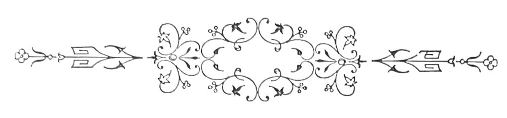
A taberna do Pescada ficava mesmo em frente ao cemiterio dos Prazeres, e era frequentada pela gente do sitio, especialmente de noite, á hora em que os cabouqueiros e os britadores abandonam os seus trabalhos e entram na cidade, em ruido.
Tratava-se então de levantar um muro de cantaria que fosse como a fachada opulenta da gelida cidade de cadaveres; na planura que medeia entre o cemiterio e as terras, o terreno via-se revolto; os carros de mão jaziam esquecidos; os montes de pedras miudas e de argamassas antigas tornavam penoso o transito. Na lama constante do caminho, eram profundos os sulcos que as seges de enterro deixavam até á porta do cemiterio, escancarada sempre, como a guela d’um plesiosauro faminto.
[Pg 10]
Em anoitecendo, tudo aquillo era de uma contemplação lugubre e mysteriosa, em que se adivinhava o trabalho de milhões de larvas; o ladrar dos cães tinha um echo desolado, que tornava depois mais sinistro o silencio; a porta fechava-se sem rumor, girando em gonzos discretos, e uma luz esmaecia na treva, no fundo dos cyprestes e dos tumulos, diante de um santuario deserto, onde o Christo, do alto, olhava vagamente o guarda-vento.
Começavam então a chegar á tasca os guardas encanecidos no mister de receber enterros, graves nos seus uniformes fatidicos, os coveiros angulosos e vesgos lançando de si um fetido deleterio; e cada um, dando boas noites á tia Lauriana, ia sentar-se á banca, no seu lugar, chupando pontas de cigarro e pedindo decilitros. Todas as noites a casa se enchia, e o aspecto era sempre o mesmo.
Ao fundo, encostada ao balcão forrado de zinco, a tia Lauriana, mulher de grandes seios e arrecadas, que tinha a especialidade dos pasteis de bacalhau, e pernas masculas sahindo de grosseiras saias de baetilha; ao canto, o cego de chapeirão derrubado, attitude fria, faminta, dolorida e apagada, a rebeca nos joelhos, a manta de riscas ao hombro, a eterna noite nas feições. O grupo dos trolhas junto da porta, discutia o preço das couves e o numero de ventres perfurados com facas de ponta, durante a semana. Zé Claudino tinha a palavra; a sua authoridade indiscutivel de orador popular, fazia-lhe cahir dos labios, como um rosario[Pg 11] de sons, as palavras graves, indecorosas, chulas e poeticas, em mixto turbulento e intelligente.
Bebedos extraordinarios fallam de tudo e descrevem parabolas no sólo, com a sombra de seus copos embrutecidos. Dous ou tres embirram com a sombra.
—Mette-te commigo, resmungam; cahe n’essa, minha tyranna!
—A velhaca, commentam, tem agora a mania de ir adiante de mim. Esta manhã era atraz. Mas não me larga! Bebeda!
—Era o que me faltava! Sucia de marmanjos!
E insistentes, aos zig-zagues:
—Persegue-me anda, persegue-me, que levas dois butes.
—Lá isso, ouve-se outro dizer na rua, lá isso, não digo eu... Que elle ha um Deus que nos governa: é boa!
Eu entrava, comprimentando os velhos conhecimentos.
—Ditosos olhos, estudantinho! dizia um.
—Ó seu casaca! fazia outro.
—Seja bem apparecido e pague-nos dois dedos de marufo.
Um velho fressureiro, com o olho esgazeado de sicario experiente, tocando-me o braço com a sua mão ensanguentada, ia aconselhando baixo:
—Prove-me do branco, doutor; prove-me do branco que é uma reinação! Com um pastelinho, não lhe conto nada...
[Pg 12]
Aquelles eram os meus amigos, perigosos amigos contrahidos na intimidade do vicio e no surdo deboche das tascas.
Sentava-me. A Lauriana vinha, sorrindo, servir-me; e o seu olho pardo, sequioso, acariciava a brancura do meu pescoço, appetecia os meus cabellos de um louro claro, tons insipidos, sob as abas do chapéo esburacado. O seu halito empestava a dez passos, trazido nas azas do seu amor quente e brutal, de uma infamia cheia de mercancia. Ouvindo-me pedir qualquer cousa, o olhar adoçava-se-lhe como o d’essas gatas a quem coçamos o craneo; e eu sentia exhalar-se d’ella um fartum de gorduras fundidas, que me perturbava. N’essa noite chegou o tio Farrusco.
Era coveiro e o mais asqueroso,—o da valla; aspecto repellente, perfil aspero e cortante, descarnadas as faces, as mãos aduncas e gastas, cheias de terra e de cabellos.
Sobre a testa, de uma pollegada de largo, cahiam grenhas fermentadas; as orelhas desappareciam-lhe sob a lã sebacea d’um barrete cinzento; por um rasgão da camisa, furava uma moita de cabellos hirsutos, brancos como um pé de junco sêcco, nascido entre as pedras d’um muro arruinado de azenha decrepita. Quasi lhe ficavam pelas esquinas a que se encostava, os farrapos em que embrulhava o corpo esqueletico e lustroso, como de couro curtido.
Um cabouqueiro tostado, perfil adunco de coruja, bateu-lhe no hombro.
[Pg 13]
—Tio Farrusco!
O outro tentou aprumar a estatura, lassa na molleza da embriaguez e resmungou:
—Que é lá isso, patêgo?—O seu olho envidraçado não podia fitar; fios de baba desciam-lhe lentos, aos cantos da bocca.
—Olá, fez o cabouqueiro; a maré encheu. E sacudia-o.
—Mais bebedo é vossê, grande cavalgadura!
Tentava caminhar; a sua sombra oscillava amplificada na parede, como a d’um ante-diluviano phenomenal, e quasi se não comprehendia bem como aquella cousa era um homem. Arrastou-se custosamente para um canto; ao passar por Zé Claudino tomou-lhe o copo, levou á bocca o vinho e esteve bebendo devagar. As gotas, d’um roxo sujo, cahiam-lhe pelas barbas. O nó da garganta subia-lhe e descia com vagarosos movimentos de embolo no cylindro d’uma bomba. Pousou o copo com ruido, com a manga da jaqueta limpou os beiços.
—E a filha? perguntaram-lhe. A Ruiva... O tempo tem estado famoso para doentes. Um sol quentinho que é um forno.—Do fundo, alguem disse para Zé Claudino:
—A Ruiva inda é viva?
E um trolha curioso:
—Não era essa que deitava sangue pela bocca? Na tenda do Malaquias vi eu... foi pelo Santo Amaro, faz agora annos...
[Pg 14]
Mas cada um procurava informar-se:
—Uma gaja de grenha encarnada, um signalzinho de cabellos no pescoço... o que? Era filha d’aquillo? E apontavam o coveiro.
—Bem sei, diziam; que peça! A que estava com o Nicolau das seges d’enterro. Contem-me cá quem isso era. Bebeda, como ratos! Ora esperem. Ella era tambem da sucia da Panasqueira. Lembras-te, Zé Claudino?
—Bons tempos, fez o interrogado do fundo da sua saudade dissoluta, aquella noite no palheiro do Panellas. Vinte raparigas dos casaes, todas pimponas, vieram dormir á granja. Alta noite, piscava o olho; alta noite...
—Não ponhas mais na carta. Tosquei tudo! Que bailões! E a Ruiva tambem era...
—Uma mulher dos diabos! Enfezadita dos nervos, mas coragem que tinha diabo. Quando ella se deitou ao Nicolau, aquella vez pelo Entrudo, além ao Quintalinho! Prega-lhe duas taponas, que nem eu sei como o não virou!
O coveiro olhava, sem comprehender, um pasmo idiota na face. Na penumbra da taberna, aquelle asqueroso vulto tinha uma expressão rembrantesca e crua, que fazia medo. O deboche nunca se concentrára tanto, podia-se jurar.
—Mas, tio Farrusco, a Ruiva vai melhor, hein?
—Melhor, melhor, gaguejou elle. Esta manhã vi-a estar dormindo... mais branca!—Pagas[Pg 15] cambrainha[1], ó tyranno? Uma pessoa, c’os diabos, gosta de molhar a palavra. Quero lá saber!...
[1] Aguardente.
Tentava apoiar-se na banca, com as duas mãos tremulas. Ouviam-no cantarolar baixo, babando-se:
E com risadinhas pequenas e cruas, geladas, doidas, que produziam como o grito do estanho, aconchegou-se ao canto, para dormir, com circulos de cão vadio que se anicha. Todos procuravam espicaçal-o com uma chufa. Blasphemava-se em voz alta, uma riqueza inultrapassavel de obscenidades.
—A minha filha, resmungava o tio Farrusco. Querem saber da minha filha, da Ruiva... Sucia de tarimbeiros!...
Ainda hoje, o Nicolau que atira á valla as rezes que se abatem no hospital[2], me disse que a[Pg 16] trazia alli. É boa! Se eu bem vi o sacco... e cosido que elle vinha.
[2] É no Alto de S. João que se sepultam os cadaveres do hospital; para o nosso caso, porém, isso não importa.
A Ruiva em postas!—Ria-se. Cahira tudo n’um silencio algido.
Calou-se, e depois:
—Tambem eu hei-de morrer. Quero lá saber nada d’aquella grande velhaca!
—Vamos, disse eu. Ha una cousa peor que um cão damnado: é um coveiro bebedo. E sahi.
Um dia antes, o meu escalpello penetrára o corpo d’essa perdida creatura, que veio a fornecer subsidios notaveis á minha these inaugural.
Inquiri pormenores. Disseram-me que o tio Farrusco fôra casado com uma vendedeira, a Martha, muito conhecida por Buenos-Ayres. Soube-se depois que as hortaliças que esta mulher vendia, eram pelo marido plantadas no cemiterio, para lá da valla e longe das vistas dos indiscretos, hortaliças que com o tempo e o bello tempero da terra adquiriam grande desenvolvimento.
Se lh’as gabavam, Martha retorquia:
—Ai! bom dinheiro custam, fregueza. Vem todas as manhãs de Odivellas, uma estopada que eu sei!...
E explicava que um cunhado, da quinta do snr. marquez de Borba, tinha seu vintem e um bocadinho de terra onde se faziam os bellos nabos e aquellas[Pg 17] lombardas folhudas. Caro, tudo pelas ultimas, dizia pondo a sogra, os cordões a luzir no peito.
Carolina nasceu no dia da morte da mãi. Até alli, o coveiro vivera sem miserias, mas, morta a mulher, descobriu-se d’onde vinham as couves e ninguem mais lh’as comprou. Não se sabe como a pequena se creára, mas aos doze annos era bonita, franzininha, o nariz arrebitado, descalça e cheia de remendos.
E sem consciencia do que via, acompanhava o pai na sinistra occupação de sepultar os mortos. Assim crescera. N’aquella miseranda existencia entrára a crear predilecções. Começou a amar principalmente os mortos que paravam á porta do cemiterio em ricas berlindas douradas, entre filas de gatos pingados lugubres de tochas accesas, e puxados por seis parelhas cobertas de crepes. Visitava-os na casa da observação, acocorada a um canto com o olhar absorto, durante as vinte e quatro horas que os caixões alli passavam abertos, e onde contemplava, deitados na petrea immobilidade derradeira, os que na sua vaidade egoista, corruptos e miasmaticos, iam habitar em sepulchros de marmore, com figuras sentimentaes na fachada e pomposas inscripções nas lapides. Póde dizer-se que aprendeu a lêr no cemiterio, quando curiosa na sua pobreza esfrangalhada queria saber os nomes e posições occupadas no mundo pelos que habitavam aquella branca cidade de marmores, de que se julgava rainha.
[Pg 18]
Uma tarde, passeando na grande rua que corre ao longo da fachada do cemiterio tinha parado a contemplar, no alto d’um pedestal glorioso, a estatua do conde das Antas. E fallava ainda nos seus ultimos dias, d’aquella energica figura de soldado, grande barba sobre o peito e cabeça de um vigor leonino, a mão apertando o punho da espada... e desde então, a sua ancia pedia-lhe militares, que arrastam nas ruas os sabres prateados e destacam, na agitação dos enterros, d’entre os graves toilettes negros com a alegria embriagadora dos seus vivos rutilantes e das suas divisas sanguineas, côr dos desejos insaciaveis. Nos seus devaneios passavam pallidas figuras de alferes, dos que tilintam esporas no lagedo dos passeios e retorcem bigodes frisados, contemplando as janellas, em domingos de procissão. Todos os dias visitava a casa das observações: alli, sobre bancas expunham-se caixões abertos; ella mesma mettia nas mãos dos mortos as argolas de alarme, e tal emprego quotidiano permittia-lhe vêr gentes de todas as castas e profissões. Meninas ricas, filhas de millionarios e nascidas entre velludos, aureas meninices em berços de renda, acalentadas por amas normandas de cachos louros, iam alli dormindo nos seus caixões de setim, victimas de tisica galopante, olhos vitreos e face cavada, labios brancos em listras lividas e o gelado sorriso dos martyres, clareando em reflexos os rostos, de uma rigidez de esculptura.
Rapazes pobres, dos que ao clarão das forjas[Pg 19] crestaram a vida, figuras seccas de famintos, torciam nos rostos expressões de soffrer infernal e gelavam-se na nudez miseranda da morte, ao lado de reverendos, com a barba bem feita, a batina nova e grave, quebrada em pregas symetricas, finas camisas de bretanha, tiras de folhos e sapatos de fivela, cingindo, á força de apertadas com uma fita, contra o peito, cruzes de marfim bento, symbolo d’uma fé que nunca os caracterisou na vida.
E os grandes devassos, os magros adulteros que nos foyers das operas e nos camarins das cantoras, nas casas de batota e nas alcovas faceis fazem publica a sua dissolução e deshonra, vinham tambem, diante da pequena, exhibir a ultima elegancia.
Carolina, pelo numero e aspecto dos convidados d’um enterro, chegára á perfeição de fixar a posição social de qualquer defunto.
Os conselheiros reuniam graves figuras circumspectas de velhotes de luva preta e grandes pés, folgados em botas macias. Os condes faziam-se acompanhar dos coches da casa real, riqueza oxydada e rota, em que se sentiam os annos, os ratos e o oleo dos cabellos reaes.
Os escriptores arrastavam figuras chupadas, de luneta, vastas cabelleiras polvilhadas de caspa, expectoração de discursos com gestos amplos e eloquencia estrondosa. Conhecia o bombeiro, o policia, o correio e o juiz de irmandade. E odiava quem vinha só para entrar na cova, os que embarcavam para o outro mundo sem deixar, na gare, alguns[Pg 20] amigos da infancia, ou herdeiros capazes de guardar conveniencias. Ouvia n’esses momentos dizer ao pai:
—Sucia de vadios! quando tinha de abrir cova sem receber gorgeta.
E aprendera a dizer com elle esta phrase profunda:
—Até morrem pelo amor de Deus; cambada!...
Havendo enterro grande, punha uma garibaldi vermelha, azeite nos cabellos ruivos, sapatos de duraque preto, sem tacões e chatos como linguados. Toda risonha ajoelhava-se na passagem do prestito, movendo os labios como quem reza. Depois, na volta:
—Uma esmolinha por aquella alma de Deus!
E comprava pevides, amendoim torrado e alfeloa, á tia Palma, uma de capote verde, sem um olho, que vinha vender á porta n’um taboleiro velho, seccas golodices de arraial. O que a abalava era aquella vida na casa das observações. Olhava já sem terror os cadaveres, como se fossem pessoas adormecidas no mesmo quarto, cada qual na sua maca de estalagem. Os homens sobretudo. Alguns eram ainda novos, louros, pallidos e bem feitos; alguns ricos, tinham a pelle fina, de um contacto setinoso e bom.
Nas horas de calor, de verão, quando sob os cyprestes, os empregados do cemiterio dormiam, ia devagarinho sem ser presentida á casa dos depositos,[Pg 21] escolhia os cadáveres dos moços, dos bellos, se os havia e como um pequeno vampiro sequioso entreabria as mortalhas, despregando com uma navalhinha as camisas; mettia a mão devagarinho, pelo peito, mettia, escorregando-a ao longo das carnes, beliscando-as levemente, com prazer; o olhar dilatava-se-lhe, havia na sua face uma mancha de excitação, mordia os labios exaltada; e palpando, estudando, comprehendendo e adivinhando, ficava absorta, um pouco curvada sobre os corpos, o halito ardente, uma palpitação larga e cheia de impeto. A sua imaginação rasgava as nevoas indecisas que diante da intelligente maldade, a sua inexperiencia despregava como uma mascara casta e limpida, cheia de placidez. Estas explorações fizeram-a muito cedo mulher, preparando-a a comprehender mysterios e umas meias phrases que ouvia aos gatos-pingados, se passavam por ella. Ás vezes, eram rapazes de quinze a vinte annos que jaziam.
Carolina em os vendo exaltava-se, todos os nervos se lhe distendiam na ancia d’um desejo que jámais formulára. D’uma vez tinha beijado sôfrega uma fronte, com balbuciações afflictas, ardendo em peccado, como uma alma de reprobo.
Não conhecera mãi, nunca uma boa mulher a beijara e o coveiro não reprimia diante da filha as suas expansões brutaes. Entregue a si propria, chamuscada por caricias perfidas de homens entregues á rota corrente da sua bestialidade, fizera-se n’isto.[Pg 22] Havia no entanto dentro d’ella ainda, uma cousa ideal e inexplicavel, certa virgindade infantil: de noite rezava! Vinham-lhe tristezas intimas, a insomnia triturava-lhe por vezes a saude, como n’um almofariz de bronze. Sem saber porquê, era desgraçada. Desejaria ser como uma pequena que vira um dia costurando á porta fuma carvoaria, com uma rosa nas tranças. Mas de subito, alguma cousa a arremessava á lembrança condemnada dos homens adormecidos na casa de observação, e via-os surgir das suas mortalhas alinhavadas, sorrindo, com vida; estendiam os braços a procural-a; roídos de vermes, muitos vinham, como na dança do Roberto, roçar-lhe pelos quadris os membros esqualidos e podres.
E estonteada, fitando no vacuo aquella visão candente, miseravel nos seus quinze annos, sentava-se extenuada e languescida, á sombra dos cyprestes annosos e dos tumulos soberbos, com a cabeça aos baques, revolta a alma por criminosas commoções. Era já noite muitas vezes, quando ia só para casa, fóra do cemiterio. O pai ficava embrulhado n’um cobertor, com um gorro de lã preta por cujos rasgões lhe furavam os cabellos; deitava-se no concavo d’algum velho tumulo vazio; se cahia geada, erguia a tampa d’um jazigo de familia para ir estender-se nas gavetas, entre caixões de chumbo.
Já estava acostumado áquella folia, e depois, assim não dormia as manhãs na cama, e podia começar cedo o trabalho, regando logo de madrugada[Pg 23] da os canteiros dos tumulos das familias que lhe pagavam esse trabalho, varrendo dos pedestaes as folhas seccas que o vento despregava dos ramos, e alta noite, com passadas lentas e lugubres, nas tragicas encruzilhadas de cyprestes, reanimando ou accendendo, com o rôlo mettido nos dedos, as lampadas extinctas pelas lufadas do nordeste.
Nem uma vez se lembrou de Carolina que ficava de noite, na cidade, separada d’elle, a sua filha, entregue á leviandade dos seus quinze e aos furores de coração d’um aprendiz de marceneiro que a perseguia, preso de maus instinctos. Carolina era branca, delicada e nervosa; o seu sangue tinha originalidades singulares, inquietações de lucta e o furor da aventura, e do seu seio dimanava essa ancia ardente de que se fazem os gozos, anciada como ama sêde antiga.
Dormia n’uma casita arruinada e miseranda, occulta no fundo d’um pateo sem luz de lampeão, para onde abriam as janellas de taboinhas de casas suspeitas, em que marinheiros tocavam guitarra.
A historia das suas exaltações enraizava tambem como uma hera, n’aquellas más janellas, pelas noites escuras de verão, quando encostada ao peitoril da janella, escutava altercações, descantes e venalidades, na confidencia de carroceiros.
N’estas disputas Carolina entrevia uma cousa, que se apoderava rapidamente do seu organismo, enroscando-se-lhe no corpo como serpente com frio,[Pg 24] amarrotando e polluindo no amplexo alguma ainda que pouca, d’essa adoravel modestia que é o thesouro das mulheres honestas.
Viam-na de manhã quando sahia, dar bons dias á visinhança e sorrir ás peccadoras mendigas, que nas tabernas jantavam gravanzos por qualquer pataco, ter com ellas palestras. Desassombradamente olhava para os homens, tinha desdens para uma ordem de gente e creára predilecções pelos louros; nos seus trapos escolhia sempre côres que dessem na vista; e calculista, com o olho febril, architectava aventuras: seria de noite, uma chuva miuda peneirar-se-hia do alto, sobre as calçadas; fugiria embrulhada no chalito, com um louro... Hein?
Da janella da sua mansarda empinada sobre um banco de pinho, podia vêr o que se passava na alcova d’um pobre bordel fronteiro. Apagava a luz para não ser vista, subia ao banco, encostada á janella; e alli, durante horas passava a espreitar o que fazia a visinhança. Scenas equivocas desenrolavam-se por lá. Era tão curioso! A nudez impura dos contactos fazia-lhe regorgitar de dentro uma seiva, cuja plenitude a estonteava. Era a febre do sangue infeccionado pelos microzimas do vicio e o desejo da cadella nubente que uma força espicaça de irritantes curiosidades e terrores deliciosos. Aquillo vinha-lhe ás ondas, como a babuge das praias contra fraguedos solitarios.
Corôas de padres esverdeados, mostravam-se á luz de candieiros de petroleo; no espelhinho dos[Pg 25] toucadores das commodas, reflectiam-se grupos sombrios, estranhas phantasias das incarnações do Vichnou. E alguem dedilhando guitarras, entoava com voz rouca fados rasteiros do conde de Vimioso e da Severa, entre exhalações de aguardente. E tiniam garrafas, sentia-se o cheiro das sardinhas assadas. Toasts desbragados expluiam claramente. As vozes das mulheres guinchavam. Alguem rolava pelo sobrado e rimas de pratos cahiam, com estrondo, em migalhas no meio de pragas de raios. D’uma vez tresloucada, descera á rua. Domingo, de inverno. A noite lobrega alongava-se. Alguem gritava—Jornal da Noite, traz a lista de Hespanha!
O frio penetrava as carnes. Carolina tremia, labios seccos, uma afflicção enorme subindo-lhe do estomago. Não sabia para onde ir. Quereria as cousas mais violentas, amplexos de ferro, beijos de lava, o vasto oceano d’um amor sem fim e sem felicidade.
Mas o aprendiz de marceneiro, um rapaz athletico e sanguineo, appetites excentricos, sahia da officina, dava com ella, aproximava-se com uma piada...
Carolina recuava humilhada e cheia de vergonha. E sem uma palavra deitava a correr para a mansarda, subia a escada sem parar, fechava-se por dentro, e atirando-se para cima do leito desatava a soluçar sem remedio a desconsolação d’aquella vida, que fluctuava sem linha de conducta.
O candieiro apagava-se no alongamento da[Pg 26] noite. Das torres da Estrella uma badalada cahia sobre a cidade adormecida, a vibração enorme alongava-se, n’um circulo infinito...
E no silencio da mansarda, Carolina abria os olhos com um terror em que dançavam phantasmas sardonicos, com a cara do aprendiz.
Era a tarde de Nossa Senhora dos Prazeres. O tempo serenára, o céo não tinha nuvens e no azul espiritualisado, os vôos brancos dos pombos davam uma innocencia casta ao ambiente. Havia arraial n’essa tarde. A procissão sahida da igreja de Santos, por entre farrapos de bandeiras e verdores de buxo, devia entrar na capella do cemiterio, á noitinha, em meio de foguetes e aromas do peixe frito, cuidadosamente consumido pela fome do povoléo curioso.
Na explanada que vai terminar á porta dos Prazeres, as pequenas barracas de lona enchiam-se de grupos; filhas de saias engommadas, olheiras fundas com fadistas de calças esticadas sobre alpargatas de linho. As mulheres gordas, lenço vermelho, os grossos braços nús, refogavam mexilhão, vermelhas do calor; em torno os soldados passavam, de chibata, rostos vulgares e bestiaes dilatados em risos enormes; e meneando-se, diziam brutezas ás pequenas ovarinas sujas. Na confusão dos grupos os garotos sujos, vivamente alegres, corriam relanceando olhares famintos sobre os bolos seccos das vendedeiras ambulantes, e de passagem pediam cinco reis. Aqui e além viam-se sobre[Pg 27] a relva, petiscando, familias de operários, pequenas louras e limpas, typos de costureiras futuras, traços finos, scismadores e delicados. Os vadios esqueleticos, de calções em frangalhos, apregoavam agua. No ar os ruidos multiplices abafavam-se uns aos outros, e das continuas pulsações resultantes elevava-se um ruido uniforme e indistincto, como de ebullição longinqua. Os municipaes da patrulha iam atravessando devagar, nos seus cavallos negros, e os capacetes esguios de cuja crista jorrava a branca cabelleira dos pennachos de linho, salpicavam de originalidade a paizagem. Eram um enlevo. As criadas olhavam-os suspirando. O ruido crescia. O sol mergulhava com uma pompa escarlate, no silencio do rio, e o poente inflammado era de uma amplidão sem balizas. Dentro do cemiterio o mesmo movimento de quem ia e vinha. Pessoas fornidas de carnes, esposas espessas de oleiros, capellistas de chapelinho, laços escandalosos e sombrinha, liam, soletrando as inscripções tumulares. Admirava-se o marmore, as fachadas. Os pequenos vagarosos colhiam alfazema e sardinheiras. Alguns olhavam através das rotulas, o interior dos jazigos, a vêr quem tinha berloques de contas e figuras bordadas a lã em molduras ricas. Alguns ferreiros de mãos callosas, descançavam na borda dos pedestaes, tasquinhando as suas merendas; muitos bebiam pelas garrafas, fazendo saudes aos compadres. E todo o mundo ria a sua pandega, a fazer arraial com grossas bobages cruas de taberna e[Pg 28] de officina. As mulheres de vestidos de merino, com folhos, mantas de lã com borlas cahidas atraz, chale bem dobrado no braço, olhavam pasmadas. Os fragmentos das palestras, apanhados de passagem, eram os mais originaes e contrastantes. Veteranos procuravam o tumulo do conde das Antas. Explicavam os emblemas, a attitude féra da estatua.
—Portugal velho! commentavam. Elle e o Saldanha!...
E familiares, um clarão purpureo na face:
—O nosso velho! diziam. No 19 de maio...
E outros queriam vêr o tumulo do Palmella. Uma velha de Aveiro ouvira dizer na terra que era obra famosa. Alguem explicava as riquezas do duque, as suas quintas, dois contos diarios de rendimento; a duqueza era bonita e um pouco gorda; elle tinha sido da marinha. De resto boas pessoas e fidalgos da gema; pela Semana Santa pediam na sé para os pobres e sustentavam asylos. E iam semeando o chão de espinhas de peixe, de cascas de laranja, e os ares de rumores de palestra. Mas estrondeavam foguetes. Uma philarmonica sentia-se ao longe. Corriam. Era a procissão. Á frente um marceneiro espadaudo trazia o pendão, pomposo na sua capa de sêda vermelha. Virgens de branco, rosas na cabeça, typos de gaiatos disfarçados em saias, vinham gravemente, acertando o passo. E sobre as cabeças um andor de pau dourado e pequeno trazia a imagem, cheia de flôres de papel.[Pg 29] Carolina com a garibaldi melhor, uma rêde de contas nos cabellos ruivos, fôra tambem á festa. O coveiro embebedava-se em casa do Pescada, com a barba feita, o seu carão anguloso e miseravel, inerte sob as abas d’um chapéo de Braga. Carolina vestira-se logo de manhã, toda brunida, botas de duraque sem tacões, brincos de vidro prateado, arzinho alegre, o branco appetite da sua carne anemica, feminil e debil. E fôra ao cemiterio espairecer um bocado, com um farnel no lenço, laranjas, duas queijadinhas da tia Palma.
A senhora Marcellina que fôra ama do padre Anselmo e agora arranjava criadas e concertava cadeiras, tinha promettido a Carolina ir lá ter com ella mais a mulata, que sahira do hospital havia uma semana e lhe estava devendo cousa de quatro moedas. A Marcellina morava no pateo tambem, no primeiro andar, tinha arranjos de casa e barbicas pela cara, sua meia duzia de lençoes, um rico cordão de ouro com medalha e uma Senhora das Dôres com olhos de vidro, mesmo viva, a olhar para uma pessoa.
E fallava-se: que havia papeis, uma panella de dinheiro no quintal, ricos manteletes nas commodas, que tinham pertencido á irmã do padre Anselmo. Marcellina era uma pessoa baixa e vagarosa, aspecto redondo e rôxo de hemorrhoida, feridas na perna emplastada, anneis pelos dedos e o vozeirão d’um quartel-mestre sahindo do capote d’alcoviteira. A sua historia apoiava o enredo principal no[Pg 30] governo civil, no hospital e na rua das Atafonas. De resto encontrára o padre Anselmo, capellão da Guia e tomára-lhe amizade. Boa pessoa, o padre Anselmo, amigo do seu amigo, boas manhãs na cama, de inverno, beberricava-lhe um quasi nada, ratão, pregando bellas peças; manhã cedo, ella ainda na cama, e vinha elle da missa, descobria-a, zás, uma palmada. E morrêra. Tudo quanto é bom acaba. A gente falla, falla ... um dia chega. E dava grandes suspiros. Carolina conhecia-a. Mal luzia o buraco, já a senhora Marcellina corria a vidraça e vinha de coifa branca, espanejar o peitoril. Tinha um sorriso agradavel; um dente tropego, unico e esquecido, esverdinhava-lhe na bocca desmobilada; as barbicas hirsutas recordavam uma gata mansinha que se corcova electrica, sob as festas do dono. Era-lhe de mais a mais muito obrigada.—De rastos que eu ande, dizia, de rastos que eu ande, não lhe pago as obrigações que lhe devo. Quando estivera doente, com tosse e muita febre, ninguem dizia que ella escapava, a senhora Marcellina vinha dar-lhe caldos e fazer meia junto do seu leito de proletaria. Havia dous annos. Mas não se davam muito; a Marcellina era mais das outras defronte, fallava com ellas de janella para janella, grossos risos e pesadas graças. E ratona então, como nunca se vira. O que sabia de frades, e do poeta Bocage!... Era arrebentar de riso, senhores. Além d’isso andava sempre occupada na vida, uma azafama, chale traçado e sapato d’ourelo, a[Pg 31] massa dos seios papuda e mollemente batida por mais de meio seculo, arrotos estrondosos... Sahiam de casa d’ella pessoas lugubres. D’uma vez a policia fôra alli. Emfim, fallavam-se cousas, ella sabia de facadas, e Carolina ouvira dizer isto—arranja pequenas a velhos. E no fundo da sua alma branca e susceptivel experimentára horror. Na tarde anterior a filha do coveiro recolhera com ares de dia, a Marcellina estava á janella; fallaram-se, como estava como não estava, o pai como ia, e que ella ia vivendo com o seu padecimento de entranha, amargos de bocca, uma canceira, uma canceira; mesmo mortinha de todo! Tinha posto bismas de confortativo que era muito bom, andava agora tomando pózes, caros com’á fortuna, mas o fastio era grande, afflicções por dentro... O peor eram as noites, contava todas as horas. E depois as pulgas. Ai! dizia, quem tem mazella, tudo lhe dá n’ella. Que é feito, que é feito? Não havia olhos que a lograssem. De resto amava as creaturas serias como Carolina; nunca fôra de tricas, louvado Deus. E arrotava. Tinha almoçado uma açordinha, com seu ovo; tudo lhe fazia mal.—É caruncho, é caruncho, commentava. E convidára Carolina a entrar, descançar um pouco, tinha rosas no quintal, uma franga preta que já punha ovos, manto novo na Senhora das Dores—minha rica mãi do céo!
Carolina subiu, beijocaram-se, ricas filhas para um lado, abraço para outro. Carolina sentia-se contente, uma quietação plena, chocada pela sinceridade[Pg 32] da outra. A senhora Marcellina olhava para ella de face. E largou d’ahi a nada este dito:
—Ha-de ser um peixão!—E piscava o olho pardo com ares de entendedora. Andaram vendo o quintal; Marcellina fazia-lhe um ramilhete de rosas. D’alli a nada veio a mulata, encostada ás paredes, uma cuia enorme de postiços e fundas olheiras, olhos de carneiro morto, um cheiro a cigarro e a camphora.
Mas foi-se logo encostar. Com o tempo humido, tinha dôres do diabo nos ossos. Desejaria morrer já—raio de vida! Carolina dizia-lhe palavras commovidas; que aquillo não havia de ser nada, em o tempo limpando já a cousa era outra, que tivesse paciencia, coitadinha, que tivesse paciencia. E a mulata arrastava-se, com um sorriso em que havia alta percentagem de amargura, aspecto chato e esmagado, como sacco vazio, de roupa velha. E o seu craneo pequenino de estupida, de grande bestiaga, tinha a calva depressão idiota d’uma cabaça ôcca. Quando ficaram sós, a senhora Marcellina abaixando um pouco a voz, disse á filha do coveiro:
—Tenho uma coisita que lhe dizer, seu interesse.
—Sim? fez Carolina.
—Não é cousa nenhuma má, não senhor. O seu a seu dono!
—O que é então?
—Não se zanga, não?
[Pg 33]
—Porque havia zangar-me? Mas diga.
—Ha ahi um rapazola, que dá um cavacão pela menina. Um cavacão, c’os diabos; um cavacão!
Carolina teve um sobresalto. O coefficiente das suas orgulhosas alegrias traduziu-se n’um sorriso.
—Está a mangar, disse.
—Palavrinha, é cousa seria. Elle fallou-me n’isso.
—Para que? disse ella tremula, penetrada.
—Ora! Namoricos; não sabe como as cousas são? Rapaziadas. Todos nós temos d’isso. Emfim, fallar não offende.—Carolina estava pallida, sentia-se vagamente n’um deleite, curiosa e cheia de excitações. A senhora Marcellina, de olhos no chão, mordia o labio inferior, como quem reflecte.
—Com que então, disse Carolina, gosta?
—Hi!...
E passado um momento:
—Um rapaz como umas casas, forte, loiraço e bom trabalhador. Hein? sua sonsinha... hein?
E insinuando-se, velha toupeira:
—Tendo juizo, minha riquinha, é uma mina. Nada de cahir antes de tempo, percebes?
Carolina estava rubra, com palpitações doidas.
—E quem é? Como se chama?
—Isso queria vossê saber, isso queria vossê saber!
—Não, serio, diga.—E mais resoluta—ha-de dizer!
[Pg 34]
—Aqui defronte do becco, ha uma loja de marceneiro. Sabe. A do Ferreira, um de óculos.
—Ah! fez Carolina. Já sei.
—Ha um official, o João, bonitote, muito claro. É esse.
—É esse então? Pois senhores...
—Um bello moço, um bello moço! É vêl-o além na loja, a camisa arregaçada; que braços, hein!
Carolina adivinhava-o, sentindo-o na sua imaginação com um vigor de pintura.
—E depois? disse ella.
—E elle pediu-me que arranjasse a cousa, que lhe fallasse; tinha vergonha de vir elle mesmo... Ganha seis tostões, vive só; bom rapaz no fundo.
—E meu pai?
—Ora! Nem o adivinha. Vive sempre lá em cascos de rolhas. Quer lá saber... É vinho e deixa andar.
—Nem sei, nem sei...
—Isso, o resto arranja-se. Amanhã ha festa nos Prazeres, percebes? Elle vai por alli. Tu vaes commigo. Entendam-se lá como quizerem. Gostas d’elle?
—Sei lá, sei lá! Não é feio...
—Entendo. Amanhã vamos ao arraial. O dia deve estar bonito.
—Olhe, vou de manhã. Lá a espero de tarde.
—Vá feito. Valeu. Faço os meus arranjos e vou depois.
[Pg 35]
—Adeusinho, adeusinho.
Desceu a escada. No portal gritou para cima:
— E obrigada por tudo, obrigadinha por tudo.
Não dormiu toda a noite. Uma turbulencia de idéas desencontradas agitava-a. Havia dentro d’ella alguma cousa explosiva que rebentava, que se dilatava com um volume maior que o do seu cerebro e do seu coração.
Tinha projectos, predilecções, vaidades. Iria comer petisqueiras de truz na frescura dos retiros, sob parreiras verdes, em quanto na encosta, lavadeiras batem roupa. Teria vestidos azues, de merino, ricos lenços de sêda com ramos, uma sombrinha e anneis, alguma cousa como uma opulencia.
A tia Palma não a reconheceria tão liró, feita uma rainha de Nantes com botas de biqueira. E mirava-se no espelho embevecida, desvanecimento pelintra, a admiração de si mesma. Surprehendia-se a murmurar baixinho—O meu João. O meu João está na officina. O jantar do meu João. Em o meu João vindo. O meu João sahiu.—E orgulhava-se: ter um homem, ter um amigo...
Diriam d’ella as visinhas—a que está com o João da officina, uma ruiva.—Via-se aos domingos no passeio da Estrella com elle, em roda do coreto, fazendo volutas por entre os soldados de caçadores, vestido de merino azul, de folho, arregaçado[Pg 36] atraz, a saia branca, um lenço nas mãos suadas e gravatinha encarnada, de borlas. E d’alli a um anno quem sabe, broche de ouro, de moeda! Os pequenos é que haviam ser o diabo, ranhosos, cheios de birras, cuecas vestidas cuecas amarelladas, de rastos, fazendo gallos nas testas. Deixal-os. Tambem as outras se aguentavam: ora! Mas um loiro, um loiro; que bom! Sempre tinha dito—Deus não me mate sem um loiro. Ás vezes ao acordar, na molleza lassa do corpo tépido e aconchegado, espreguiçava-se pensando:
—Ai! um loiro...
E lembrava as primeiras linhas do pescoço do aprendiz, linhas fortes e firmemente contornadas, tons rosa no sanguineo da epiderme, pequeninas espiraes de cabellinhos louros, de um macio quente e provocante. E depois a sua imaginação, no delirio, na incoherencia, prolongava nitidamente essas linhas, harmonisando-as, moldando-as, curvas suaves e velludineas, cheias de saude, aquelles brancos braços herculeos e sem um pello que lhe via na officina, um peito amplo, cheio e poderoso, em que se sentissem vagas ondulações viris de seios, altas pernas nervosas, esculpturaes, direitas. E diante d’ella surgia aquelle corpo de luctador, de athleta, grandes traços magistraes e simples, de uma pureza de academia. E penetrava-se da côr da pelle, fresca e clara, sob que se sentiam correr impetos de sangue rico, joven, virginal, fremente. Tomal-o-hia pelos hombros, redondos como os d’uma[Pg 37] estatua, e erguida nos bicos dos pés, como era baixa, dar-lhe-hia pequenos beijos furiosos na bocca, sorvendo o seu halito, estrangulando-lhe os arquejos, dominando-o e confundindo a sua na alma d’elle.
Seria assim eternamente, sem nunca se fatigar, e no alongamento as noites de inverno, como grandes corôas que se rezam, deixariam cahir as horas no silencio.
No turbilhão dos seus devaneios succediam-se rápidas as scenas, vibrantes como kolpodes que tumultuam na fermentação. Quereria a vida das visinhas, agitações constantes da negociação dos corpos, que transformam a vida em sonho ou chimera. Via saias de gomma arrastando, botinas vermelhas de roseta e tacão alto, os altos penteados caracteristicos. As caras angulosas, com manchas vinolentas sorriam para ella, deitando linguas negras de fóra.
E sem explicar porquê, como um rhythmo original, ouvia as pancadas d’uma enxada na terra do cemiterio. Gelava-se.—Era o pai que estava abrindo sepulturas! No fundo sentia-se infeliz e fluctuante n’uma grande incoherencia. Agitada como estava, o somno fugia-lhe, e as idéas desviando-se pouco a pouco do primeiro intuito, marchavam já, como raios que se refrangem, pelo vasto plaino das recordações. Pensava na vida do cemiterio, o amor medonho dos cadaveres, em cuja gelida intimidade vivera tanto, abrindo mortalhas e[Pg 38] erguendo tampas de caixões. Na sua sinceridade confessava-se horrivel, cheia de affinidades com a hyena. Nunca mais iria exaltar-se perante homens sem vida. Que infamia! Agora tinha o seu João, carnes brancas, de semi-deus. Era feliz então sentindo na alma aquella irisação de paz que a perfumava toda, como n’um banho voluptuoso. Ser amada por aquelle forte, apertada e vencida nos seus braços esculpturaes, parecia-lhe uma ventura, um milagre, alguma cousa como um sonho febril. Dar-se-hia plenamente e sem reservas, com uma abundancia louca de contactos, phrenetica e possuida d’um alto desejo de o possuir. A sua vida condensava-se-lhe colorisada n’uma recordação deliciosa, sem comprehender no deleite a saciedade, a inanição, o desprezo de si mesma por fim. No fundo do espelhinho estanhado, a sua figura illuminada pela vela de sebo tinha uma curva nitida e delicada. Sorriu-se para mostrar os dentes, pequeninos e miudos, de gatasinha branca. E dilatou-se n’um vasto contentamento interior: era bella, de uma compleição tenuissima e nervosa, toda feita de anemias. Com a mão torceu de leve sobre a fronte, uns cabellinhos ruivos, foi desabotoando, pouco a pouco, o corpete... O seio era branco, assim descoberto, estreito e appetitoso como uma miniatura, mas incapaz de amamentar um filho. Todas as linhas harmoniosas do busto, de fragilidade suave, pareciam moldadas n’um espartilho e realisavam uma elegancia moderna, boa para ensaiar figurinos, nos[Pg 39] ateliers da Maria Cecilia. Ia desabotoando: uma saia cahiu, outra e outra, e a camisa envolveu-a, como uma tunica que se desaperta. Era magra e branca. Na harmonia dos quadris, na expansão geral das proeminencias, exhalava-se a idealidade das organisações virginaes. Trivial e pequena como era, excitava assim mesmo. E ella mesma se devorava com o olhar, examinando, ensaiando attitudes, cheia d’aquella forte figura do aprendiz de marceneiro. Na tarde do dia seguinte deviam encontrar-se á noitinha, quando os passaros se amam, no mysterio das ramarias; o que iria succeder? Sentiria a sua respiração ardente, com um cheiro a decilitros de Torres, queimar-lhe a face. Fallariam embevecidos e frementes, cheios da mesma idéa profana, olhando em torno, receosos de quem passasse. Elle piscar-lhe-hia o olho maganamente; entender-se-hiam. E como na membrana d’um phonographo, na sua alma vinham arfar todas as vibrações d’aquella loucura de prazer, em que palpitaria no dia seguinte. Que farta estava d’aquella pobreza, comer açordas com alho, andar feita chineleira, ahi como um diabo, com as saias todas rotas! Raio de vida! Ao menos em elle sendo o seu João, a cousa ia melhor. E depois... uma pessoa não sabe para o que está guardada n’este mundo. A tia Marcellina conhecia uma que fôra peixeira, pé descalço por essas ruas, a vender carapaus, um fedor a peixum de seiscentos diabos, e agora estava uma opiniosa com um fidalgo, n’um primeiro andar,[Pg 40] ricas cortinas de renda nas janellas. Podia bem ser que nem sempre estivesse com o João—que elle era bom rapaz, coitado, mas diz que de sete em sete annos mudam as naturezas, salvo seja. A variedade attrahia-a. A Marcellina tinha-lhe fallado nos padres como bons patrões, unhas muito limpas, sua palma benta pelo domingo de Ramos, cotos de cera pelas Endoenças, bom lugar na capella-mór, onde se podia estar refastelada a ouvir a musica do lausperenne. E certos particulares, nos priores principalmente, um respeito, bellos lençoes de linho, almocinhos que era um regalo, nunca recolhiam tarde, muito limpos e pés lavados todos os dias. Divagava pelos braços dos desembargadores, dos soldados e dos marujos inglezes. Conhecia uma, da esquina, a Poloina, que até tinha inscripções; todos os seis mezes ia receber seu milho, que lhe pagava o governo, ou que raio era.
Outra, a Libania, um diabo bexigoso, tinha dinheiro a razão de juros, seu grilhão com medalha, annel de luzeiro. E fulana e sicrana, que tinham de seu, umas casitas, seu estanco, nunca tinham ido ao Desterro, viviam á barba longa e andavam gordas. Assim como assim, era boa vida; deixem lá fallar. Para pessoa pobre não havia outra. Que ser séria era bem bom fallado, mas o resto, tudo patacuada. Havia tolos que davam vestidos, ricos chales de cachemira, pagavam a cêa, sua noite ao Price,—os babosos! Depois não se cança a gente. Quem tinha juizo sempre ia bem. Havia tal que era mesmo[Pg 41] pelo beiço. E citava exemplos. A prostituição desenhava-se-lhe como a solução natural no problema da vida de uma rapariga pobre, que todas amam, umas mais, outras menos. E a sua ardencia, aligeirava-lhe as difficuldades. Pão, pão; queijo, queijo—que ella não era lá de meias medidas. E deixou cahir a camisa. Entrou a lavar-se com pequeninos estremecimentos de frio; os cabellos ruivos desnastravam-se-lhe pelas espádoas, embaraçando-a; chapinhava na agua com ruido, rapidos movimentos cheios de graça, como fremitos de diapasão.
Ouviu chorar de repente na calada nocturna, um sino, de uma tristeza de morte. E depois houve ruido na rua, os candieiros mostravam-se pelas janellas; um grupo de tochas, sinistro e lento, passou no meio de pessoas descobertas. Era Nosso Pai, a alguem que estava agonisando. Carolina viu.
E poz-se a recordar a vida do pai, pelo cemiterio áquella hora gelado no silencio noctambulo, em quanto os mochos deixam cahir notas agudas, sinistramente escarninhas. Elle estava talvez dormindo nos seus farrapos, no coração d’um velho tumulo profanado, entre caixões esquecidos. Ou perseguido pela insomnia—talvez não tivesse ido ao Pescada—pensava n’ella por ventura, na sua solicitude de pai, porque tambem teem coração os coveiros, mercê de Deus! E ella, sua filha, pensava em abandonal-o, em fazer-se servir como uma isca de figado aos cocheiros e aos trabalhadores, com reducção de preços! Roçava então pela miseria do[Pg 42] coveiro a sua piedade como uma aza de gaivota, e pensava:—Pobre velho!
Vinham-lhe subitaneas ternuras, vibrações de lagrimas intimas, uma desconsolação pathetica de tudo quanto a cercava. A idéa de morrer apparecia-lhe diffusamente, envolta n’uma photosphera de soffrimentos. Lembravam-lhe irmãs de caridade, jovens e pallidas, um rosario na cinta, o negror do habito amortalhando corpos de virgens maceradas. E longas penitencias no marmore das clausuras, entre açoutes de martyrio, ao rumor dos confiteor. Ia arrepender-se, pedir perdão...
Mas o corpo do aprendiz apparecia-lhe de uma tentação hilariante, branco, moço, potente e triumphador! Esmaecia, como um vago luar que empallidecei.
A Marcellina appareceu á tarde, depois da procissão, afogueada, cheia de esfalfamentos; que arrebentava se a não deixassem sentar um bocadinho, e que ia muito mal; a noite passada não tinha podido pregar olho; tudo eram bonecages diante d’ella, uma confusão, uma algazarra de metter medo. E estava ainda com febre—dava o pulso—que vissem, que vissem... Nunca fôra esmorecida, louvado Deus, lá isso não; que até pela febre amarella... ai! nem se queria lembrar. Aguas passadas... Tinha ido ao banco do hospital, explicado o que sentia, e desconfiava que aquillo era cousa de nórisma.
Um rapazote novo que parecia ainda estudante,[Pg 43] torcera a venta, e ella bem vira... ai! tomára já morrer; que andar uma creatura a penar por esse mundo e depois marchar da mesma maneira... ora!... que lhe faltava! Antes ir d’uma vez. E que Deus lhe perdoasse, que Deus lhe perdoasse!...—Carolina sorria-se compassiva e cheia de interesse, tinha ternuras pelintras, roçava o seu rostinho branco pelo queixo barbado da inculcadeira, chamando-lhe Li-Li com voz de criança amuada. Ia cahindo a tarde. O sol mergulhára no mar acharoando de tons metallicos e cupricos as nuvens do occidente, em gradações insensiveis, de uma grande riqueza de pinturas. Por entre tumulos, os cyprestes antigos erguiam-se como sentinellas immoveis, armadas de capacetes ponteagudos. Fóra as guitarras rumorejavam fadinhos tristes, do Calcinhas e do João Brandão; um trolha cantava rouquejando, com voz expectorada:
E vozes de garotos apregoavam—vai agua ou não vai agua!—no meio do vasto rumor de quem sahia.
—Sabes, segredou a Marcellina ao ouvido da pequena, que elle vem ao anoitecer? Teve hoje de trabalhar na officina; sempre são seis tostões... Está mesmo parvo, pelo beiço. Demais uma criancinha—dezoito annos ainda a fazer pela Santa[Pg 44] Maria! Pódes fazer d’elle gato-sapato.—E depois de um silencio:
—O que aquillo quer é roupa branca, jantarinho ás horas, festinhas e deixa andar. Vossês não sabem do mundo; ainda hontem largaram os cueiros. O primeiro que nos regala, é o unico aceado e de quem toda a vida se tem saudades. Que os mais—tudo gajões que a pregam na menina do olho!... E que visse, que estudasse a cousa: quando se tem na mão o passaro, é que se não deve deixal-o fugir. E rindo, dilatada n’uma hilaridade de velhaca, de rameira bebeda, mãos nos quadris, roncava affectando lubricidades:—Ai!... Tivesse ella os seus vinte, e quem o lograva era ella. Só aquellas carnes, em que se podia lamber mel.—E sordidamente mordida de appetites, agarrava-se a Carolina, fazia-lhe cocegas dizendo muitas vezes:
—Ricas filhas, ricas filhas!—E rolavam ambas pelos sepulchros rasos rindo soltamente, com um prazer de barregãs.
D’alli a pouco chegou o João. Trazia a blusa de riscado vestida debaixo do jaquetão, e os cabellos crescidos e encarriçados, cheios de aparas de casquinha. Era quasi imberbe ainda, branco e sanguineo, de uma compleição herculea em que se adivinhava a seiva fertil e jámais esbanjada, dos corpos encouraçados na propria virilidade, e no trabalho absorvidos até á idade dos loucos amores de bordel. O seu typo era de criança e presentia-se o fadista mais tarde, ámanhã mesmo.
[Pg 45]
—Ora graças, começou a Marcellina, graças que nos apparece! Uma cousa assim! Fazer esperar esta menina!—E recriminava-o, enchia-o de censuras: que para o futuro queriamos homem mais aquelle; que quem esperava desesperava; era uma verdade! Mas nada d’aquillo era morte de homem, louvado Deus!—E fazia as apresentações.—Carolina, não t’o dizia eu? Um rapagão, capaz de arrombar o Castello; e que lindo, mesmo de regalo!—Mencionava pormenores, nunca tinha tido uma doença, benza-o Deus, nunca tomára remedios de botica, nem sequer uma purga. E que mãos de prata! Fazia cadeiras de polimento como o primeiro; um armario que acabára pelo S. Pedro, tinha sido vendido a um homem de fora—tinha aquella de francez, uma falla a modos esquesita——por bellos mel reis. E mais cousas ainda que se não diziam.
O João, inchado, meio confuso sorria, dizendo com inflexões variadas:—Hom’essa! Hom’essa!... E aquecido, trescalando a carrascão, a perna bem desenhada na calça de bocca de sino, cambada um pouco para dentro e afeita ás escovinhas, chapéo arremessado com um piparote para a nuca, fitava Carolina, mordendo-a com os olhos e resmungando:
—Deixe fallar, deixe fallar, que isto sabe-a toda.
A Marcellina declarou que estava com a telha, uma alegria mesmo lá de dentro, e dizia:—Viva a borga! em estrepito. E tomando Carolina pela cintura[Pg 46] e agarrando o braço do aprendiz para aproximal-os:
—E que canta vossê cá da pequena, seu petiz? olhe que nem mandada vir de encommenda. E então esta carinha, que parece de seda... Maganão! Bem sabia que a não merecia, um chichisbeco d’aquelles! ai! Mas queria ser generosa... E que tratasse de a estimar, melhor que o pai a tinha estimado; que a queria vêr uma senhorita toda de fitas a voar e casibeques de pano fino, pelo inverno; conhecia casadinhos que era mesmo uma gracinha, mais unidinhos e mais guapos que era uma providencia. E que fossem assim toda a sua vida. Ambos elles sorriam, córados.
Nos seus olhos humidos, em cujas iris de inquietas fibrilhas havia um contrahir de commoções refreadas, luzia a caustica lasciva do desejo incendido.
Carolina sentia um quebramento fundil-a toda; era do calor, da fadiga da tarde, talvez da contemplação do sitio. E a sua alma perdia-se em grandes esquecimentos; alongava o olhar de encontro ás vastidões do céo e da paizagem, como se toda ella se expandisse n’aquella área sem termo, alada no vago do uma impressão que até alli não soubera formular. Viu-o preguiçosamente estendido na pedra branca de um tumulo. Era n’uma das ruas afastadas. N’aquella posição de madraço, a vigorosa expansão do seu corpo resaltava em linhas magnificas, de animal contente e são, que descança.[Pg 47] Tinha-lhe cahido o chapéo, e deitada para traz nas duas mãos sobrepostas, a cabeça parecia-lhe esbatida no fulvo dos cabellos, que á luz poente faziam um desenho de juba. Via-se-lhe o tronco oscillando, a camisa tufada por baixo do collete, uma das pernas flectida sobre a coxa e a outra estiraçada com bestial franqueza, para diante. Carolina devorava-o: era assim que ella sonhára o outro, nos seus delirios hystericos de virgem reclamando direitos de mulher fecunda, em noites de entrecortada allucinação. E via-o deslocar-se aos circulos por diante dos olhos, sentindo um tremor de mãos e frialdade mortal nas pontas dos dedos. Por seu lado, o João fitava-a com furias de novilho que desperta.
E velhacamente, um riso nervoso nos cantos da bocca, piscava-lhe os olhos, desafiando.
A noite tombára das encostas, pelo céo, e uma sineta batida pelo guarda do cemiterio, mandava sahir. Barras de nuvens tranquillas, estendiam-se ao oriente, aspectos esbatidos, de vaga melancolia contemplativa. A lua de um branco baço fluctuava como uma boia de cristofle, e tristes raios chimericos mal podiam coar-se pelos galhos corpulentos dos cyprestes antigos.
Via-se pouco pelas ruas do cemiterio; na ventana da capella um mocho narrava sarcastico em notas vibrantes, legendarios terrores; um vento passava vagaroso, como vigia de arraial adormecido, varrendo o pó das brancas sepulturas glaciaes. A[Pg 48] Marcellina ergueu-se para pôr o chale rico e ia andando.
Carolina ergueu-se para seguil-a. Mas o João agarrou-a pela cinta e com voz alterada, quasi guttural, dizia-lhe attrahindo-a a si, corpo a corpo:
—Olha lá, espera, olha lá.
Erguera um pouco o busto, e com inabalavel teimosia puxava as saias da rapariga.
—Esteja quieto, podem vêr. Mau!
Elle porém não a escutava.
—Não te vaes d’aqui, não te has-de ir d’aqui, murmurava-lhe ao ouvido. Todo o seu esforço era para apanhar-lhe a cara; tinha a respiração sifflante, e um tumulto de sangue turgecera-lhe as cordovêas do pescoço.
—E o beijo que me deves, o beijo que me deves? Dá-m’o!
Tinha-a agarrado pelas costas, mettendo-lhe as mãos por debaixo dos braços, e com uma força cruel conservava-a apertada sobre o peito, em quanto lhe premia os seios crespos e redondos, de mulher inviolada. Carolina tentava em balde arrancar-se ao amplexo. Conservava os olhos cerrados, um bater de narinas, a bocca escarlate como a ferida de um fructo torrido, palpitações. E dizia:
—Mau! Olhe que eu chamo, olhe que grito!
E n’um tom choroso:
—Ora isto, ora isto!
Elle não dizia palavra; apertava-a na cinta uivando[Pg 49] com fome, e beliscando-a na redondeza dos quadris e na curva marmorea das espádoas. A sua exaltação crescia, e luctava a serio, com arrancos de besta na quadra fatal do cio. E erguendo de repente o braço forçou-a a voltar a cabeça para traz, despenteando-a um pouco na frente.
—Mau! dizia ella. Rasgar não vale! Olhava-o com os seus olhos velados que tinham uma condensação de amor voluptuoso, essa expressão parada e lubrica que nasce dos espasmos profundos e desolantes.
O João dobrou-a vigorosamente, como se quizera partir-lhe os ossos.
—Cala-te, cala-te! dizia-lhe.
Os seus olhos resaltavam, havia um arripio de fibrilhas nos angulos das orbitas e sentia-se o estertor da sua respiração estrangulada. Então curvando-se sobre ella, com os seus labios ardentes sorveu-lhe a bocca palpitante, e furioso tirou-lhe o lenço para metter-lhe as mãos no seio. Ao contacto das epidermes a descarga dos fluidos deu um fremito de corpos, e Carolina esticando os braços atirou-lhe as duas mãos aos hombros, murmurando:
—Oh! matas-me...
E como na corrente murmura de um rio que vai fugindo, entregou-se-lhe toda, sonhando com esses fiords serenos e brancos, das regiões onde os extasis, como as noites duram mezes, sempre illuminados por um iris de aurora polar.
[Pg 50]
João agarrou na rapariga ao collo, como a uma criança, foi pela rua adiante ao encontro de Marcellina, que não estranhou se houvessem demorado. O João dava-lhe quatro pintos de commissão; era para comprar aviamentos para um vestido de fazenda, azuloio, que tinha ganho quando fôra do alferes Sarmento. Andava precisada de botinas; as dos domingos, de polimento, tinham uma fendasinha no joanete e via-se a meia. Não podia ir a parte nenhuma que se não envergonhasse. Fallára n’isso ao João, mas elle enfadava-se. Já lhe tinha dado para umas camisas e para a ajuda d’uma medalha, e certas miudezas, lenços de sêda, um casaco de pano bordado a trancinha, que tinha comprado á Francisca adela, com geito no olho, um pouco gaga. Fora a sua tagarellice, mal apanhou quem a escutasse, entrou a estafar a paciencia alheia, de commentarios nunca levados ao fim, historietas afogadas no prologo e logo preferidas a outras não menos interessantes.
—Ai filhos que se vai fazendo noite, negro tudo como breu.—A mulata devia estar em cuidado já. E não comprára os carapaus para o bichaninho, o Pimpão, eram mais de sete horas! Não tinha sustancia no estomago, mas havia sua vontadinha de comer. Tivera fressura para o jantar, umas ervilhasinhas com presunto que as podiam comer os anjos. Mas a fructa cara; a hortaliça estava para a gente rica. E então as mulheres da venda pelas portas; uma pouca vergonha! Quarteirão de laranjas,[Pg 51] dous tostões! Nunca se vira tal n’esse mundo de Christo. É com a guerra, dizia, é com a guerra. E que andavam os papeis cheios d’essas cousas, mais de duas mil pessoas mortas cada dia na Estranja, a tiro. E que Deus nos livrasse, que Deus nos livrasse, cá de levantamentos. Quando fôra pela revolta do quatro, ainda os dois não eram nascidos, tinham corrido rios de sangue, gente fugida por esses campos, até os santos andaram n’uma alhada. Nosso Senhor nos perdôe pelas suas cinco chagas! E persignava-se dando beijos na unha do pollegar, com ruido. Sahiram do cemiterio. Carolina não dizia nada, apertava o braço do aprendiz. A velha estava mesmo a cahir, e queixava-se. Estavam-lhe lá por dentro a resmoer, a resmoer; a modos que cousa assim de bicha. Tinha tomado as pevides de abobora—nada de resultado! Ai, mas ia mesmo mortinha; e que fossem enxugar uma pinga, com uma iscasinha semelas... Já não estava em idade de folias, bem lh’o estava dizendo aquelle esfalfamento. E os seus intestinos roncavam ameaçadores. Tinha sina de morrer cedo; então!... Toda a sua gente marchára ainda nova. Seu pai, um homemzarrão com’a um raio, tinha sahido bom, com uma capa de briche novinha, para casa do regedor, e á noitinha dá-lhe a febre amarella, e agora o vereis a vomitar... mandaram chamar o medico Cançado—parecia-lhe que o estava a vêr—luvas de casimira, um caixa-d’oculos corcovado, barbicas loiras, arrastando d’uma perna...—Receitou para[Pg 52] alli umas berundangas, ella foi á botica, noite fechada. Enterros por cada canto, padres a cantarem responsos. Nem ella sabia dizer bem. Quando chegou a casa, a mãi estava n’um berreiro:—Ai meu home da minh’alma! Ai meu rico amor do meu coração!... E escarapellava-se pelos cantos em saias de estamenha, sapateando as grossas solas cardadas pelo sobrado. Sua mãi fôra lavadeira da infanta, muito estimada das açafatas e aias; levava e trazia segredinhos, bilhetinhos, do Ramalhão para a Bemposta e da Bemposta para o Ramalhão. Chamavam-lhe a Angelca; um cabo da guarda apaixonára-se pelos seus bellos olhos e cantava-lhe modinhas. Mas ella, esperta que tinha raio!—moita carrasco! D’uma vez n’uma deveza, dois ganhões atiram-se a ella. Mas éna pai!... se vossês querem vêr o que era dar lambada, com os ceirões; andava tudo n’uma dobadoura, quando veio gente que apaziguou a faina. Quando não, era mulher capaz de dar cabo d’elles. E havia de se ralar muito. Emfim, filhos, emfim era de faca na perna, resumia com pompa, cheia de vaidade.
—Manda Nosso Senhor os bons á sua santa vista, que dos maus nem quer saber o diabo. Uma tarde minha mãi appareceu com tosse, tossinha de gato engasgado, dôres pela espinhela, calafrios... veio-lhe uma pulmonia da fortuna... pulmonia foi ella que a raspou até hoje. Foi em quinta-feira de Corpo de Deus, moravam ahi para as bandas da Sé, n’uma barraquinha velha; todo o dia a musica[Pg 53] a tocar; tropa para cá e para lá; a pretalhada tá—ti—ti—tá: tá—ti—ti—tá: tá—tá—taratá! Gentalha de pagode, o rei, os ministros, a procissão, o S. Jorge; e a mãi para alli amortalhada em chita velha, á espera do padre, para ir para debaixo da terra. Nem um coto de cera, nem uma fita, nem um véo de escumilha. As bilhardeiras das fidalgonas, em quanto a Angelca pôde servir-lhes de alcoviteira, fizeram-lhe festa, sim senhor. Mas quando fechou o olho—diabo que te carregue! São uma cousa que eu cá sei, aquellas peças. Não é lá dizermos, andam na berzundella um dia ou outro, mas sempre, sem nunca parar.—E cheia de reticencias procurava incitar o interesse. Baixava a voz, com uma confidencia obscena em que figuravam infantas de capote e lenço, passeando pelo Campo de Sant’Anna com o Chico Bellas, charuto na bocca, uma gazua no cinto do vestido e viva a reinação!... E fulana e fulana que ahi estão casadas com sicrano e sicrano, sonsinhas d’uma figa, já se não lembravam de quando escreviam cartas a este e aquelle, para que viessem ás tantas horas... sempre se viam cousas n’este mundo! Uma lastima, filhos, uma lastima! E que havia secia que era mesmo para alli, para quem queria vêr, na cocheira com os trintanarios. Conhecia boa meia duzia d’essas typas; algumas eram damas do paço. E que o mundo era todo assim. Mas o que a raivava era quererem ser grandes santarronas, que nem quebram um prato, e no cabo deitavam abaixo[Pg 54] a cantareira! Iam passando diante do Pescada. A casa estava cheia de gente; rumores de guitarras bordavam finos arabescos sonoros, de fados corridos; vinha lá de dentro um borborinho de gente avinhada; o fumo dos cachimbos azulava o ambiente, empestando, e grossos risos estalavam brutaes entre historias alegres do arraial, e largas digestões de mexilhão e pimentos. Via-se a tia Lauriana, papuda e quente, encostada ao balcão, entre bojos de garrafas pretas e taboleiros de queijos frescos. Um aguadeiro deitava ao longe o pregão monotono; para o interior da cidade, rumores de carruagens amorteciam gradualmente, na morna somnolencia quebrada da hora. O João lembrou que fossem comer alguma cousa. E mais aberto com as mulheres contava os seus appetites e as suas valentias; d’uma vez tinha tosado um gajo, na Perna de Pau; já aquillo chuchou cascudos!... E vai quando mal se descuida, o outro tinha passado as palhetas.
Era agora d’uma sociedade Esperança e Harmonia; tinham alugado casa na rua do Quelhas e tratavam de arranjar philarmonica; elle tocava pratos. Havia um barbeiro na rua das Trinas, o Lopes, que fazia comedias, gallegos que namoravam as sopeiras e cantavam versos da sua terra: era reinadio! E elle fazia de policia, tinha comprado uns bigodes de crepe... E dizia as suas boas intenções—em que se havia uma pessoa de entreter; andar para ahi perdido de bebedo? Assim sempre era mais decente. E que ella Carolina, havia de ir ás[Pg 55] comedias; não era verdade? Para o verão queriam dar bailes campestres n’uma horta, com balões de côres. Iam entrar no Pescada, mas Carolina puxou a manga do aprendiz, pediu que não fossem para alli; tinha lá o pai, se elle visse, santo Deus, era capaz de fazer alguma.—Aquillo, juntava Marcellina, em estando pingado, era o diabo mais ruim da christandade. E prudente aconselhava o Manel do Altinho; ia alli gente mais pacata, havia quartos particulares, seus reposteiros de chita, um rico cozinheiro, e em quanto ao sumo, era por conta do lavrador, sem confeição. Uva e mais nada! resumia.
Carolina sorria benevolente, sem dizer nada. Entraram no Manel do Altinho, para um quarto. O João bateu com ostentação de ricaço, na mesa, perguntou ás mulheres o que queriam; a Marcellina appetecera um bifesinho, Carolina não tinha vontade e o João quiz salada de camarões. E rindo todo córado, olhava para a pequena, abanando a cabeça, e dizia vagamente para achar palestra:
—Com que sim senhor, com que sim senhor! E confidencialmente, inclinado para Carolina:
—Não come mesmo nada, mesmo nada?
—Mesmo nada, dizia ella sorrindo, embebecida n’elle.
—Nem tanto como isto? e mostrava a ponteira da bengala.—Hom’essa! Olhe que entisica.
Piscava o olho. Riam baixo.
[Pg 56]
—Velhaco! segredava ella vermelha, tocando-lhe a face.
—Pois ha-de comer, ha-de comer por força!
E lentamente:
—E camarões, para abrir o appetite.—O olhar do aprendiz penetrava n’ella como um estylete. Miravam-se com curiosidade petulante, adivinhando-se. O olhar d’ella afogava-se n’um langor amoroso e humido, de uma sympathia impura. O João chegou-se mais e com voz quasi imperceptivel:
—Hoje, lá para tarde, vou, sim? disse elle.
—Hoje não, disse ella.
—Porque? Que tem?
—A visinhança deita-se altas horas. É gente má, percebe? Podia fallar-se, meu pai sabia... Hoje não. Depois.
—Mas se eu não posso, vê? supplicou o João, com voz piegas de criança.—Então?...—E timido, uma doçura insistente na bocca:
—Vou sim? Não póde recusar. É má!
Carolina deixava-se penetrar d’aquella imploração toda incendida de amor deshonesto. E sem resolução:
—Pois sim, pois sim, disse ella, mas ás duas horas, ouça bem, ás duas horas, quando não houver luz nas janellas, das taes.
A Marcellina um pouco afastada, tinha adormecido.
O rapaz chegou com a cêa. Carolina gostava[Pg 57] mesmo muito dos camarões. E bebia, toda palreira já.
Ao outro dia o aprendiz appareceu mais tarde na loja, tresnoitado e cheio de fadiga. Era a primeira vez que elle faltava aos seus deveres e o patrão, o Ferreira, velho direito e tostado, physionomia vulgarmente honesta, nada lhe disse. O João era d’estes filhos que os paes, viciosos e desleixados, abandonam pequenos, a uma vadiagem perigosa. Aos dez annos metteram-lhe umas cautelas na mão. De manhã cêdo, ainda escuro, ia descalço e cheio de lama ás redacções, comprar os jornaes do dia, n’uma pasta sebenta, que encontrára n’uma escada. E caminho dos bairros distantes e ainda adormecidos sob a luz vacillante dos lampeões, lá ia apregoando o Diario de Noticias e o Popular que sahiu agora a dez reis. Gastava assim a manhã. Algumas vezes, pequenino e todo roto, a carne suja transida de frio, deixava-se dormir nas escadas, com a pasta por travesseiro. E esquecia-se no somno, da venda dos Populares. Recolhia a casa carregado, com os jornaes intactos; davam-lhe tareias monumentaes, com uma corda molhada, nos rins. D’uma occasião perdeu as cautelas, pôz-se a chorar na rua, cheio de medo. Quem passava queria saber o que era; elle, soluçante, dizia a sua desgraça, estorcendo as mãos. Alguns davam dez reis. Mulheres de ricos vestidos[Pg 58] de cauda, compadeciam-se:—Coitadinho, coitadinho...—As crianças olhavam-o commovidas, esmolando-o. Um velho alto, barba toda, de bengalão, ao passar disse azedamente:
—Parece impossivel que a policia consinta este desaforo, n’uma cidade civilisada!—E elle envenenava o seu animo n’uma afflicção profunda, expressa em lagrimas sem remedio. Ninguem tinha achado as cautelas; ia passando cada vez menos gente, menos gente; perguntava a todos; uns riam-se, outros diziam que não, alguns nem respondiam: todos iam andando! As lojas fechavam: uma tristeza parda fazia-se na rua, obscura e fria. Os pianos choravam, nas salas mediocres dos terceiros andares, velhas romanzas de Bellini e Weber, em desafinação sentimental, e através das janellas unidas, vozes de meninas lyricas diziam em italiano barbaresco, affectos candentes de heroinas tisicas, com gestos cavos e ballatas entorpecedoras, cheias de peccado e offensas á moral publica. Elle sentia no meio da felicidade dos outros, pesar-lhe a sua miseria, como um globo de chumbo do pesa-mundos.
Era bonito e loiro; os cabellos crescidos, annelados, revoltos e cheios de terra, davam-lhe uma doçura tranquilla e casta, cheia de encanto e innocencia, o ar d’um leãosinho amamentado n’um viveiro. Tinha nos olhos um azul escuro de saphira, de uma profundeza de Bambino, no fundo dos quaes se sentia dormir a sua almasinha angelica, soffredora e crystallisada, como uma fina joia, desconhecida[Pg 59] e brilhante. Não conseguira fazer com as esmolas nem metade do custo das cautelas; todo o mundo era feliz e sorria; muitos gastavam em ninharias, em bonecos e em fitas, um dinheiro louco. Só elle não tinha ninguem que lhe désse o quartinho dos seus bilhetes perdidos. Mas um homem vinha envolto no seu casaco de inverno; elle chorava! Encheu-se de valentia e chegou-se ao transeunte:
—Meu rico senhor, começou, eu tinha umas cautelas, que meu pai me tinha dado para vender. E vai, alli na calçada dos Caldas, perdi-as, meu rico senhor. Se eu não levar o quartinho, meu pai é capaz de me enforcar, meu rico senhor. Tenha compaixão...
—Passa fóra, gatuno! O que tu querias n’esse espinhaço bem sei eu.—Elle recuou aterrado, convulso.
E varado por aquella violencia ficou soluçando no meio da rua solitaria.
Se fosse para casa, o pai, um pedreiro incorregivel e bebedo, tinha-lhe preparada a corda, n’um alguidar cheio de agua. Lembrava-se que a mãi, triste creatura amarella, resignada, loira e cheia de privações, era meiga para elle e clemente, occultando-lhe as faltas, vestindo-lhe a nudez com os seus trapos, contemplando-o em certas noites com um amor, uma tristeza e uma suavidade, toda feita de sacrificios, de dôres e apprehensões. Essa pobre mulher imploraria de joelhos o seu perdão, quebrando[Pg 60] nas suas costellas, as pancadas que o pedreiro atirasse ao filho, calada e paciente, de uma humildade evangelica e de uma vileza sublime! E uma idéa cortava-lhe de repente este referver de recordações, de vacillações, de receios—se elle não fosse para casa? A tunda adiar-se-hia para o dia seguinte com accumulação de juros; a mãi, tão mesquinha e tão boa pagaria por elle, levando puxões de cabellos, picadas com alfinetes, sôcos pelo vazio e pimenta pela bocca, que o pedreiro, em estando com ella, era um dragão em casa. A visinhança ás vezes apitava; elle quebrava vidros, dizia improperios, atirava-se á patrulha, á dentada, como um damnado. Era no inverno, altas horas. Começou a chover, a chover. O vento encanado pelas ruas, ao longo das altas casas, agitava os lampeões com estralidos seccos. Dois ou tres coupés passaram a toda a força. Um d’elles levava crianças e era tirado a quatro. Era o rei que voltava de S. Carlos, com a familia. João ficou parado a seguir aquelles trens opulentos, de gente que podia perder cautelas sem levar tareias, e sem passar noites fóra de casa, com medo das cordas molhadas. Ser rei era para elle muito mais que ser Deus; e phantasiava uma existencia inaudita e phenomenal, se fosse rei. Teria camisas de chita, de quadradinhos, camisolinhas de flanella, boas botas de inverno, um relogio, cadêa com pingentes, mais cara ainda que a do visinho Mauricio—o da tenda de S. João da Praça. E dir-lhe-hiam:
[Pg 61]
—Vossa real magestade senhor rei, vossa real magestade... E elle daria a mão a beijar, com um grande annel, melhor que o do senhor Parreira, o commissario de policia do seu bairro. E ajoelhariam diante d’elle repetindo:
—Vossa real magestade, vossa real magestade...
E marcharia á frente dos esquadrões de lanceiros cheio de medalhas, uma banda, de bigodes retorcidos e tirando o chapéo armado ao povo, no meio dos hymnos das bandas marciaes. Ou então na procissão de S. Jorge, de manto e debaixo do pallio, iria descoberto, acertando o passo, com ares magestaticos. As beiras dos telhados deixavam cahir as suas lagrimas monotonas com um ruido methodico e gelado. No céo escuro e forrado por igual, nuvens brancas, como de algodão fofo, esbarravam, acossadas pela nortada. Os passeios desertos, nús de transeuntes, offereciam á claridade triste do gaz o seu esguio e pallido espinhaço, que recordava o d’um peixe antigo, dos que se fazem admirar em esqueleto, fossilisados, nos museus. Recortavam vagamente no ar os tectos negros a sua dentadura de pentes partidos; nas fachadas imbecis que os reflexos mosqueavam de um livor doentio, cortadas por filas escuras de janellas toscas, as taboletas faziam nodoas de luto, ensanguentadas por letreiros vermelhos, de modistas e de armazens de fazendas. Ao fundo da rua, n’um terceiro andar, uma parteira tinha uma lanterna rubra, d’aviso. Dois gatos[Pg 62] seguiam ao longo das paredes, miando a sua paixão nervosa e excentrica. E por sobre a cidade os aguaceiros esfarrapavam-se lentamente na sua caminhada fatal, fazendo nos confins dos edificios afastados, longes indecisos e lugubres, linhas frias de mausoléos—um abandono de campo santo, desconsolado e fatidico. João poz-se a andar vagarosamente, cabeça baixa, as mãos remexendo o forro das algibeiras, transido do ar da madrugada. Não tinha senão um pensamento—não ir para casa. O mais que lhe importava? Mas sentia-se cançado e triste, como quem vai partir para um paiz ignorado, dos Brazis. Sentiu uma cousa dura no bolso das calças; não se lembrava do que seria. Tirou para fóra: era um vidro cheio de facetas, uma rolha de garrafa que encontrára na rua. Com a curiosidade natural de criança, applicou o olho a uma das faces e poz-se a mirar a luz d’um candieiro, através do polyedro. Experimentou deslumbramentos.
A luz multiplicava-se no seio do crystal em centos de imagens fulgentes e irisadas, vívidas n’uma saturação de amarello pallido. E o crystal dilatava-se como uma arcaria phantastica em mil sentidos oppostos, onde scintillas cruzavam as suas linhas coriscantes, com uma abundancia embriagadora. João nunca olhára cousa assim: era como um mundo de diamante e de luz, salas desertas e immensas, illuminadas como para um sarau. A sua alma como uma borboleta fascinada, ia, em lufadas de gozo, penetrar essa vasta habitação principesca[Pg 63] e oriental, feita do que ha mais puro e mais commovente: a luz, a alegria, a gloria... Novamente appeteceu ser rei e viver n’aquelle palacio, n’um throno. Tinha fome, desde pela manhã não comia, as pernas vergavam-lhe.
Encostou-se ao umbral de uma porta, olhando sempre os seus salões magicos vestidos de tapeçarias iriantes, em que a luz incidia polvilhada em atomos de gloria. Mas a fadiga opprimia-o. Curvou os joelhos na pedra humida de chuva, absorto na luz. Os olhos carregados de chumbo, cerravam-se. Mas abria-os devagarinho, para mirar. E sem sentir, uma tranquillidade emolliente nos membros, adormeceu.
De manhã acordou, admirado de haver dormido fóra de casa e surprezo mesmo da proeza heroica, que o expunha ás cóleras do pai intractavel. Corria um arzinho cortante que esburacava a nevoa do rio e dava commoções phantasticas ás nuvens humidas do ar. Uma parte da cidade envolvia-se em grandes vapores translucidos, em que se perdiam as torres das freguezias. No mac-adam gasto e revolvido, rugosidades de lama cinzenta faziam hieroglyphicos interminaveis, gastos por vezes na profundeza dos sulcos dos carros e no remoinho de pégadas dos vendilhões descalços. Começavam a passar carroças de hortaliças, para o mercado. Jumentos tristes e felpudos, de uma resignação christã, seguiam lentamente carregados de roupa. Uma[Pg 64] leiteira forte vestida de azul, grossas botas de cano, conduzia as suas vaccas meigas e emmagrecidas, todas malhadas de branco, com velhos cobertores no dorso, e as grandes tetas pendentes e cheias, batendo as pernas. Defronte no chafariz, os aguadeiros enfileiravam os barris vermelhos, cintados de negro, a fazer carreira; e todos sujos, aparvoados, de uma ingenuidade sordida, chalravam a sua gallegagem brutesca. No emtanto as janellas fechadas dos predios, tinham uma passibilidade somnolenta e morna; as aguas-furtadas agudas e revestidas de telhas escarlates, recortavam acima das platibandas pardas, vagas triangulações idiotas. Nas altas varandas corridas dos quartos andares, arbustos rachiticos e estiolados pela estreiteza dos vasos e pela humidade sulphydrica da atmosphera debruçavam pelos buracos da gradaria, para a rua, tristes flôres esmaiadas, velhas corollas de uma sentimentalidade doente; pelas janellas, trepadeiras resequidas enroscavam-se em caniçados, bordando jardins suspensos de amanuenses mediocres. O dia aclarava-se no concavo da abobada. A espaços, no bocejo das vaporisações longinquas acossadas do vento, esmaltava-se o azul lavado e fino, de uma grande paz commovente. E sentia-se despertar a população. Os moços de padeiro enfarinhados e tiritando de frio, passavam com os cestos, a correr; um sino afastado dava matinas n’uma toada cheia de melancolia. João ergueu-se,[Pg 65] com espreguiçamentos, quebrado da friagem da escada. O que se teria passado; para onde iria agora; o que seria d’elle, sósinho, por ahi?...
A verdade é que não estava para aturar o bebedo do pai: isto é que era! Com a venda dos jornaes e das cautelas sempre ganharia para comer. Podia dormir nas escadas. Ás vezes tinha venda de ganhar dois tostões; havia dias de menos tambem: era conforme calhava. E contando pelos dedos punha-se a calcular:—um pão, um pataco e chega para todo o dia; dez reis de caldo; um vintem de sardinhas; dois decilitros... ao todo gastava seu tostão. O mais era para fato e extravagancias cá da pessoa. Afinal era uma bella vida. Melhor que um padre de missa! affirmava. E seria livre, costado sem pancadaria, indo ás hortas quando tivesse na vontade—que uma pessoa não póde andar sempre no trabalho; lá chega um dia... E repetindo phrases que ouvia ao pai, para a si mesmo parecer homem, lembrava-se irritado das brutalidades do pedreiro. Bem sabia que elle era seu pai e lhe podia bater por ser mais velho; mas as suas costellas não eram nenhum folle de ferreiro. Alto lá! Era de mais, tambem! E que elle era muito bom sim senhor, mas em lhe fazendo chegar a mostarda ao nariz—está quieto! Mas sua mãi, aquella pobre mulher pallidamente martyr, tão soffredora e tão resignada, que seria d’ella, sem o filho? Como poderia a pobre creatura, de[Pg 66] uma fragilidade triste, supportar as brutalidades do marido? E lembrava o seu perfil engelhado e secco de privações, os seus olhos amortecidos de dôres antigas e o seu peito esphacelado de tosses, concavo e velho, de que elle pendera pequenino, guloso da mama e envolto em mantilhas frescas. Quantas lancinações rasgavam, havia tantos annos, a alma d’essa obscura macilenta, d’essa trémula escrava de um canalha convicto?... E como uma chamma cantante, palpitava-lhe dentro aquelle amor honesto e cheio de castidade infantil, côr de rosa. D’uma vez estivera doente com sinapismos nas pernas, um febrão desabalado; e em delirio descobria-se no leito, cheio de agonias, vendo dançar no tecto os Populares e os garotos do seu conhecimento. E em torno da enxerga, na penumbra do quarto abafadiço, de cada vez que lhe vinham momentos lucidos, descobria o rosto anciado da mãi, batido de vigilias e escavado de lagrimas, d’uma expressão que fazia dó. Todas essas lembranças atiravam a sua pequena alma a uma tristeza em que o seu coração se sentia boiar, como n’um lago acido e corrosivo. Deixar a mãi, apparecia-lhe como um peccado funesto e impenitente, dos que fazem bailar Satanaz.—Nem os brutinhos, dizia, nem os brutinhos fazem tal. E sem resolução, ruminando a sua incoherencia estupida, com as mãos nos bolsos das calças em frangalhos, foi comprar os jornaes do dia. A luz alastrava-se pelo céo, e no oriente lavado[Pg 67] de nuvens agora, os feixes do morno sol, riscavam nas fachadas, polyedros amarellos e emollientes, de um agasalho caridoso e bom.
N’esse dia, acabada a venda, foi a casa. Encontrou a janella fechada e a porta unida; uma grande quietidão fluctuava nos quartos. Entrou de manso: o gato dormia sobre a commoda, ao lado do oratorio; em torno quebravam-se na meia luz do recinto, fórmas hirtas de velhos moveis mutilados, cadeiras sem palhinha, mesas sem gavetas, esqueletos de bahús escancarados e vazios, com o forro em tiras. Viu a mãi cahida sobre um colchão, respirando alto. Na chaminé não havia lume, nem louça; o cesto vazio de pão, abandonava-se sobre o poial de tijolos. O João percorreu devagarinho os quartos. No saguão e sobre o peito da janella, um vaso de salsa esverdeava; mais alto, n’uma cana, uma camisa velha estava a enxugar com as mangas pendentes como n’um desalento miseravel; um chinelo humido e proscripto, sorria como um queixo sem dentes, á borda da sargeta, e tudo aquillo soluçava um desconforto triste, como a nudez d’uma tumba. O pedreiro não estava em casa—ainda bem! O João chegou-se á mãi.
—Mãi!—Ella gemeu alguma cousa confusa, mas a sua cabeça cahiu outra vez, n’uma prostração desolante. Enrolava a cabeça n’um chale; um sulco negro descia-lhe da testa á face, inflammada e ardente. O labio escorria sangue, rasgado por alguma pancada. O João descobriu docemente a cabeça[Pg 68] da pobre mulher, procurava com beijos dizer a sua pena. E em supplicas balbuciadas, de afflicção sincera, dizia que lhe perdoasse, contava as asperidões da noite anterior, as suas miserias, a perda das cautelas, entre gente indifferente e cynica, que lhe chamava vadio.
—Triste de quem é pobre, lamentava elle, triste de quem é pobre! Com as mangas da blusa limpava as lagrimas, e vibrante n’uma solicitude amoravel e leal, toda feita de grandes dedicações, inquiria a historia dos golpes que rasgavam a cara da mãi. Ella mal podia fallar. Tinha esperado pelo filho até fóra de horas: quando o pedreiro recolheu, não havia cêa—pão e agua! E entrou logo a barafustar, a dizer insolencias; que andava a trabalhar como um mouro para aquella grande bebeda, que havia de fazer um dia alguma de rachar pedras. De resto tanto se lhe dava ir para a costa d’Africa, como ficar no Limoeiro Novo; em toda a parte se ganha pão, com seiscentos diabos! Ella queria convencel-o, prestava-lhe contas da semana; pouco recebera da feria, elle bem o sabia; como era possivel tornar o pouco em muito? E esboçava roes: tanto de pão, tanto de arroz, panno para uns remendos, concerto das botas... O marido nem deu palavra; cambaleante, tocado de vinho, sahiu. Ella quiz retel-o, que se fosse deitar, que não fizesse disturbios, pelo amor de Deus, por tudo quanto tinha de mais sagrado!... Mas cortou-lhe a palavra uma bofetada crua que a derribou, com um gemido.[Pg 69] Atravessou a rua, desceu á taberna. Das bancas gordurosas saudavam-no, como a uma pessoa intima e querida. Ella, coitadinha, chorava atraz da janella, em quanto na parede do fundo, a lamparina do oratorio, posta atraz d’uma cesta, enchia de sombra o papel desbotado, cheio de manchas escuras e fatidicas.
Á uma hora viu entrar o marido, chapéo á banda, a tosca physionomia viciosa, com angulos de vertices sinistros, sombriamente cortados em sombra, os olhos absortos, fixos n’um pasmo selvagem, feramente imbecil—como a incarnação do crime! Ella cosia-se com a sombra, sustendo a respiração. A rua estava dormente, a visinhança recolhida; viam-se passar os gatos de escada para escada, n’um silencio lugubre e frio. O pedreiro agarrou n’uma cadeira e esmigalhou-a com estrepito, no meio de pragas. E não tendo resposta, agarrou no oratorio. Os martyres mutilados e cheios de fitas, os seus rostos de pau pintado cheios de inchações vermelhas, cahiam com uma resignação biblica no meio da casa. Ella então sahiu da sua sombra discreta e disse-lhe com os dentes estralejando de medo:
—Manoel, anda deitar-te, homem. Tem hoje paciencia, ámanhã se fará o que queiras.
O pedreiro cresceu contra a pobre, com um pé da cadeira quebrada na mão; agarrou-a pelas guelas com uma força de salteador, e torcendo-a, rangendo a queixada, ebrio na sua ferocidade surda,[Pg 70] descarregou-lhe pancadas furibundas nas costas, na cabeça, contra o peito. E ergueu-a inerte, como morta, para a lançar no chão moida de pancadaria. No emtanto a visinhança acordava pelo reboliço; apitos soaram na rua; duas mulheres em saias brancas gritaram—ó da guarda!—e policias arquejantes da corrida, enfiaram pela casa com os chanfalhos em riste. O pedreiro queria luctar, esbracejava furiosamente entre os pulsos cabelludos dos agentes, blasphemando. Pelos grupos, uma velha suja, olho de coruja, andava tomando informações, de uns para outros, com lamentos de uma piedade desenxabida. Tinha-se alastrado na rua o borborinho. Alguem trazia arnica para as contusões da prove. Uma rapariga aconselhava cerveja preta, cousa de quatro dedos, que não havia nada melhor para maçadas de arrocho. E varios narravam casos do pancadaria com pessoas tesas, que desarmavam a patrulha, com tres tabéfes. O pedreiro amarrado, entre dous policias, passou entre as mulheres curiosas, no meio de pragas. E explicavam-se as feridas da mártyle; havia uma na cara com’a dois dedos, e já aquillo vertia sangue!... Uma rapariga trigueira, de uma prenhez disforme, tinha suas desconfianças que havia costella partida. Outros gesticulavam, tentando elucidar com figuras e arremedos, a narração que iam fazendo de como a gente era cá por dentro. Mas ouviu-se a voz da patrulha que descia a rua.
—Nada de ajuntamentos aqui! Nada de ajuntamentos[Pg 71] aqui!—E cada um foi para a sua banda, dando boas noites. A triste espancada nem dava accordo de si. Corridas as primeiras curas das feridas, cada um foi dormir descançadamente e ninguem se lembrou de chamar o medico.
Sem o filho, sem uma pessoa que velasse por ella, a triste mulher revolvia-se nas enxergas ás escuras, em gemidos de dôr e desvairamentos de febre.
E como de costume a manhã rompeu d’alli a cinco horas, annunciando uma terça-feira de inverno.
O dia correu em meio de tristezas carregadas. A casa emergia n’um torpor abafado. Na rua dois ou tres pequenitos brincavam semi-nús, com lama. O João andava d’uma banda para a outra, sem poder socegar. Desde as onze horas que a mãi perdera o tino e mergulhara no delirio. Sentia-se sepultar n’um horror sem limites, como se fôra um ponto suspenso no centro d’uma grande esphera vazia, inerte, sem fim, em que eternamente se gira e embalde se chora, sem echo. Fôra de mansinho e descalço, cheio de uma ternura lacrimosa, chamar por ella, dar-lhe agua: a sua pelle sêcca, de um contacto aspero, ardia de febre intensa. Os olhos, de um azul apagado, escancaravam-se n’um pasmo doloroso; um sulco parvo distendia-lhe a bocca, sêcca e[Pg 72] fetida; a respiração cortada, longa, lenta e difficil, soava por toda a casa, com um ruido de serra. O João parava então em frente da cama, absorto e diluido em presentimentos tragicos. A alcova era estreita e núa, de tecto muito baixo, toda pespontada das moscas. Uma cruz negra pendia á cabeceira, com uma palma sêcca, ao través. N’um canto, um caixote cheio de ferramentas manchava cruamente as faces rectangulares do recinto. Umas saias esfiadas pendiam n’um cabide, com um capote verde, e em torno, moscas aos magotes, zumbiam famintas, como quem se aborrece da ociosidade. D’alli a nada entrou a senhora Joaquina, a visinha do lugar. Trazia um caldo, duas maçãs, cobertas com um guardanapo. E curvada para a doente perguntava como tinha passado a noite, mas calou-se logo empallidecendo, com a chicara na mão.
O olhar do João collava-se n’ella como um borracho sob a aza da mãi, um terror ullulante penetrava-o, com profundeza gelida e cheia de allucinação. A senhora Joaquina olhou para o pequeno e disse isto:
—A cousa está mal!—E sem uma palavra ergueu-se e sahiu. Elle ficou pregado na parede, sem resolução: ouvia os baques do coração convulso, mas não pensava nada, não se lembrava de nada; ficára para alli, como se o atirassem. E media as palavras no ouvido:
—A cousa... está... mal! O que seria?—Tentava fazer um supremo esforço, queria por força[Pg 73] voltar á sua disposição habitual, respirar livre, mover-se elasticamente, marchar firme, com os seus rijos pés plebeus, mas experimentava uma cousa, inexplicavel talvez: era como se o seu corpo se alongasse muito n’uma facha elastica, e lhe tivessem esmagado a cabeça entre laminas de ferro, depois de o haverem adormecido com chloral, em grande dóse. E no fundo do seu peito dobravam como n’um enterro, aquellas quatro palavras lugubres:
—A cousa está mal!—Os seus olhos erravam pelo tecto, pelo cabide de que pendia o capote em contornos de mortalha, amplas dobras de um funerario abandono. E casualmente, desceram contra as roupas da doente, que arfavam ao tic-tac da respiração. O dia estava triste e forrado de burel; ouvia-se cahir a chuva nas telhas, com um compasso monotono e fino. Á alcova mal chegavam franjas pardas e mal definidas de luz, que não conseguiam contornar as cousas e em triangulos colossaes, amontoavam penumbras ondulantes, de um pavor febril. No animo do João tambem, enormes scenarios de trevas desciam, e obelisco de bronze, o infortunio como o aniquilava sem appello. A sua imaginação viva e de uma excitabilidade supersticiosa e audaz, fazia surgir como no alvo de um phantascopio, grupos nubivagos de defuntos e velhas historias diabolicas de enforcados que ouvira ás visinhas: e tudo eram olhos pela parede, pelas enxergas e pelo chão, na sombra, na treva, na incerta[Pg 74] claridade da porta, que o fitavam escancarados, com uma teimosia agoureira e uma surpreza cubiçosa. E parecia-lhe que alguem o ia a tomar pelo gasnete, que velhas sardonicas, cheias de feitiços, afiavam estyletes para o rasgarem, e um papão de grandes barbas revoltas, capuz profundo de asceta, levantava sobre elle os braços prenhes de maldições e castigos. Os seus ouvidos resoavam interiormente, n’uma vibração confusa de archeus; sentia as fontes baterem com uma onda de sangue convulsionado, e todo o seu desejo era fugir d’alli e correr para fóra; mas tinha medo de voltar-se; o silencio gelava-o, como de crypta secular, em que se tropeça em ossadas de cavalleiros, e se abrem caixões de velludo preto, ao gemer estranho do orgão. Pela tarde adiante a visinha chegou, com uma garrafa, mostarda, lençoes lavados. E poz-se a fazer sinapismos, esfregações, toda repartida em desvelos amigos. Ao lado, o João immovel abria os seus ingenuos olhos azues, uma admiração tosca e vagamente reconhecida. A Joaquina ageitava as roupas, desembaraçada, mangas de lã vermelha e um lenço de ramos sobre os seios murchos, como fructos sorvidos. E dizia:
—Isto é lá cama nem minha avó!
E alto:
—Vossês não teem um quarto com janella? Mudava-se para lá a cama, sempre ha mais ar.
—Ha, ao pé da cozinha. É o meu.
Foram ambos vêr. Era um casinholo arruido.[Pg 75] Quasi no tecto uma fresta pyramidal e profunda, sem vidros, dava uma claridade amarella: ouviam-se ratazanas roer no forro, familiarmente.
A vizinha resmungou:
—Peor a emenda que o soneto!—E com um ar distrahido:—Doenças d’estas, ou bem tratadas ou então...
As ultimas palavras fizeram calefrios na espinha do rapaz. A Joaquina corria-lhe a mão pelos cabellos, com ternura de mãi. E olhava-o esquecida, uma tristeza contemplativa cheia de presentimentos e emoções. Uma lagrima cahiu na mão do rapaz. Elle então quiz olhar firme, com a coragem de um homem, mas alguma cousa estrangulou-o, e deixou escapar um soluço...
Quando acabou de chorar, a Joaquina tinha-o no collo, dava-lhe beijos, dizendo-lhe consolações banaes e cheias de mimo. E d’alli a nada:
—Olha, filho, se ella pudesse tratar-se no hospital...
Elle ficou afflicto, todo desconsolado:
—Mas ficava aqui só. Não a via nunca, objectou.
—Qual! Aos domingos dão licença para visitar as enfermarias, lá isso dão.—E explicava: havia muita caridade, boas roupas, tudo de linho, e quanto a medicos... a mestrança... upa!
O João com as pernas apoiadas na parede, a cabeça no avental da visinha, resistia tremendo. Cortava-lhe[Pg 76] a resolução, como uma lamina frígida, esta idéa excentrica e rubra:
—Se ella morresse...
Tinha os olhos cheios de lagrimas limpidamente angelicas e uma pallidez definhada, retocava de um mimo casto a graça correcta do seu rostinho ingenuo. Por mais esforços que fizesse deixava-se ir vencendo por um quebramento pesado de fatalidades lividas. A Joaquina fazia tambem grande esforço querendo parecer forte, exteriormente alegre, e a cada passo o seu ar tranquillo e descuidoso, obscurecia-se de angustias, que o seu coração de burgueza bolsava em golfadas. E dizia como para si:
—Mandei chamar o medico para vêr a minha visinha. Se elle fôr de parecer que vá para o hospital, agarramos n’ella e toca! O meu homem é muito dos enfermeiros. Um d’elles, o Bento, é afilhado; o Zeferino é até compadre de aguas bentas. Ia bem recommendada, não tem duvida. Lá isso... tratada que nem uma princeza, ólá!—E circumvagando a vista pelos andrajos dos quartos:—que n’esta possilga, meu rico, até morrem os que tem saude. Nem sei como vossês aqui viviam e lidavam.—Cuspia de nojo, e resentida:
—Ai! Tudo por causa d’aquelle negro d’aquelle bebedo, Deus me não castigue pela sua misericordia!
Ao anoitecer, a doente empacotada n’uma maca,[Pg 77] foi aos hombros de quatro gallegos para o hospital. Era um cortejo doloroso. As mulheres chegavam ás portas, arregaçadas, no meio de filhos descalços. Algumas diziam—coitadinha!... D’uma janella, a costureira explicava o caso para o segundo andar, e duas ou tres tinham lagrimas e torciam os aventaes, lamentando as cousas d’este mundo. A maca era velha e rangente; o vento da noite erguia a espaços o oleado carcomido e apparecia então na caixa do leito o corpo immovel e morto da velha, coberta com o capote, indecisamente esboçado. Ia atraz o João, descoberto e afflicto, triste na sua pobreza descalça e orphã, como um cão fiel que esqueceram. A Joaquina parada á porta, chorava. Uma ovarina passou, inquiriu do pranto. A outra mostrou-lhe com o dedo a maca, que desapparecia no cotovelo da rua, e disse:
—Aquella já cá não volta.—Escurecera de todo. Um homem de blusa accendia os lampeões.
No hospital, a maca pousou. Dois moços vieram para expulsar o pequeno, que queria ficar com a mãi. Sósinho, abandonado e partido de soluços, foi-se acocorar n’uma porta: ficava diante, com uma grandeza sepulchral, a parede branca do edificio, glacial e esburacada de janellas, onde uma luz vaga, mortiça, esmorecia. Junto da porta a sentinella[Pg 78] girava, e no pateo através das grades, figuras de apostolos, enfileiravam a sua magestade de pedra junto da parede, em pedestaes geometricos e frios. Alli estava a mãi! O que iriam fazer d’ella? Nunca entrára na enfermaria: como seria? E figurava camas de palha cheias de podridão, em que se estorcem corpos de gallegos e mulheres tisicas, n’uma promiscuidade canalha. Sentia suffocações no peito: nem podia chorar! E a rua no entanto, sonora de passadas de transeuntes, operarios que recolhiam, garotos felizes que vadiavam gritando, offerecia aspectos alegres e scenas de vidas bem alimentadas, no quente aconchego dos ménages probos e robustos de labor. Uma saudade lacerante entrou no coração do garoto; e como nunca, encarou a sua vida miseravel. Quando entrou em casa teve medo: uma solidão mortal na cozinha, as ratazanas tripudiando no saguão; abandono, pobreza em tudo. E seria assim sempre! O pai na prisão. A velha no hospital. Que desgraça, que desgraça a sua!...
No dia seguinte era preciso comer. Por conselho da visinha foi vender os jornaes, para não perder os freguezes. Ao meio dia foi saber da mãi. Expulsaram-no de novo, com uma vara. Perdeu a vontade de comer, voltou para casa aniquilado, amarello e vazio.
—Se ella morreu! dizia. E pavores immensos, soturnos phantasmas de uma transparencia madida, surgiam-lhe de noite aos portaes, gemendo[Pg 79] Credos de monges, e mostrando dentuças formidolosas. Uma tarde estava no lugar da Joaquina, com os pequenos. Entravam uns e outros a beber vinho: ao balcão um grupo conversava, entre a fumarada dos cachimbos. A voz da visinha gritou:
—João!
Elle foi. A Joaquina disse:
—D’ámanhã em diante, has-de levar o Noticias a este senhor.—Apontava um velho secco, olho morto, ar veterano, de blusa azul.
O João olhou timidamente.
—Pois sim, meu senhor, pois sim, disse elle. Seja pelo amor de Deus. Em que rua é, meu senhor?
—Não é rua, fez o homem. Tu entras pela porta do carro, percebes? É no hospital de S. José. Vaes por alli dentro, percebes? Tudo por alli fóra. Ha umas grades, entendes? Vaes por alli adiante e vês uma casa baixa, entendes? Tem uns degraus: é ahi. A porta está aberta para quem quer. Renda barata, entendes?—Ria-se, um riso enorme, adunco, de carnivoro.
Os mais tinham gestos comprovativos. Um até disse isto:
—Livra-te de lá morares, rapaz.
O João não percebia nada. Como era no hospital, observou:
—É onde está a mãi?
O velho tossiu cavamente.
—Talvez já fosse minha inquilina, percebes? Mas entram e sahem muitas, nem reparo.
[Pg 80]
—Sim, sim, fez o outro.
O homem juntou:
—Lá, os semestres teem vinte e quatro horas, entendes? Tornaram a rir-se. O que era velho tinha dentes aguçados e negros de carie: quando ria, esgares de grotesco barbaro repuxavam-lhe as maçãs do rosto tostado, de idolo. Os annos tinham-lhe polvilhado os cabellos, hirsutos como juncos seccos. No outro dia mal amanheceu, o pequeno entrou a porta do carro[3], subiu a rampa, encostado á Escóla. No terreiro parou para orientar-se. Á porta parava um estranho carro negro, linhas de cofre, todo crivado de buracos, lugubre e frio como um caixão. Sobre a tampa havia uma urna esculpida, meio coberta com um pano e toscamente executada. Um homem sentava-se na almofada; tinha o seu capote azul, o seu chapéo de oleado e a cara vulgar dos caleceiros nem maus nem bons, imbecilmente honrados. Outros dois, em mangas de camisa, traziam fardos de dentro, feitos de serapilheiras esburacadas, mendigas. O João mal reparou n’aquillo: tinha visto a casa baixa ao fundo da rampa gradeada: era alli que lhe mandavam deixar o Noticias. Foi lá. O velho estava em mangas de camisa almoçando café, á entrada.[Pg 81] Era um corredor estreito para onde abriam oculos de vidro de pequenos compartimentos claros e cheios d’ar; a luz crua da manhã cahia do alto, pelas vidraças abertas. Ao fim do corredor, um altar negro frisado de douraduras, sahia da parede, e em cima um Christo de pau, entre velas intactas e cheias de moscas mortas, estendia os braços cylindricos, dourados a casquinha.
[3] Entrada para a Escóla medica, cozinhas, lavanderia, amphitheatro e mais dependencias hospitalares.
Um arame escuro, de algum timbre distante, riscava a brancura do tecto e unia outros arames convergidos de cada compartimento, como uma espinha de peixe. Oxydada e velha uma lampada de latão cahia de cima com a sua luz inutil na claridade diurna. Tudo aquillo era de um aspecto lugubre e frio através de que se sonhavam infortunios e allucinamentos. O João esteve a mirar tudo: estaria alli a mãi? Era o hospital—devia estar. E via o velho ensopar em café grandes pedaços de pão; olhava...
—Aqui está o jornal, disse. E ficou-se. Tinha ganas de perguntar pela mãi; acanhava-se. Ao fundo, a lampada pendia, como n’um nicho. O altar negro e frisado de ouro lembrava uma capella de jazigo. Tirou o barrete, reverente:
—Ó meu senhor...
—Que é? fez o velho. E tasquinhando—é o Noticias, hein? Aposto que traz o caso da sopeira dos Calafates!
—Ó meu senhor, isto aqui é igreja?
—É hospital: tu não vês?
[Pg 82]
—É hospital...
E a medo, uma anciedade intima:
—A minha mãi está ahi, está, meu senhor?
Tremiam-lhe os labios, e conhecia-se a dolorida expansão d’um amor de ave, implume e dôce, que descobriu amparo. O velho olhou-o com ironia, depois teve dó, um dó alarve, quasi insolente.
—Procura-a se queres, respondeu.
E o seu dedo escuro e cheio de nós apontava os oculos dos pequenos cubiculos, abertos sobre o corredor. O garoto entrou a medo, como n’uma igreja: como era baixo, não chegava aos vidros. Havia um banco: agarrou n’elle, assentou-o junto da primeira porta, subiu corajosamente com a pasta debaixo do braço. Esteve a olhar, a olhar.
—É um homem, disse elle. O guarda parára de comer; na dilatação da sua pupilla poder-se-hia adivinhar a alegria surpreza de quem vai pregar uma boa peça.
—É um homem, é, concordou.
—Dorme, coitadinho:—e penalisado—tão magro!... Tem filhos, meu senhor, tem?
O velho não respondeu. A esse tempo, já o pequeno tinha o banco ao pé da segunda porta e subia.
—É uma velha, notou elle. Olhe meu senhor, está-se a rir. Cada olho!
—Ri-se de ti talvez, commentou o guarda. E para o afastar do oculo:—Está doida; sahe d’ahi.
[Pg 83]
O João detinha-se muito pallido e nervoso, presentindo alguma cousa horrivel. E não podia descer.
—Mas ella não mexe!—Tremia de medo.
—Meu senhor!
—O que é?...
—Aqui é o hospital?... Diga, é o hospital?
—Pois o que ha-de ser? Não vês as camas, os doentes?
O João hesitava, agitado.
Não disse nada, desceu devagar com a cabeça pendida n’uma absorpção angustiosa. Poz o banco ao pé do terceiro oculo; subiu.
—É a mãi!—Tinha os ultimos alentos na voz; uma revolta de amores, desconfianças e luto, impulsionára agora de subito n’essa organisação inerme uma desusada actividade, quasi uma audacia. Saltou para o chão, arremessando o banco. Ia abrir a porta. O guarda correu para elle, deu-lhe um encontrão brutal:—Eh rapaz!... Diabo!—Segurava o fecho, olhando.
—Pelo amor de Deus, pelo amor de Deus! implorava o pequeno—É a mãi, é a minha. Deixe-me ir fallar-lhe, deixe meu senhor!
E de mãos postas:
—Pela sua saude, por alma dos seus defuntos!—E com um desespero explosivo:—Ora isto! ora isto!—Levava os punhos cerrados aos olhos; um choro dilacerante abalava-o. Tomou as mãos do guarda:—Só pedir-lhe a benção, meu senhor; vou-me[Pg 84] logo embora, vou-me logo embora!—Essa alma dura do velho, verteu compaixão.
—Mas não pódes, não tenho ordem, percebes?—E dava razões:—ella estava com causticos, com una emplastos na espinha; tinha acabado de tomar o remedio; era um banho forte, que fazia dormir. E que bem tinha visto pelo oculo, pois não era verdade? Não lhe tinha visto os olhos fechados? era somno, está claro! E que se queria vêl-a boa, não a fosse agora acordar, a pobre velhota. Percebes?
—Ámanhã vens tu aqui, entendes?—de manhãzinha cedo, e talvez já ella esteja capaz de te vêr; entendes? Pois isto é que é.—Elle de cabeça baixa, reflectia.
—Vossemecê não me engana, não? Sou um pobre de Christo, vivo dos jornaes; não vê?—E apresentava a pasta. O guarda compadecia-se.
—Não engano, homem: para que te havia de enganar? É boa!—Armava no rosto uma sinceridade benevola e rudemente ingenua. O João sahia vagaroso.
—Então ámanhã, meu senhor. Adeus. Seja por alma de quem lá tem.—Ao fundo dos degraus deteve-se para voltar a cabeça. E ficou-se a murmurar pensativo:
—Mas quando uma pessoa está doente, não apanha ar. Alli teem as janellas escancaradas.—Ia devagar, embebido, com os jornaes na pasta.
—Elles sempre são cirurgiões, disse, entendem mais que um qualquer.—E a espaços:
[Pg 85]
—Então ámanhã. Hei-de-lhe contar que estou muito obrigado á visinha; nem que fosse minha mãi.—E chegou á rua, ergueu o pregão. Todo o mundo era feliz e sorria. Ninguem reparava n’elle.
Disseram-lhe depois que a mãi morrera, e a sua vida mudou. Nunca mais foi visto no sitio nem tornou a levar ao velho o Noticias, todas as manhãs. Dormia nas escadas, de manhã vendia os jornaes, o resto do dia passava-o nas ruas, sentado pelos bancos das praças, dormitando canalhamente ao sol. E a suavidade de genio, a doçura implume dos seus olhos derivaram n’uma rispidez, n’uma malicia de garoto.
Entre os da sua idade começou a ter predominio; era o das partidas subtis, o que commandava as troças que o bando fazia aos velhos, o que ia gritar nas escadas, o que armava intrigas, desenvolvia contendas, e nos magotes repartia sôccos e pontapés, no meio da grita e das risadas dos taberneiros. Durante dois annos viveu esta bohemia das ruas, tripudiando no meio infimo a sua turbulencia e a sua alegria. Ás vezes tinha fome: ia pedir nas ruas escuras, com o barrete na mão, a quem passava. E o seu coração soffria todos os maus modos e todas as humilhações, sem rebeldia. N’esta senda privou com os incorrigiveis, conheceu os mendigos, os gatunos e as velhas de capote[Pg 86] verde, sem meias, que esmolam nos adros das igrejas, em lamentações dolorosas. Uma vez a policia entrou n’uma casa de malta, na vespera de uma parada, e varreu quanto lá achou para a prisão. Os pequenos foram mettidos na Casa da correcção e os gatunos no Limoeiro, por contas antigas. Sentiu duramente o carcere, e sinceramente chorou a vadiagem dos antigos dias, em que o seu pé vivo, forte e agil, pisára livremente as ruas em corridas ruidosas, em pandegas de boa marca. Na reclusão, os seus dias medidos por occupações sujeitas a uma tabella e a um horario, foram enlutados no tedio e no sentimento da propria inutilidade: levantava-se antes de nascer o sol com os demais companheiros estremunhados, tiritando do frio que ao longo dos corredores se esfusiava cantando; um sino batia horas acima das abobadas, e o echo ondulava de cella em cella, como o soluço de uma alma penitente, a quem não perdoam; pelas profundas janellas do antigo convento, pedaços de céo faziam manchas lucidas, de espiritualisação ineffavel, em que o olhar dos pupillos se dilatava com grandes tristezas de opprimidos. Caminhavam formados dois a dois para a capella, á oração da manhã. Depois cada um ia para a sua officina, ou para a aula de estudo. Os rudes prefeitos passavam lugubres, lividos e cheios de consumpção, e os seus olhos ferozes corriam sobre as cabeças humildes dos rapazes, curvadas sobre os livros ou sobre os trabalhos de officina. Aos domingos ouviam missa; uma charanga[Pg 87] tocava no pateo e os jornaes convidavam o publico a ir vêr o collegio, louvando os desvelos do director e proclamando os resultados da instituição beneficente. Alli tomou elle proposito, aprendendo a ter aceio, correcção e aprumo; aos dezoito annos o Ferreira tomou-o para aprendiz: era já uma pessoa cheia de si propria, estatura avantajada, completamente formada, que passara incorruptivel no meio viciado do hospicio, resistindo aos vicios morbidos e fataes da caserna, e salvo n’uma palavra, da ociodade e do desprezo de si mesmo.
Resolveram encontrar-se, o João e Carolina, todas as noites, á hora em que fechava a officina: iriam passear, fallando dos seus negocios sem temer ditinhos da visinhança. Elle instára vivamente para que se ligassem; era assim melhor, não soffriam tanto as saudades da ausencia e estariam á vontade; e se a coisa tinha de ser, que fosse quanto antes. Carolina lutava um pouco; todos os seus cuidados eram o pai; quando elle chegasse a casa e os visse, que diria? E supplicante, uma meiguice infantil, obrigava o João a ceder, com pequeninas caricias voluptuosas e finas. As noites eram frias e escuras, orvalhadas no alto de scintillações de estrellas, archipelagos de luz n’um Pacifico lobrego e sem fim. Reuniam-se a uma certa hora no largo da Estrella, e de braço dado, estreitamente[Pg 88] unidos, com declarações pelintras empoladas de palanfrorio sem nexo, diziam um ao outro o seu amor eterno, citando cantigas, pequenos versos de manjarico, procurando a sombra, desviando-se das zonas claras projectadas pelos lampeões, como proscriptos cônscios da sua culpa. De ordinario vinham por S. Pedro d’Alcantara, S. Roque, até ao Chiado. Áquella hora as ruas atulhavam-se de gente abafada em capotes felpudos, carruagens cheias de mulheres melancolicas; um largo ruido emergia da luz, da vida e da enorme respiração da cidade, espapando-se nos ares n’um tom indistincto e abafado. Á porta da Havaneza um forte grupo enchia o asphalto; caras em sombra sahiam das golas altas; de todos os lados partiam rumores de palestras que apanhadas de relance, davam a diversidade mais curiosa e frisante; marialvas pallidos e bonitos, altas pernas apertadas em calças prenhes de joelheiras, chupavam cigarros em grupo, provocando as costureiras que recolhiam dos armazens; militares seccos, sonoros de esporas, uma curva de espinha, discutiam ás esquinas. Á porta da casa Singer, destacando em sombra na crua luz irradiante do lustre, um conego forte e barbeado, envolvia-se na sua capa, baixo perfil de javardo estupidamente grave. D’um lado e outro, a fileira de transeuntes seguia, gente de todas as castas, mulheres embuçadas em mantas, rapazes debeis e palreiros, velhos dilettanti da opera que faziam a digestão com charutos fortes; ao[Pg 89] trote de grandes parelhas, as familias iam para S. Carlos, recostadas nos cochins dos coupés; e Carolina invejosa da vida que não vivia e da opulencia que a deslumbrava, ia picando as scenas de commentarios amargos, um vago rancor de proletaria. O João murmurava de quando em quando:
—Isto é o tom, isto é o tom!—Gente pasmada parava diante das vitrines do Seixas, admirando oleographias, porcelanas, pequenas esculpturas suissas. Defronte quasi, no Elie Bernard, as amas de toucas de renda apartavam polichinellos, pequenas arcas de Noé, para frescas crianças de banqueiros, aconchegadas de arminhos e louramente ideaes. No Leonel, as senhoras de cauda princesse, perfis orgulhosos de marquezas, pallidamente altivas, viam setins da estação, fortes velludos de pregas electricas, opulencia cara. Sentia-se apregoar o Jornal da Noite. Divas de mantilha marmoreas de riz, elegancias de figurino, vendiam-se a quem passava, com pequenas tosses e psts! Elles atravessavam a multidão, isolados no ruido como estrangeiros. A rua Nova do Carmo tinha menos gente, menos luz. No fundo do Margotteau, uma luz soturna agonisava sobre estofos amontoados, pilhas de cochins, bancas de jogo marchetadas, e brilhos de lustres, pendentes do tecto. Sobre o Rocio cahia a cupula tenebrosa da noite, como um assombro legendario; em D. Maria, acima da arcada, pontinhos de gaz escreviam espectaculo; em torno da praça rolavam os trens; soldados risonhos[Pg 90] saracoteavam-se na penumbra entre os grupos de velhos celibatarios; o Martinho estava cheio de estudantes e de litteratos; e contractadores de senhas, cauteleiros e americanos em marcha faziam um ruido infernal e continuo, o tohu-bohu das capitaes exaltadas pela nevrose da noite. Elles iam seguindo vagarosamente. Fechavam as lojas. Chegavam de ordinario a casa muito tarde. A visinhança dormia. No relogio da Estrella badalavam quartos, som lugubre. Passavam a noite amando-se, jurando a si mesmos fidelidades eternas e amores phenomenaes, em quanto a vela de sebo posta a um canto, deitava clarões amarellos e um cheiro suffocante de morrão.
Afinal o João fez conduzir para casa da rapariga o seu bahú, os seus arranjos. A visinhança fallou do escandalo, nunca se vira uma pouca vergonha assim, o mundo estava perdido.
Muitas diziam:
—Já a comadre bebe! Mas deixa que o pai saberá...
Só a Marcellina achou natural.
—Cada qual governa-se, sentenceava ella.
Os primeiros dias correram-lhes distrahidamente, nas espiras d’um amor canino e deshonesto.
O João apparecia tarde na officina, cheio de somno e de fadiga. E soffria as meias palavras do Ferreira, a sua grosseira rabugice de velho rigorista, via-o atirar as cousas com mau modo, girar nervosamente por entre os bancos de trabalho com[Pg 91] o olhar relampejante através dos oculos. Para o aprendiz, o melhor tempo era o recolher do trabalho, ao cahir da noite: ia quasi a correr para casa, subia a escada a quatro e quatro; Carolina estava de ordinario costurando, com um casibeque de lã, lenço na cabeça, a face de uma pallidez transparente e dôce. Elle tomava-lhe delicadamente a cabeça, com as duas mãos; beijavam-se com uma sofreguidão provocante, e toda ella vergava languidamente no peito do aprendiz, sonhando as divagações mais sublimes. Nunca sahiam, senão noite feita. Diante d’uma mulher, o João experimentava um aconchego tepido, delicioso: com ella, a sua força, a sua fórma vigorosa e superior, acobardava-se, quebrantava-se, cahia: era então dos sentidos. Não se lembrava de olhar em torno de si, no desleixo da casa nua, repartida em compartimentos baixos e rectangulares, sem luz e esfolados nas hombreiras, com laivos d’oca barbarescos no rodapé. Pelas paredes encostavam-se moveis antigos e côxos; leitos de ferro de varaes tortos, tinham colchões extirpados e cobertores de uma farrapice sordida; em volta nem um objecto limpo e cuidado, nem uma côr alegre e rutilante, em que a vista pascesse uma satisfação honesta; todas as fórmas duras e cruas das cousas tinham um desleixo antigo, de annos, e desmantelavam-se como bem lhes parecia. Pelos aspectos, via-se a historia de Carolina, a sua orphandade, as ausencias do coveiro na desolação das covas, como um desterrado. Na[Pg 92] cozinha, a chaminé derruia lambida da fumarada, cheia de terra e tijolos partidos, abrindo como uma guela calcinada e pulverulenta. Têas d’aranha, espessas e papudas, faziam prateleiras aos cantos. N’um poial humido e cheio de covas, rimas de pratos sujos, de almoços antigos, estavam para alli de semanas; sobre o peito da janella, uma palmatoria de barro tinha um coto de sebo; a miseria enrodilhava-se pelas cousas, n’uma frialdade canalha e vilissima, em que se accusava uma existencia sem destino, sem direcção, sem o exemplo d’outra. Nenhum movel no seu lugar, o lavatorio vazio, uma bacia n’uma cadeira, saias enxovalhadas nos ferros dos leitos e o gato lambendo-se sobre um chale. E á medida que passava o tempo e os dois conviviam, Carolina que no começo por pudôr, fôra um pouco cuidadosa, entrou a entregar tudo ao acaso, para alli, ao deixa-te estar que estás bem. Em quanto só, era ella quem lavava a sua roupa, de mez a mez. Quando o João se ligou com ella, foi impossivel continuar aquillo. Eram precisas camisas engommadas, roupas, lenços brancos, quem costurasse, quem cuidasse com amor, sem fadiga, sem mau estar, todos os pormenores do lar e todas as pequenas necessidades do trajo. Carolina nunca engommára. Foi perguntar á Marcellina como era. A velha deu explicações: que se molhava primeiro a roupa em gomma fervida, com um trapinho, e depois se punha a enxugar muito bem, a enxugar... Carolina lavou corajosamente as camisas do aprendiz,[Pg 93] mas não ficaram brancas—que birra!... E resignada aqueceu o ferro, pôz em pratica quanto ouvira da velha; mas o ferro tostou-lhe o pano deixando uma nodoa escura e fumegante; ella ficou toda desconsolada, lacrimosa, temendo ralhos, quando o João viesse. Fazia um mez que se tinham visto no arraial. E Carolina reflectindo, comparava os dias á medida que elles se distanciavam do primeiro: as cousas não são algumas vezes o que parecem; nem tudo o que luz é ouro—lá diz o rifão. Era verdade! E entristecia-se. O jantar foi menos animado que os anteriores. O João não tinha vontade, era sempre a mesma cousa... E em conversa disse os seus pratos mais predilectos, em que havia mexilhão, cabeça de porco, refogados. Ella estranhou a palavra.
—Refogado! disse sem perceber bem. Olhava o tecto—Refogado!
—Sim, não sabes? fez elle admirado d’aquella ignorancia. E pôz-se a dar explicações, a dizer como era. E d’alli a pouco:
—Em cousas de cozinha, a modos que sei mais que tu.—E sem mudar de tom:—Diabo! Que te ensinaram então?—Carolina resentiu-se um pouco. Estiveram distrahidos n’essa noite; queriam ambos disfarçar, ter excessos, exuberancias, brincadeiras, pequenas ternuras piegas, mas de repente esqueciam-se, e paravam sem saber porque, absorvidos. Elle perguntava-lhe:
—Em que estás pensando?—Carolina encolhia[Pg 94] imperceptivelmente os hombros, um meio sorriso sem expressão.
—Nada.—E ao acaso:—em meu pai. Porque perguntas?—Estiveram assim. Viam-se os seus esforços para entabolarem palestra e parecer como nos outros dias, mas um tedio e uma contemplação intimas dominava-os, atraiçoando-os.
—Ámanhã é domingo, observou Carolina. E com admiração:—Já ámanhã é domingo, hein?
—É verdade, perguntou elle, tenho roupa?
Carolina sentiu-se empallidecer. Balbuciou:
—Tens.—O seu desejo seria aventurar uma explicação, dizer o que succedera, afiançar a sua boa vontade, pedir perdão da sua simpleza selvagem; mas que vergonha!... Qualquer rapariga engommava, varria, sabia cozinhar, manter limpas as cousas, brancas as hombreiras, sadias de traça as roupas guardadas nas gavetas e nos bahús: e só ella, a burra nada sabia, aquelle grande cavallão! Tomou coragem:
—Olha, disse, e ficou-se; sentia-se palpitar.
—Que é?—Na calada a asthma do gato resfolegava.
—É que eu...—curvára a cabeça com a vista obscurecida de lagrimas. O João ergueu-lhe a cabeça com a mão, tomando-a pelo queixo, com carinho quasi.
—Que diabo tens tu, filha? Então! Que diabo quer dizer essa aquella?—E sem obter resposta:
—Se tens alguma cousa, Carolina...—e commovido,[Pg 95] admirado:—mas offendeste-te do que eu disse ha pouco? Nem reparei, foi sem tenção de te magoar.—Beijava-a repetidamente, procurando chamal-a a uma tranquillidade conciliadora e a uma justa apreciação de palavras.
—Não vês que te amo tanto, hein? não vês? Uma pessoa, ás vezes, nem repara nas cousas que diz; vês tu?
Ella abafava soluços, com o lenço.
—Não é nada, não é nada: isto é do meu genio a modos tristonho, dizia ella; que eu bem sei que não sirvo para nada, bem me conheço. Para que serve um diabo assim?... Nada sei fazer, nunca tive quem me ensinasse, por minha desgraça! Até nem roupa...
O João acudiu logo:
—Se não está arranjada é o mesmo; lá isso não tem duvida; não nos havemos de ralar por tão pouco. Ora! Manda-se á engommadeira; alguma vez aprenderás.—E enxugava-lhe as lagrimas.
—Sua tola! Agora a choramingar.—E dava-lhe pequeninos beijos, abraços amigos, dispensando-lhe solicitudes paternaes.
—Vale lá a pena! resumia. Não sabes, acabou-se. Ninguem nasce sabendo, isso é velho. Ninguem te ensinou... não tens culpa; é boa!...
Mas no seu animo encrespára-se um mau humor que o ralava, e uma irritação sem alvo fazia-o passear com rapidez, accentuando as passadas no sólo. Não sahiu no domingo, ficou á janella fumando.[Pg 96] Via passar na rua, grupos todos aceados, mulheres vermelhas e fortes, cheias de saude e de alegria. E sem querer punha-se a comparal-as com Carolina, tão lymphatica, tão desleixada e tão pouco limpa. Homens iam de charuto, fumegando com pompa, bengala, suas botas engraxadas, camisa muito branca.
E elle não tivera camisa lavada, nem gosto para dar o seu giro ás hortas ou ao passeio.
E molestado, roído, retirou-se para dentro, foi estender-se ao comprido na cama.
—Ai! suspirou. A gente sempre faz cada uma!—E ficou-se immovel, reflectindo, com saudades dos tempos em que era livre e tinha camisas lustrosas, todas brancas, cheirando frescamente a sabão.
Pouco a pouco o aprendiz pôz-se a reparar em tudo, na casa, nos objectos d’uso, na cozinha, nas lavagens. Carolina não tinha nenhum d’esses instinctos delicados e espontaneamente artisticos, que são a revelação da mulher; nos seus menores labores era de uma incorrecção tosca e de uma rotinice escura. Não varria a casa, ou varria-a mal; nenhum methodo, nenhuma paciencia, nenhum amor em conservar as cousas. O João mandára para casa uma commoda, cadeiras, um pequeno espelho, duas jarras de louça azul, e elle mesmo tinha disposto[Pg 97] tudo, esfregado o sólo, as portas, concertado as bancas e o leito, nas horas vagas. Mas dias depois o pó cobria tudo, havia signaes das mãos gordurentas de Carolina nos puxadores das gavetas; a cama estava sempre desmanchada, com o signal dos corpos. Elle perguntou-lhe uma vez:
—Que fazes tu, quando eu vou para a officina?
—Costuro alguma coisa, durmo. É tão triste!...
—Mas filha, deves arranjar a casa... aventurou elle.
Carolina ficou-se. A sua natureza preguiçosa, habituada aos ocios, quebrava-se de fraquezas, bocejos e espreguiçamentos, só de lembrar-se do trabalho que tinha a fazer. Ás vezes luctava, fazia uma grande actividade, mexendo por um canto e por outro, mas vinha a fadiga, o aborrecimento: atirava-se para cima dos colchões.
—Se eu não posso!...
O aprendiz dera-lhe vestidos novos, uma pequena capa de xadrez, mantas, roupas de patente com abertos. E tudo andava pendurado pelas portas, á poeira e aos encontrões, desmazeladamente. Passava horas penteando os seus cabellos ruivos, annelados e finos, de lustro macio e espessura abundante, phantasiando penteados, ensaiando laços, cuias arrebitadas, vaidadesinhas de criança. Outras vezes amanhecia preoccupada, taciturna, nervosa, salivando pelos cantos; fazia o almoço[Pg 98] muito cedo. O João ainda ficava ás vezes na cama: ella ia devagarinho olhal-o; aproximava-se curiosa, absorta no vulto do aprendiz que arfava sob as roupas mornas. E cheia de vertigens, de subitaneas paixões que rebentavam do seu temperamento em espiraes de desejos, lançava-se a elle, abraçando-o como doida, fazendo as protestações mais vivas e os amuos mais dôces, tentando vender-se sob uma face nova, inventando mesmo ardores, manias e excentricos phrenesis inexplicaveis. No meio de tudo isto, e afóra estes arrulhos, o seu desarranjo era o mesmo; não lhe passava pela cabeça que captivaria o seu homem, tornando-lhe o lar alegre, limpo, fresco, fazendo luzir a boa ordem, a boa administração e o decoro nos mais simples pormenores da residencia. Fóra do peccado mortal, não tinha prestimo, nem imaginação, nem proposito.
E n’este meio o seu corpo desenvolvera-se um pouco; os seios ampliaram-se n’uma curva graciosa, de contorno quasi casto; e esmaltado de pallidez morbida, lasciva e um pouco scismadora, o seu rosto era dôce, de uma harmonia dolente, como certas pinturas de virgens martyres que oram em attitudes pias, no fundo das capellas da arte gothica.
Um dia o João achou-a fetida, cheirando a saias velhas; nunca mais lhe sahiu esta idéa da mente; entrou a achal-a esqueletica e cançada; ao deitar-se fazia um esforço para não parecer saciado, mas os seus beijos eram frios, convencionaes, espaçados. Ella reclamava, cobrindo-o da sua paixão como de[Pg 99] um caustico, querendo reapoderar-se d’um amor que lhe sentia fugir e padecendo em balde, ciumes de todo o mundo. E começou a desconfiar, a seguir o João á officina, a furtar-lhe as voltas. Nas menores palavras que elle dizia encontrava dois sentidos, o apparente, e o occulto que parecia envolver sempre um sarcasmo, uma ameaça, um insulto. Foi uma lucta tremenda; a sós fallava alto, altercava comsigo mesma, dizia pragas, architectando projectos de vingança e planos de seducção.
Havia horas em que a sua vontade era morrer, tomar qualquer corrosivo, precipitar-se da muralha de S. Pedro de Alcantara; outras vezes estalava de afflicçoes, contorcia-se em desvairamentos supremos, querendo chorar, soluçar, pôr em evidencia a sua sorte. Quando elle vinha, affectava rosto sereno, uma certa despreoccupação feliz: mas a sua gana era apertar-lhe as guelas, para que outra o não gozasse. Em quanto o João comia, ella encostada á porta da cozinha punha-se a fital-o do fundo da sua paixão damnada, cheia de idéas tragicas. Uma noite agarrou-o pela cintura, os olhos envidraçados:
—Tinha mesmo vontade de te matar! disse sofrega. O João riu-se, olhando-a; mas ficou logo todo serio, abrazado n’aquella ancia, e uma corrente galvanica percorria-o, nascida no olhar d’ella, sequioso e feroz, cheio de gula e de fel.
Vieram então as pequenas especulações, as pequenas ciladas sujeitas todas a um plano geral de[Pg 100] má indole, de reserva e de ciume—da parte de Carolina. Umas vezes, era o jantar que não estava prompto a horas, outras reclamava bugigangas de adorno, fitinhas, meias de riscas escarlates.
O João satisfazia tudo, ouvia tudo, mas era-lhe indifferente esta ou aquella deliberação; tudo achava capaz, assisado, justo.
Já não era o mesmo. Emmagrecera nas faces e andava pallido, com os olhos fundos de cansaço. Tinha agora para mirar as mulheres uma attenção persistente, uma fixidez de olhar que as percorria todas, desde os cabellos até aos pés. E muitas vezes na rua voltava-se para traz, seguindo as que lhe passavam perto. As suas predilecções eram todas para as roliças, e sentia furores pelas trigueiras, em cujo labio superior via ensombrar-se a penugemzinha de um buço, denotativo de vivacidades de temperamento e escandecencias de sangue.
—Mulher que se sinta nas mãos! notava elle rudemente.
Esta transição demarcava o homem feito e precocemente liberto das ultimas infantilidades, homem com caracteristicos de appetite, phrenesis e vacillações de caracter.
A cara emborbulhára-se-lhe de barba, tinha-lhe engrossado a voz e accentuava-se um cunho imperioso no seu modo de dizer.
Na officina, quando de manhã apparecia em algum d’aquelles desalentos profundos, nascidos da desordem das noites, os collegas riam-se cobrindo-o[Pg 101] de chufas e apoquentando-o com perguntinhas velhacas. Do seu banco, o Ferreira não dava palavra, mas de quando em quando sahia-lhe um canto nasal, espaçado por grandes silencios, que era a sua fórmula de raiva brusca, recalcada por sessenta annos de prudencia. Os intimos porém queriam da bocca do João saber por força como tinha sido, se adormecera tarde e se a lua de mel continuava. Entre risadas apupavam-no dos bancos de trabalho:
—É o mez dos gatos, não admira, diziam.
Elle dava cavaco em ouvindo estes dichotes. Ficára mal com os dois ou tres mais atrevidos, jurando que faria alguma ainda. O seu genio concentrava-se n’um silencio reflexivo, quasi triste. Era muito exacto ás horas do trabalho, pacientissimo aos ralhos da rapariga, vivia pouco em casa, recolhia tarde. Ella uma vez observou-lhe:
—Tu já não és o mesmo rapaz, João!
—Ahi vens com tolices, tornou elle.
Carolina invadia-se de um terror desconhecido, toda entregue a uma desconsolação.
Uma tarde a Marcellina appareceu:
—Adeus, filha, adeus.—E notando a commoda, as cadeiras:—Viva! Isto é que é! isto é que é!... Viu-se tafularia maior?—E mirando Carolina:
—Que senhoraça, que senhoraça! Toda no chefe. Sua espiguilha no casibeque, sua cruz ao pescoço... Ai! quem tem homem não sabe o que tem.[Pg 102] Vejam como tudo está mudado.—E baixo:—Quanto custou cada metro?—Apalpava a fazenda do vestido, esfregando-a, estudando a espessura. E expluiu logo em narrativas, que a mulata tornára para o hospital, e morrera! Minhas ricas quatro moedas, que fiquei a vêr navios. E azorragando os caloteiros abria a caixa de tartaruga, tomava rapé com os dedos em leque, sorvendo com grande delicia, o olhar piedoso.
—Como te vaes dando com elle? inquiriu, passado tempo.
—Bem; então como? É muito bom rapaz, lá isso sempre o direi.
—Bom genio, hein?
—Bom genio...—E vencendo uma repugnancia, affectando grande franqueza para com a velhona:—Olhe, todos nós temos as nossas cousas, percebe?
—Está visto, está visto. Que bom, só Deus.—Fizeram um silencio beato. A Marcellina desconfiava já que tinha havido mócada. Interrogou cheia de curiosidade:
—Mas houve alguma cousa?
—Não. O que havia de haver? Hoje em dia, uma mulher precisa saber de tudo. Eu confesso a verdade: de engommados não sei. Quem é pobre não usa certas cousas.
—N’isso fui eu sempre, com’a primeira. Não é por me gabar. Que engommo encanudados ainda hoje, como poucas—e explicita:—e que é uma[Pg 103] das cousas mais custosas de fazer bem, o engommado!... só o polimento!...
—É verdade, é verdade, dizia Carolina.
—Mas o que? Elle disse alguma piada por isso?
—Estranhou. Elle nunca se zanga.—Armava no rosto uma soberania indomavel.—Zangar-se? Oh!... tenho-o aqui fechado—e estendia o punho—mas...
—Ora dize a verdade: tu queres contar-me alguma. Co’os diabos! Bem sabes como eu sou. Falla á vontade. Se eu te puder valer... p’r’ás amigas estou ás ordes.
—Olhe, é verdade. O João nos primeiros dias, eram excessos que nem eu sei. Andavamos sempre aos abraços, ás festinhas, nunca nos separavamos. Mas ha uns dias que o vejo apoquentado, mettido comsigo; come e vai-se com Deus; hoje não gostou do jantar; passa as noites fóra, recolhe-se altas horas; a minha desgraça!—A velha pasmava.
—Pois olha, fartou-se cedo, o melro! Então será de má bocca? Mas não desconfias de nada? Não lhe déste tu motivo?
—Que eu saiba, não. Talvez se aborreça por eu não saber bem governar a casa. Sempre disse: nunca Deus me dará fortuna em cousa nenhuma!—A Marcellina reflectia. E d’alli a pouco:
—Queres tu experimentar as cartas? A vêr o que dizem.—Carolina estremeceu.
[Pg 104]
—Credo! Tenho medo.—E mais baixo:—Dizem que apparece o diabo!...
Ficaram caladas. E depois:
—A mim, ninguem me tira da cabeça que o João anda de olho com alguma gaja.
Puzeram-se a fallar no tempo. Marcellina ergueu-se para sahir.
—Se elle te não quizer, filha, não morrerás de fome por isso. Graças a Deus, em quanto houver homens, qualquer mulher se governa. Tive muito d’isso, tive. Ai!... Tomára-me n’esse tempo!—Desceu a escada. Á porta observou, piscando maganamente o olho:
—Não fui das que gozei menos, não. Que até condes beijaram este palminho de cara. Ai! Bom tempo!—E serviçal:—Eu indagarei, eu indagarei a cousa.
A rapariga não dormiu n’essa noite. Ergueu-se inda lusco-fusco, cabeça pesada, uma fadiga enorme nos membros. Sentia que a sua vida oscillava na noticia que a Marcellina trouxesse, como n’um fulcro de aço uma agulha magnetica. Ao meio dia de feito, a velha voltou, olho arregalado, agilidade de alcoviteira no andar, rebolando-se, co’as barbicas assanhadas.
—Sabes tu, sabes tu? Vai todas as noites ao Moinho de Vento palestrar com uma sirigaita do primeiro andar, mesmo á esquina do pateo, por cima da loja de louça. Está alli horas ao relento, a tomar argarejos: só com uma carga de pau!
[Pg 105]
—Por isso elle vem tarde!...
—Vejam as habilidades do Santo Antoninho de quinta, hein? Ahi está para que elle se empenhou tanto commigo, para chegar á tua falla; vês tu?—Atafulhava as ventas de simonte. Carolina ficára morta de surpreza, de terrores, e desesperação.
—A minha desgraça! repetia. A minha desgraça!...
—Quem me contou tudo foi a Mathildes, uma que engomma para fóra; eu estava mesmo parvinha de todo, nem o queria crêr, vê tu lá. A gente vê caras não vê corações: é certo. E para mais é todo amigalhaço do irmão da dita pessoa; andam sempre de sucia, grandes chalaças, sim senhor; franquezas de tabaco; para onde quer que vão, vá de vinhaça, comes e bebes, com toda a grandeza! Ai! hoje presentemente, minha rica, nem uma creatura sabe para o que está guardada. Algum dia em acontecendo uma d’estas, parece que até ia tudo raso. Havia justiças, muita obediencia; então com quem brincavam elles? Hoje... Eu até fiquei sem vontade de comer: t’arrenego! e depois veio-me a dôr.—Dava um estalo com a lingua.—Mas deixa estar, que t’o cantarei.—Carolina nem ouvia.
—E agora? disse ella com um gemido, atirando-se com uma grande angustia sobre os colchões, miseravel na sua decepção.
A Marcellina tentava fazel-a sentar, compondo um rosto compungido. E dizia a espaços:
—Ó filha, pelo amor de Deus! Isso não é[Pg 106] agora morte de homem. Ha muitos modos de governo. Estavamos servidas se fossemos agora a morrer por todos os malandros que se raspam, em nos apanhando.
E como achando o modo de tudo solver, em quanto a outra chorava:
—Olha, pódes-te empregar na fabrica, dois tostões por dia; leva-se lunch.—E muito baixo:—para quem quer reinar, nada melhor.—Piscava o olho:—percebes, percebes?—E desenvolvia projectos, propunha expedientes.
Encontras logo arranjo; nas fabricas então é como passastes. Conheço lá muitas que andam alli mais estimadas, que eu sei; ellas bem vestidas, bem doiradas, arranjo de seu, alli o jantarinho de carne todos os dias...
—Gente sem vergonha! commentou Carolina, com voz cantada pelo pranto.
—Ora historias, filha, historias!—E sentenciosa:—Que n’isto de vergonha cada qual toma da que gosta. Em se evitando fallas do povo, deixa andar. Dois dias que a gente anda por cá...—E generalisando a doutrina que prégára:—se vamos assim, então não ha ninguem de vergonha no mundo.—Carolina abanava a cabeça. A velha com ademanes de mestra, cuspia-lhe no animo a sua piedade de estafermo.
—Ainda estás muito verde, minha rica! dizia.
Cahiram em silencio. Ás vezes soluços fundos, estrangulavam a garganta da rapariga.
[Pg 107]
—E eu que cri em tudo! lamentava ella.
—E não queres vêr? Eu iria pôr a mão nos livros sagrados. Não me salve, se julguei que succederia isto.—E com voz cantada:—vamos nós agora a vêr o fio da meada. Como diabo sahirá elle d’esta?
—Como sahirá? casando com a outra. Vejam como. Lá tem o irmão que a defenda. Só eu não tive quem me aconselhasse.—E desfazia-se n’um choro intimo, dizendo a sua infelicidade.—Morre quem faz falta, só Deus me não chama p’ra si...
Havia tempo que homens altercavam na rua, entre sons de guitarras. De repente, uma voz avinhada disse um fado choroso, em que se despediam almas e se davam facadas, em verso. Rameiras de grandes caudas de gomma riam com estrepito, dizendo doçuras roucas, de uma vadiagem canalha. Carolina gemera:
—Ai vida, vida! Só aquellas nunca estão tristes!
A velha tinha-se erguido, interessada na algazarra da rua, curiosa de espreitar a pandega como um antigo commensal expulso. A voz dizia:
Carolina de cabeça um pouco erguida, tinha ficado a escutar; toda a gente ria quando ella chorava!...[Pg 108] Em que coração acharia interesse?—E via de pé a sua desdita envolta em fumos negros, olhal-a cheia de rancor inquebrantavel. Queria recordar-se da sua meninice, como quem se refugia, mas diante d’ella desfilavam recordações lugubres, surgiam grupos de mortos, filas de cyprestes, um coveiro encanecido que erguia a enxada, cantando.
Não tinha a menor idéa do que fosse ter mãi ou ter amigas. No seu contacto com a gente, entrevira apenas o tenebroso fundo de bestialidade que referve em cada homem, com um fragor de luxuria cruel. Vivera sempre em si propria, sem a reminiscencia de um carinho que alma piedosa lhe houvesse prodigalisado. Quantos beijos deixára roubar aos moços do cemiterio e quantas palavras tinha merecido aos gatos pingados, todas vinham hervadas da mesma idéa e do mesmo intento. E assim crescera n’aquella incultura de espirito sem guia, sentindo dentro avigorentar-se-lhe apenas uma tendencia—a da cadella fertil, que vai entregar-se. Através da sensação rudemente nascida olhára o mundo, esfaimada e torpe como se fôra um verme descommunal das sepulturas, incapaz pelos desolados scenarios que tinha contemplado nos seus dias de criança, de dar accesso na sua alma ás multiplices emoções e susceptibilidades hystericas, que fazem da mulher o precioso receptor das cousas mais subtis, que a lingua não exprime e os olhos mal sabem formular.
[Pg 109]
Tinha-se dado ao primeiro que chegára, sem condições e sem receios de pudor. Fôra a Marcellina a causa de tudo. Para que lhe viera contar de padres babosos e varinas amancebadas?
E detida, conscia de um desalento mortal, sentia na penumbra os olhos de Marcellina, cahidos sobre a sua cabeça com um brilho fatidico. Fóra, riam com estrepito no meio de disputas sordidas. A velha tomou-lhe a mão, aproximaram-se ambas da janella.
—Queres um conselho mesmo cá de dentro, queres?
—Que é? fez a rapariga.
A outra estendeu o braço na direcção das janellas de taboinhas, e o seu dedo engelhado apontou as cabeças de altos penteados, que destacavam com relevo negro no tom vermelho dos quartos alumiados da casa fronteira.
—Olha, disse ella. E com gesto de quem se impõe, de quem se mette por uma pessoa dentro:—Lembra-te do que te digo hoje.—A sua voz insistia, escolhendo os tons persuasivos, dôces, sinceros, e ao mesmo tempo as suas palavras discretas, ditas no fundo d’um segredo, vinham com uma intenção perfida, cheia de depravação. Carolina ficou hirta perante aquellas insinuações, olhando com os seus olhos cheios de febre, a cara franzida, esperta, d’essa megera que dominára o seu destino impellindo-a na perdição e apontando-lh’a como um fim logico, consequente e feliz. Grandes[Pg 110] desvairamentos pulavam-lhe no craneo, exagerando-lhe os sons, tornando-lhe as figuras sarcasticas e as sombras lugubres. E as fontes pulavam-lhe, como molas premidas que reagem; e o seu espirito dilacerado de afflicções saturava-se de alguma coisa estranha, como o indifferentismo ou a idiotice.
N’essa noite o João entrou a deshoras; cambaleava de bebedo, cantarolando todo cheio de terra, como quem tivesse cahido pelas ruas, á porta das tabernas. Ella viu-o chegar sem se mostrar surpreza, como quem esperava mais. Mas disse ao metter-se na cama, estas palavras sem nexo:
—A fabrica...
E com um movimento imperceptivel de labios:
—O collegio...
E ficou a pensar, immovel, com os olhos fitos na luz.
Estas duas palavras representaram d’alli em diante o seu destino, guiaram-na por um caminho espinhoso que sonhara ridente, em horas de contemplação e plenitude.
Ao João era manifesto o tedio d’aquella vida e o mau estar d’aquella união. Pouco a pouco, com transições insensiveis, as palavras d’elle adquiriam notas asperas, grandes phrenesis inesperados, uma taciturnidade crescente, moedora e constante. Ella[Pg 111] experimentava por seu turno uma altivez ferida e rebelde de mulher espesinhada e esquecida por outra; em certos dias estrangulava de raivas surdas em que resfolegava a espaços, a ancia de humilhar, infamar, perder alguem; fazia arias estrondosas pelas casas fóra, garganteando pelintramente como no theatro; mas a noite vinha gradual; ficava logo invadida mortalmente de uma grande tristeza, de uma inexplicavel passibilidade indifferente ao estimulo, dominada de presentimentos e architectando toda tremula futuros famintos, esfarrapados e enfermos. Não passava uma tarde sem vêr a Marcellina; juntas, parolavam durante horas, desenrolando planos mysteriosos e discutindo futuros. A velha revelava pormenores de officio, as subtilezas de que lançam mão certas mulheres, o segredo de provocar, chamar, sorrir, andar na rua, mostrar as riquezas do busto, conservar a face rosada, mesmo depois de uma noite de orgia. Carolina reagia com monosyllabos apenas, a esta insinuação torpe; mas abandonada pelo João, a fallar a verdade, que faria? Foi assim que ella determinou entrar na fabrica, em Alcantara. O João não oppôz resistencia; via o meio de afastar aquella rapariga importuna que o estorvava nos seus projectos, nos seus namoros. Ia todas as manhãs muito cedo, com o seu passo miudo e rapido, saracoteada e risonha, com a sua manta de borlas, uma capa de escocez verde, saia de folhos, o lunch n’um cabazinho da Ilha. No caminho encontrava as companheiras, moças alegres[Pg 112] e desembaraçadas, cheias de risos, largando chalaças de mordacidade equivoca. E iam todas por alli fóra. Os merceeiros dirigiam-lhes afagos perfidos, apupavam-nas os gallegos sujos, os estudantes e os soldados. Que pandega! Respondiam a tudo com grandes risadas bebedas. Uma então, a Jeronyma, trigueira, a face picada de bexigas, até dava encontrões nos policias, piscando os olhos: e todas se divertiam a valer. Á entrada da fabrica, os operarios davam-lhes abraços, com grande intimidade; tratavam-se todos por tu, com uma algazarra incorrigivel, até que o fiscal, de barba branca, o seu casacão amarello, um cachimbo preto de nogueira, abria as portas da officina. No corredor, os operarios dividiam-se em turmas; uns iam para o empapelamento dos cigarros; outros iam picar o tabaco; alguns cortavam rotulos para as caixas de charutos. Se o borborinho crescia em torno das longas mesas de trabalho, o fiscal erguia a voz:
—Nada de algazarra! Parece que estamos n’alguma feira!—E todos fallavam baixo, contando historias pagãs de gente sem vergonha, de uma sordidez de viella. Sem grande esforço Carolina aceitou estes habitos que se lhe afiguravam de uma naturalidade legitima, tão sincera e tão commoda. Affeiçoára-se á Jeronyma, participando das suas opiniões, dos seus ditos, da sua fama. Ao escurecer o fiscal dizia, dando uma grande palmada na mesa:
[Pg 113]
—Seja louvado Nosso Senhor Jesus Christo!—E todos largavam o trabalho, tomavam os seus chapéos, os seus chales, os seus capotes; na escuridão do corredor estalavam beijos, pares canalhas escorregavam nas escadas, havia gritos, e a chusma em tumulto, n’uma desordem vadia, atulhava rapidamente o pateo, combinando cêas, encontros, relações impuras. Foi a vida melhor que Carolina viveu. Aquella grande liberdade, infiltrára-lhe uma alegria espontanea, uma grande destreza, um vigor manifesto. Ganhava dinheiro além d’isso; cabida nas graças do fiscal, obtinha sempre uma feria bem favorecida, sua gorgeta para alfinetes. Teve a partir d’aqui, pelo menos, uma duzia de amantes, amantes de uma semana, de um dia, preferidos á noite, esquecidos no dia seguinte, e concorrendo todos para a sustentação d’um luxo que pouco a pouco se ia manifestando em Carolina. Um domingo appareceu em casa da alcoviteira, toda penteada á moda, com um chapelinho de fitas verdes, um casaco bordado de contas, meia de riscas, leque. A velha discutia com duas raparigas o preço de um vestido de fazenda, que mostrava com largos elogios.
—É um ovo por um real, minha rica, dizia.—Um vestido como novo!
—Mas seis mil reis é muito bom dinheiro, santinha!
—Pois olhem que da peça é o triplo do custo.[Pg 114] Agora façam lá o que quizerem.—E voltada para Carolina:
—Viv’ó luxo! Viv’ó luxo! Vaes óservando que eu tinha razão no que dizia.—E com insistencia:—tendo tino não ha cousa melhor, meu anjo.—E baixo, tomando-a de parte:—E elle?
Carolina encolheu os hombros desdenhosa, um ar de desprezo. A velha disse-lhe ao ouvido:
—Quem paga a renda da casa?
—Meu pai. Ha dois mezes que o não vejo, por tal signal.
—Pois filha, se o João não te serve para nada que se ponha ao fresco, quanto antes. Primeiro, o teu governo.
—Sim, sim, disse ella pensativa.
E dirigida pela alcoviteira, começou a viver só.
Desde esse dia, as aventuras vieram-lhe por centenas. Conheceu todas as especies de homens a quem se impingia ás horas, por baixo preço. As gengivas tinham-se-lhe descarnado, pintava os beiços com carmim e para o giro da noite cobria-se toda de pó d’arroz. Forçava-a a profissão a pequenos sacrificios, no intento de agradar aos que a buscavam. Comprimia os pés em sapatinhos altos, golpeados no peito para deixar vêr a meia de côres.
Apertava a cintura e os flancos com espartilhos que a estrangulavam em duas metades, deixando-lhe o thorax afunilado e hirto, o figado oppresso e[Pg 115] a respiração entrecortada. Á hora dos theatros, quando nas ruas da cidade baixa fervilha inquieta a multidão dos que digerem, e giram buscando par os velhos viciosos e os rapazes definhados, ella descia do seu bairro obreiro mais a Jeronyma, paramentadas ambas de arrebiques pelintras—á pingadeira, como lhe chamavam. Tinham horror á policia, procuravam as sombras da rua chegadas uma á outra, e olhando quem ia com o riso postiço das rameiras de profissão. A espaços, automaticamente quasi, segredavam aos homens amabilidades sordidas, desenrolando toda a giria do officio.
E ao pararem para apertar as mãos dos cocheiros e dos trolhas circumvagavam a vista de um modo inquieto a vêr se—andava algum.
As noites assim passeadas até deshoras fatigavam-nas de morte. De manhã nem se podiam mexer, uma paralysia de musculos, as articulações endurecidas, um travor na bocca saburrosa, das más digestões desordenadas. Succedia por vezes amanhecer-lhes pelas escadas, no outro extremo da cidade, ou nas hospedarias de má nota onde vão anichar-se as ultimas excoriações da torpeza. Expulsavam-nas então com o nojo que nasce da saciedade, escada abaixo, sem lhes pagarem muitas vezes.
Se retrucavam, era sempre a mesma ameaça que as ia fazer calar—a policia e o livrete. Aquellas duas palavras punham-lhes baques nas fontes, suores de rins e um calafrio mortal pelo dorso.
[Pg 116]
Na rua, os dichotes dos vendilhões e dos gallegos cuspiam-lhes na face obscenidades de tremer. Riam-se, retrucando algumas vezes. Mas a humilhação era frisante e seguiam sempre sob o terror da chacota ou da prisão. A indolencia de Carolina era agora mais refinada que nunca, deixou de ir á fabrica, passava os dias na enxerga da pocilga, dormitando.
E d’uma vez teve fome, sabbado por signal. Contrahira já os ultimos vicios supplementares da devassidão, fumava, bebia, e nas tabernas em estando bebeda punha-se a dizer com voz rouca fados ignobeis, no meio dos cocheiros excitados e ao som dorido da guitarra.
Os velhos appeteciam-na de preferencia, pelo seu ar moço e pelos seus cabellos ruivos. Havia um coronel reformado que lhe dava dinheiro para sapatos catitas. Era um velho gordo, de oculos, todo grave na sua sobrecasaca preta. Gostava d’ellas bem calçadinhas, meia esticada, e começava sempre pelo pé, acariciando-o de diminutivos ternos.
Era o seu melhor amigo, aquelle senhor tolerante, e d’uma vez desapparecera. Vieram os maus dias então, a policia vigiava as casas de má nota, e prendera a Jeronyma uma noite...
Carolina lembrou-se de voltar á fabrica. Sentia-se doente, fatigada d’aquella vida de acaso que lhe não tinha dado senão fomes, maus tratos e terrores. Mas encontrou já occupado o lugar, que[Pg 117] deixára na officina. Quando descia ao pateo, deu com o fiscal que se pôz a olhar para ella muito tempo. E d’alli a nada lhe disse, voltando a cabeça:
—Como vossê anda já...
Aquella commiseração affligiu-a cruelmente, e chorou todo o dia mirando no espelho a cara chupada e amarella, onde entre circulos rôxos luziam dois olhos febris. Dias depois, a policia que a espreitava conseguiu surprehendel-a em flagrante, e d’alli a nada era inscripta no livro de cinco mil nomes, uma das glorias já hoje, d’esta florescente cidade que passa os seus dias enchendo de moeda falsa os Brazis, e servindo oleo de bacalhau ao melhor de cem mil tuberculosos.
Datam d’aqui todos os episodios da existencia que teve o seu epilogo ha tres dias, n’uma das camas da enfermaria de Sant’Anna, no Desterro. Foi o tio Farrusco quem cobriu de terra, sem commoção nem saudade, o corpo espedaçado pelo meu escalpello, da rapariga corroida de podridões sinistras, abandonada do berço ao tumulo, e pasto unicamente de desejos infames e de desvairamentos vis. Tenho sobre a minha banca n’este momento, a sua caveira fria, limpa de pelliculas e cartilagens, branca e escarninha, cujas maxillas escancaram diante de mim n’uma careta tragica, a sua[Pg 118] concavidade cheia de sombra. Este despojo inerte, rendilhado e esponjoso pelos estragos do hydrargyrio, embalde interroga a meditação que me abysma, sobre as causas provaveis da grande desmoralisação actual.
1878.
[Pg 119]
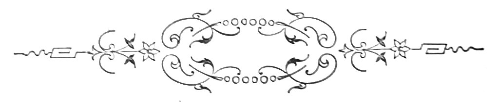
Joanna tinha já dois pequenos.—O Ricardo de cinco annos, fulvo como um novilho e o João, pequerrucho de peito. Era uma rapariga alta, musculo duro e sobrancelha espessa, cujos punhos podiam amassar sem cansaço alqueires e alqueires de pão, e cujos quadris agitados na marcha sob as saias de baetilha, avivadas de azul, revelavam a solida enformatura montanheza das primitivas mulheres, tostadas e laboriosas. Casára havia seis annos com o Jerolmo, por uma vindima mais fertil. E ambos pobres, ella filha mais nova de um maioral do conselheiro e elle ganhão da herdade de Valparaiso haviam gostado um do outro, bailando depois nas romarias do verão, procurando-se instinctivamente nas ceifas e mondas e aos domingos á hora da[Pg 120] missa conventual. Não estava arrependida de haver casado, não. O Jerolmo era trabalhador incansavel e sadio; Joanna começára por namorar-lhe o peito cabelludo e trigueiro e a forte caixa de pulmões dilatada a cada esforço de trabalho; captivára-a além d’isso depois, a sua mansa maneira de dizer as coisas, sem notas altas na voz e sem impaciencias nervosas de bilioso, a sua vida toda regulada por habitos e a condescendencia tida para os velhos.
De uma vez vira-o erguer-se de punho cerrado e olho torvo a desancar n’uma malta que primeiro o espicaçara de bestialidades. Até alli, todos de boa saude, louvado Deus! Seis annos de ventura decorrida sem attritos e sem nuvens. E os dois rapazitos!... Lembrava-se dos terrores do primeiro parto e das alternativas de humor caracteristicas, os suores dorsaes e frios, a dôrzinha vaga primeiro e intensa depois, em toda a região dilatada.
Em certos momentos, um mundo de phantasias projectando-se-lhe do phantoscopio da mente, innundava-a de photospheras de luminosa essencia—se seria um pequeno, valentão capaz de ajudar o pai se seria uma rapariga de calcanhar quadrado e dentes solidos que enchesse de cantigas e de actividade o ninho!... Todas as noites á hora da cêa, o casal accumulava e destruia planos, fazendo e desfazendo receios—perdidas evocações d’esse primeiro tempo de esposa!... Mirando a casita e as cadeiras de Evora da casa de fóra, as prateleiras[Pg 121] de louça e as quatro garrafas de vidro branco postas em symetria, olhando no quintalorio a méda de azinho para os lumes do inverno e o bacoro para a fartura do anno, Joanna sentia, no meio dos filhos e dos labores constantes da sua vida azafamada, um bem estar de consciencia satisfeita, um como jubilo intimo. O seu trabalho caseiro luzia: viam-lhe sempre o ladrilho varrido e as cadeiras arrumadas, um esteirão algarvio ao canto para as visitas, cobertas de retalhos lançadas sobre a mesa e dorsos dos bahús, o pequeno espelho redondo pendendo ao lado de um Francisco José, d’Epinal, brancas as paredes com rodapé de almagre em torno, e a cinza do lume constantemente varrida do lar. Dando largas á sua iniciativa de negociante creára além d’isso no quintal um exercito de gallinhas e gansos, cujos ovos o Ricardo ia vender todas as manhãs em altos pregões, pelas ruas da villa.
Manhã clara, era a primeira a erguer-se na rua e a encetar a labuta inquebrantavel e voluntariosa.
Paredes meias vivia a Francisca, casada com o Estragado, um bebedo.
Joanna tinha amizade a essa pobre mulher macilenta e soffredora, semanalmente espancada pelo marido, que para mais lhe impunha o sacrificio de fomes e farrapos.
Dissera muitas vezes, vendo-a passar para o pégo com trouxas de roupa á cabeça, envelhecida e estupida pelo contagio das miserias e brutalidades[Pg 122] soffridas, com o filho semi-nú agarrado ás saias e o engeitadinho ao peito:
—Nem sei como vossemecê póde, coitadinha! A outra não se queixava; tinha as miseraveis resignações d’uma cadella expulsa; com um geito de hombros e a voz sumida retrucava sempre:
—Então, paciencia! Deus não quiz...
E Francisca era reconhecida á visinha, que bastantes vezes a livrára das brutalidades do bebedo e das frequentes penurias da casa.
A Joanna, comparando a sua sorte á da pobre engelhada, sentia da comparação, exaltar-se a sua felicidade, abençoando a hora em que lhe nascera o primeiro impulso para o Jerolmo. Quando este chegava do trabalho, com o largo e velho chapéo braguez deitado para a nuca, a manta e a enxada ao hombro, ceifões já pellados pelo convivio dos asperos attritos, o burro e o borrego atraz, fartos de herva e alegres da jornada, Joanna não se continha sem lhe referir os soffrimentos da pobre mulher e a pancadaria do Estragado.
O marido então encolhia egoistamente os hombros, farto da eterna lamuria e repetindo:
—Deixa-os lá. Que se avenham.
O Estragado era dos seus tempos de rapaz, pudera seguir-lhe a vida ponto a ponto e observar-lhe a predisposição fatal para a vadiagem e para o vicio. Aquella indole de desordeiro repugnava-lhe, que sentia um tedio pelos que não tinham como elle a infatigavel actividade productiva e a repousada[Pg 123] consciencia dos deveres cumpridos. Áquella hora os trabalhadores recolhiam em bandos dando santas noites; uma poeirada suffocante erguia-se na ladeira sob os grossos sapatos cardados dos cavadores e das patas dos jumentos carregados de alforges e feno; a tarde morria enlaivecendo de um ouro fulvo o poente; pelos campos fóra os grillos, as rãs, os ralos e os mochos preludiavam a longa sonata nocturna, em quanto defronte da casa o Ricardo mais o filho da visinha, descalços e ferozes, jogavam os touros, rolando na relva com um vasto prazer inexhaurivel.
—Sabes o que me convinha? disse d’uma vez o Jerolmo para a mulher.—Ir p’ra feitor d’uma casa. Não anda uma pessoa a estragar-se pr’áhi a cavar desde manhã á noite, e sempre ganha algum vintem melhor.
—Pois está visto que era o que te convinha! Um homem de trabalho como és...
—Diz que o conselheiro precisa. Fui-me a fallar com elle, mas ha pretendentes. Mal sabes quem, mulher?
—Algum alma ruim... disse a Joanna.
—Aqui o nosso visinho Estragado, nem mais nem menos. Oh senhores, que eu ri de maior quando o Galante me contou!
—Aquillo, que nem lhe chega o tempo para as tropelias que arma á pobresinha da mulher... Excommungado, o Senhor me perdôe! Mas é só esse que pedincha?
[Pg 124]
—Só! Fiquei de ir ter esta noite com o conselheiro. Talvez se arranje a cousa.
—Era grande fortuna, homem. Casa farta, boa paga, elle uma bella pessoa. Mas o Estragado!... Ora não vi!
Estavam na cozinha. O Jerolmo á cancella, limpava da lama as polainas de saragoça e o ferro da enxada, em quanto a Joanna de avental, refogava a cêa e ia pondo a mesa, ao fresco, no quintal. Sentiram passos na casa de fóra, a Joanna foi vêr. Era o Estragado que sahia surrateiramente.
—O visinho é bem confiado, não ha duvida, disse a Joanna toda zangada. Não ha maior atrevimento! Quem escuta de si ouve, e é bem certo.
—Diga ao seu marido que m’as não fica a dever.
—Deixa-o lá, disse pachorrentamente o marido.—Está bebedo, coitado. Deixa-o ir!
Cearam; o Jerolmo á cabeceira da banca vigiava o filho, advertindo-o a cada partida do garoto. Entre os dois ficava o cão.—Da outra banda a Joanna, com o pequenito adormecido no regaço, migava sopas na malga.
Por cima, o céo um pouco escurecido e todo picado d’estrellas, tinha um arfar de penumbras profundas, em que os olhos se perdiam, divagando. Um ventinho fresco, impregnado de fenos, fazia agitar com murmurios finos as folhas metallicas da figueira verdeal. O bacoro no chiqueiro resonava[Pg 125] espapaçado no charco. Tempo das eiras. Puzeram-se a fallar nos trigos; as searas tinham fundido bem, mas os tremezes menos. Então o Jerolmo contou as suas esperanças no trigo ribeirinho que semeara na courella das Taypas—um palmo de terra que valia um milhão, segundo elle.
—E estava lindo, ahi pelo tempo da fava! disse a Joanna.
—Do que precisavamos era de uma vinhita—tornou o Jerolmo após um momento de pausa.—E partia o pão trigueiro em grandes pedaços.
—Nada como a vinha p’ra render.
—Apesar das molestias.
—Com alguns sobranos tinhamos ahi um ou dois milheiros. Estava a calhar.
—Ou mesmo bacello que puzesses...
Elle então enumerou projectos de futura prosperidade—comprar um carro com parelha de mulas na feira de Villa Viçosa, ter vinhas e olivaes, a abundancia de uma horta com aguas correntes e nóras rumorosas, n’um pedaço de valle profundo, com a sua barraquita sob nogueiras verdes.
E para se animar citava de memoria os casos de fortuna accumulada pinto a pinto por homens activos e poupados; o snr. Joaquim das Nogueiras que estava pôdre de rico, o Fandango que seu pai conhecera a carregar estrume, o Baleizão que fôra da tropa e até estivera preso. Não havia muito que visitára o monte do compadre Nazareth.
[Pg 126]
—O meu padrinho! gritou Ricardo.—E a cado passo interrompia:
—Elle é meu padrinho, não é, pai?
—Pois senhores, continuava Jerolmo, aquillo é que é lavoura, aquillo é que se chama seara!—E dilatado accumulava pormenores—quarenta moios nos celleiros, roças de palha do tamanho das torres da igreja, juntas de bois mais gordos que eu sei lá! E as carretas da vindima, as tapadas, a casa dos arados, o moinho sobre rochas e dependurado no Guadiana—um encanto!
—Casa que é um ovo! argumentava Joanna embalando o pequerrucho nos joelhos.
—Pois mulher, ha trinta annos não passava d’um ganhão do Francisco do Cabo. E honrado, honrado como Deus!
—O que se quer é saude, deixa lá. Deus ajuda quem trabalha, resumia a mulher.
E entre risos:
—Muito me havia de rir se ainda vinha a ser a senhora lavradora!
—E eu cá hei-de ter uns sapatos e andar a cavallo, exigiu o Ricardo, que molhava os punhos da véstia de cotim na malga ratinha da cêa.
—A dizer a verdade não temos sido dos mais infelizes.
—Está de vêr que não, apoiou Joanna. E deixa correr! Este anno talvez se peça pouco emprestado. Para o anno que vem já se pede menos,[Pg 127] para o outro nada, e depois toca a ajuntar p’r’á fazendinha.
—Pois vou-me ao conselheiro, a vêr o que decide.
—Até logo.
Á porta voltou-se e disse a rir:
—O que tinha graça era agora o amigo Estragado fazer-me uma espera e armarmos de garreia.
—De tudo quanto ha ruim elle será capaz, o carga d’ossos. Peste!
Apenas sahiu, o Ricardo pulou logo a parede para o quintal da visinha á cata do Manel, que tasquinhava pão secco de pansa para o ar.
—Vamos pró adro, o pai abalou.
Não foi preciso mais.
Foram ambos ás carreiras. No quintal, a Francisca roía o seu pão secco e negro, de semanas. A amassadura por pagar, uns fiados na loja do Vieira, trapos por toda a banda... Ao chegar a casa, o Estragado atirára-lhe um sôco ao vazio, pedindo o jantar para que não tinha dado feria. E cobrira-a de injurias obscenas diante dos filhos, exprobrando-lhe a fealdade e fraqueza.
Puxára-lhe até pelos cabellos, gritando com voz avinhada de cobarde:
—Grandessissima porca! grandessissima bebeda!
Dera-lhe bofetadas com a aspera mão ignobil de assassino, clamando que estava farto, que seria até capaz de a matar a punhadas. A pobresinha[Pg 128] abatida e com o gesto errante, nem podia chorar. Aquella vida de vilezas e insultos roubára-lhe até o refugio das lagrimas, embotando-lhe pouco a pouco a razão. Abria os olhos sobre o bebedo n’um pasmo tremulo, dizendo baixinho:
—Não me batas mais, pelo amor de Deus, não me batas mais!
Resumia-se para ella tudo na sova e na escravidão muda do martyrio. Não tinha já mãi nem pai, haviam-lhe morrido os parentes.—Sua irmã fôra assassinada pelo marido n’uma azinhaga sinistra e de noite para os lados do Moinho Branco. Era a ultima representante d’uma raça de vergastados incapazes de resistencia e não sabendo na vida outro fim mais que a obediencia ao algoz e a procreação animal das marrãs de montado.
—Visinha, gritou a pobre mulher do quintal, para a Joanna que acabava de levantar a mesa.
A outra subiu á lenha para debruçar-se na parede, sobre o quintal do Estragado.
—Que é?
A esse tempo já a Francisca trepára do outro lado, com o chale de baetilha pela cabeça.—E disse n’um tom choroso:
—Perdôe-me pelo amor de Deus, que não me esqueço de quem me faz bem. É a minha desgraça, aquelle homem, a minha vergonha...
—Houve pancadaria de moiro, aposto!
—O costume, Nosso Senhor nos ajude. E se fosse só isso...
[Pg 129]
—Então que mais temos?
—O meu homem não entrou na sua casa ha pouco?
—Entrou, para escutar o que cada um está dizendo na sua casa; foi pró que elle entrou! Mas ouviu-a toda!
—Ai filha! Veio de lá como uma féra. Puxou-me pelos cabellos, quebrou os cantaros da agua, bateu no rapaz com uma corda; que eu é que tinha a culpa, que ia tudo a tiro, que haviam de saber quem era Joaquim Antonio. Perdôe-me pelo amor de Deus, perdôe-me tanta mortificação. Pelos modos ouviu fallar no lugar de feitor do conselheiro... E está com a pinga!
—Sempre gostava de saber se é peccado cada um agenciar a sua vida! O meu homem vai fallar com o fidalgo; o seu quer o lugar—que vá tambem. O outro escolhe, e ninguem tem de que se ficar queixando. Esta é a rezão!
—Tudo lhe disse, visinha, tudo lhe disse! Homem, o visinho Jerolmo não lhe parece mal que tu queiras ser feitor e pretendas o mesmo nicho que elle! Vai e fallas. Fallando é que uma pessoa se entende. Agora o vereis! Ainda me deu mais. Visinha, perdôe-me pelo amor de Deus, mas eu queria dizer-lhe... é que... Olhe, estou a tremer que nem varas verdes, nem me tenho nas pernas, veja lá. Mas é que elle sahiu com más intenções, que se havia de pagar, que ia dar cabo d’elle... Perdôe-me, filha, perdôe-me por alma de seu pai, mas[Pg 130] elle é mau e capaz de fazer alguma, em estando bebedo. Não deixe sahir seu marido esta noite, não o deixe sahir.
—Mas se elle se foi agora mesmo! disse a Joanna, de subito abalada.
D’um pulo saltou da lenha, deitou pela cabeça a pobre saia de chita azul, sem mais pensar no Ricardo que brincava no adro, e com o pequeno ao collo deitou a correr para casa do conselheiro. Eram mais de nove horas. Os homens estavam nas eiras, fóra da villa; aqui e além, deitados ao fresco junto das portas escancaradas e escuras, alguns vultos dormiam. A penumbra da noite picada de estrellas, errava nas embocaduras, em cones movediços de uma indecisão phantastica. O campo dormia, e sómente a espaços, no como silencio absorto dos restolhos, latia um cão, ou tilintava a esquilla d’algum jumento de trabalho. A casa do fidalgo ficava no outro extremo da villa, isolada dos casebres por uma alameda de freixos enormes. Á roda era a horta, e por detraz dos laranjaes o olival sem fim. Joanna corria quanto lhe era possivel, arrastada por presentimentos funestos e cheia da idéa do seu homem que era o seu deus.
Nos casinholos d’aquella banda tudo dormia já; a alameda em frente, escancarava a bocca de trevas, que á menor lufada de vento parecia ficar ruminando alguma cousa penivel, n’um segredar entrecortado. A casa do conselheiro mal apparecia ao fundo, com a sua linha de grandes janellas morgadias,[Pg 131] cujas pesadas cimalhas avultavam n’uma facha confusa de granito. Em outra occasião Joanna não teria ousado atravessar o caminho áquella hora—que errava por alli o vulto do doutor Soiza á procura do seu inimigo. Muita gente lhe tinha já ouvido os brados roucos, depois de corrido o sino da camara[4], e contava-se que um homem o encontrára havia annos, perdendo a falla no mesmo instante.
[4] Conforme uma antiga usança, ainda agora nas villas do Alemtejo, toca a recolher, nove horas dadas, o sino da camara.
Á entrada do arvoredo Joanna deteve-se a escutar junto de um tronco. Estalavam as ramas por cima, com ruidos seccos. Applicando o ouvido, sentia-se na horta o correr da agua no tanque. Ninguem estava ainda em casa do conselheiro. Joanna resfolegou mais tranquilla: não tinha havido nada! E rapida, aconchegando a criança, percorreu a alameda e foi puxar a sineta do portão, que deu um som vibrante no silencio do edificio. Perguntou pelo marido; não tinha lá ido ainda. Fecharam-lhe a porta com fracasso sem mais resposta. Joanna então ficou hirta e muda, encostada á hombreira, com as fontes latejando.
Onde estava então o Jerolmo, não estando a fallar com o fidalgo? Não era homem de sucias, nunca fôra visto em tabernas, não trabalhava nas[Pg 132] eiras, não era cantador noctivago... Era a primeira vez que ella ignorava o seu destino; que fazer? Então relanceando a vista á roda sentiu um calafrio, dos rins á nuca; á forca de perscrutar a sombra as imagens falsearam-lhe, deslocando-se lhe á vista desvairada; parecia que os troncos iam e vinham rojando caudas de folhagens como espectros evocados de campas; os estalidos abriam um murmurio de risinhos sofreados; ondulavam sem nexo bandos de fórmas estranhas e o rumor da agua era de uma conspiração sinistra...
Joanna sentia no peito o coração em sobresaltos e um zumbido perfido enchia-lhe os ouvidos. E cheia de um medo algido, olho atraz olho adiante, como se legiões de genios maus a seguissem, percorreu a alameda arrumada aos troncos e cozida com a sombra. A meio caminho deteve-se. Vira da outra banda um corpo mover-se. Escondeu-se por detraz d’um tronco, com os olhos fitos no ponto em que a fórma bulira. Julgava já ter-se enganado. Mas o vulto tornou a apparecer, cortando em transversal o caminho. Bem depressa passou por diante de Joanna, que tomada de pavor não fazia um movimento, de collada ao freixo.
Viu um homem de barrete preto e em mangas de camisa caminhar aos solavancos. Bebedo por força; fallava só, com palavras entrecortadas e torvas.
—Outro que fosse, regougava, outro que fosse... quero lá saber! Tudo se paga. Arre!
[Pg 133]
Mais além já, parou um instante cantarolando:
Essa voz rouca e difficil como coada por uma garganta sem cordas, fez tremer Joanna. Era o Estragado. Vinha do conselheiro? Mas se o Jerolmo não fôra lá, que recear? O bebedo ia já longe quando a pobre mulher se resolveu a abandonar o escondrijo. Apressou o passo; era tarde e talvez que o Jerolmo estivesse em casa já... se estivesse, bom Deus! Esta esperança dissolveu-lhe um pouco os terrores, que era animosa como uma filha de herdade. Mentalmente prometteu logo uma missa á Senhora da Boa Morte se nada tivesse havido. Saltou do vallado para a estrada e receosa de magoar o pequenito apoiou-se n’um pedregulho, mas a mão teve um contacto humido e molle que cedeu, ao pousar. Joanna agarrou n’aquillo: era um farrapo de lenço; puxou, e uma cousa dura cahiu dando na pedra um som metallico.
Era uma navalha cheia de sangue. Perdeu completamente a cabeça; o seu coração dilatou-se effervescente de agonias e ourada de lugubres evocações a sua imaginação bolsou presentimentos funestos. Poz-se a correr sem destino pelas ruas da villa, clamando em altos gritos contra o Estragado, contra Deus, contra a sua desgraça! Na calada[Pg 134] do povo adormecido a sua voz resoava com uma sonoridade alta e rapida a que o desvairamento imprimia uma nota febril e sincera, que commovia.
Alguns postigos abriram-se, por onde cabeças somnolentas e avidas escutaram. Depois, sapatos ferrados bateram as pedras e os balcões das casas, e os vultos embuçados nas mantas foram seguindo Joanna. Ella contava a quem vinha, que o seu homem estava morto, que os filhos estavam sem pão, que fôra o Estragado. Começava trinta vezes a narrativa ao ultimo que chegava, com a voz velada de choros e estrangulada de soluços. Mas onde estava o Jerolmo? Um trabalhador que recolheu tarde dera nas escaleiras do adro, com o Ricardo e o filho da visinha Francisca, adormecidos um ao lado do outro. Vira a porta aberta e luz na casa de fóra.
Então foram todos vêr a casa do Jerolmo, batendo fortemente os sapatos de trabalho. Algumas mulheres atemorisadas, de chale pela cabeça e em grande abatimento, seguiam Joanna resmungando lamentações. Em breve a terra estava em alvoroço, e quando a pobre rapariga chegou á soleira a rua ia já cheia. A casa estava vazia. Recomeçaram os gritos e os commentarios, o prior veio saber o que era, com o largo capote nos hombros e o chapeirão descido. Todos contavam; a algum pormenor menos fielmente emittido, vozes diziam:
—Não foi assim! A coisa começou...
[Pg 135]
E punham-se a dizer como tinha sido.
—Mas lá por se encontrar a navalha suja de sangue não se segue que haja mortes, objectou o prior.—E a sua voz de um timbre ingrato e cheia de authoridade fazia peso na roda. Muitos eram da opinião de sua senhoria, concordando:
—Está bem de vêr, está bem de vêr.
—O que devem é ir rebuscar bem a alameda e os meloaes que ficam á roda da horta do conselheiro. Talvez até o Jerolmo esteja nas eiras.
—De lá venho eu agora, disse um.—Não dei noticia d’elle.
Varios trabalhadores então, partiram a esquadrinhar a alameda.
—Se passarem lá por casa digam á senhora Magdalena que lhes dê uma lanterna, disse o prior.—A Joanna quiz tambem ir, mas as mulheres oppuzeram-se. E sentadas na casa de fóra, embiocadas nos chales ou com saias pela cabeça, jaziam silenciosas e curvadas, como se um vento de assolação as vergasse. No silencio lugubre, os soluços da Joanna vinham a espaços como um estribilho magoado. A um canto discutia-se o Estragado, com pormenores recentes. Segundo muito boas opiniões, enforcado devia elle estar havia muito tempo—peste ruim! Algumas tinham palavras de dó para a Francisca—que tinha o corpo como um fungão, da pancadaria. Ao fundo da rua, a voz avinhada ouviu-se:
[Pg 136]
Ao mesmo tempo a calçada soou do outro lado sob os pés de muitos homens. E pela porta da Joanna quatro moços do campo entraram carregando uma escada, onde vinha estendido o corpo do Jerolmo. Toda a gente se tinha erguido fazendo um ruido indescriptivel de prantos; uma rapariga cahiu com um flato, algumas fugiram para o quintal, aterradas do cadaver. Joanna só, estendida nos ladrilhos e resistindo a todos os empuxões que lhe davam para a afastar d’alli, Joanna só não tinha medo. Passára os braços ao pescoço do homem, enchendo-lhe de beijos a cara e a bocca aberta, de que um sangue viscoso corria. Uma enorme paixão rebentava d’ella sobre aquelle corpo que arrefecia pouco a pouco, retesando-se, com um sinistro desenho, anguloso e livido. Fóra, o regedor conseguira agarrar o Estragado por um braço. Vozes clamavam rudemente:
—Está preso! em quanto retiniam nas pedras, com pompa de entremez, as espadas dos senhores cabos de policia. A Francisca que se interpuzera de cabellos soltos, arrastava-se abraçada aos joelhos do marido, pedindo clemencia com a voz arrastada e baixa, em que havia um fundo de miseria e de dôr. Os pulsos sahiam-lhe das mangas da roupinha tisicos e inabalaveis; por mais que fizessem não lhe arrancavam as mãos das calças do Estragado. Os maus tratos, as bestialidades e as fomes[Pg 137] com que aquelle homem a trucidára desde o primeiro dia de casados, haviam enraizado no seu coração uma cega obediencia, uma necessidade fatal d’aquelle imperio torpe; mesmo assim gostava d’elle, pai de seu filho, o que partilhava o seu catre e lhe déra esse primeiro beijo, que é como a annunciação da maternidade á mulher virgem.
Das escadas do adro então, as duas crianças ergueram ao mesmo tempo as cabeças, despertando ao alarido dos prantos.
—O que é aquillo? disse o Ricardo.
—Olha, é muita gente. Não ouves a chorarem? notou o Manel.
—Oh vamos a vêr! insistiu o mais novo.
E como o Manel cambaleava estremunhado de somno, o outro passou-lhe o braço ao pescoço a segural-o.
E com ares protectores dizia-lhe:
—Vê se partes as ventas, vê...
Todo abafado no casacão, o senhor prior saciado das novidades fresquinhas sahia de casa da viuva, pensando que era ainda uma rica moçoila.
Por outro lado, a morte do Jerolmo irritava-o: fôra depois de cinco annos o mensageiro das suas labutas vinicolas, o que lavrava a seu gosto, o que fazia uva á siranda com mais desembaraço.
Não bebia, não fumava, não era exigente nos preços... Assim pensava sua senhoria quando deu com os pequenos, que iam a passinhos preguiçosos e esfregando os olhos com os punhos, em direitura[Pg 138] ao tumulto. E ao vêl-os tão unidos cresceu-lhe uma raiva de dentro, biliosa e vingadora. Separou-os com um safanão furibundo.
—Sucia de marotos, que os enforco!
E dirigindo-se ao Ricardo:
—Vossemecê não tem vergonha em andar com o filho do ladrão que matou o seu pai, hein?
E para o Manel que chorava aterrado d’aquella aggressão:
—A minha vontade era frigir-te, podengo!
E deu-lhe um puxão de orelhas teso.
No dia seguinte foi o enterro. Era d’esses dias ardentes em que, nos troncos das oliveiras as cigarras cantam, e as rôlas se abatem por dezenas sobre as ultimas poças verdenegras dos ribeiros. Apenas o sino chamou a padres e o prior appareceu precedido do sacrista de cruz e caldeirinha, viu-se sahir de casa da Joanna o cortejo. Adiante o sacrista ia de cruz alta e campainha na mão—velho marau de sapateiro, de olho patife e calva luzidia, dos que sabem quantos escandalos usam acompanhar toda a gente do berço ao sepulchro.
Fôra noviço de capuchos, adquirira habitos de glotão e de bebedo, aprendendo a negar a mulher decente. Rosnava-se um pouco das suas relações com a snr.ª Magdalena do prior, e temia-se em geral do seu cynismo correlacionado, segundo se affirmava, com o do diabo, pelo desfastio com que pisava rosarios bentos e fatias de pão torrado. As beatas fulminavam contra elle exorcismos temerosos,[Pg 139] porque á sahida de uma missa de finados ourinára na pia da agua benta, estando bebedo. De cruz alçada e opa escarlate, Zé do Ó caminhava piscando o olho ás mulheres, que em saia de estamenha e sapatos de couro crú viam da soleira marchar a procissão da morte, lacrimosas e trocando lamentos. A partir d’elle, duas filas de homens do campo seguiam com os fatos de aspera saragoça dos domingos, chapéos de Braga nos olhos, ornados de uma borla redonda, e os capotes de baetão das mulheres nos hombros. Alguns ainda novos, que tinham sido amigos do Jerolmo e como elle destinados sem resistencia ou vacillação, de pequenos, para cavadores, iam com os olhos vermelhos voltando a cara, envergonhados de serem vistos em pranto pelas mulheres que vinham ás portas e ás esquinas das ruas, rodeadas dos filhos descalços. Viam-se os altos pescoços curtidos pelas calmas do estio e pelas ventanias do inverno, no convivio dos trabalhos de picareta, de arado e de fouce.
As mãos de enormes dedos coreáceos e palmas rugosas de callos, tinham curvas unhas, disformes de martelladas e entalões. Nos dorsos, as vêas de uma espessura consideravel ramificavam-se-lhes em arvore saliente, pondo em pregas a epiderme de poros largos, de que sahiam cabellos. Alguns eram já velhos e curvados, contando trinta, quarenta e cincoenta annos de labuta em charneca, nas lavouras, nas ceifas, nas ferras do gado, no córte dos azinhaes e na recovagem de noite por caminhos terriveis,[Pg 140] de matagal em matagal. Tinham as cabeças brancas e o passo vago, e olhavam com esse olhar vazio de quem nunca teve esperança e de quem jámais teve fortuna. Haviam ganho toda a vida o mesmo salario, cobrindo-se de filhos constantemente e fazendo da fecundidade uma distracção, a unica, que lhes era dada, e que ainda assim caro pagavam. Dois ou tres nunca haviam possuido um fato novo. Quasi todos tinham andado descalços e rotos até aos vinte annos.
Havia n’essas faces, mesmo fóra dos enterros, o mesmo ar lugubre e suspenso que alli mostravam; pareciam seguir como se aguardassem alguma cousa retardada de ha muito, boçaes e emparvoados, não dando pela carie dos dentes e pelo espasmo de humildade que os ia bestificando. Proximo á tumba os irmãos da Joanna e os tios do Jerolmo iam affectando grande mágoa com as golas dos capotes erguidas, cabeças baixas e amarradas em lenços. Depois o padre: era alto, possantes hombros de tambor-mór, a barba de cinco dias negrejando de espessa, um carrancudo alarve na face. Como a volta era apertada, o seu pescoço extravasava gordurento fazendo uma rosca de carne, que pendia reflectindo um rubor sobre a pelle do queixo e da cara, d’onde o suor borbulhava. Tinha as orelhas de um guardião, ar imperativo e voz grossa, em que a nota surda dos desejos que se refreiam, dominava. Era um pouco agricultor e um pouco musico e nas recitas da terra fazia papeis de tyranno,[Pg 141] esbracejando com furia para todos os lados. A tumba ia por fim, aos hombros de quatro mendigos, e um rapaz após levava o banco de pinho para a fazer descer, nos responsos.
Era um esquife de pau preto com balaustres delgados, tendo o ar d’um berço. Na villa causava horror. Era com que mettiam medo ás crianças: via-se-lhe pregada na cabeceira uma cruz preta, e um Christo de ferro com resplendor de lata que tremia, agonisava pessimamente fundido, mostrando os olhos vazios. No fundo via-se a enxerga coberta de paninho preto em farrapos, onde deitavam os cadaveres, havia muito. Esse pano tinha nodoas gommosas, á altura da cabeça. Os va-nu-pieds abatidos para a valla durante os ultimos quinze annos haviam alli impresso o seu remember de mucus sanguinolento, de que tresandava um fetido em baforadas. Era onde ia o Jerolmo, vestido no seu fato de saragoça, com sapatos de bezerro enormes nos pés, os dois pulsos unidos por uma tira de chita negra a premir as mãos cruzadas no peito, na attitude de uma imploração derradeira.
—Ainda hontem a estas horas estava são e vivo! era o pasmo da villa.—E vinha todo um volume de ponderações sobre a fraqueza da creatura de Deus.
Aos solavancos dos velhos que tinham desiguaes alturas, o corpo pendera mais para uma banda; á menor anfractuosidade do caminho então, os sobrecarregados rogavam surdamente as pragas mais[Pg 142] torpes,—que nem valia a pena levar um boi d’aquelles pelos seis vintens da esmola.
O mais ratão dos quatro era um velhito baixo, que mostrava escarlate uma orbita sem olho e já cahira numa contramina de horta. Dizia elle com bella emphase, todo serio:
—Como estas bestas morrem sem derreterem os toucinhos, senhores!
O garoto do banco escandalisou-se e resmungou:
—Vossemecê não tem vergonha em fazer mangação dos defuntos?
Os outros riram, e o mais alto:
—Caluda, filhote! Que ainda te havemos de levar adiante.
Mas o prior voltou-se, e da frente o sacristão veio correndo de cruz ao hombro, em ar de clavina, com a caldeirinha estendida para o responso. Os quatro da tumba pararam, o garoto estendeu o banco.
—Abaixo! ordenou o prior enfastiado.
O esquife desceu. Uma vida fecundante de atomos impalpaveis vibrava na luz, metallica na irradiação da cupula amplissima. O enterro tinha parado e todos se voltavam para traz, olhando o prior que espargia agua benta sobre o corpo do Jerolmo. Estava-se quasi fóra da villa, ao meio da rua ultima d’aquella banda, que entre filas de casebres caiados corria, corcovando-se bruscamente depois sobre a azinhaga.
[Pg 143]
Como o sol batia de chapa, os trabalhadores faziam tecto com as mãos em arco, á altura das sobrancelhas, abrindo a bocca e premindo as palpebras, por uma contracção inconsciente de musculos faciaes. Sobre os balcões das portas, as mulheres olhavam alongando saudosamente os grandes olhos pretos, humidos de lagrimas. Abaixo da orla das saias de chita viam-se os tornozêlos de algumas, calçados em meias de linha azul. Muitas faziam meia, com os cabellos oleosos de azeite e a marrafa separando as madeixas em duas pastas symetricas e alisadas. Na terra das soleiras as crianças seminuas rolavam-se rindo; um fumo raso subia das chaminés. Na ultima porta tinham acabado de jantar e via-se a malga na mesa baixa, os garfos de ferro com tres dentes apenas, restos do enorme pão da amassadura da semana, e em torno inda sentada a familia, onde o chefe, velho pastor de polainas altas e ampla calva, rezava de mãos postas e labios mexendo, com o chapeirão nos joelhos.
O Jerolmo era muito estimado. Todos diziam —coitadinho!—lagrimejando. E enumeravam as suas virtudes, o seu bom genio, a sua economia, a sua temperança. Os bons leva Deus, que são do céo, dizia uma velha. Mas a voz do prior ouviu-se imperativa e cheia de sabedoria em ruminação de latins, e fez-se um silencio piedoso. Toda a gente ajoelhou, que ninguem ouvia latim n’outra postura na villa. A recitação grave e n’uma lingua estranha[Pg 144] dava aos espiritos simples a profunda emoção de um fim proximo e a lembrança de almas que partem para as regiões serenas da bemaventurança com o seu peculio de graças adquiridas e azas brancas da innocencia. O prior ia dizendo:
—De profundis clamavit ad te Domine. Domine exaudi vocem meam; nec aspiciat me visus hominis.
Kyrie eleison, Christe eleison, Kyrie eleison! Pater noster...
E as vozes rezavam baixo n’um côro murmurado, que ia como o som do vento n’uma fenda, alternadamente agonisando e subindo até se perder, á ultima aspersão de agua benta do prior. De pescoço estendido as mulheres brancas de pavor, olhavam ao meio da rua o esquife envolto na luz, onde ia o corpo do trabalhador, retesado na rigidez que antecede a podridão. Descahira-lhe a cabeça para traz por haver escorregado um pouco a cabeceira da enxerga, e o bordo da queixada, de uma linha parabolica, repuxava-lhe angustiosamente os tendões do pescoço esverdinhado, em que fazia corcova o nó da guela inutil.
Corria-lhe das ventas um fio de sangue negro que os moscardos vinham beber zumbindo, e por entre os dentes a espaços, na bocca que se abrira na convulsão da ultima hora, gotas de gaz podre faziam crepitar globosinhos, da intima fermentação que progredia.
Os amigos d’outro tempo tiravam então o lenço[Pg 145] do bolso das véstias e sahiam aos dois e aos tres do seu lugar, para piedosamente virem limpar a cara e os labios do Jerolmo.
—Bemdito seja Deus! diziam, apavorados pelo fervilhar da corrupção cadaverica que a torridez do sol activava prodigiosamente.
O prior tinha acabado o responso e abrira o seu enorme chapéo de sol.
—Carreguem, ordenou sua reverencia aos quatro homens. E o enterro entrou na azinhaga que ia dar ao cemiterio.
Cada qual sentindo-se um pouco á vontade no campo, teve a necessidade de fallar na sua vida, cousas alegres e capazes de afugentar os maus pesadêlos da cova.
—Quem teve seara guapa foi cá o mariola!—ia dizendo um homemzarrão, e depunha os grossos dedos no hombro de um secco, de olho desconfiado.
—É p’ra que saiba. E ainda temos hoje um calcadouro de tremez.
—E quando chega esse casorio? quiz saber um rapazola louro, riso boçal de pobre diabo.
—Está p’ra tarde. Antes da vindima não, diziam.
O de olho desconfiado não dava palavra, deixando que respondessem por elle.
—E moça de estimação. Desenxovalhada e mais branca!... Seio de encher olho e golpelha, c’os diabos!
[Pg 146]
—Pódes lá com uma vacca d’aquellas, meu poeta!—diziam-lhe. Aquillo é mulher p’ra te bater, ó Rato!
O de olho desconfiado ria, e disse pachorrentamente:
—Quatro mil cruzados em terras, está dourada que nem uma princeza, rica saude e vinte e quatro annos. Um sobr’olho preto; que mais quero?
O louro conhecia-a e o seu riso abria-se sensualisado, com uma reminiscencia gulosa.
—Está bem de vêr! Está bem de vêr!
A calma picava. Sentia-se zumbirem os insectos, e ao longe nas oliveiras o ciciar das cigarras punha um ruido secco. Do outro lado discutia-se a Joanna, ainda frescalhona; apesar dos dois filhos aquillo vinha a casar ainda.
—Não seria eu que casasse com ella. Entrando só com o corpo e ter de aturar dois diabos! Olha a fortuna!
—Cá p’ra mim, dizia um barbado, mulher que casa duas vezes é capaz de pregal-os ao marido.
—É a minha systema! Mulher só p’ra um homem! O mais, cabras!
—Homem, que hão-de ellas fazer? perguntava um benevolo.
—Mas a Joanna fica mal, coitadita. Elles não tinham fazenda. Teem o burro, as casitas, uma geira de terra além ás Taypas...
[Pg 147]
—Demais, o irmão do Jerolmo quer partilhas.
—Qual! tornou um viuvo, entendido.—Ha filhos. Só se levar a cinza da lareira, que é boa p’ra barrelas.
—Como ha-de a pobresita governar os pequenos?
—Ora! Como? Como as mais, no campo. E a Rita Santinha e a Thereza do Mudo, não vivem? Á monda, á empa, á vindima, á ceifa. Pois onde? Avezada a tudo como está, póde bem fazel-o.
—E nada má, fazia surdamente um amarellento, com certo riso.
Os vallados prolongavam agora a facha da rua que findára, e eram alli altos os silvados e tão robustos os cachos de amoras, que os rapazes mais novos sahiram do renque para fazer provisão. Estavam ao cimo da collina. O cemiterio ficava a meia encosta, cintado em muros brancos, com uma cruz de ferro na fachada. Do ponto do caminho em que iam, a paizagem era da mais plena largueza de horisonte e da mais bella disposição de promenores. Convergiam de ambos os lados as courellas ceifadas, sobre a garganta do valle, que ia perder-se a pouca distancia junto do ribeiro e aos pés de uma antiga orla de choupos e faias. Das ouvielas dos ferragiaes e das vinhas irrompiam seccos os pastos, cammomillas, malmequeres, grizandas, maravilhas e enormes cardos de calices espinhosos. Para a esquerda[Pg 148] ondulava n’um mar verde vivo, quasi sem gradações, fatigante e sadia, a região das vinhas. Figueiras gigantes abriam até ao chão parasoes metallicos de largos folhedos, sobre que revoava a pardalada. Aqui e além as hortas abriam na grande symphonia chromatica, uma cadencia graciosa de tons bronze e verde salsa; as nogueiras junto dos tanques ensombravam sofregamente as nóras e cisternas, usurarias da frescura. Á direita era olival, tristonho e abrazado. No ribeiro á sombra dos canaviaes, as lavadeiras batiam as roupas, cantando. O fio d’agua era tenue como de uma vida que pouco a pouco se desprende, e serpeando por baixo do arco da ponte, onde um tufo de eucalyptos novos bolia, ia expirar lentamente na arêa, sob as raizes sequiosas das junças e escalrachos.
Era junto dos eucalyptos mesmo, que o Ricardo mais o Manel estavam á pesca das rãs, quando o enterro appareceu em cima. De entretidos nem deram por tal. Haviam conseguido de manhãsinha logo, escapulir-se de casa em quanto as mães soluçavam e as comadres iam prodigalisando lamentações e consolos de momento.
—Não sabes o que a mãi disse, ó Manel?
—Que foi?
—Que em ella me vendo andar comtigo me havia de dar sova.
—É mentira, deixa fallar, é mentira.
—Olha, o pai morreu, tornou o Ricardo. Já não ralha, pois não?
[Pg 149]
—Nada que não! Em fazendo trovões.
—Oh vamos brincar?
—Eu cá dispo a véstia. Peço um pedaço de pão á minha mãi e não appareço senão ás Trindades, expoz o Manel todo resoluto da idéa.
—E eu cá tambem.
—Olha, disse o Manel abrindo os olhos espertos, que um embevecimento clareava. Vamos ás rãs?
—Oh vamos.
As rãs eram a paixão dos dois, o seu sonho, a sua coisa mais ambicionada na vida. Tinham construido sobre ellas as lendas mais extraordinarias e feito, por copia do que ouviam ás mães, uma quantidade de promessas aos santos se um dia conseguissem apanhar uma viva, das grandes.
Á tardinha, quando os olhos vigilantes da Joanna por um instante os largavam, corriam logo para o ribeiro. Á chegada dos dois as rãs saltavam de todos os lados, da espessura dos juncos e mentrastes, sobre a agua dos charcos com um sonoro plhau! na profundeza dos pégos. Calavam-se logo agachados no tufo de eucalyptos, esperando pacientemente a occasião. N’uma circumvolução do regato, pensando-se sósinhas algumas das rãs coaxavam á flôr d’agua, erguendo acima do nivel tranquillo as chatas cabeças verdes, olhos estourados de iris côr de ouro, a enorme bocca semi-elliptica aberta ao ar n’uma especie de sorriso extatico, e a fila de pequeninos dentes[Pg 150] corneos um pouco curvos, dispostos para a apprehensão dos animalculos. Erguiam-se então com grandes precauções e subtilezas, acautelavam extraordinariamente o ruido das passadas, promettendo baixinho na febre do desejo, duzias de padre-nossos a Santo Antonio se fosse servido entregar-lhes algum dos animaesinhos que faziam a sua paixão e o seu desespero. Mas precipitados como eram não conseguiam jámais aprisionar os elegantes anuros, e cahindo a noite das montanhas azues alinhadas em decoração ao fundo da paisagem ridente, voltavam cheios de tristeza e cansaço para as cêas da familia, acabando por adormecer um ao pé do outro. Na volta sentiam com surda raiva o côro de rãs unisono e forte, magnificamente instrumentado de ironias, que parecia de proposito erguido para lhes saudar a retirada e escarnecer do desalento e pouca arte que empregavam na pescaria. Tal côro, na penumbra mysteriosa e vasta dos campos, tinha a concentração harmonica e a poesia nubigava de um threno—hymno de liberdade de uma colonia que de subito readquire a sua independencia. O Manel, especialmente, embirrava com a troça. E com mão rapida, fazia chover nas poças d’agua mais sonoras, grandes pedras talhadas em cunha e seguidas de pragas adequadas ao caso e á solidão do lugar.
Tinham ouvido aos rapazes que as pernas das rãs tinham uma carne excellente e branca, tenra e fina como a de gallinha. Nenhum d’elles comera ainda:[Pg 151] mas era magnifico! Tinha-lhe contado o Coxo, um idiota da terra, que uma vez apanhara uma rã muito grande. E vai abriu-a, e tinha na barriga um canivetinho de duas folhas, muito bonito. Para os dois pequenos, ter um canivete de duas folhas era uma opulencia inestimavel. Em qualquer d’elles, nos dias de desavenças ou amuos, querendo fazer sombra ao outro, já dizia:
—Deixa estar que eu hei-de ter um canivetinho de duas folhas e tu não!
—Ha-de, uma figa torta! dizia logo o outro.
Porque traziam as rãs canivetesinhos na barriga? Não sabiam. Mas traziam, traziam!
O Manel que era o mais imaginoso, entrava a explicar que as rãs faziam buracos pelo chão, furavam, furavam... e iam ter á loja do Vieira para roubarem as navalhinhas. Então o Ricardo ria.
—Mentira!
E com a vózita gaguejada, phantasiava por seu turno uma theoria sobre os canivetes. E ambos á borda das poças se interrogavam de vez em quando, surprezos:
—Mas como será que ellas teem canivetes lá por dentro? Aquillo é cousa que os engolem.
—Qual!
Como o calor era intenso, os anuros andavam no fundo da agua, por baixo de limos reticulados com a delicadeza de frócos. O tufo d’eucalyptos lançava porém sobre o pégo mais proximo[Pg 152] da ponte uma sombra alongada: alli sentia-se coaxar. As duas crianças agachadas quedavam-se, á espreita:
—Que cantoria que fazem! dizia baixinho o Ricardo.
—Deixa! resmungou o outro com ares fanfarrões. Eu dou cabo d’aquelles diabos.
Piscava os olhinhos com intenção, tirando do bolso um pedaço d’arame aguçado.
—Ellas apparecem, eu vou com isto estendido e tancho-as por uma perna.
E com profundo desdem:
—Hoje não é cá preciso padre-nossos!...
Foram-se aproximando do pégo, de gatinhas. Viam-se os tornozêlos do Ricardo, grossos e de ligamentos inabalaveis, e o pé polpudo e forte, bom para firmar o corpo. Devia ser de estatura mediana e muito robusto, de rico sangue. Pela camisa aberta e rasgada via-se o contraste da carne branca do tronco com a epiderme fulva da cara e das mãos. Solido como um novilho devia ter a indole ingenua e boa do Jerolmo, como lhe herdára a enformação animal. O Manel era esguio e secco, anguloso de ossatura. Tinha os cabellos corredios e as mãos estreitas, com unhas que revestiam quasi o dorso das phalanges terminaes. Era já teimoso e de nervos susceptiveis. A sua organisação sensibilissima, presentida, daria mais tarde o typo physicamente inhabil para a labuta da enxada e em construcção perpetua de estratagemas. Tinha os olhos grandes e[Pg 153] lucidos como dois onyx molhados, e a linha do nariz sem proeminencia, fazendo lembrar na cara olivatre e comprida o que quer que era de masque egypcia. Áquelle tempo, o sino da Misericordia mandava o ultimo dobre de finados. E o som badalado de quebrada em quebrada chegou ás crianças.
O Ricardo parou, erguendo a cabeça. Alongava os olhos com essa tristeza vaga dos que de outra fórma não conseguem formular uma commoção interior. Lembrava-lhe o pai morto que iam metter na cova. Como essas naturezas que a musica enche de soluços e de invencivel angustia, o sino com aquella toada grave e preguiçosa—Tlão! Tlão!—Tlão! Tlão!—dava-lhe como uma reminiscencia lugubre.
A esse tempo o Manel erguera-se tambem, esquecido da pesca. E os seus olhos deram com o enterro. O Zé do Ó ia entrando já pelo cemiterio, a opa escarlate parecia de longe uma papoila cortada que o vento impelle.
Na meia-laranja da porta depois, os homens de escuro apinhavam-se para deixar passar a tumba, muito alta aos hombros dos velhos, em que o Jerolmo de mãos postas oscillava penetrando os muros brancos.
—É o teu pai! fez o Manel.
—Vai pró céo, então não vai?
—Está visto!
—Elle não gostava do teu, então gostava?
[Pg 154]
—Não gostava! O meu anda sempre bebedo. É tão mau!... Dá com a corda.
—Ó Manel! Manel!
—Que é?
—A gente havemos de ser amigos sempre, então não havemos?
—Havemos.
—E brincar sempre, então não havemos?
O outro não respondeu. Em quanto o Ricardo de gatas se adiantava para o pégo com o arame na mão, os olhos do filho da visinha acompanhavam de longe os movimentos da massa de gente negra que viera ao enterro. Toda a noite a mãi chorára, miseravelmente abatida sobre a enxerga que servia tambem para albardar o burro.
O pai fôra levado entre cabos de policia para a cadêa de Evora, com as mãos atadas nas costas e o fato roto. No puxão de orelhas e nas palavras desprezivas do prior sentira que estava filho de um assassino. Ouvia n’uma toada fatidica os signaes da Misericordia. Então as suas narinas palpitaram, sentiu na garganta como um novello que se engrossava para o estrangular. Uma cousa abateu-o todo, percorrendo-o de uma estranha galvanisação de mágoas.
Entrou a chorar alto, com profundos soluços que n’um jogo brusco lhe alevantavam as pobres costellas esburgadas.
—Deixa, dizia o Ricardo puxando-lhe as calças, deixa lá. A mãi não ralha, não.
[Pg 155]
E esquecidos, innocentes, recomeçaram a pescaria. Do outro lado da ponte as lavadeiras tinham cessado de bater roupa. As suas vozes cobriam de pragas o Estragado, assassino, bebedo e ladrão, que Deus confundisse na outra vida e as justiças degredassem n’esta, para càsa do inferno.
[Pg 156]
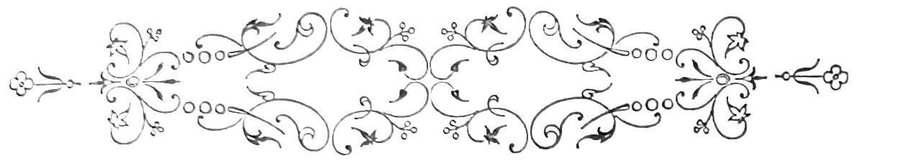
«Ha[Pg 157] tempos, escrevia Sabino de Sousa Pancada, commerciante de seccos e molhados no Pará, a seu unico sobrinho e futuro herdeiro Alfredo Carvalhosa, já n’aquelle tempo pai de dois pequenitos e esposo da boa Maria do Resgate—ha tempos que medito uma viagem á Europa, com residencia demorada no meu paiz natal. Vai em trinta annos que aqui estou, e nem uma só vez tornei a vêr Lisboa. A velhice traz-me saudades. De fórma que por estes tres ou quatro mezes mais proximos ahi me tens, prezado sobrinho. Arranja-me quarto ao pé do dos teus pequenos, de quem me lembro tanto como se os tivesse visto alguma vez. O Arthur, principalmente, é a minha paixão. A photographia que[Pg 158] me mandaste ultimamente, pinta-m’o como um cherubin, pobre criança!...»
—Aquillo é homem d’ouro! ponderava o Carvalhosa para a esposa, mignonne sadia e fresca, que tornava o ninho sonoro da musica dos seus risos. Honrado a mais não! E homem intelligente! Quando d’aqui sahiu não passava d’um pobre rapaz sem protecções e sem chelpa, infeliz no officio de selleiro que lhe mandaram ensinar, e devorado de febre e desgostos. Isto contava meu pai que Deus tem. D’uma vez apparece-nos em casa, de chapéo á brazileira e chale-manta, a pedir a benção aos tios e declarando que se partia para o Pará, na barca Ligeira, do Neves. Cada qual fez por tirar-lhe semelhante mania dos cascos.—É morte certa! dizia minha mãi.—É tolice de metter os tampos dentro! ponderava meu pai, que fôra da alfandega de consumo.
Apesar de tudo, o tio Sabino abalou. Quatro annos depois tinha o estabelecimento na rua de Gonçalves Dias, e hoje é rico como os primeiros negociantes do Pará, despacha gommas, ginguba e oleo de palma, negoceia em velames e cabos, tem fazendas no interior e dinheiro nos bancos, subscreve com grandes quantias para os monumentos e obras uteis do seu paiz, soccorre os parentes, estudou nas horas vagas, e sabe onde tem a cabeça, coitado!
—E homem de sessenta annos! juntou Maria do Resgate afagando os cabellos loiros do Arthur.
[Pg 159]
—Deus lhe acrescente a vida, que por me julgar habilitado á herança me não esqueço da amizade com que o bom velho me tem recebido.
—Nem eu!
—Nem eu! gritou o Arthur, que era tido em casa como um precoce extraordinario, e já tocava no piano pedacinhos de Madame Angot.
—São horas, vou-me para o serviço, disse o Carvalhosa dando nas testas da familia os tres beijos sacramentaes.
Era do correio havia dez annos, vida trabalhosa mas soffrivelmente paga. N’essa noite tinha de seguir para Elvas em commissão de serviço. Estava-se em fevereiro, tempo humido e lamacento. O Carvalhosa andava um pouco encatarrhoado. Á porta do correio tirou o lenço para se assoar, e á volta para casa caminho do jantar, notou que perdera a carta do tio Sabino. Não lhe deu aquillo grande cuidado, a fallar a verdade. Tinha-a mettido no bolso da ingleza provavelmente, e ao sacar do lenço cahira-lhe. Nunca Deus lhe désse maiores cuidados! Esteve até á noite com a familia, rindo das doidices do Arthur e contemplando com deliciosa emoção de pai, o soberbo grupo de Maria do Resgate com o mais pequenino ao peito. Tivera sempre pelo lar aquella adoração lyrica e sã, que o devotava corpo e alma á familia, e o parecia guiar no trabalho como essas grandes estrellas cujo deslocamento conduz através o deserto as pobres caravanas melancolicas. Era feliz, realmente. Nunca passára[Pg 160] os tempos maus de certos desgraçados surprehendidos no berço, pela pobreza arida ou pela desolada orphandade. Perdera o pai quando o emprego lhe rendia quinhentos mil reis, já o Arthur era nascido. Annualmente, nos meados de julho, o tio Sabino presenteava o anniversario do pequeno com uma inscripção de cem mil reis, varias latas de dôce de tijolo, uma duzia de cuias pintadas a escarlate e branco, e basta collecção de plumas e cofres com embutidos indios.
O aceio e o bom gosto de Maria do Resgate rebrilhavam na disposição dos moveis, de uma conservação viçosa, na symetria dos quadros de gravuras ou oleographias, na brancura dos umbraes, na nitidez dos papeis, na graça simples dos reposteiros de cretone e das cortinas de cassa, na harmonia impagavel dos bouquets de rosas e dhalias cortadas no quintal e radiantes á vista em jarras de porcelana esmaltada, sobre a cimalha do velho aparador de carvalho, a preciosidade da casa, que a esposa trouxera.
Desde os quinze annos que tinha sonhado o futuro assim—uma casa limpa, uma mulher fresca e risonha, bons dentes e halito suave, dois pequenos fortes, braços brancos e olho ingenuo, em cujo azul ceruleo revisse, como n’um espelho, a sua ventura pacifica e dôce, de casado. E mais tarde a riqueza bafejal-o-hia, trazida pelo tio Sabino, bom velho cuja solicitude lhe dava uma commoção. Poderia vêr o Arthur n’um palacete de jardins umbrosos[Pg 161] e rumores de cascatas, medico ou engenheiro, e de bigode, com um coupé bem polido e uma parelha bem gorda. E o mais pequenino tambem, de militar, com premios e galões, atravessando ao entardecer a Baixa sobre um cavallo branco, no meio dos suspiros das herdeiras ricas. Por esse tempo seria elle um velho e a Maria do Resgate tambem. Vinha-lhe uma pena sincera de não ter vinte annos quando os pequenos os fizessem, uma especie de ciume da intimidade que elles viessem a dispensar aos amigos, e do amor que prodigalisassem infructifero a qualquer dos alegres peccados mortaes de Hespanha, que a mantilha cérca de um prestigio canaille de bacchantes.
Ás quatro horas jantaram. Era uma quinta-feira fria, sol limpido e grande pureza de ares. Ao largo o rio, visto d’aquella altura, tinha um espanejamento de enseada, em leque. Um pano de fundo, de cordilheiras e nuvens ás camadas, cahia de cima fechando o horisonte. Os barcos corriam á vela no rio, e o fumo dos vapores da carreira, ennodoava o azul placido.—Subia o pregão das ovarinas descalças e o rumor dos trens, circulando. Uma especie de bondade despregava bençãos, de cima do azul em cupula, que as pombas cortavam de adejos castos, como lenços saudosos que palpitam, fazendo adeuses á terra.
Abriram uma garrafa de Porto, á sobremesa. O Carvalhosa quiz saber se estava o farnel aviado—partia ás oito horas no comboio de Santa Apolonia,[Pg 162] e demorava-se tres dias.—Escusava de gastar no bufete.
—Tanto tempo! disse amuada Maria do Resgate.
Mas era serviço—que remedio senão obedecer...
—E eu que fique sósinha para aqui!
—Manda chamar a tia Prazeres, aconselhou o marido. Já te fica companhia.
—Não está em Lisboa. Foi acompanhar o genro a Villa Franca.
—Ora! tres dias correm n’um momento. Deixa lá, filha.
Bebiam a pequenos goles aquella alegria côr de opala, que polvilhava carmins de vida nas faces e reluzia nos olhos com uma scintilla garota.
—Quando chegará o tio Sabino? perguntou o Carvalhosa.
—Tem tempo, respondeu a mulher.
—Damos-lhe o nosso quarto, quando elle vier. É o mais espaçoso e o que tem melhor papel. Demais fica ao pé da sala...
—Exacto. É preciso comprar dois metros de alcatifa, que a nossa está velha. E outro candieiro, de globo.
—Isso depressa se faz. Estava-me agora a lembrar d’uma cousa, que tinha immensa graça.
—Que é?
—Se elle chegava por ahi ámanhã ou no outro dia; emfim, quando eu estivesse fóra.
—Mas nunca o vi! disse Maria do Resgate.
[Pg 163]
—Era por isso que tinha graça. As duvidas em que havias de ficar!... Mas espera. E o retrato que vinha dentro d’aquella maldita carta, que perdi? Lá se foi tambem, com os demonios!
—Deixa. Não se perca o tio, o mais não faz transtorno.
—Egoista!
—Tens os olhos luzidios, agora reparo.
—E tu as faces tão córadas, menina!
O Carvalhosa tornou a encher os calices. E tomando o seu, tocou-o com o de Maria do Resgate, para uma saude.
—Pela felicidade dos nossos pequenos! disse o marido.
—Vá lá, acrescentou Maria do Resgate, pela felicidade dos nossos pequenos!
Beberam. Então o Carvalhosa mudou de lugar para vir sentar-se entre a mulher e o Arthur. E baixando a voz disse:
—Sabes que falta uma menina no nosso rancho. Não gostavas?
Ella córou toda, e baixou a vista rindo com os seus dentinhos gulosos.
—Toleirão! murmurou, torcendo-lhe a orelha.
—Arthur! disse o Carvalhosa.
—Papá!
—Ficavas muito contente se eu te desse uma irmãsinha, meu filho?
—Oh papá, eu antes queria um cavallinho. Dê, papá, dê...
[Pg 164]
—Que destempero! fez Maria do Resgate com um riso dôce.—Eram seis e meia da tarde, noite já.
—Vou vestir-me, disse o Carvalhosa. Pois não sabes? Tenho a cabeça leve.—O corredor estava ás escuras, e os passos do Carvalhosa soavam, já no quarto. Maria do Resgate accendeu uma vela e entrou com o par-dessus de viagem. O marido assoprou a luz, e ergueu-a ao collo, vigorosamente.
—Não faças bulha, que a rapariga está na casa do jantar, segredou-lhe ella toda tremula.
Ás sete horas, o Carvalhosa beijou os pequenos e partiu.
—Ó papá! gritou da janella o Arthur.
—Que é isso?
—Não se esqueça da manasinha, não?
—Já a encommendei, descança.
No dia seguinte, quasi duas horas da tarde, bateram á porta e a criada veio dizer que estava um senhor de idade. Maria do Resgate foi vêr. Apenas ella appareceu, um homem já ruço depôz no corredor uma pequena mala de coiro, e abrindo os braços estreitou com a maior franqueza a pobre rapariga, pespegando-lhe tres beijos muito repenicados nas bochechas.
—Querida sobrinha! querida sobrinha! fazia[Pg 165] elle repetindo os abraços, com uma ternura que os seus cabellos brancos tornavam honesta. E detendo-se a notar o embaraço e o rubor da pobre mãi, observou:
—Tu não me conheces, hein? E toda espantada a olhares para mim? Eh! Sou o tio Sabino Pancada, o do Pará, o que escreveu ha duas semanas. Não te mandei um retrato; vê lá se estava parecido, olha bem.
Mais risonha já, Maria do Resgate levou-o para a saleta, bem ao pé da janella, e esteve a miral-o. Era homem alto e magro, maçãs salientes e enormes suiças em cypreste, oculos escuros e cabello á escovinha. Tinha as grossas mãos d’um trabalhador, dedos nodosos e unhas chatas, o olho sereno dos fortes e a pelle requeimada.
—Pois é o tio? disse ella adoravelmente. Ah como estou contente em o vêr, não faz idéa. Tanto que lhe devemos, tanto! Succedeu justamente o que o Alfredo pensava... justamente! Uma cousa assim, não.
—Então que pensava meu sobrinho?
—Hontem á noite, antes de partir...
—Que? fez elle com espanto, penalisado; partiu?
—Ás oito da noite de hontem para Elvas, em serviço do correio. Que elle é do correio, ha mais de dez annos. O tio deve saber.
—Sim, sim, é do correio. Mas que pensava o excellente rapaz?
[Pg 166]
—Disse-me assim: muito me havia de rir se por estes dias, em quanto eu andava por fóra, te apparecia ahi o tio Sabino.
—A passagem tem graça; palavra que tem!
—E vai, disse-lhe—oh filho, mas eu nunca o vi mais gordo—modos de dizer!—Pois era por isso mesmo que tinha graça. A cara com que tu ficavas!... Porque na verdade não o faziamos em Portugal tão cedo. A carta dizia por estes mezes. Já o tio vê...
—De certo, de certo. Mas uma pessoa não faz sempre as cousas como as premedita, filha. Ás vezes pensa-se assim, e sahe assado. Principalmente no commercio. De modo que recebi um telegramma do meu correspondente em Paris, e tive de embarcar no paquete mais proximo. Cheguei agora mesmo. Venho enjoado do mar e aborrecido da vida a bordo. Que massada, não imaginas! Vossês dão-me cá commodo em casa, como eu lhe mandava pedir? Apesar de viver só no Pará, tenho sempre pena de não haver arranjado familia. É como um homem vive feliz. Eu fico em qualquer canto, não se incommodem vossês.
—Eu mando arranjar o quarto n’um momento. E venha o tio vêr os pequenos, o seu afilhado e a casa. E tomar alguma cousa, que deve trazer vontade.
—Não será mau, não será mau.
—Arthur! chamou toda radiante a Maria do Resgate.—Uma criança appareceu de bibe curto[Pg 167] ás préguinhas, todo garrido de rendas e entremeios. Era forte e vermelha, de grandes olhos e bocca pequenina. Tinha uma barretina de cartão na cabeça e uma espada na mão, meias de lã ás riscas, ares de guerreiro victorioso.
—Eh marôto! fez o tio Sabino com um movimento para agarrar o pequeno.
—Quem é, mamã?
—O teu padrinho, pateta; pede-lhe a benção e dá-lhe um beijo.—O pequeno obedeceu.
—Gostas de mim, gostas? inquiria fazendo inflexões ternas de voz, o velho commerciante.—E para o entreter promettia-lhe caixas e caixas de bonitos que trouxera na bagagem, para elle só. Cobria-lhe as faces de beijos, dizendo—pareces-te com teu pai, tens o ar e os olhos da nossa gente, marotinho. E loiro e valente, eh!...—Maria do Resgate dava ordens na casa de jantar, revolvia as gavetas do linho rico para a cama do hospede; ia-se estrear a colcha de damasco amarello, com passaros, que o Carvalhosa adquirira n’um leilão. E dos guarda-louças sahia a melhor porcelana ingleza, quasi transparente, com filetes delgados, de caros esmaltes em mosaico. Quando o tio Sabino entrou na casa de jantar teve como um deslumbramento. As crianças saltavam-lhe nos joelhos fazendo perguntas sobre tudo; as cortinas de cassa afastadas para a banda, deixavam entrar o sol tepido de inverno e a pureza incomparavel do ar. Pelas janellas, abrangia-se o panorama mais vasto[Pg 168] e pitoresco da cidade e do rio; os canarios cantavam celebrando a alegria da hora e comendo a alface fresca e tenra presa nos arames das gaiolas; no aparador de carvalho de ferrarias sinzeladas, as frutas e as passas, ás pinhas nos açafates das Caldas e em fruteiras de vidro, sorriam em disposições symetricas; tinham posto flôres frescas nas jarras e descoberto a face de crystal polido do faqueiro de prata em estojo de velludo cereja. Um gosto, um conforto e um aceio aromaticos, pareciam crystallisar n’aquelle interior a felicidade domestica, como um diamante nos tres dentes de um engaste. Havia um só talher, mas as crianças pediram mais lunch e foi preciso para as satisfazer e agradar ao tio Sabino, sental-as á mesa, aos lados do velho, doido de alegria e cheio de commoções de ventura.
—Vossês aqui devem ser muito felizes, dizia elle mirando tudo. Vê-se de tudo isto que devem ser bem felizes. Ah!... eu nunca tive familia, senão criança. Que bem que isto faz!
E dilatado referia a sua historia, os contratempos dos primeiros annos, a avareza febril com que são contadas, embrulhadas e adoradas as primeiras economias, a cidade de projectos construida á medida que se avança no negocio, a doida embriaguez com que se recebem as primeiras felicitações quando nos presentem ricos. Que mundo de aéreas phantasias, que titilamentos de ambição sem termo!...
Por tres ou quatro felizes, sessenta e mais partidos[Pg 169] da patria com enthusiasmo, saude e esperanças, e cedo entregues á miseria, ao envilecimento e á morte.—E referia as casas de malta das cidades americanas, onde n’uma promiscuidade ignobil apodrecem dezenas e dezenas de pessoas; os miasmas das respirações accumuladas e dos corpos sem hygiene; as asperas fadigas sem paga, dos miseraveis sem protecção!
O seu ideal fôra sempre um ninho como aquelle de Maria do Resgate, no meio da familia e entre crianças loiras.—Maria do Resgate sorria ás expansões calorosas do velho, satisfeita de o vêr contente e commovida da historia d’aquelle trabalhador infatigavel, que só captára as sympathias da riqueza ao cabo de trinta ou quarenta annos de labuta. Sem querer, tinha reparado n’uma cousa—o tio Sabino não offerecia na pronunciação o menor resaibo brazileiro. O Alfredo apontára-lh’o como homem intelligente e amigo de leituras; bem podia ser por conseguinte, que aquella correcção no dizer, um pouco lisboeta por ventura, fosse esforço de estudo e evidente resultado da resistencia ao contagio. Não pensou mais em tal, d’alli em diante. O chapéo do Chili, as botas de larga tromba, a pelle secca e trigueira, a longa barba corredia e os dentes encravados em gengivas fofas de carie, attestavam de sobejo o negociante do Pará, enriquecido pelo trabalho de toda a ordem, e filtrado durante longos annos, através as gradações, que vão da miseria ao conforto. A refeição durou muito,[Pg 170] porque o tio Sabino era fallador, e a cada passo interrompia a mastigação para fazer festa aos pequenos ou dar palestra á Maria do Resgate. Quando se ergueu da mesa, um rubor se lhe alastrára na pelle. Pediu licença para accender o velho cachimbo de cipó, representando um tigre cingido por uma boa, cousa segundo affirmava, sem que não podia passar depois da comida. Foi até á janella, e esteve largo tempo debruçado ante o panorama magnifico da cidade cheia de sol. Tinha nos dedos enormes anneis de brilhantes, e um grosso cordão de ouro lhe servia de corrente de relogio. Os cabellos um tanto raros nas fontes, arripiavam-se-lhe para traz, descobrindo os angulos de uma testa abaúlada, de teimoso. O nariz astuto e cartilagineo era movel nas azas, cahindo aduncamente em gancho. Sorrindo, uma contracção franzia-lhe as commissuras da bocca rôxa. Era antipathico á primeira vista, mas a voz e a palestra insinuavam-se, agradando. Maria do Resgate foi dar a ultima vista d’olhos pelo quarto que a criada acabára de arranjar, e voltou dizendo:
—Que estava prompto e quando o tio quizesse...
O negociante não se fez demorar. Ia mudar de roupa e sahia até ao jantar afim de conduzir as bagagens, e encommendar camisas no Leão da Europa, mais módernas.
—Pois vá, vá, dizia a Resgate, de aventalinho branco. E tagarellando:
[Pg 171]
—O tio desculpa-me a desordem que vai por essas casas, sim? Como não esperavamos... E demais tenho uns engommados.
O quarto era a alcova do Carvalhosa, forrada de branco, frisos de ouro aos cantos. Ficava ao centro o leito de ferro fundido, ornado da colcha de damasco amarello e envolto nas amplas azas de um docel de casquinha dourada onde dois pombos trocavam beijos. Defronte da janella uma console com pedra branca sustentava um grande espelho oblongo, de moldura negra e serpentinas aos lados. Do outro lado, sobre a banca de noite havia um despertador de crystal e uma palmatoria de prata dourada, com vela. O quarto era contiguo ao toilette de Maria do Resgate, e a porta aberta permittia observar a desordem d’aquelle interior; frascos destapados, sabonetes humidos diluindo na agua das bocetas de porcelana, agua suja no lavatorio, uma caixa de prata fosca representando um pecego, aberta com pó d’arroz á borda do tremó em ferradura; ao canto a banheira tepida exhalando perfumes de agua Farina e vinagre de Lubin, uma duzia de anneis sobre um cofre; escancarado o guarda-vestidos, e uma gaveta aberta mostrando um cofre de joias lapidado, em que as pulseiras, as medalhas e os pingentes se enroscavam tremeluzindo, em volutas de serpente phantastica. Justamente por instincto de vaidade, Maria do Resgate não fechou a porta que separava d’aquelles aposentos o quarto do tio, querendo que elle[Pg 172] visse a sua riqueza, pudesse aspirar os perfumes de que ella fazia uso, ficando sciente dos mil cuidados em que envolvia o corpo branco, de burguezinha garrida. Do toilette ia-se para a sala e para o escriptorio do Carvalhosa. Havia no escriptorio um contador de charão com ferrarias maltezas que tinha abertas as portas e a chave na fechadura—era onde se guardava o peculio adquirido e accumulado. O tio Sabino percorreu rapidamente os tres compartimentos, sala, escriptorio e toilette que communicavam entre si, e por onde se podia entrar por duas portas, pela da sala que dava para a escada, e pela da alcova onde elle ia dormir. Bem! Lançou ruidosamente a agua na bacia do lavatorio, tirou o frack de cheviotte cinza, arregaçou as mangas da camisa de chita e atirou com as botas. Lavava as ventas, bufando de satisfação. Dobrou cuidadosamente o fato que despira, e metteu-o na mala d’onde já fizera sahir uma rica farpella de pano preto. Pôz camisa lavada e envergou a farpella nova. Diante do espelho apartou a guedelha, e sacudia a poeira das botorras, cantarolando:
E paramentado de rico, fez ainda sahir da maleta de coiro uma especie de sacco de lona com fechos e corrêas. Debaixo da cama, por esquecimento tinham ficado as alpargatas do Carvalhosa. O[Pg 173] tio Sabino calçou-as, as suas narinas palpitavam. Correu o fecho da porta cautelosamente, foi até ao escriptorio do Carvalhosa e saccou da gaveta do contador uns rolinhos de libras; de passagem pelo toilette arrecadou o cofre de joias, os anneis e a caixa de pós d’arroz; de cima da banquinha de noite desappareceu a palmatoria de prata dourada e tudo foi arrecadado no sacco.
Fechou destramente o sacco, tendo-lhe mettido primeiro a camisa de chita que despira, a fim de não tinirem dentro os metaes. E de chapéo á banda e cachimbo na bocca sahiu, o sacco pendente, fechando a porta e tirando-lhe a chave. Ninguem estava no corredor; Maria do Resgate engommava na saleta; as crianças na cozinha cortavam papagaios, chilreando.
—Até logo, minha sobrinha, até logo.
Ella veio correndo, com o seu riso affectuoso.
—O jantar é ás cinco, sim? Mas querendo dá-se ordem para mais tarde.
—Qual! Não temos precisão de incommodos. Ás quatro e meia estou.
Deu-lhe dois beijos na testa, levantou ao collo os petizes dizendo-lhes calinices—a moça abriu a cancella para elle sahir.
—Tenho bem que dar ás pernas ainda hoje, ia dizendo o tio Sabino. Ir á alfandega, ir ao consul,[Pg 174] ir á cámisaria, ir tomar midida di roupa ao alfaiate... Até logo, até logo...
E com a mala pendente, o lenço escarlate fóra do bolso do frack e a bengala debaixo do braço, desceu a escada, cantarolando:
Eram seis horas da tarde e nada de tio Sabino.
—Talvez se demorasse na alfandega.
Sete horas, e Maria do Resgate acabara de notar a porta da alcova fechada. Diabo!...
No dia seguinte a policia andava em campo para descobrir o larapio, que com tamanha pilheria roubára a familia do Carvalhosa. Nem o habil Antunes, nem o sagaz Castello Branco, nem o astucioso Ferreira conseguiram cousa alguma.
É necessario cuidado com os tios da America.
[Pg 175]
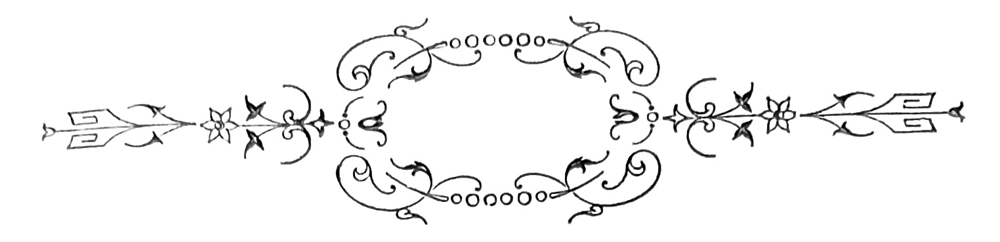
Logo nos fins de setembro, quando tinham cahido as primeiras gotas de chuva, o Canellas tratou de encetar a sua vindima. Não era cedo já, a fallar serio. Havia duas semanas que o Garrocho começára, e que muitos lavradores tinham aberto os seus lagares. A novidade promettia. O verão ia temperado, no inverno não chovera de mais, e d’esta moderação de clima provinha a riqueza dos cachos e a vigorosa maturação dos frutos. Feitas as contas o Canellas devia seis moedas ao todo. O da Vanga, emprestára-lhe tres libras para comprar o jumento na feira da Vidigueira; devia quatro meias corôas ao boticario, da doença da mulher; devia ao medico; devia uns fiados na loja; oito mil reis, das casitas.[Pg 176] Se fosse feliz na colheita da uva, pagava tudo e ainda guardava a sua tarefasita de vinho. Deus ia ajudando um homem, dizia elle para a mulher, e quando o pequeno fosse crescido melhor passariam. Assim, uma bella manhã, o Canellas com a mulher e o filho, deitaram caminho das vinhas, mais o burro. Pela estrada iam encontrando os ranchos de vindimadores; os rapazes trigueiros e musculosos da freguezia, ceifões e polainas, os chapéos de grosseiro feltro derrubados para diante; grupos de raparigas de sangue vivo, grandes olhos ardentes de meridionaes, os cestos ao quadril; velhos trabalhadores corcovados, de barrete, alforge ao hombro, atraz dos seus jumentos vagarosos, felpudos e pacificos; pesados carros de duas rodas calçadas em chapas de ferro, luzentes do attrito no saibro das estradas e pejados de enormes cestões de verga, para o carrego das uvas. A cada volta do caminho convergiam veredas por onde os magotes derivavam, dando—boa fortuna!—aos que se dirigiam para outro sitio. O campo n’aquelle tempo começava a perder o viço. Entre vinhedos de um verde carregado, emmaranhado e pittorescamente confuso, alastravam-se a perder de vista os ferragiaes amarellos, sêccos de raizes do trigo ceifado, onde as ovelhas mansissimas, sonoras de chocalhos, pasciam destroços, as hervagens finas dos barrancos, os fenos fibrosos dos corregos e as gramineas deixadas nos vallados. A região sem grandes depressões atrevidas, sem cordilheiras de arestas a prumo, offerecia á contemplação[Pg 177] um aspecto sereno de ondulações graduaes, moldadas quasi na mesma curva regularissima; toda a zona abrangida n’um olhar, soffria o cultivo solícito e amigo da aldêa proxima, branca agglomeração de casinholas de taipa, sem estructura regular, desenhada no fundo cinzento, metallico e um pouco triste, das grandes oliveiras de troncos fendidos. A léste, no esfumado anil da massa de ar, linhas quebradas de valles distantes esboçavam-se risonhamente na luz da manhã. Nos limites da freguezia, no termo, a herdade assignalava-se com azinheiras gigantes e sombrias, grandes braços pelludos de musgos, contorcidos como n’uma desesperação sem remedio, contra o risonho céo transparente, bordado pelo algodão das nuvens em farrapinhos tenues, como um capricho de criança. O Canellas dirigiu-se á sua vinha, que ficava distante.
—Olha se nós recolhemos este anno um potinho de vinho!... Vendido, dava bem para um porco de quatro arrobas.
—O vinho ha-de estar barato, disse a Luiza, a esposa.
—E eu hei-de ter uns sapatos, gritou o garoto, saltando com os seus rijos pés immundos, na poeira da vereda. O burro, de orelha pendente, o passo reflectido, o olhar tristonho e lyrico, ia caminhando, todo coberto de moscardos. Á frente de todos, o cão Bedelho, corria e ladrava ás perdizes. O ar aquecia, o sol rebentava no céo a cascata da sua luz crua e candente, em quanto nos silvados e nas[Pg 178] faias do proximo ribeiro, os garotos dos melros, na frescura humida das folhas espalmadas, faziam troça da companhia.
A vindima durou-lhes quatro dias, e a novidade fundira-lhes bem. Foi um tempo alegre, o que passaram. Em quanto a Luiza toda arregaçada, de chapeirão nos olhos, colhia os fructos mais o filho, cantando, o Canellas com uma vara de marmeleiro dirigia o burro carregado com dois cestões cheios, da vinha para a aldêa, e com outros dois vazios, da aldêa para a vinha. Quando acabaram o trafego, houve jantar de carne, para que foi convidada a visinha Monica, madrinha do rapaz. E á noite na banca da casa de fóra, jogaram-se as cartas, a Padre-Nossos.
—Quando fôr tempo, disse a Luiza á comadre, ha-de provar um copinho do nosso. A Monica arrebitou a penca, um riso guloso.
—Agora para o inverno, que é para aquecer. E vieram as confidencias, os orgulhos do bom governo de casa, a feliz plenitude de não deverem nada a ninguem—senão obrigações. Tinham pago ao medico, tinham pago á botica, ao da Vanga, os oito mil reis das casas... E ainda, na despensa, ao canto, fervia a talhita de mosto, objecto das mais caras esperanças e base de uma abundancia de chouriços excepcional em casa pobre, no inverno que ia entrar.
A Monica, sêcca figura de viuva pobre, seios chatos e estereis, um grande lenço de chita preta[Pg 179] no pescoço, as contas de louça desfiadas a gloriæ e a Salve-Rainhas durante a monotonia dos serões, roía-se de inveja, um riso amarello de comilona e de desamparada. E formulando bons desejos que não sentia, ia pedindo a Deus désse aos compadres tanta fortuna como desejava para si propria. O casal agradecia. O Canellas a espaços, esfregando as grossas mãos de cavador, observava:
—Estemos pagos e sastifeitos! Cinco senhoras!
—Estemos pagos e sastifeitos! E em côro, todos formulavam planos de futura prosperidade: a compra de uma courella á Barrada, a acquisição de uma adega e a postura de bacello, nas terras da Pichaleira. A Luiza tinha precisão de um capote de pano para ir á missa; indagava da comadre qual era o preço, queria do bom!
—O meu, dizia a Monica, custou-me quatro sobranos. Ainda foi no tempo do meu homem, que Deus tenha. Que hoje!... Quero um trapo de uma saia e tenho de o ganhar.
Desde aquella festança, a Monica cresceu de desvelos para o afilhado, vinha todas as manhãs saber como tinha passado a comadre, e como estava o pote do vinho.
—Nada para sustancia como dois dedos de sumo. Logo pela manhãsinha, que regalo!...
E armavam grandes palestras a respeito do tempo, das lavoiras, dos casamentos e dos escandalos. A filha do Cardoso estava maluca pelo Francisco da Balsa. Contavam-se cousas bonitas. O mundo[Pg 180] ia por agua abaixo. E por transições subtis, alludiam ao pote da despensa. Um domingo provaram. Era todo vermelho, transparente e fluido, de um aroma delicado de roupeiro e moscatel. Boa gota, comadre! Sim senhoras. Boa gota! dizia a Monica, beberricando. E com um estalo de lingua: é de rachar pedras, caramba! De tarde sentiram a cabeça pesada e foram-se deitar muito vermelhas. No outro dia, outra. Cada vez sabia melhor. O rapasito estava na escóla, a tractos com o Monteverde. Á noite, depois da cêa, o Canellas ia logo para a cama, cançado de cavar desde o romper do sol nas fazendas dos senhores proprietarios da terra, e não dava pela falta. Ellas, as duas, em se apanhando sós, era aos quartilhos. E dilatadas em narrativas eroticas de frades, de estudantes e mulheres infieis á honra conjugal, passavam as tardes juntas e os serões, com grandes risadas, uma profusão de gestos e de palavras, certa licença de epithetos, reparavel.
Finalmente pelo Natal, o Canellas foi emechar o seu vinho, segundo o uso. Destapou o potito: que diabo!... Estava quasi meio. Chamou a Luiza todo desconsolado.
—Ó mulher, não sabes? Temos o pote em meio. Quem tirou d’aqui o vinho? A Luiza debruçou-se, muito admirada.
—Santo nome de Deus! exclamou. E com um accento choroso: ora vejam a nossa desgraça!...
—Tu bebestel-o, mulher! affirmou o Canellas.[Pg 181] Ella encarou-o duramente, sem resposta. O Canellas aprumou-se colerico.
—Tu vendestel-o, mulher! A Luiza voltou-lhe as costas, desdenhosa. Á tardinha, depois d’uma scena violenta, o Canellas sahiu. A mulher foi logo a casa da comadre contar tudo, pedir conselho. A Monica depoz a meia, tirou os oculos gravemente.
—Ai, não tenha receio. Esta noite, arranja-se.
—Mas como, comadre, como? Se elle sabe de tudo, ai espinhela! Foi para casa cheia de medo. O Canellas voltou á noite para cear, taciturno, abatido, sem dar palavra. Bateu no pequeno mal achou pretexto, atirou o chapéo com mau modo. Ao entrar no quarto da cama, resmungava:
—Estas bebedas, senhores!... Não dormiu toda a noite, a pensar no seu vinho e a amaldiçoar a hora em que casára. Mas não vira nunca a Luiza alegre, não tinha motivos de suspeita. Havia bons annos que não guardava vinho. O pote, de barro, estava talvez secco, era poroso, tinha seis gatos no bojo, podia ser que absorvesse, ou deixasse sahir o mosto. Mas tanto!... Deram dez, deram onze, deu meia noite, e elle ás voltas na cama. De repente sentiu correr no telhado. Poz o ouvido á escuta. Ouviu rir. Uma voz gritou: Canellas! Canellas! Riam, aos pulos nas telhas. Canellas! Santo nome de Jesus! Era o diabo! Chamou a Luiza: ó mulher! Não ouves? São as bruxas. Não ouves? Canellas![Pg 182] Canellas! Começou a rezar o Credo, enganava-se no meio, começava outra vez, não sabia concluir. Diziam:
—Vamos ao vinho! E a correria continuava. Vamos ao vinho! O pobre estava em suores, varado de medo.
No outro dia mal luziu o buraco, saltou fóra da cama, vestiu-se ás apalpadellas, poz a manta ao hombro, agarrou nos alforges, desprendeu o burro e partiu para o trabalho. Tinha a cabeça em agua, não se lhe tiravam da mente os gritos e as risadas. Canellas! Canellas! Então, as bruxas andavam com elle? Vamos ao vinho! Vamos ao vinho! E sentil-as-hia correr no telhado todas as noites, aos berros e ás gargalhadas, distribuindo os seus pobres almudes pela communidade, e ainda em cima, escarnecendo-o. Durante o dia viram-no mettido comsigo, acabrunhado, carrancudo, dando enxadadas na terra desesperadamente, a suar como um cavallo.
Ao cahir da noite entrou em casa; a Luiza estava ao canto da chaminé, diante do lume de azinho, o chale pela cabeça, aspecto adoentado e beato, o rozario entre os dois dedos. Demais, gravida de cinco mezes...
—Ora santas noites!
—Santas noites!
Reparou na postura da mulher, tão finadinha como um carapau.
—Que é isso? Estás doente?
—Deixa-me, ando morrendo, mesmo morrendo.[Pg 183] Todo o santissimo dia com febre, calafrios, dôres. Ai!... e nas cruzes.
—Mas o que é?—Ella disse choramingando:
—Não vivo muito, não! O Canellas commoveu-se: estás doida! E solicitamente, achegando-se:
—E a respeito de vontadinha de comer, ha?
—Nem nada, marido. Ainda hoje me não entrou migalha n’esta boquinha de Deus. Tudo me sabe mal.
—Mas não appeteces nada? chá e fatias; mata-se o gallo.
—Ai, não! Só appetecia uma cousa. Mas não, é melhor não.
—Dize o que é, anda. Se fôr caro compra-se: ora!...
Ella ficou calada, rezando automaticamente.
—Então, que dizes? Que appeteces? Vamos.
—Olha, o que eu comia bem agora, eram uns peixinhos da ribeira das Sormarias. Tenho mesmo vontade, mesmo de dentro. O Canellas foi logo albardar o burro, agarrou n’um cesto e poz-se a caminho, sem querer ouvir mais.
—Não tenha algum desmancho! ia elle dizendo.
Apenas lhe não sentiu os passos, a Luiza correu a chamar a comadre. Entraram ambas na despensa. Tinham mettido o resto do vinho n’um odre; uma agarrou por um lado, outra por outro, e arrastaram o couro turgido até á porta. Era noite fechada e ninguem passava na rua. Das chaminés[Pg 184] evolava-se o fumo dos lares, ouvia-se rir nas habitações das familias, e um cão latia no campo, sem echo; em quanto, acalentadas no berço as crianças choravam. D’alli a pouco as duas, viram chegar o Coxo, taberneiro, pesada figura de velhaco, apopletico, gorro sebento, um riso desdentado de patife, ironias bestiaes, navalha.
—Venha o bago! disse a Monica. O Coxo quiz roubar-lhe um beijo. A Luiza occultára-se atraz da porta.
—Podias ter vindo mais cedo, disse a velha. Estendia as mãos ao preço do odre, dizendo:
—São tres almudes, tinto; a quartinho, tres mil e seiscentos. Sete meias corôas e mais um tostão. Barato como pouco. O Coxo deu o dinheiro, pegou no odre, e foi-se depois de ter cingido amorosamente o estafermo.
—Agora, tornou a Monica, venha a minha commissão e aqui tem o dinheiro.
A Luiza deu-lhe seis tostões.
—Vamos á ribeira, disse ainda a velha. Embrulharam-se nos chales, fecharam a porta; á socapa sahiram para o campo, e apenas na estrada, deitaram a correr. Era quem mais podia, por aquellas ladeiras acima, em direitura á ribeira.
—Ai que arrebento! dizia a viuva, arquejante, a espaços. A final chegaram ao sitio. Pararam, em conferencia.
—Tu vaes para o outeirinho de lá. Eu fico, mesmo defronte, agachada na rocha. Assim foi. Não[Pg 185] viam nada á roda. O céo pesava de grossas nuvens caliginosas e tragicas. Esbarravam com as azinheiras seculares, cahiam sobre carrascaes e tojeiros. Nas trevas, as ramas torcidas pelo nordeste, tinham gestos aggressivos, de reprobas. Por todo o campo, quando passava a rajada, sentiam-se risos abafados, segredos de feiticeiras, a sombra mexia-se, ondulava, tinha transmutações sinistras. O Canellas no entanto, estava mettido á agua, com o cesto no braço, puxando a linha da isca. Inda não conseguira apanhar peixe; o medo agoniava-o. Se as bruxas soubessem que estava alli!... De repente, cahiu uma pedra na ribeira, e esboroamentos de terra foram descendo, como deslocados por um pé em falso.
—Mau! E o anzol não prendia. Diabo!...
Pareceu-lhe que diziam segredinhos nas barranceiras, acima da sua cabeça. Andava gente em cima, viu um vulto acocorar-se.
—Ó camarada! gritou elle, em tremuras. Tudo calado. Puxou a linha; nada! De repente, uma voz moribunda chamou:
—Berrabaz!
Outra respondeu:
—Satanaz! O Canellas não sabia de que terra era. O que faria á sua vida? Alli acabava n’aquella noite. Benzeu-se. Iam dar cabo d’elle, espetar-lhe agulhas nos rins, metter-lhe á força um sapo nos dentes... Tornou a voz:
—Vamos afogar o que está na ribeira?
[Pg 186]
—Não, que a mulher está rezando o rozario á Virgem.
—Olhem se a Luiza não tem ficado rezando ao lume, hein? Santa mulher! Como elle estava agradecido ás suas orações!...
—Berrabaz!
—Satanaz!—Um cão uivava funebremente, no casal do Pelles. O Canellas batia os dentes, deixára cahir o cesto. O vento dava risadas de escarneo, dançavam as azinheiras e o céo fazia ouvidos de mercador. A voz insistiu:
—Vamos afogar o que está na ribeira?
—Não, que a mulher está rezando á Virgem. D’alli a nada:
—Berrabaz!—Satanaz!
—Vamos a beber-lhe o vinho?—O Canellas pulou:—com mil raios!
—Vamos.
—Vamos a partir-lhe o pote?
—Vamos.
O desgraçado ergueu as mãos desesperado e murmurou chorosamente:
—Ai a minha desgraça! Ai o meu rico vinho tinto!
Alta noite, a Luiza enrolada sempre no seu chale, rezando sempre as suas contas ao canto do lar, viu romper pela casa dentro o Canellas esbaforido,[Pg 187] sem peixes, sem anzoes, sem sapatos, sem chapéo, sem manta, alagado em suor, trémulo de medo e morto de cansaço. Contou tudo á Luiza:
—E vai, ouvi dizer: vamos a beber-lhe o vinho? Vamos. Partimos-lhe o pote? Partimos. Tu sentiste alguma cousa, mulher? A Luiza persignava-se, com os olhos em alvo.
—Eu nada, disse ella. Não senti nada: uma cousa assim!...
Foram vêr á despensa. Tinham bebido o vinho, e o pote estava em pedaços. Entraram a chorar. Veio a comadre.
—Que é lá isso de prantos n’esta casa? disse ella, afflicta. Contaram-lhe.
—Pois eu lhes juro, que as bruxas nunca mais os perseguem. Sei as orações de as afugentar.
De facto, nunca mais tornaram, nem bruxas nem boas vindimas, nem potes de vinho.
Tal foi a idéa da comadre Monica.
[Pg 189]
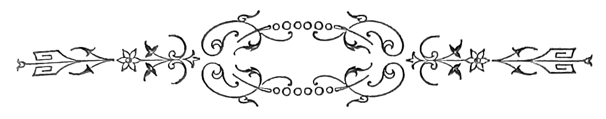
Toda a manhã, Fernanda andou impaciente pelas casas, esperando os gatinhos. Ao acordar, fôra aquella a sua primeira idéa—os dois pequeninos animaes cheios de viveza e graça, em cujos olhos ria uma innocencia travêssa e dôce. Havia tempos que a tia Consuelo lh’os promettera, quando fossem crescidinhos. E a cada visita á boa senhora, Fernanda levava horas e horas com elles, brancos de neve, uma finura de pennugem que acariciava a pelle, as duas cabecinhas inquietas com orelhas que se fitavam petulantemente, a cada ruido do gabinete. Fernanda tinha uma paixão por aquelles dois diabitos brancos que levavam os dias, ou sugando as tetas da mãi, grande gata de pello fulvo e pupillas[Pg 190] glaucas, ou rebolando no tapete os corpinhos electricos, n’uma embriaguez de vida que fazia prazer. O gato era o mais leviano, com as suas patinhas fôfas e os dedos rosados na planta, de que as unhas transparentes e curvas sahiam desembainhadas, nos momentos de irritação, se lhe pisavam a cauda. Tinha os olhos azues, cheios de fibrilhas inquietas mais escuras, uma ingenuidade selvagem no encarar, fitando as orelhas velludinosas, em que parecia residir toda a petulancia d’essa cabeça infantil. O focinho côr de rosa, com barbicas alvoroçadas sorria um pouco, mesmo quando assanhado, e das gengivas vermelhas e humidas, os dentinhos em serra, agudos e pequenos, resahiam gulosos, desafiando a gente. A gatinha affectava mais seriedade e mais coquetterie, uma ambição contida de se fazer senhora e uma sciencia complicada em se fazer amar do macho. Nunca era a primeira no ataque, e zangava-se mal presentia uma offensa. Á comida exigia os melhores pedaços, rosnando sôfrega, com a pata erriçada de unhitas curvas, contra o primeiro que lhe chegasse ao prato. Dormitava muito, como a mãi; ás vezes o irmãosito chegava-se, cauteloso, estendendo as patas e movendo vagarosamente a cauda, as pupillas cheias de um clarão de patifaria. Com um movimento destro erguia uma pata—zás!—no ventre da sua companheira, que entreabria preguiçosamente os olhos, immovel, com o focinho enterrado na penugem do ventre. Esta indifferença benevola, arrojava o gaillard do gatinho[Pg 191] a maiores garotices. Chegava-se então muito meigo, unhas escondidas, o dorso alto, as orelhas chatas e deitadas para traz. Com as duas patas da frente, cingia o pescoço da pequenina, e entrava a morder-lhe repetidamente o peito, os labios, a pontinha das orelhas, em quanto com as unhas trazeiras lhe raspava voluptuosamente o ventre e as côxas, provocando cocegas.
Ella estremecia, toda percorrida de um gozo intimo e alongando o corpo para traz; e de ventre para o ar ficava immovel, espreitando, com a bocca entreaberta e os olhitos reluzentes de uma caustica lasciva, de bacchante núa. Abraçavam-se então, luctando, as caudas em espiras; armavam saltos por cima dos moveis, iam esconder-se nas franjas espessas dos fauteils muito baixos, e suspendendo-se em cacho dos pés esculpidos das consoles encrustadas de metal e madre-perola, sacudiam-se, balançando os corpos como dois gymnastas em exercicios de destreza. A tia Consuelo, impacientava-se já de semelhantes correrias. Descobrira uma nodoa no carmezim do divan da sala e achára extirpado a unhadas o ventre de uma antiga bergère preciosa, do tempo da senhora infanta D. Anna. Além d’isso, a estroinice dos brutinhos punha uma nota impertinente na monotonia somnolenta da casa, antiga casa cheia de silencio e conforto, onde o piano dormia mezes inteiros e os moveis do salão alinhavam, como collegiaes em revista, os seus bôjos vestidos em camisas de bretanha.
[Pg 192]
A gatarrona mãi toda insensivel ás festas, muda e impertigada como a dona da casa, era tão indolente como esta; e ao lado de D. Consuelo, sobre uma almofada de sêda, dormia dias inteiros, com uma colleira escarlate de fechos de ouro. Só ella, com a sua idade circumspecta e a sua molleza freiratica, dizia bem no salão de côres austeras em que D. Consuelo recebia os padres de S. Luiz e as irmãs do Coração de Maria, e levava as tardes sepulta na voltaire, toda amortalhada em velludo negro, touca de rendas pretas e as Meditações sobre o divino Jesú nos joelhos. De fórma que, um domingo determinou expulsar do santuario os patifes ruidosos, o que alegrou Fernanda vivamente: ia emfim ser toda d’aquelles garotinhos gentis e ferozes.
Era domingo, luminoso dia do primavera germinadora e florida, sonoro de rumores de gente festiva e cortado de vôos d’andorinhas meigas, que entravam a construir os ninhos pelas cimalhas das aguas-furtadas. Fernanda não quiz almoçar sem que os bichos viessem; conseguira dois lugares á mesa para elles; a gatinha ficar-lhe-hia quasi no collo, o gato mais longe, com um pratinho de porcellana provido dos melhores bocados. E que nome lhes poriam? Foi um meditar profundo sobre o problema.
Houvera em casa uma gata franceza, que morrera de velha e tinha um rabo branco caricioso—A Blanche. Pobre querida! Estava sepultada no[Pg 193] jardim entre duas roseiras de todo o anno. E Fernanda recordava o seu modo subtil de se roçar pelas saias á comida, com o rhum-rhum dolente de uma beata offerecendo rezas, e o seu comer dificultoso de desdentada, rejeitando os ossos das perdizes e preferindo bolos fôfos, de recheios aromaticos, que ao almoço se serviam em pilhas, sobre cabasinhos de rosas, de velho Sèvres rocócó. E apparecera morta uma manhã de inverno, ao pé do lago. A gatinha devia chamar-se Blanche tambem, um nome da côr do seu vestido setinoso de princeza. Mas o Arthur, o garoto mais velho da casa, era de opinião diversa. Segundo elle, deviam baptisar-se os dois bébés, na banheira de marmore do rez-do-chão, sendo elle padrinho, mais o trintanario.
Mergulhariam os moiritos na banheira cheia de uma agua perfumada, ao som de rezas que só elle sabia, e de umas bengaladas valentes, ao primeiro berro que soltassem os neophytos, na banheira trasvasando. Depois do que, seria servido vinho aos pequenos, com applicação de pancadaria supplementar e guizadas ao pescoço—o que os tornaria fortes, avisados e aptos á comprehensão da vida e á constancia na lucta com as arganassas, que por acaso encontrassem nas excursões á despensa ou ás cocheiras da casa. Fernanda magoou-se com semelhantes opiniões, e quasi chorou pelos pobres innocentes que lhe mandava, do fundo do seu conforto beato e egoista, a boa tia Consuelo. Quando elles chegaram n’um cabaz de vimes, com laços ao pescoço[Pg 194] e um pouco assustados da jornada, Fernanda não sabia que fazer para melhor exprimir a sua satisfação: era um côro de risos candidos e gorgeios innocentes; ia do pai para os joelhos da mamã, e esquecida já das maldades do Arthur passava-lhe os braços ao pescoço, cobrindo-lhe a face de beijos. Quizera para os dois gatinhos todo um palacio de sêda e gulodices, com o seu trem completo de cozinha, a longa bateria de peças de folha reluzentes e pequenas, fogões installados nos respectivos poiaes de madeira pintada, um serviço de porcelana fina, mobilia e carruagens elegantemente forradas a pedaços de setim de todas as côres, lavatorios e leitos, uma multidão de objectos microscopicamente construidos, que a paciencia da mamã adquirira, durante uma semana inteira de investigações, pelos armazens de quinquilharias da cidade. E a installação, que encantadora e que trabalhosa!...
A gatinha saltava desdenhosamente por cima das ottomanas e das causeuses delicadas, atirava com lavatorios e caçarolas, fazendo com a cauda desabar os guarda-louças tão ricamente providos. Quanto ao gato, foi impossivel mettel-o no kiosque dourado onde tantas preciosidades de mobilia se accumulavam. Ao primeiro esforço de Fernanda para o fazer entrar, assoprou raivoso, desembainhando unhas ameaçadoras contra a dôce protectora, que tão generosamente lhe offertára opulencia e conforto. E apenas o largaram no parquet, desatou a fugir pelas salas como um desalmado evadido.[Pg 195] Em breve, Fernanda se persuadiu da impossibilidade completa de fazer caseiro o ménage.
E a pomposa e pequenina residencia passou a ser habitada por uma familia extraordinaria de bonecas de todos os tamanhos. A paixão do loiro amorzinho pelos dois maus animaes vertia agora o fel de uma ingratidão profunda. Ella não podia comprehender realmente, o desdem soberano dos gatos pelas magnificas provas de amor que lhes dera, no seu enthusiasmo de pequena caprichosa. E nos primeiros dias, os seus afagos para o gatinho orvalhavam-se das lagrimas d’um resentimento angelico e mal contido. Elles, os dois patifes, adquiriam pouco a pouco a sua franca e leviana liberdade; ao almoço e ao jantar subiam pelos vestidos e pela toalha, reclamando em voz alta o seu talher de pessoas de familia; atacavam sem a menor ceremonia os pratos que apanhavam sem guarda no aparador e nas bancas da cozinha; iam miar em côro por baixo das alcofas da carne crua e dos cabazes providos de peixe fresco; escamugiam-se surrateiramente para a despensa a encherem os bandulhos de quanto apanhavam de succulento, e umas vezes por outras, nas noites humidas e chuvosas, tinham o pessimo costume de afiar as unhas nos mognos polidos e nos estofos matizados dos gabinetes, sulcando e rasgando, sem preferencia e sem attenção de preços. Fernanda ria com elles e achava-os de uma graça captivante. E a todo o transe defendia-lhes[Pg 196] as velhacadas, orgulhosa de soffrer pelos que amava com tamanha loucura.
Chegou o dia dos annos do Arthur—uma quinta-feira, em maio. Determinaram ir passar o dia á quinta, em Carriche.
Ia a boa dama Consuelo, as pequenas Magalhães, as primas Lopes e todo o mundo infantil da familia. Na vespera, disfarçadamente, em quanto o Arthur estava no collegio, Fernanda sahira com a mamã á compra de presentes para o dia seguinte. Tinha um mundo de projectos na mente: torres ideaes de cartonagem com sinos dourados e portaes de columnellos; jardins de cascatas surprehendentes, grandes exercitos de chumbo formados em ordem de ataque com baterias de latão; as arcas de Noé em que reside um mundo inteiro de bugigangas coloridas; esquadras empavezadas de flammulas com almirantes de estanho, commandando tripolações de madeira suissa; pequeninos theatros com figuras de verniz e paizagens ternas de Nuremberg; tudo quanto a phantasia póde realisar de pueril e caprichoso e quanto uma criança póde exigir, na incoherencia dos seus devaneios côr de rosa.
A mamã aconselhava um cabazinho de dôces frescos, do Baltresqui. Era mais delicado! Mas Fernanda tinha os olhos n’uma cathedral de madeira branca, elegantissima de cupulas e rendilhados, por cujo portico profundo e alto na sua escadaria de[Pg 197] balaustres gothicos, uma multidão de fieis ia subindo, collada com gomma arabica.
—Que lindo, mamã, que lindo! dizia ella, pousando devotamente as duas mãosinhas toute roses, no magnifico zimborio com ventanas de espelho e ornatos de cartão representando faunos engalfinhados. E imperiosa, impertigada nos tacões dourados dos seus sapatinhos de verniz, declarou que escolhera, e que o Arthur deveria ficar muito encantado de um presente de tal modo original. A cathedral foi conduzida na carruagem com extremas cautelas, ao lado de um chapéo que para a pequenina a mamã escolhera na Emilia d’Abreu. Recolheram cedo a casa, antes do pequeno voltar, e á noite n’um gabinete fechado e sobre a larga mesa coberta de tapete, os presentes da familia e dos amigos do Arthurinho ostentavam, n’um soberbo bazar, as suas fórmas pittorescas e os seus matizes originaes. Eram os cabazes de camelias vermelhas bordadas de heras e pequeninos bouquets de violetas de Parma; as bocetas de côres vivas e esmaltes garridos, turgidas de doçarias caras; grupos de porcelana e terre cuite n’uma infinidade de posições ingenuas ou garotas. A Laura deixára a sua photographia risonha de cherubim pensativo, um rostinho dôce coroado de uma bella cabelleira loira, em anneis. E os amigos todos, o Alfredo, o José e os dois gemeos Nogueiras, tinham vindo trazer uma lembrança amavel, chicotes, capacetes, cavallos de molas, magicos em caixas, o diabo! Ao centro a cathedral[Pg 198] de Fernanda com as suas torres severas, de um gothico amaneirado, e o seu zimborio de columnellos flexuosos, erguia-se magestosamente no meio da cidade de camelias e violetas, e das pinturas vívidas dos cofres, cheios de rebuçados e pastilhas e aromatisados das mais finas essencias.
Por entre as corbeilles extravasando côres e perfumes, os gitanos de terre-cuite dançavam aos pares, e as pastorinhas de louça com os seus trajos coloridos e os seus rostinhos frescos, pareciam de antemão celebrar a formosa manhã a desabrochar no anniversario do dia seguinte.
Como o Arthur ficaria contente, quando ao outro dia abrissem á sua curiosidade, aquelle profuso mundo de brinquedos e gulodices!... E Fernanda, nos bicos dos sapatinhos e sem fazer ruido, arrumava e dispunha tudo, ao lado da mamã, tocando com as pontas dos dedos as cousas, como n’uma capella, absorta n’um extasi profundo de sonhos innocentes, como se o seu espirito viajasse por um grande paiz de quinquilharias ideaes e maravilhosas.
Quando acabaram a tarefa, a mamã sentou-a no collo, commovida por aquella dedicação fraternal e solicita que tudo queria para presente d’annos do Arthur; beijaram-se ambas, por muito tempo.
—É verdade, disse Fernanda, e o chapéo?
A mamã foi buscar o chapéo: era um delicioso bijou de palha amachucado á banda, com um ramilhete de myosothis adoravelmente perdido n’um[Pg 199] tufo de gaze fina, tão fina que mal se apertava na mão, parecendo espumar por entre os dedos, como Champagne vertido de uma torneira.
A pequenina quiz pôl-o: ficava graciosamente, um pouco tombado sobre os olhos.
De sob as abas, em caprichosos rodopios, rebentava a cabelleira loira de cherubim, que adquiria contra a luz transparencias de oiro fino, emquanto uma onda de tule branco ia cingir-lhe o pescoço, como aragens tecidas por mão de princezas mouriscas, das que fallam os contos do Meio-dia.
O desejo de Fernanda era não tirar mais esse pequenino e fresco chapéo, cuja aba tombada enchia de uma sombra humida os seus grandes olhos. Mas era forçoso esperar o dia seguinte, quando fossem para a quinta. A pequenina exigiu que o chapéo ficasse sobre a banca, entre os presentes d’annos do Arthur, descoberto e aninhado na sua onda fofa de tule branco. Esteve ainda a olhal-o: os myosothis com as florinhas miudas, de uma contextura paciente e nitida, dispostas n’um forte cacho azul, entre folhas verde baço, davam um encanto ingenuo á copa conica, um pouco extravagante talvez. Visto de lado, parecia um ninho de pennugens tepidas, de que os passaritos houvessem partido um minuto antes. De repente a sineta tocou: voltava o Arthur do collegio. Fecharam a porta do gabinete muito depressa, não desconfiasse elle. No dia seguinte, quando lhe mostrassem tudo, dizendo:—ahi[Pg 200] tens, é para ti...—que loucuras e que jubilos não commoveriam esse vermelho endiabrado, de que os velhos criados tinham já medo! Apenas o gabinete ficou só, a gatinha trepou para cima da mesa, e pôz-se a mirar tudo, dando passadinhas leves, toda cautelosa pelo meio dos presentes accumulados, cheirando e lambendo aqui e além. Nos seus olhitos garotos, um clarão de malicia ingenua, parecia beber enlevadamente os matizes: farejava os cofres por todos os lados, baixando a cabecita, como quem reflecte. Diante da cathedral o seu pasmo pareceu crescer, porque se deteve de pescoço estendido, a medir a altura das cupulas, de patas firmes nos primeiros degraus da escadaria, com prejuizo de dois devotos de cartão, que esmagou com uma indifferença soberana. Deu com o chapéo de Fernanda enroscado na facha de tule branco, e a passadas lentas foi para elle, com o dorso alto, espiralando a cauda, toda contente do achado. A tarde cahia, e o gabinete carregava-se de sombra.
Pela vidraça, a paizagem ganhava manchas sombrias e grandes esbatimentos de um vago picado a pontinhos de gaz rutilante. Subia do bairro commercial e das grandes ruas de transito um tohu-bohu de labutas que esmorecem, e carruagens que se perdem, circulando. Um sino tocava. No gabinete, faziam-se deslocamentos confusos de fórmas e de aromas, e os olhos da gata phosphorecentes, luziam como dois faroes em fluctuação, na penumbra alastrada em torno. A palha do chapelito gemeu:[Pg 201] a gata acabava de enroscar-se no ninho da copa, fazendo posição para dormir. Nunca sentira cama mais macia e mais dôce que n’aquelle fundo de chapéo forrado de sêda branca, onde o tule enrolado dava uma molleza preguiçosa de cochim, de edredon! Inda porém não tinha cerrado os olhos, e já o irmãosito, dando um salto agil, cahia em cheio sobre a ampla aba do chapéo, amachucando o precioso cacho de myosothis. A coquette então ergueu a cabecinha ironica, com um meneio creoulo de amante benevola. De cima da aba curva, como de cima de um muro, pendia a patinha do gato, toda branca e nervosa, desafiando.
Essa pata estendeu-se, estendeu-se, e subtil, como n’um jogo de prendas, deu uma sapatadasita no craneo da femea, retrahindo-se logo. Mas a gatinha parecia querer dormir e aninhou-se de novo no seu fundo de copa, onde a sêda punha a alvura cariciosa de uma alcova.
A tactica do gato, mudou então: rebolando-se lascivamente pelo declive da aba, o marau pôde attrahir a si todo o tule da facha livre, que Fernanda enrolára ao pescoço, um momento antes.
Uma vez envolto nas ondas de espuma do tecido, entrou a arrastar o chapéo atraz de si, pela mesa fóra. Foi o signal: a gatinha sacudiu rapidamente a somnolencia, espreguiçou-se com uma distensão prolongada de patas e de espinha dorsal, escancarando a guela e distendendo as unhas. Esse movimento largo desenhou vigorosamente o corpinho[Pg 202] da fera contente, que desperta. O dorso, de uma alvura singular de arminho, teve um lampejo brusco de scentelha, quando o craneo chato e muito curto, de maxillas ferozes, roçou com um deleite perfido de volupia, as pennugens imperceptiveis das patas, armadas terrivelmente de alfanges curvos. Com um pulo agachou-se na copa do chapéo, como n’uma caverna, á espreita. O seu olho inquieto fusilava. Todo o corpo encolhido, percorria-se de pequeninos fremitos de impaciencia, que as orelhas continuavam, imprimindo á cabeça um grande cunho de astucia recalcada. O gato vinha de rastos apagando o som dos movimentos, garrido no seu tule como um pagemzito aventureiro. E á medida que elle vinha, o pescoço da gata, do outro lado da aba, alongava-se, escorregando dôcemente pela sêda do forro. Por fim as patas encontraram-se, e cada qual disputou o tule, ás unhadas, a dente. A facha, que se desenrolava do corpo d’elle, acabou em frangalhos, nas unhas dos dois.
Um golpe desunira porém duas fibras de palha, da aba derrubada. O gatinho metteu a cabecita pela abertura, radiante de maldade, e foi morder o cacho de myosothis. Do seu lado a gata continuou a obra, descobrindo os dentinhos brancos. Mas em breve o destroço se propagou aos presentes d’annos do Arthur, com uma rapidez de saque premeditado. As corbeilles viram-se despojadas das suas cintas de hera, reluzentes e excentricamente recortadas, e dos seus maciços de camelias reaes. Na vertigem[Pg 203] do can-can desenfreado, que os dois diabitos armaram por cima da banca, todos os objectos leves eram arrojados para a banda n’um rodopio constante; os gitanos partiram braços e pernas, as pastorinhas ficaram sem cabeça, algumas bocetas violentadas cederam, e foi um destroço geral de natas, especiarias e recheios. Um rebuçado d’ovos ficou pegado á cathedral de Fernanda, obstruindo o portico por onde os devotos de cartão começavam a entrar, envernizados e festivos. E a walsa extraordinaria continuava sempre sem respeito e sem cansaço. Na manhã do dia seguinte, em quanto no pateo o cocheiro punha o landeau, e as carruagens chegavam trazendo os priminhos e as numerosas tias, Fernanda com uma deliciosa tunica azul céo e um largo collar de marinheiro bretão, foi chamar o Arthur que acabava de vestir-se.
—Bons dias, disse ella, beijando-o. Tens alli muitos bonitos, vem vêr.
O pequeno não quiz saber de mais; foi ás carreiras abrir a porta, e entrou cheio de avidez, no gabinete onde estavam dispostos os presentes.
Ao principio, Fernanda e o irmão entreolharam-se n’um desolamento indescriptivel, vendo os dois gatinhos abraçados que dormiam tranquillos, no meio das ruinas do soberbo bazar construido na vespera. E tão socegados como se nada lhes pezasse do que haviam feito!
—Olha, balbuciou Fernanda sentindo as lagrimas na garganta, estragaram tudo!
[Pg 204]
—É verdade, fez attonito o Arthur.
Veio-lhe um impeto de raiva sanguinea contra os dois patifes, que pareciam zombar com os seus tranquillos olhares, da assolação que haviam feito. E com o primeiro chicote que viu, descarregou nos lombos do grupo uma vergastada sibilante, que arrancou um berro ás duas gargantas contrahidas.
Diante do esqueleto do gracioso chapéo de palha, tão pittorescamente ornado do seu cacho de myosothis, a pequenita cruzando as mãosinhas pallidas, de uma esculptura fina e reticulada de vêas microscopicas, chorava silenciosamente as perolas de uma dôr serena e de um amor espesinhado de ingratidões—porque amára com paixão os ingratos pupillos.
—Seus maus! dizia ella sempre que os via na cozinha, já crescidos, dormitando na mesma cadeira.
Mas quasi sempre, a sua mão esquecida e meiga, lhes ia afagar as cabeças somnolentas e chatas, como de dois pequeninos tigres preguiçosos.
[Pg 205]
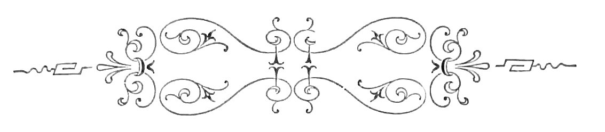
O conde não acompanhou sua esposa n’essa noite.
Era quinta-feira.
O inverno rigoroso, céos continuamente emburelados em forros plumbeos, chuvas eternas que não davam guarida, lama pelas ruas, bocejos pelos gabinetes, aspectos constipados, a bronchite tripudiando a sua impunidade pelos narizes das familias, e em S. Carlos a Varezi trillando divinamente, com aquelle sorriso que parecia uma esperança e que se tornou desde que ella partiu, n’um desespero. No Gremio, Alberto de Selvas esperava o conde; além d’isso apostára no Club a queda do ministerio; e por fim, elle não queria dizer, mas Fatime esperava-o, queria cear com elle,[Pg 206] a Fatime do corpo de baile, uma loira picante, de carnes friamente impuras, cujo olhar, de um pardo inerte, possuia nos accessos de cólera, fulgurações de adoravel maldade. Razões que impuzeram resistencia ás supplicas da condessinha e diante de cuja teimosia ella fez beicinho, com uma expressão de candura inimitavel. De modo que, mal Charmille, o velho criado grave, serviu o café no pavilhão chinez, e o conde bebeu o seu velho cognac digestivo, pediu o prussiano, accendeu um carvajal pequenino, de um aroma penetrante, e beijando a condessa partiu.
No pateo ouvimol-o cantarolar as coplas dos Sinos, e as suas botas rangerem no xadrez do atrio. Depois o coupé rodou e ficamos sós. A tarde cahia, e sobre o terraço para onde rasgavam as janellas do gabinete de trabalho, um raio do sol peneirado através das moitas de trepadeiras, tinha uma luz harmonica, ineffavel, discreta, em que se sentia a confidencia, em que se sonhava o idyllio, de uma pureza archangelica, nas regiões phantasticas do incommensuravel, sobre o dorso de cometas desgrenhados. Uma arara monotona chalreava, suspensa por um só pé a um supporte metallico, patenteando no arrojo das pennas, de brilhos ardentemente metallicos, matizes inconcebiveis, divinos cambiantes de um mordente estranho, tons apaixonadamente fulvos, em todas as gradações do espectro, com saturações vivas de escarlate e violencias de verde, de um caustico exaltado. A condessa fechou o[Pg 207] livro e olhou para mim. Era uma criança anemica, fina belleza aristocratica, crescida como uma avenca australiana, no molle ambiente impregnado de essencias, dos boudoirs, dos salões e das largas galerias claras, em que antepassados graves, olham dos seus quadros poentos, ridiculos ou funereos nos seus vestuarios de todas as idades.
O seu typo bourbonico, pallidamente senhoril tinha um cunho real que feria, e sentindo-a respirar e sorrir, todo o mundo se abalava por ella n’uma sympathia enthusiasta, n’um vasto amor infinito e terrivel como a morte. Umas religiosas irlandesas haviam-na educado no Bom Successo: por toda a parte grades, a austeridade da clausura, frias pedagogas embiocadas em negro, o sino batendo as suas pancadas cortantes, as preguiças de levantar cedo, as tristes harmonias que lhe ensinavam nas harpas douradas, e em que pareciam soluçar tormentosas legendas de amores mythicos, e rolarem pelas escadarias dos cadafalsos vermelhas cabeças palpitantes.
Sahiu de lá fallando menos mal as linguas, bordando jardins suspensos em almofadas de apparato, com um vicio, o piano, e um vacuo diante da sua alma—a vida em que ia entrar. Sua mãi, uma rainha de bailes, lia romances dias inteiros, em chambre, deitada n’um divan opulento, o cabello por cima das mesas, perfumes caros na epiderme e meias de sêda esticadas acima do joelho.
E ella afez-se tambem ás leituras.
[Pg 208]
Belot, que uma amiga lhe emprestára, poz em vibração na sua alma uma corda mysteriosa, e pela primeira vez na sua vida de virgem, se abrasou em impetos. E o seu sangue impetuoso teve allucinações candentes, em que passavam homens brancos, virginaes, athleticos, nús e vívidos, que lhe estendiam os braços.
Desceu com o visconde Ponson, com o scelerado Capendu e com o patife Zaccone, aos pavores dos subterraneos em que se despenhavam protogonistas heroicos; quiz sofrer com elles as inclemencias dos carceres e as agonias da tortura, escamugindo-se quando pôde pelas sahidas mysteriosas em que molas occultas fazem girar portões de rochedos; subiu as escadas de corda, mascarada de velludo negro, com um frasquinho de saes no bolso e um punhal nos dentes; penetrou conclaves lobregos em que conspiradores avançam solemnemente para fazer phrases, e se pronunciam juramentos terriveis com as espadas núas sobre braseiros consagrados, á luz de tochas de cêra amarella. E romanticamente decorou phrases pomposas das heroinas, teve attitudes theatraes de uma exhibição ridicula, esgares e lyrismos. Pintava de bistre, olheiras sentimentaes, e sobre os hombros semi-nús em gaze vaporoso, deixou revolutear os cabellos turbulentos, seccos, crespos, em tons hilariantes.
Mas uma tarde parou uma carruagem á porta.
Um rapaz que ella vira em S. Carlos, de luneta de oiro, na Havaneza puxando punhos de apparato,[Pg 209] nos chás do ministro d’Allemanha declamando theorias, no parlamento pedindo caminhos de ferro em nome do progresso e da civilisação, entrou com um velho.
Vinham pedil-a em casamento.
O pai de Beatrice fazia politica, pedia tambem caminhos de ferro e moralidade nas provincias da publica administração, mal sabia o nome dos filhos e só ao jantar estava com a familia, não obstante lamentar a decadencia da sociedade portugueza, nos artigos de fundo.
A mãi por causa d’ella, não podia installar commodamente os amantes, tinha por isso birras, rogava pragas em voz alta. Vida do diabo! Raio de filhos!
Um dos apaixonados, o conego D. Venancio, queixára-se até ás criadas, que aquillo não podia continuar assim, que nem uma pessoa era senhor de levar a sua capa de trazer e os seus solidéos de retroz preto, com uma borlasinha na nuca.
De modo que o casamento fez-se.
O Illustrado fallou com boas orações incidentes explicativas e adjectivos novos, da festa, dos convidados, a fina flôr, das toilettes, tudo de aprimorado gosto, publicava com pompa.
E havia dois annos que Beatrice era condessa, a condessinha, e que eu, o melhor amigo do conde, assistia ás suas matinées e ás suas desillusões.
Na bocca pequenina d’ella, vermelhamente lasciva,[Pg 210] uma contracção ironica dizia as suas impaciencias, os seus arrebatamentos, as suas fluctuantes predilecções, os seus languores e os seus desdens. Amava os vestidos decotados e os largos collarinhos de cretone azul, que permittem a viagem mystica do olhar artista ou sacrilego, até á promessa, aos esplendores de um seio...
O meu olhar casualmente, innocentemente—dou a minha palavra de honra,—como uma ave ferida, foi de manso e pouco a pouco, como quem quer reter o vôo e não tem forças, cahir tambem n’esse abysmo de alabastro, e ao reparar attonito no sacrilegio, viu a condessinha sorrir, um risinho lancinante que dizia:
—Então... que é lá isso, tambem...
A carne é fragil. Fragil e petulante.
N’aquelle momento quizera ter cegado. Depois—não vão dizer nada—senti pena de não ter olhado melhor. Mas era shocking!
Lançava as culpas para a condessinha; para que punha aquelles collarinhos? E olhando-me aos espelhos das paredes, via-me chammejante, em tons apopleticos de lagosta, o frisson das grandes culpas pela espinha dorsal.
Assim chegou aquella tarde.
Beatrice continuava abandonada no fauteil, a sorrir.
[Pg 211]
E o maldito collarinho aberto, o sicario, aberto, aberto!...
A tarde esmaecia nos longes, sobre o mar, e no silencio a noite condensava escuridades no ar com um methodismo severo, imperturbavel, gradual.
O relogio feriu cinco horas.
Por uma janella aberta o rumor da cidade entrava; carruagens sentiam-se ao longe, e no vasto negro, pontinhos de gaz bordavam evoluções caprichosas, marcando as curvas das ruas, o afunilamento dos beccos, as dilatações das praças lamacentas.
Não pedimos luz.
Eu fumava na causeuse. A condessinha distrahida agora, absorta e com o olhar perdido nos relêvos do tecto abandonava-se; e na penumbra das coisas, o seu busto adquiria linhas ideaes de visão benigna, a morbideza calida de certas organisações doentias.
Ergueu a voz:
—Meu marido...
—Para que diabo vem agora o marido? pensei phrenetico, com um embate audaz no cerebro.
—Meu marido diz-me sempre ter em si, Armando, o seu melhor amigo.—Curvei-me.
—É uma honra...
—Cale-se, é apenas gratidão. O conde é sincero.
E mudando de tom:
—Armando, que idade tem?
—Vinte, condessa, bem monotonos na verdade.
[Pg 212]
—Vinte annos!—E a sua voz, de uma inflexão musica, era suave como uma caricia.
Eu sentia-me todo levado para ella...; mas de subito lembrei-me do conde, o meu melhor amigo.
Pobre Carlos! Áquella hora, jogava talvez no Gremio com os seus intimos, e perdia. Bello rapaz! Tinhamos sido condiscipulos no collegio, elle era casmurro nos seus significados de latim, levava puxões d’orelhas.
De uma vez, lembrava-me, haviamos jogado a tapona; elle tivera um gallo na testa, feito com um compendio de logica, a que nunca pudera chegar. E tinhamos ficado mal, indifferentes, todo o anno. E via-o magro e bonito na sua blusa de riscado cheia de tinta de escrever, um molho de chaves de bahús na algibeira, tilintando.
Ás onze horas ia ao club fallar em politica, altivo na sua opinião respeitada, entre conselheiros graves de calva e suiças claras. Á meia noite, Fatime, o vampiro, esperal-o-hia n’um coupé, a S. Roque, para irem ao Restaurant Club cear, e fazer depois a digestão entre beijos e champagne até madrugada, hora em que a bailarina costumava receber um trintanario loiro, trescalando a cavallariça.
E reatando a palestra, para dizer alguma coisa, perguntei:
—E a condessa, quantas primaveras?—Olhava de soslaio o seu largo collarinho azul e vinham-me suspiros evaporados d’uma grande indolencia.
[Pg 213]
—Dezoito, respondeu, mas estou velha, sabe?
—Uma aurora! disse eu com a petulancia de quem lapidou uma phrase com o meu tom de mais effeito, de que usava nos grandes momentos. O meu olhar cahia sobre ella, como uma má sina. Na penumbra, brancuras de seios empallideciam. E continuando:
—Quem tem dezoito annos é sempre feliz, innocente; aos dezoito annos a vida é uma benção, um aroma, uma perola... E queria ser eloquente, mas estendia-me, fazia má figura. Ella ria com os seus dentinhos brancos que recortavam de alvuras gulosas o escarlate lascivo da sua bocca humida.
E grave, passado tempo:
—Sabe, Armando, que essa sua prosa sujeita a rimas, dava bellos endecasyllabos?
Fiquei todo corrido, uma larga desconsolação espasmodica, as fontes aos baques.
—Oh! condessinha, é cruel. E sentia-me córar como um cabula.
—Olhe, quer que sejamos francos? A minha vida é bem triste. O conde é um rapaz adoravel. Vestidos, quantos appeteço. Manda vir joias de Paris. Não me recusa cousa alguma. Eu não queria tanto sim, vê? Porque isto mostra-me que elle me esqueceu cedo, que se não interessa por mim, que se não preoccupa dos meus caprichos, entende? Que me deixa ir assim, ao Deus dará. E juro, Armando—eu não lhe merecia isto.
Chispavam scentelhas do meu olhar na ampla[Pg 214] dobra azul do collarinho. A sua tunica branca, immensa, apertada na cintura sem esforço, quebrava-se toda em dobras á roda, aos seus movimentos rapidos. E contra a luz os seus cabellos crespos, cortados em borla na fronte, lembravam fios de ouro sem liga. A sua voz tinha uma resignação penitente, afogada n’uma tristeza passiva e sem resolução.
Commentei:
—Oh! é injusta. Não é isso que o conde me confessa todos os dias.
O labio teve um escarneo cheio de meigas censuras.
—Realmente? Olhe cá. E elle diz então que me ama? Entendo. Armando pensa que o amor que elle lhe narra é consagrado a sua mulher? Porque, diga, Carlos nunca pronunciou o meu nome durante essas expansões. Seja franco, vamos. Mas diga então.
—De certo que pronuncía, condessa: é bem claro, é lógico.
Ergueu-se vivamente, a mão crispára-se-lhe.
—Mente, Armando, mente! Perdôe-me a injuria, mas falta á verdade. Elle ama apenas estas coisas, ouça:
E contava pelos dedos.—O seu cavallo arabe, o jogo de fundos e... digo?
Ria-se nervosa, desafiando.
—Condessa!
—Fatime. A dançarina judia.
[Pg 215]
Exaltava-se.
—Oh illude-se, juro que se illude. O conde está no Gremio.
—Armando, olhe bem para mim. Ousa enganar-me, então? E rapida, suffocada, risonha:
—Hoje á meia noite, elles cêam ambos. Quer saber aonde?
—Mas...
—É desleal occultando-me a verdade, repare.
—Como soube...
—Comprei os criados. Póde ir dizer a meu marido. Quando se é trocada por uma bailarina, fica-nos o direito de chegarmos até onde nos aprouver. Não lhe parece?
E atravessava-me com o olhar. O seio batia. Fugitivamente, os meus olhos iam casar-se na côr do seu collarinho. Curvei a cabeça sem responder. A condessinha insistiu com doçura, quasi em segredo:
—Não acha?
Fechei os olhos sem dar palavra. Sentia-me perturbado. Onde ia ella chegar? E depois lentamente, respondendo á sua pergunta, os meus labios disseram não, mas todo eu affirmei que sim.
Podem clamar quanto quizerem, mas a condessinha desejava-me, queria-me, ella, a esposa do meu melhor amigo, e a minha fragilidade sentia-se attrahida para ella, como uma aza de penna para um iman, sem remedio, sem consciencia e sem destino.[Pg 216] Para que nos deixava o conde todas as noites sós? Para que a desgostava a ella, pobre criança innocente e caprichosa?
Havia uma semana que eu andava perturbado diante de Beatrice. Notára que os seus collarinhos de serão eram cada vez mais largos, e que o seu seio de um marmore fatal, em que destacaria bem o sangue d’uma punhalada, arfava impetuoso, se proximo de mim. As minhas noites entraram a ser riscadas com a phosphorescencia d’aquelle desejo, como um profundo mar entenebrecido e sombrio. Os seus olhos fixos e humidos de ancia, grandes como dois mundos, estavam sempre diante da minha vista. E o peor não era isso.
Mas aquelle diabo do collarinho...
—Armando, disse ella, bem sabe como eu sou supersticiosa. Vai acontecer desgraça por certo.
Olhe. Hontem, uma borboleta negra entrou-me no boudoir, em quanto tomava o meu banho tepido. Tudo estava fechado, as cortinas e as vidraças unidas, os stores pendentes. De modo que da rua, aquella fatal mensageira não veio, com certeza. Digo-lh’o eu, Armando, vai succeder desgraça. Não dormi esta noite, pensando horrores. O conde veio tão tarde!...
E baixinho, só para eu ouvir:
—E sabe, trazia no fato um aroma que não era o dos seus sachets. Eram os beijos de Fatime. Escusa de olhar para mim, Armando. Não tenho ciumes nenhuns. Ainda ha poucas noites, na walsa[Pg 217] do Roberto, eu atirei flôres á bailarina. Porque é uma artista. E que belleza!
E lenta:
—Não tenho ciumes, não. Pobre conde! faz o que póde. Todos fazem o mesmo. Fosse eu homem, t’o cantaria...
E feito um silencio curto, os olhos baixos:
—A minha vingança é outra!
E lentamente, deixando cahir as palavras:
—Pena—de—talião!—Apre!
Ouvia-se o tic-tic da pendula. Eu erguera-me agitado, a tremer, sem uma palavra, sem uma idéa, sem uma resolução. Estavamos quasi ás escuras, e mesmo assim, eu via o seu collarinho decotado e a scintillação caustica dos brincos. Accendi sobre o fogão, duas serpentinas de bronze.
A condessinha immovel, de pé na sua pallidez fascinante, o penteado desmanchado, tinha um sorriso vago; e vendo a impressão que as suas palavras violentas me causavam, disse:
—Se o offendessem, Armando vingar-se-hia.
Eu ia protestar; ella juntou logo:
—Sou filha dos marquezes de Penha Longa; dez vezes mais orgulhosa por isso, que qualquer outra.
—Orgulho fatal! exclamei eu.
—Quero a desforra! Estou cançada de humilhações.
Eu avancei e disse com força:
—Seria indigno!
[Pg 218]
Beatrice resentiu-se, os olhos encheram-se-lhe de grandes lagrimas sublimes. Balbuciou:
—Armando!
Tornei asperamente:
—Seria cobarde!
E aproximando-me com voz curta, rapida e vibrante, como a d’um vingador colerico:
—É loucura ou crime? Hein?
Cahiu aniquilada no fauteil, terrivelmente pallida, os labios tremulos, dizendo imperceptivel:
—Oh Armando, Armando!... Fui amparal-a. Meu Deus! O peso do seu corpo enlouquecia-me; eu amava-a, eu queria-a! Atirei-me chorando a seus pés. Ah! que infame, que infame eu era!
O relogio deu meia noite. Áquella hora, o conde ceava com Fatime, n’um gabinete côr de rosa, do Restaurant Club. Bebiam talvez o seu champagne; o conde teria ditos de uma mordacidade equivoca; a judia gargalhadas sonoramente soltas. Resoaria um beijo... Nós ambos, a condessinha e eu, sentados no mesmo fauteil ceavamos alguma coisa excitante e bebiamos pelo mesmo copo, aos golinhos.
Beijos quentes, prolongados e devoradores, uniam os nossos labios impuros. De sobre o fogão, o retrato de Carlos olhava sorrindo o grupo. E um perfume mysterioso fluctuava.
[Pg 219]
Beatrice lembrou-se de repente:
—E o conde?
—Ora! Tenha juizo. Tambem, para que foi cear com Fatime? E rindo:—compraste então os criados; peça bem pregada! Nada de dar cavaco, percebes, nada de dar cavaco... Shut!
—Amo-te tanto, tanto! Aborreço o conde por tua causa. Quando elle apresentou aqui os seus amigos, lembras-te? Trazias as tuas polainas de caça, um nickerbokar de Pool, n’uma bonita e fresca manhã. Iam caçar. Eu fiquei á janella, em roupão, os cabellos despregados.
Bebia devagar, e ao cabo:
—Ah! Esta liberdade inebria-me, meu Deus; não póde ser um crime. Amar um homem que se viu depois de casada!... E muito baixo, phrenetica:
—Os teus cabellos, a tua bocca tão fresca, a tua pelle tão fina! Deixa-me morder, uma dentadinha pequena, para não fazer sangue.—Eu deitava champagne.—Mas perturbas-me, convulsionas-me, Armando! Um beijo: cala-te, cala-te, meu Deus! É preciso que me sintas: quereria morrer comtigo, no mesmo instante, dormir no mesmo caixão, n’um cemiterio de grandes arvores e sombras frescas. Endoudeço, enlouqueces-me!
E com os seus brancos braços de esculptura, fortes, sinselados e quentes, enlaçava-me o pescoço, um rubor febril na face, os olhos afogados n’um languor amoravel. E dizia-me terna, ternissimamente,[Pg 220] como só as mulheres dizem na noite de nupcias:
—Tenho tanto peso na cabeça, Armando! Um somno tão grande!...
E toda ella vergava pesando sobre mim, a cabeça decahida no meu hombro.
—Vês como sou tão humilde, tão tua, nem eu sei... uma escrava.
Abandonava-se, suspirando. Os meus beijos desciam pouco a pouco pelo seu pescoço, em direcção ao seu collo.
Repetia:
—Uma escrava!...
—Mas ha pouco, louquinha, dizias-me tu tão altiva: Sou filha dos marquezes de Penha Longa, dez vezes mais orgulhosa por isso, que qualquer outra mulher. E agora? Incoherente...
E torcia-lhe o labiosinho amuado, côr de rosa.
Ella bebia. E fazendo estalar a lingua:
—Ah! Não repares no que eu disse. Nós fallamos sempre em orgulho e antepassados, quando não temos que dizer outra cousa. O papá era assim: nós aprendemos.
—Oh condessa! disse eu espantado.
—Ora! De mais o sabes tu. Dá-me champagne!
—Olha. E um beijo, outro, outro...
O conde ceava com Fatime, provavelmente.
[Pg 221]
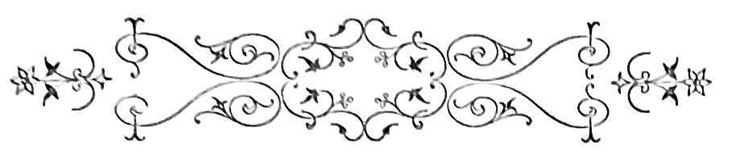
Por detraz da nossa casa, passado o laranjal, ficavam as oliveiras, manchando de pardo o terreno ondulante que uma herva espessa e florida cobria. As primeiras sezões que tive, por um verão de ha quarenta annos, agradeci-as aos calores insupportaveis a que durante uma semana me expuz sem chapéo, sem véstia e sem sapatos. No campo, segundo o costume patriarchal da gente pobre, mal o sino da igreja dá meio dia, o pai senta-se á mesa, defronte da mulher, os filhos á roda, e janta-se. Findo o jantar, a familia levanta-se conservando o seu lugar e cada qual põe as mãos. O pai e a mãi rezam em voz baixa, emquanto os filhos[Pg 222] recitam alto a oração de graças pelo alimento d’aquelle dia. «Muitas graças e louvores sejam dadas ao meu Senhor Jesus Christo, pelos muitos bens e esmolas que me faz, tem feito e tem para fazer em quanto fôr servido.
Padre Nosso...»
Depois, o chefe abençôa os pequenos e manda-os tratar da vida; os mais velhos para o trabalho, os mais novos para a escóla. O mestre que tive era um relapso sem emenda. Dia sim, dia não, gazeta sabida! Que jubilo o meu quando, ao chegar com a pasta e a cantarinha d’agua, ouvia pelo taboado da escóla o sapatear rebelde dos rapazes e as vozes bramirem n’um côro estridente que dizia:
—Não ha escóla, não ha escóla!
Iamos em bandos depois, cantando praça abaixo, aos sôcos, aos empurrões e aos berros.
Uma vida de bezerros circulava nas nossas arterias sadias; uns atiravam com terra á cara dos outros, com pedras e com as pastas. Alguns dos mais graciosos arremedavam o mestre, fazendo carantonhas de estoirar de riso. Vários ainda, dos que moravam perto, iam jogar o botão, arrancando sem piedade as marcas das ceroulas e das calças e os botões das jaquetas e colletes. D’uma vez que appareci sem botões, minha mãi deu-me açoites com tão aspero chinello que nunca mais tive vontade de jogar. Aquella sova explica por ventura o asco que ainda hoje sinto pelos jogos—tão abençoada foi ella!
[Pg 223]
Já n’aquellas idades, que uma alegria embebeda de exuberantes e puras phantasias, armavamos panelinhas de tres, quatro e cinco, para a brincadeira. Succedia ás vezes, que essas pequenas sociedades eram surprehendidas pelo mestre em pagodes reaes. Levavam todos com a regoa ou iam de joelhos todos, conforme.
A minha era composta, do Chico Rato cujo pai era feitor em nossa casa, do Manel da Pomba, um loiro de olhos sinceros, mau como os demonios, e do Zé Estrello, hoje pastor.
Em dias de feriado ou de gazio toca para o olival dançar nos baloiços, fazer caça aos ninhos ou atirar pedrada velha aos telhados das adegas fronteiras.
D’uma vez apanhámos um gato que todas as noites nos ia roubar as crias dos coelhos. Atámos-lhe um baraço ao gasnete, pendurámol-o n’uma oliveira e foi pedrada até que morreu. Eu chorava de pena.
—Oh minha lesma! dizia com desprezo o Manel da Pomba, descarregando ás tres e ás quatro, sobre o pobre animal meio morto.
Mas o que mais nos divertia era o baloiço. Atavamos as arreatas das mulas umas nas pontas das outras; Zé Estrello, que era o mais possante, dava o laço na pernada solida de uma oliveira secular.
As pontas pendentes da corda eram atadas a uma cortiça rija, que servia de assento.
E estava prompto—um! dois! tres!
[Pg 224]
Começava a frescata.
Durante os cinco ou seis annos que serviu aos nossos prazeres, a velha arvore nem por um instante nos trahiu. A cortiça do baloiço era occupada ás vezes por tres rapazes. Quebravam-se as cordas e vinhamos ao chão; a arvore porém nem nos mettia susto, estalando. Boa e velha amiga que parecia feliz deixando-nos pender dos seus ramos metallicos, como esses cachos vivos de que fallam as historias maravilhosas!...
Uma noite, depois da cêa, estando todos ainda sentados á roda da mesa, meu pai fazendo a voz solemne, disse-me que eu estava um homem e precisava cuidar do futuro. Eu tinha uma forte admiração pelos carpinteiros, n’aquelle tempo. A arte com que elles punham branca, nova e polida uma velha tábua com que o meu canivete nada podia!... A habilidade para tudo ajustar e o gosto com que arranjavam os carros com que brincavamos, arrastando carretadas de trigo, pelas eiras—davam-me um pasmo sem limites e um desejo serio de lhes seguir a profissão.
—Eu cá quero ser carpinteiro! disse eu todo grave.
Meu pai bateu na mesa, e o senhor prior que estava presente, riu da minha ambição.
—Estás tolo, ou que diabo tens? disse meu pai de sobr’olho hirsuto, olhando-me.
—Vaes mas é para o collegio, como os meninos do cirurgião, ajuntou o prior com bondade.
[Pg 225]
Eu abri os olhos sem entender, ou tremendo de entender. Ir para o collegio, n’uma terra distante onde ninguem me queria, deixar o Manel da Pomba e o Zé Estrello, e a horta, a casa, o olival, o baloiço e a arvore amiga e tolerante? Que? De cabeça baixa, minha mãi não dizia nada. Puxei-lhe a sáia devagarinho, ferido de grande medo:
—Não quero ir, mãi, não quero ir!
Os olhos d’ella fecharam-se, e aos cantos das palpebras comprimidas, lagrimas silenciosas cahiram, de uma saudade que ainda hoje me entristece.
Tinha já nove annos e parti.
A lembrança que no collegio, á noite e após todo um dia de aulas, que a dureza dos prefeitos me enlutava de amargos desalentos, me vinha mais viva, mais inconsolavel e mais triste, era a da arvore velha do olival, que sem queixa me aturára tanto!
Bons tempos da infancia purpureados de risos e cheios do casto aroma da innocencia—que vos não verei mais!...
No collegio, á medida que os annos corriam e enraizava d’essas leaes estimas que servem para toda a vida, as puerilidades da aldêa apagavam-se-me pouco a pouco, como lampadas sem oleo em templos desertos. Da segunda vez que vim a ferias vestido como um pequeno senhor, de luvas e relogio,[Pg 226] pareceram-me despreziveis as minhas velhas affeições. Fui uma tarde á escóla de chapéo na cabeça e bengalinha de junco. O mestre tratou-me por senhor e sentou-me a seu lado, córando da superioridade desdenhosa que eu mostrava. Os rapazes ergueram-se respeitosamente como se tivesse chegado o commissario dos estudos. Aquella gentalha de sapatos cardados, véstias de saragoça e camisas de pano crú fez-me nojo, e tive humilhação pensando que fôra assim tambem, por tanto tempo. Lá estavam nos seus bancos de pinho o Zé Estrello, o Manel da Pomba e o Rato, de cabello hirsuto, punhos sebentos e livros amachucados, olhando-me com esses grandes olhos dôces que certos cães d’agua fitam nos donos em os vendo a comer. Pouca gente entrára de novo na escóla. De vez em quando, o mestre batia com a regoa na mesa e gritava:
—Ólá do canto! Temos paulada não tarda um instante.
A casa immunda, cheia de cuspo e papeis rasgados, era de uma nudez ignobil.
—Aqui não aprendem francez? perguntei eu com uma superioridade que os meus dez valores na disciplina não justificavam muito.
E n’essa noite á cêa, em quanto meu pai olhava para mim n’um extasi e a ternura de minha mãi orvalhava de lagrimas o casto lenço branco que se lhe encruzava no seio, disse passando a mão pela testa e cabello, como via ás vezes fazer aos de Mathematica, no collegio:
[Pg 227]
—Lá fui á escóla, fazer o meu bocado de troça.
Aos quatorze annos estava um homem, espigado e pallido, com as olheiras symptomaticas da transição de idade. Era bonito e meigo, com mãos de mulher que veios azues reticulavam, como em certos marmores sagrados. As gengivas tinham-se-me descarnado um pouco, fazendo mais compridos os dentes.
Ardia na aspiração intensa de usar cabello crescido e fatos de casimira clara. O uniforme negro do collegio e o cabello á escovinha da ordem, torturavam-me o orgulho de rapazinho elegante. O meu grande desejo era ser externo, fumar e ir ao theatro. Um de Introducção já crescido, cahira uma vez d’um cavallo e a queda fizera-o idolo da rapaziada. Quem pudera tambem gozar de semelhante triumpho!—pensava eu por vezes, sentindo um ciume ardente do heroe. Uma magica das Variedades, onde fomos todos n’uma noite de carnaval, patenteou para mim o amplo scenario de um mundo com que o meu temperamento nervoso já sonhára confusamente. O de Introducção emprestára-me um binoculo, o que me permittiu observar meudamente as decorações, os figurantes e os camarotes. As bailarinas e os deuses vestidos de malha apertada, que lhes desenhava todas as linhas dos corpos, fizeram mo palpitações de arterias e seccuras de garganta. Havia um principe loiro de uma belleza sem rival. Amei-o cá fora, annos depois, quando já perdera a frescura e subira em preço—ai de mim![Pg 228] Era uma actrizita de dezesete annos, bocca vermelha e fallas musicaes, vestida de rapaz. Nada mais gracioso que os seus pequenos pés ligeiros que pulavam ondas, rochedos, abysmos e perigos—tudo de lona, é claro. A sua cinta era fina e flexivel, e as ondulações do seio scintillavam n’uma armadura de galão, ás escamas. Essa noite foi uma febre para mim, impetuosa, allucinada e tremenda. Que revolta, Santo Deus! Estendido no leito do dormitorio, onde seis ou sete dos meus condiscipulos tranquillamente dormiam, eu experimentava dentro de mim o quer que era de um desabamento. Faltava-me o ar e tudo me andava á roda. Que miseravel aquella clausura regulada a sopa, vacca, arroz e duas peras verdes! E dez horas de estudo, madrugadas peniveis, reprehensões, oppressões e malquerenças!... Sim, para além do collegio com a sua monotonia de claustro, as suas apostillas, as quintas, os domingos de folga e a roupa lavada duas vezes por semana, outra existencia auriflammante tumultuava em amores, em pompas, em perigos, e doidas phantasias preconcebidas e logo realisadas. E aquelle principe loiro, aquellas fadas azues, e as apparições que o magnesium idealisava de uma fascinação irresistivel, viviam, cantavam, amavam a seu bel-prazer assim vestidos, lançando á roda o cheiro da carne viva e sadia que chama os famintos de deleites, e faz rolar as libras dos perdularios. O candieiro apagou-se por noite velha. Ergui-me cautelosamente, em camisa de dormir.
[Pg 229]
—Que anda ahi? perguntou com voz de porta-machado o Carvalho, prefeito, que fôra de lanceiros.
Aquella voz enregelou-me, e tornei para traz como se por mim houvesse passado a maldição de Israel. O de Introducção trouxe-me romances.
E a leitura fructificou no campo que a magica das Variedades havia irrigado. A Filha do Parricida—que esplendido!—Já léste? dizia eu a toda a gente. O Filho do Diabo fez-me sonhar. E os Bastidores do Mundo, o Doutor Negro, e os Mysterios de Londres! Todo eu era escadas de corda, alçapões, raptos, personagens mascarados e juramentos solemnes.
No quintal ás vezes, reproduziamos as scenas terriveis que iamos lendo ás escondidas. Fingindo irmos a cavallo, encontravamo’-nos n’um recanto de rua.
—Quem sois? perguntava um.
—A lua romperá, respondia outro.
—Deixai passar, irmãos, fazia o primeiro, e cada qual seguia o seu destino.
D’outras vezes ao chá, um de nós exclamava arremessando ao outro um lenço:
—O senhor é um cobarde!
O insultado erguia o trapo, bramindo:
—Ah, que essa affronta só se póde apagar com sangue. Ámanhã no Bosque de Bolonha, ás sete.
—Lá estarei, senhor!
E iamos dormir em seguida, com o maior socego.
[Pg 230]
Estes devaneios eram positivamente um estado pathologico. Estavamos magros e pallidos, adoravamos as noites de luar e as inglezas de olhos claros e tornozêlo masculo, que nos domingos de inverno viamos sahir da missa dos Cyprestes, loiras e frescas, apanhando os vestidos. Um piano, uma voz de mulher, qualquer namoro e o menor promenor da vida das ruas, era para nós um thema de sentimentalidade. Suspiravamos por cousas ethereas e por aventuras trovadorescas. Estudavamos pouco e tomavamos oleo de bacalhau e ferro em pilulas. Aos quinze annos acabei os preparatorios, e nas ferias grandes que se seguiram, meu pai falleceu. Nas cidades, a morte do chefe da casa, chega a ser um episodio sem consequencias mais altas que o luto da praxe e duas missas rezadas—quando a familia não fica a morrer de fome. Muda-se logo de casa por via de regra, os filhos alargam a esphera dos seus habitos livres, e fazem acquisição dos vicios que não tinham. Em quatro mezes, o fim de cada membro da casa destroncada é comer alegremente as rendas que um trabalho agro por ventura accumulou, no espaço de uma existencia de acerrima labuta. O campo porém, conservando muitas das virtudes patriarchaes, dá a esta perda um caracter de fatalidade sem conciliação. A viuva envelhece de lagrimas e estiola como uma trepadeira queimada; um dos filhos se é homem, emprehende e continúa a tarefa do pai, adquirindo nos habitos, no amor e no respeito da familia o mesmo grau de fervor cego e[Pg 231] de obediencia dedicada. Senta-se á cabeceira da mesa nas refeições, dirige os trabalhos do campo, recebendo as rendas, ordenando as colheitas e levantando-se mal o buraco luza. Mas o seu governo é todo nominal. Quem alli impera, quem a tudo preside, quem julga tudo e tudo ordena, é o velho, o marido, o pai, o outro, querido phantasma evocado a toda a hora e a proposito de tudo, cujo sudario até, vem estender-se de noite, n’uma alvura de nebrina a encher de fecundante orvalho as vegetações que elle proprio plantou. Quando meu pai fechou os olhos, eu estava bem pouco apto a retomar o arado que a sua mão exhausta deixára cahir. Era franzino e branco, de um temperamento irritavel á menor emoção, medroso, phantasista e indolente, a quem as duras profissões repugnavam como uma vileza, e a idéa da vulgaridade enchia de um terror supersticioso. Minha mãi chorava a toda a hora com dois irmãositos ao collo. A casa silenciosa parecia um tumulo profanado. Pobres como eramos, se um dia não velassemos a horta e o olival, a miseria bater-nos-hia á porta. E justamente quando eu ia entrar na Polytechnica!... Não sei como aquelle tempo passou. Ha coisas que até em idéa são sinistras. Lembro-me que perdi o anno e amei minha prima Martha, uma loira diaphana que viera para nossa casa, da herdade em que nascera.
Esse amor que era dôce, sincero e casto, deu a nota mais alta na escala romantica d’aquelle periodo da minha vida. Envergonho-me de o dizer, mas[Pg 232] lemos Paulo e Virginia, Raphael, e o Atala em commum, ella vestida de branco porque eu lh’o pedia, eu de cabellos crescidos e grande lustro de pomada nas poupas.
Martha com a sua natureza contemplativa e triste, propendia áquelles lances patheticos da minha imaginação de collegial. Era de uma simplicidade dôce e de uma serena belleza, que os seus olhos azues enchiam de esplendores religiosos. Em ella olhando para mim, eu córava. Toda a minha ambição agora era fazer-me bonito e cidadão para me impôr á sua ingenuidade. Que primavera a d’aquelle anno! Depois do jantar iamos de braço dado através dos laranjaes em flôr, n’um tapete de campainhas, fumarias e malmequeres, ao rumor das noras e sentindo cahir a agua nos tanques da horta. Meus irmãos corriam adiante, com chapéos de palha, fazendo chiar os seus carros de pinho. Nós devagar, sentiamos no aroma nupcial das arvores o quer que era de benção que vinha em golfadas, sobre nossas cabeças. E debaixo da velha oliveira secular que já me protegera os brinquedos de garoto e cujas ramarias artisticas, de tons cinzentos, abriam ao sol o seu toldo amigo, o nosso amor efflorescia tranquillo como se de cima o olhasse, das folhas e dos ramos, o bom Deus de bondade com que os pequeninos sonham a sorrir.
[Pg 233]
Aos vinte annos o meu espirito soffrera mais uma transformação. Creára amor pelo estudo e sentira a necessidade de um ponto de vista em sciencia, que lhe permittisse sugar dos seus asperos labores um certo numero de noções praticas para a vida de cada dia. O curso de sciencias naturaes conseguiu destruir todo o mundo romanesco e labyrinthico que eu idolatrava em arte, dando-me um certo gosto a final pelos estudos de observação. Comecei por queimar todos os romances inverosimeis dos snrs. Terrail, Reynolds, Feval, Montepin e Zaccone. Depois executei os snrs. Feuillet e Feydeau; em seguida fui-me aos poetas e vendi-os a oitenta reis o volume—por escarneo. Nas ferias herborisava com um amor de que um anno antes me julgaria incapaz; partia de manhãsinha levando os cadernos de dissecação na bolsa de caça, e um estojo de tubos de vidro munido de compridos alfinetes no bolso—para as collecções de insectos. Ao cahir da noite voltava com duas perdizes á cinta e alguns coelhos, os tubos cheios dos coleopteros caçados, uma multidão de plantas curiosas esmagadas no album.
Minha mãi que não comprehendia o meu interesse pelos bichitos, muita vez me olhava surpreza, vendo-me estar horas esquecidas com um aptero no alvo de um microscopio de Raspail que eu adquirira[Pg 234] no leilão de um classificador. Como se ergue lentamente o store colorido de uma janella, através de que um panorama vivo se enxerga, assim os estudos de analyse erguiam de sobre o meu cerebro as phantasias bizarras e piegas permittindo-me palpar e surprehender a natureza no drama da sua gestação colossal. Longe de me deseccarem as faculdades creadoras e as aspirações saltitantes da imaginação, aquelles trabalhos minuciosos, pacientes e nem sempre coroados de exito, davam-me ás vezes concepções delicadas, de larga elegancia artistica. Adquiri na phrase uma precisão incisiva, de pensador.
E cheguei a classificar um homem ao primeiro golpe de vista, como fazia a um insecto posto no foco de uma bella lente de crown-glass. A aridez das primeiras tentativas não me arrastou a essa tristeza morna e aborrecida de certos padecentes de dyspepsias chronicas. Por esse tempo era eu um grand gaillard vermelho e forte, com mãos solidas e afeitas indifferentemente ás argolas do trapesio, ao cabo da enxada e aos escalpellos do amphitheatro. Comia, como vulgarmente se diz—como um alarve, tinha o sangue vivo e sadio, casto além d’isso. A residencia no campo, após a morte de meu pai, operára a metamorphose do individuo anemico, secco e propenso aos delirios da imaginação voluptuosa, no util primate de sangue quente e respiração pulmonar, capaz de derrubar a Sé com um socco e ser levado á morte pela mão de uma criança.[Pg 235] A reclusão dos livros reporta o homem a uma simplicidade dôce e austera de habitos e emoções, e fal-o bom depois de o haver feito grande.
Nenhum tonico mais efficaz á saude do espirito que a saude do corpo. Uma enformatura de athleta tem de ordinario um rouxinol por alma. De fórma que eu sentia a bondade extravasar de mim como nos tempos biblicos o oleo de naphta da urna da santa mulher, que ajoelhada ungia os pés de Jesus. Os violentos exercicios em que o esforço muscular se despende, a carreira, a gymnastica e a caça, faziam a minha paixão dando-me o culto da minha propria fórma. Erguia verticalmente os dois braços, tendo em cada mão sentado um dos meus irmãositos—cousa que assombrava o Zé Rato e fazia contentes os garotos. Diante dos grandes espectaculos em que a natureza expende a mãos plenas o jogo icaro das suas forças harmonicas, a minha alma tinha fremitos d’azas como as andorinhas que vão atravessar o oceano. A vacillação fatalista do periodo lamartmiano fôra substituida por uma comprehensão logica dos factos, por uma tranquillidade honrada á idéa do futuro e pelo testemunho da mais sã consciencia. Entrei a fazer religião do trabalho, o que me permittiu não pensar mais em Deus, tendo-o sempre no coração. As mulheres eram concordes em que a minha belleza era superior á minha amabilidade. Uma senhora achou-me uma noite a conversação de um lente. E algumas diziam de mim:
[Pg 236]
—Pretencioso!—porque lhes não fallava das locaes amorosas e das revistas de modas.
Comprehende-se que o meu enthusiasmo puritano por tudo quanto era grande, não sobrasse para o espartilho das serigaitas que se me agitavam no caminho.
Assim modificado, tinha agora o mais completo desprendimento pelo que se chama gozar. Apagára-se-me o ideal pelintra de muito folhetinista imberbe, que consiste em ser comprimentado á porta da Havaneza por tres burguezes que passem, mostrar todos os invernos tres pares de calças novas sobre dois de botas velhas, e um plastron vistoso n’um seio tuberculado.
A ostentação e a exterioridade enfastiavam-me como certos cheiros de acidos vegetaes. Odiava em geral o ruido e o luxo, não achando digna de um homem serio qualquer das languidas que nos passeios e nos theatros via desfilarem, monotonas e sorvadas, por diante de mim. No seio dos meus papeis ou na intimidade flagrante da natureza em festa, sentia-me outro homem, respirando saudavelmente e digerindo ás mil maravilhas; uma alegria penetrava-me com essa entoxicação anodina do gaz hilariante, nos organismos nervosos, e eu crescia e revigorava sentindo a vida como um beneficio sem preço. Foi durante esse tempo, o mais laborioso, o mais infatigavel, o mais util e o melhor de toda a minha vida, que pude realisar as collecções de insectos que hoje pertencem á Escóla Polytechnica e[Pg 237] me valeram os emboras dos grandes trabalhadores da Europa, e estudar quasi completamente a flora continental que Brotero deixára lacunosa. N’estes trabalhos depurára-se a minha sensibilidade ao extremo de me commover perante uma bella arvore ou ao cabo do estudo de qualquer complicado coleoptero. Um individuo vegetal captivára o meu amor ardente, apaixonado e ingenuo. Era ainda a oliveira que desde a infancia me offerecia a sua sombra benefica, a sua ramaria frondente e a enorme corpolencia secular do seu tronco. Que grandeza, a d’esse gigante que uma especie de bondade envolvia e divinisava!...
Aos cincoenta annos tinha os cabellos brancos e a pelle rugosa. Minha mulher, de compleição doentia dera-me filhos sem saude e de sensibilidade estranha. Eram pequenos pallidos de grandes olhos ardentes e mãos febris, frageis e curiosos, cujo futuro me fazia tremer.
Estava cançado e velho. Toda a vida sentira pelo dinheiro um desprezo sem limites, não lhe dando a honra sequer de o accumular. Perdera a vista do olho direito, aos trabalhos do microscopio. Era mais pobre que no tempo de meu pai—tinha apenas de meu o olival. Para economisar, dirigia eu mesmo os trabalhos do campo e andava vestido de saragoça. Ás vezes, vinha-me o remorso de não[Pg 238] ter alcançado uma fortuna para essas pobres crianças, que a perpetua contemplação do mesmo panorama parecia enlutar de melancolias negras e de presentimentos funestos. Pouco a pouco, á medida que os annos me polvilhavam de neve os cabellos, ia experimentando uma irritação surda pelo meu passado laborioso, mas esteril d’essa cousa vil e preciosa chamada moeda. Não tinha senão despezas; lucros, raros! Então reneguei da heroica abnegação de outros tempos, tornando-me vulgar, macambuzio e cheio de admiração pelos lavradores opulentos da visinhança, que recolhiam vinho ás adegas e trigo aos celleiros. Os filhos d’elles espesinhariam talvez um dia os meus filhos, vingando a imbecilidade dos paes da orgulhosa superioridade com que eu os tratára. Os filhos d’elles seriam felizes, cheios de confortos e prazeres, com a faculdade de estudarem onde bem quizessem, e de fazerem fortuna como bem lhes parecesse. E os meus, mal enroupados, doentios e invejosos—quem sabe!—se conhecendo um dia a minha historia maldiriam a intransigencia do meu caracter e a pouca solicitude com que lhes tratára dos interesses!
Os meus dias então eram levados em percorrer o olival, no calculo dos litros de azeite que me renderia a colheita. Que desalento aquelle meu! As arvores não carregavam todos os annos: enchia-as de pragas, e maldizia a minha vida.
A oliveira secular sómente, comprehendendo a minha situação e adivinhando a angustia d’aquelles[Pg 239] passeios solitarios, procurava com fructos abundantes compensar o modesto tributo que as outras arvores tão custosamente me pagavam. Fôra para mim a eterna mãi affectuosa, de cujos ramos pendera criança, a benevola confidente que cobrira do seu docel de folhagens o meu amor por Martha, o esplendido e victorioso vegetal diante de que o meu extasi de botanico tantas e tamanhas vezes tinha exultado. O amor que eu lhe votára soffrera as quatro phases de todos os amores da vida humana, em transigencia sempre com a orientação do caracter e com o progredir dos annos. Fôra primeiro, o amor de criança incoherente e doido; fôra mais tarde o amor de adolescente, idealista e reveur, representativo da idade em que o homem desaggrega da alma as crenças innocentes e começa a participar da influencia dos primeiros instinctos masculos. Transfeito no amor de sabio elevára-me até regiões altivolas.—Depois, no inverno da vida, aquella emoção archangelica primeiro, impregnada de poesia radiosa depois, e tornada sublime por fim, decahira no vil egoismo que mais prefere aquillo que mais rende, impressão sem grandeza e sem ideal, derradeira efflorescencia da alma obcecada pelos interesses, pelas amarguras e pelas oppressões!
[Pg 241]
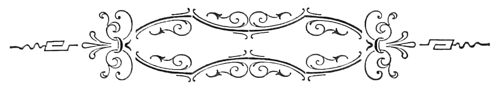
A contessina sentiu-se triste n’essa manhã, aborrecida da quietação languida do seu boudoir, da falsa pompa de vegetação dos seus salões-estufas, da vida contemplativa dos aquarios de crystal-rocha, da atmosphera perfumada dos salões e das alcovas, onde o oxygenio vivificante se corrompe, por entre a subtileza das exhalações de opoponax e verveine, contidas nos frascos bohemios, todos facetados e scintillantes. Mandou pôr o coupé, um pequenino coupé estofado de carmesim, grandes fivelões de madre-perola floreteados; escolheu um vestido claro, de um estofo liso, grandes laços vermelho e branco, apertado em longa cuirasse, com uma cauda aristocratica, que deixava no ouvido um dôce frou-frou inebriante.
[Pg 242]
E com um gorro de pennas, de fórma excentrica, uma tira de gaze a meio rosto, atada na nuca, penteado simples, em que destacavam contra a luz uns pequeninos anneis dos seus cabellos castanhos, sobre a fronte de castidade sonhada, com uma camelia branca no seio, a contessina saltou para o carro. Era sabbado, nos dias lucidos de maio. O cocheiro teve ordem de seguir ao longo dos boulevards, atulhados de gente activa que tumultuava nos passeios, nos armazens, nas casas de modas e nos ateliers, vivamente, alegremente, raça de gigantes e de artistas que ia fecundando as industrias com o poder da sua violenta actividade.
Na bolsa, á porta, junto do guarda-vento, viu o conde de M. que argumentava com o judeu W. sobre questões de fundos. Mais adiante comprimentou a joven C. que apartava n’um livreiro as ultimas publicações de critica e de esthetica. Parou no atelier de Carlo Borgio, o pintor de quinze annos, que fizera ruido com um quadro impressionista, repudiado pelo jury de uma exposição artistica em Roma. Encontrou lá a fina flôr do mundo culto da cidade: o medico F. a quem um trabalho sobre doenças cardiacas abrira as portas das mais celebres academias europêas; Henrique de R. o folhetinista mais delicado da Italia; Raymundo Conti o critico por excellencia que dictava a lei do bom gosto, com um bom senso admiravel, e mil personagens celebres do grande mundo illustrado e do grande mundo elegante.
[Pg 243]
O pintor tinha olheiras—a contessina reparou n’isso—não apartára o cabello ainda e o seu traje de manhã, cheio de negligencia, o seu largo e branco collarinho decotado, deixavam adivinhar pela curva do seu pescoço forte e levemente sanguineo, côr de rosa claro, um corpo esculptural de athleta, vigoroso e saudavel, creado á larga no puro ar balsamico dos campos, ante a vastidão contemplativa do mar. Não havia no atelier nenhum quadro novo. Apenas sobre o cavallete, um cartão esboçado em traços. Carlo fumava cachimbo: a contessina achou-o por isso detestavel, e sahiu sem lhe haver sorrido como costumava. Sem ella reparar, a camelia branca que levava esfolhou-se ao sahir, maculando a alcatifa escura do atelier com as petalas immaculadas, brancura lactea, cheia de pequeninos veios caprichosos, como as ruas do mais intrincado labyrintho.
Deixou-se cahir outra vez nos cochins do coupé, e mandou rodar para a galeria Medicis, no extremo occidental da cidade.
Ia fatigada, nervosa e indisposta. Quanto vira lhe pareceu vulgar e indigno da sua attenção. Mirou no espelho que ficava defronte, atraz da tábua do cocheiro, a sua flexivel figura, magra e branca, o seu rostinho fresco, o seu bello perfil raphaelesco, de uma finura, de um contorno verdadeiramente singulares pela sua pureza, pelo seu conjunto, a um tempo audaz e timido. Uma ruga imperceptivel se avincava verticalmente na sua testa. E[Pg 244] impacientou-se, achou que estava feia, trigueira, mal vestida. Então inclinou a cabeça para traz, sobre os cochins, deixou pender o corpo tambem, com um abandono, uma morbidezza tentadoras, estendeu-se quasi no coupé, indolentemente, sem vontade, sem palpitação e sem coragem, com desejos de se espreguiçar, de sonhar coisas extraordinarias e phantasticas, de correr aventuras sobre o mar, n’um cuter ligeiro pintado de branco, com jovens marinheiros escocezes, loiros e athleticos, de uma candura virginal, que cantassem as arias das montanhas, balladas suaves e frias, onde a manhã rompe e os gallos cantam, e se ouve bater horas o sino do castello em ruinas, ao descer da velha ponte levadiça, quando o couraceiro phantasma recolhe de lança ensanguentada, no meio dos córos das victimas.
E sob o dominio da sua aurea phantasia cerrou os olhos e começou a viver n’aquelle devaneio que interiormente ia bosquejando. O coupé parou emfim, desceu lesta no atrio de mosaico e penetrou nos salões abertos á curiosidade dos amadores.
Sobre os cavalletes, sobre degraus e pelas paredes, patenteavam-se os capi-d’opera dos grandes mestres da Renascença, do Perugino, de senza error, de fra Angelico, de Sanzio, do Buonarroti, do Ticiano, do Tintoreto, de Dominiquino, de Julio Romano, dos Carraches, de Montagna, e todos os primores das escólas allemãs e flamengas: scenas[Pg 245] de interior, trechos de ménage e cervejaria, as paizagens realistas dos hollandezes, de céos humidos e flocos de nevoeiro, onde o verde alcança todas as gradações vegetaes, e o sol como uma braza mettida em oleo, se extingue vermelhamente, entre fumaradas que passam. Roçagando a sua cauda elegante, a contessina passava sem parar diante d’essas soberbas telas, que resumiam todo o ideal de mais d’uma raça, demarcando as tendencias e aspirações, um pouco modificadas havia muito, na evolução social do ultimo seculo. A cada passo, lhe sorriam dentro de molduras de pau-rosa, de prata, de sandalo, bronze ou talha, uma madona casta, com o Bambino nos braços, um martyr amarellecido e chagoso, uma Venus concupiscente e nua, um Christo dolorosamente livido, atado ao madeiro da ignominia, um guerreiro sob a armadura scintillante das grandes idades heroicas. E movendo o seu leque de frias plumagens, todo constellado de scintillações preciosas, com o binoculo d’ouro na pequenina mão calçada em peau de Suède, o olhar distrahido passeando sobre os aspectos sem os distinguir nem os fixar, a contessina perdia-se entre os amadores officiosos, entre os artistas obscuros de ambos os sexos, que tiravam copias, vestidos nas suas tunicas talares de atelier, o olhar attento e perscrutador cravado nos modêlos, com uma concentração nervosa e extatica. Não tinha já admiração para queimar, como um perfume enervante, ante tamanhos primores accumulados. Desde pequenina[Pg 246] conhecia aquellas magnificas pinturas, e escutára as exclamações de uma admiração mais ou menos convicta, soltadas pelos entendidos ou pelos pedantes, ao longo dos vastos salões esplendentes da galeria. Mas a verdade é que os modêlos classicos, as sacras familias de colorido eclatant, sempre na mesma pose e compostas das mesmas figuras, as scenas biblicas repassadas de unção convencional e mysticismo fradesco, não iam direitas, pela sua maneira e pela sua idéa symbolica, ao seu coração modernamente educado de artista, á sua alma expansiva de meridional, tão cheia de amor pela verdade e tão penetrada da seducção exquisita das pompas de uma natureza luxuriante e escorrendo de côr, e dos caracteristicos, habitos, e indoles pittorescas de uma raça vigorosa, cheia de culto, de fórma e de ideal. A sua predilecção artistica era alguma coisa como o aroma exhalado por quanto contemplára em viagens, estudára em bibliothecas, e sentira em convivencia, aroma que rescendia em espiras balsamicas e suavissimas, n’uma palpitação de borboleta irisada, n’um hausto de liberdade sublime, extraordinaria e sonora. Comprehende-se que o seu temperamento lhe exigisse uma arte que se pudesse admirar sem profanação, e se pudesse amar sem remorso, que fallasse ás suas exigencias e aos seus caprichos, sem incluir a recordação dos velhos martyrios, apotheoses entre seraphins e nuvens, mysterios idiotas e theologicos, em que se contrariam por principio de carolice,[Pg 247] as leis mais logicas e simples da sciencia, da creação e da especie.
E n’uma disposição rebelde, fatigada das saturações da côr, das exuberancias systematicas de musculatura, das garridices da fórma, da abundancia de pinturas, voltou para traz antes de chegar ao fim, entrou no carro cheia de spleen e abatimento, e mandou rodar para casa.
Atirou o chapéo mal entrou no boudoir; a camareira trouxe-lhe o roupão de linho de Manchester com que costumava trabalhar; e envolta no tecido de listas graves a fresca figura de uma pallidez serena, foi tomar assento no seu atelier, diante da estatua de marmore branco, que começava a sahir ainda indecisamente, da bruta massa de pedra, ferida pelo seu sinzel phantasista de uma graça e de uma originalidade captivantes.
Havia tempos que trabalhava n’essa obra, e com que amor!...
A vida das outras mulheres era-lhe irritante, apertada n’um pequeno cinto de conveniencias e vulgaridades. Pouco conhecera da familia, não sabia admirar o que nas mães se chama uma missão heroica, e nas mulheres em geral, os deveres proprios do sexo. Tinha percorrido o mundo sósinha. A quantos a amaram n’esse periodo, sorrira sempre. Á sua natureza excentrica appareciam deformados[Pg 248] em esgares ridiculos, os galans modêlos. Fatigava-se depressa. Demais tinha um intuito finissimo d’artista, altivo de mais para aceitar lugares communs. Mas havia na sua vida este episodio—uma noite, n’um circo de Napoles, vira fazendo equilibrios n’um globo, um rapaz vestido de meia, agil e elegante. Nunca pôde esquecer aquella figura que surgia pela primeira vez á sua imaginação, como efflorescencia rara, sonhada entre incoherencias de febre.
Procurou depois, mais perto, essa soberba organisação que fizera na sua sensibilidade como um lampejo instantaneo, a fascinação sombria e fatal do jettatore. Pouco a pouco, a sua mente apoderou-se d’aquella imagem fascinante, correcta como não vira outra, juvenil como não sonhára igual. Todas as noites ia ao circo vêr trabalhar o equilibrista: dominava-a a soberba attitude do funambulo, livre, impetuosa e colossal. N’ella sentia-se de facto, toda a opulencia d’uma seiva que irrompe, em circulação vigorosa e regularissima; todos aquelles fortes membros elasticos, flexiveis e aptos aos movimentos mais contrastantes, se sentiam palpitar de saude, de vida e de belleza, rhythmo sonoro, cheio de presteza e propriedade.
E aquella appetitosa figura de adolescente trigueiro, os olhos esmaltados de uma serenidade de deus, plastica irreprehensivel e firme, apoderaram-se da contessina, com um impeto, uma violencia que tocavam os paroxismos da loucura.
[Pg 249]
Começou então uma existencia nocturna, roubada de alegrias, cheia de sobresaltos, terrores e prazeres. Zampa, o funambulo, levava os dias cahido entre garrafas de cognac, e fumaças de charuto. Além d’isso, tinha gordos pedidos de dinheiro, teimosias de parasita e surdas raivas de vadio. Era exigente como um facchino e brutal como um barqueiro: a devassidão exasperada que busca viver fóra do tedio adquirido por longos dias de desordem, e mediante phantasias realisadas á custa de grandes despezas. Ella adorava-o; ás vezes tinha medo.
Sentia-lhe as mãos grosseiras, callejadas do trapezio, a voz rouca, o halito alcoolisado, um cheiro a charuto que se mettia pelas mucosas dentro. Gostava porém de o agarrar pela cintura, de lhe pender do pescoço nu com todo o peso do corpo, de se entregar com um grande soluço dilacerante, vergada para traz, cabellos soltos e a tunica rasgada de alto a baixo, com a folha d’um punhal. E era com uma delicia inexplicavel, aguda e cheia de fremitos, que lhe tirava a capa, quando Zampa chegava do circo, ainda com os fatos da arena, couraçado na sua belleza superior e intangivel.
O espectaculo de um corpo fortemente creado, embriagava-a de uma aspiração criminosa e de uma animalidade fatal: queria-o! Algumas vezes Zampa não vinha, e as horas da noite deslisavam para a pobre leviana em supplicios atrozes e vacillações eternas. Então sahia a procural-o, só, envolta[Pg 250] n’uma d’essas mantas de côres vivas, que Livourno produz, um punhal no cinto e pallida como uma esperança pisada á beira d’um esquecimento. Já podia entrar nos lugares lobregos onde tilinta o dinheiro dos vicios cobardes, para arrancal-o do jogo, embriagado e vil, fallando uma aravia brutal. Os convivas faziam-lhe toasts, cobriam-na de sarcasmos, prenhes de insolencia de bordel. N’estas luctas supremas, parecia que a sua paixão se avigorava; queria explicar a si mesma por que razão esse palhaço a dominava e a prendia, fazendo d’ella uma escrava; reflectia então insurgir-se contra semelhante envilecimento, readquirir a sua liberdade de outr’ora, a sua franca alegria de criança: impossivel! Quando tratava de expulsar de si o ebrio, com desprezo vehemente e indignação explosiva, como se levantava diante d’ella a esplendida figura de archanjo que era o seu desejo, o seu gozo, o seu deslumbramento e a sua perdição; e era sempre o mesmo olhar placido que ella contemplava, a mesma carne vigorosa, de uma tonalidade opulenta, a mesma linha soberba do perfil, a mesma postura de academia, altiva e forte, como a de um gladiador que triumpha, na arena onde espadana o sangue dos martyres e se espedaçam corpos frementes de victimas obscuras e tragicas. Em outros dias, á força de supplicas, Zampa ficava: era uma festa. Sahiam de carruagem para o campo, lá passavam a tarde no meio da poderosa efflorescencia dos arbustos, no silencio das villas brancas, em torno de[Pg 251] que se alastravam vinhedos, sob os nogaes de um verde quente ou entre perfumes acres de pinheiros que gemem o seu cantico desolado. Jantavam sobre a relva, como bons lavradores: elle não bebia então. Tudo em roda estalava de risos metallicos, finamente timbrados; era bom viver assim. N’aquella affinidade de sensações tranquillas, a alma d’elle parecia irradiar uma delicadeza poetica. A contessina descobria-lhe predilecções de paizagem, observações sentidas, fortes destaques de inspiração, uma docilidade de caracter, mesmo. E era feliz, esquecida das angustias de outras horas, com a mente povoada de sonhos de ouro. Se fosse assim sempre! Se fugissem para um paiz remoto, o Oriente, n’um mosteiro em ruinas!... E figurava minaretes tartaros, as grandes tulipas das cupulas, rendas frageis dos porticos arabes, o céo profundo e calido, onde a miragem inverte os panoramas, palmeiras seculares, erguidas entre casas quadradas como dados colossaes, albornós brancos, barbas ponteagudas e tez parda—como nos desenhos de Bida. Ou n’uma herdade perdida no seio dos Appeninos, longe do bulicio e á beira d’um lago, n’um chalet vermelho, entre arvores. E pelas madrugadas roseas iriam tomar os leites perfumados de turinas brancas; os sinos das ermidas tocariam o Angelus, no meio d’um côro de passaros; a natureza seria de uma sonoridade crystallina, perlada de orvalhos frescos e calices de jacinthos, côr de rosa.
O seu lyrismo abstrahia-se em idealidades azues,[Pg 252] em grandes e nebulosas viagens, em que destacava o grupo formado por Zampa e por ella—um pelo braço do outro.
Um domingo, elle não voltou. No dia seguinte, encontraram-no apunhalado na casa de jogo. Foi quando começou a estatua. Dentro de poucos mezes, o marmore desbastado, realisava a creação mais lucida que se possa sonhar. Era uma obra prima realmente, esculpida com verdade profunda e inspiração fogosa. Sobre um plano inclinado, via-se um grande globo polido, retido a meio caminho do declive. Sobre o globo, n’uma posição agilissima e graciosa, o funambulo com os braços abertos, as pernas quasi unidas, a face risonha, juvenil e um pouco ironica, procurava conservar resolvido o seu problema de equilibrio pelo maior espaço de tempo possivel: e toda aquella obra resaltava de vitalidade, de arrojo, e de elegancia. Uma lufada de genio passára por alli. Quasi se esperava vêr oscillar o globo, moverem-se os pés de Zampa, erguer-se um pouco o travessão de balança que elle fazia com os braços para deslocar imperceptivelmente o centro de gravidade a fim de o fazer subir ou descer, andar ou desandar, dentro da base de sustentação, e vir descendo, descendo conforme quizesse, pelo declive geometrico e dôce do plano obliquo, sempre sobre o seu globo humilde e no meio das ovações estrepitantes de alguns milhares de espectadores. Era Zampa tornado estatua; as mesmas soberbas linhas, a mesma irreprehensivel musculatura, a perna firme,[Pg 253] retesada e direita, de uma elegancia unica, os fortes encontros, a larga espádoa de heroe, de uma curva severa, o braço sem grandes nós articulares, o pulso athletico e ricamente modelado, um peito leonino em que subiam ondulações viris de seios, a cabeça um primor de sinzel e um prodigio de distincção, alta, cabellos revoltos, a audacia dominadora, olhando em face a turba presupposta, com o ar superior de quem se faz admirar.
Era Zampa. Ninguem que o tivesse visto na arena podia desconhecel-o.
Ao acabar o trabalho, quando n’uma contemplação palpitante ergueu os olhos sobre a sua obra, o sinzel cahiu-lhe das mãos e os soluços estrangularam-lhe a voz.
Toda a sua alma estava alli, como talvez nos primitivos dias do mundo, a alma do bom Deus, nos corpos dos primeiros homens creados. Nada fôra omittido: era elle, bem o estava vendo, risonho e vivo como outr’ora, os labios quentes de beijos e o olhar scintillante de raios. Bem o estava vendo! Os dias que mediavam entre a morte e a resurreição d’aquelle homem tinham-lhe centuplicado o amor, tornado candente o desejo e calcinado as ultimas fibrilhas de receio. Era sua, era d’elle para sempre. Passariam diante de todo o mundo, abstrahidos[Pg 254] um no outro, com o olhar errante nas estrellas.
E de rastos no xadrez do atelier, cabellos soltos em espiras procellosas, o olhar faiscante de loucura, semi-nua, agonisante, branca, cingia com os braços a sua obra immortal, tentando aquecer com a lava dos seus beijos a gelida indifferença do funambulo de marmore.
Emfim acharam-na cahida aos pés da estatua, abraçada ao globo como a serpente dos retabulos da Virgem, um sorriso divino de bacchante nos labios emmurchecidos. Morrera.
Uma palavra de confidencia. Não procurem na sociedade a contessina: seria ridiculo! O amor moderno, despido dos atavios romanticos e das consagrações immoraes, tornou-se fóra da familia, o que é na sciencia e referido ás outras especies animaes: a excitação fatal, regida por leis physiologicas, que attrahe e liga, dois sêres da mesma constructura organica e da mesma conformação anatomica, posto que de sexo differente. O mesmo que para os cães, que para os elephantes, que para os peixes, que para as aves, que para os insectos: instincto, exacerbado na raça humana talvez, pela depuração do systema nervoso. Degradante porém n’este caso, por improductivo. Actualmente ha só[Pg 255] duas mulheres: a da familia, a mãi, a esposa, a filha; e a da viella. Esta ultima, comprehende-se, se chega a amar um funambulo, ama-o caninamente, pela sensação que lhe arranca. Se o funambulo morre, esse amor despertado, não transforma nunca a cocotte n’uma artista, qualquer que seja o seu grau de educação, de gosto e de talento.
Se quizerem vêr passar por instantes a contessina, tal como a sonhamos, vão a um atelier onde trabalhe um pintor de genio, e onde se curve um esculptor sobre a pedra ou sobre o tronco, ou observem um poeta que febrilmente escreve os alexandrinos do seu poema. Em qualquer dos tres, poeta, pintor ou esculptor, pousou o beijo da contessina. Não é uma mulher, meus caros, mas o sopro abrazado que passa e se extingue, depois de haver creado tambem, o seu funambulo de marmore. Chama-se a Inspiração. Devemos-lhe o machado de silex e o desenho rudimentar gravado em certas cavernas sepulchraes; viveu já na cidade lacustre, onde fazia collares de dentes de carnivoros para ornar o peito dos vencedores; passados seculos, ergueu a Acropole grega, o Pantheon e os circos, fez o Colliseu e a Capella Sixtina; tudo quanto é grande alevantou-o ella, amou os artistas da Renascença, os architectos piedosos da meia idade, levou ás fogueiras os apostatas, guiou Luthero, descalço e faminto, através da Allemanha, impoz Savonarola na Italia, e Christo obedecera-lhe muito tempo antes. Na sciencia, da mesma fórma que na religião e na[Pg 256] arte, tudo lhe pertence e tudo lhe obedece; foi amante de Archimedes, de Newton, Laplace, Tyndal, Cuvier e Owen, e sempre a mesma frescura de tez e a mesma suavidade de fórma, a mesma scintillação no olhar e o mesmo braço immortal e correcto, que rasga no incognito um sulco palpitante e magnifico.
1877.
[Pg 257]
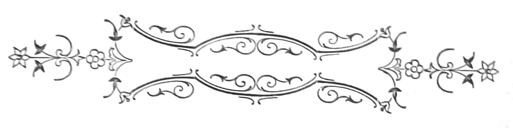
Ficava o convento a meio das vinhas, n’uma larga planicie florente e verde, em que as oliveiras punham a tristeza biblica das suas comas cinzentas, como de zinco oxydado.
A léste corria o enorme espinhaço da cordilheira, alteroso e pavido, cuja nudez aggresiva de linhas se coloria de manchas plumbeas e vermelhentas, de que os penedos destacavam selvaticos, lembrando ruinas de monumentos celtas. N’um campo de visão esplendoroso e infinito, alargava-se para o sul o horisonte azulado na massa d’ar, semi-circulos de planicies que mais e mais se iam perdendo no esfumado das exhalações longinquas.
[Pg 258]
Do campanario da igreja, o olhar que se alongasse, transpunha d’aquella banda livremente, a fronteira de Hespanha, no seu vôo silencioso de andorinha inquieta.
Em torno ao velho casarão, a ruina dos muros da cerca, uma alta cruz truncada, e dois ou tres arcos d’um antigo aqueducto de abastecimento, assignalavam a expulsão violenta dos pobres capuchos, primeiros senhores da casa até ás luctas da ultima guerra civil. O edificio e a cerca, vendidos a um fidalgarrão da Vidigueira, derruiam vagarosamente, á mingoa de reparos. O fidalgo arrendára tudo, abandonando a provincia onde só voltava de anno a anno para vender herdades ou hypothecar pastagens e azinhaes. Na cerca, os amplos tanques de pedra estavam desconjuntados e seccos, cobertos de cicutas viridentes; a canalisação atulhava-se de raizes e moitões de lôdo das ultimas enxurradas; cahira o aqueducto; e á bôcca lobrega das cisternas, as figueiras bravas irrompiam alongando os troncos brancos, em que rebrilhava o verde de largas folhas de recortes duros, como antigas faiences de Coblentz. Debaixo das nogueiras, cujo aroma rescendia morno a cada respiração da aragem, torciam-se as heras nos bancos de granito, estendendo tentaculos no seu deboche de vegetação verde-bronze, e subindo como um desejo, pelas fibras das arvores colossaes. Uma estatua de apostolo martyr cahira de encontro a um castanheiro enorme, cujas palmas faziam cupula sobre essa cabeça vergada,[Pg 259] de granito. Ao longo da ribeira, os platanos e as faias postavam-se como avançadas, n’um surdo murmurio intimo de seiva. E para além o laranjal espesso, vergado até abaixo, alargava-se embalsamando o ar, onde as pombas fugiam no azul pallido, como almas, que purificadas penetram os hombraes serenos da bemaventurança. O convento, de paredes cinzentas, telhados cobertos de herva e janellinhas de cellas, desamparadas como orbitas sem olho, pesava na paizagem viva, com um ar de mendigo que esmola, á beira dos caminhos. Acima da grande massa oblonga de muros, fortalecidos a gigantes de cantaria, as duas torres sem cupula, encimadas de pequenos obeliscos de alvenaria musguenta, de cujas cristas o furacão cuspira os cataventos, erguiam-se tristemente, com um desenho tosco e primitivo. Nos claustros, o feitor da propriedade estabelecera tulhas do lagar de azeite, cobrindo de taipa uma das faces do quadrado de arcarias, rasgadas sobre o pateo central—onde os limoeiros vinham espalmar toda uma tapeçaria de folhas curvas e espinhosos troncos, salpicada pelo oiro baço dos fructos, ovalares e rescendentes. Uma legião de passaros vivia n’esse pateo, na ebriedade festiva dos aromas; ao centro o poço de pedra, de relevos brutos, especava no ar a roldana negra que tinha, ao anoitecer, um perfil de forca viuva. No tempo dos frades, as festas cheias de rumores do velho orgão, de incensos e flôres, chamavam dos arredores as aldêas e farta colheita[Pg 260] de esmolas. Agora a devoção por essa velha igreja em ruinas, de altares carunchentos e abobada fendida, esmorecia lentamente. Fallavam de medos errantes pelos claustros, soluços pelas escadas de pedra, e vozes que vinham gargalhar blasphemias á bocca do poço quadrado do pateo. Apparecera mãi uma filha do eremitão. E os santos, toscamente esculpidos e miseraveis nos seus farrapos de tunicas, não inspiravam respeito. O Senhor dos Passos, com uma enorme cabeça de marfim, estava alliviado a um canto, do peso da cruz, que o sacrista bebedo partira uma noite, depois da procissão. Andavam aos pontapés pelo craneiro, amolgadas e sujas, as lampadas de latão, verdentas de azevre; os castiçaes coxeavam cobertos de cera pingada e moscas mortas. E por um buraco do côro, alta noite, piando escarninhamente, as corujas entravam para os ninhos da capella-mór, famintas do azeite das lamparinas. Duas vezes por semana, domingos e quintas, Manoel do Cabo sacrista mais o padre Miguel de Deus sahiam da aldêa, para celebrarem missa no convento, a que só assistiam o eremitão e a filha, os moços da horta mais o feitor, gente sombria com o ar estupido dos ignorantes maus.
Uma noite, padre Miguel de Deus appareceu morto na cama e ficou vago o lugar de capellão do convento. Só depois de instancias repetidas é que padre Nazareth aceitou o cargo. E torcendo o focinho bilioso de egoista, dizia para Manoel do Cabo, uma quinta-feira, apontando a igreja:
[Pg 261]
—Isto não deixa nada, mas com reformas...
Manoel do Cabo que era lido em autos, historias de Carlos Magno e princezas Magalonas, não deixou sem commentarios a sentença do snr. padre Nazareth—um finorio, como se dizia na loja do Burjaca. Mas com reformas... meditava elle á lareira, em quanto a filha Escholastica, junto da candêa fazia renda, pensando em ganhões de braços robustos. Que diabo de reformas seriam? A igreja não tinha rendas, nem alfaias, nem concerto sequer. A miseria ia, esfrangalhada e immunda, das toalhas dos altares aos doceis desbotados da capella-mór. Começava a estalar a carnação dos martyres; nosso padre mestre S. Domingos perdera pouco a pouco as orelhas; havia um S. Luiz carunchoso em cujo ventre os ratos faziam residencia segura, por todo o anno. E fallar o padre Nazareth em reformas!...
Chegou o verão d’aquelle anno, tempo das romarias.
Cada domingo era consagrado a sua ermida—á Senhora de Guadelupe, a Santo Antonio, a Santa Clara, a S. Pedro das Cabeças, a S. Thiago, á Senhora das Reliquias... E as aldêas vestidas de galas, raparigas de chales escarlates e tranças postiças, cavadores de calças curtas, enormes pés e grosseiros chapéos de borla nas nucas, velhos e[Pg 262] crianças nos seus burros, nos seus machitos e nos seus carros de mato, iam em chusma depois do jantar e meio dia batido nos sinos da parochia, estrada fóra, através as searas maduras, e das vinhas verdes opulentas de cachos, trepando collinas e chapadas de olival, em direitura ás igrejinhas brancas, abertas com um encanto de fé ingénua nas alturas, e em contemplação perpetua de horisontes sem termo. Cada uma d’aquellas imagens de bemaventurados, toscamente esculpidas e de uma pintura barbara, possuia para a raça crente dos campos, a especialidade de um prodigio, um ramo de milagre original.
Santo Antonio, por exemplo, de tres palmos de alto e o rostinho garoto de um alumno desinquieto, adorado n’um cerro enorme de montado, e visinho de um moleiro borrachão, protegia os namoros. Era o mais querido dos arredores. Nas tardes bonitas de primavera o nos domingos abafadiços de verão, a gente moça vinha bailar-lhe e cantar-lhe no adro, com um desejo de nupcias traduzido em clarões de olhar. Uma a uma, as raparigas iam cozer-lhe no manto surrateiramente, pequenos bilhetes escaldando de fé e de peccado tambem, em que se supplicava a intervenção da bemdita imagem no bom exito de uns amores que qualquer dia rebentavam em escandalo grosso—não tinha duvida nenhuma!
S. Pedro abria as portas do céo, e o seu cortejo compunha-se de velhas beatas supersticiosas e antigas[Pg 263] fandangueiras alegres, cuja fé lhes chegára com rugas e cabellos brancos, após annos e annos de rasgada pandega. E todos esses solitarios, invocados a proposito de sêccas insistentes, colheitas ruinosas, implacaveis invernos, doenças, sezões, maus olhados, bruxedos e raios, gozavam no verão da sua festa, com musica e fogo de vistas, sermão, tourada e procissões garridas á roda da igreja, ou as mais das vezes até ao povoado e ao som d’uma foguetaria atroadora. Os santos do convento, nada! Mas com reformas, dizia padre Nazareth. Qual reformas, nem qual diabo! acabava Manoel do Cabo por acrescentar.
Um dia, descendo da torre onde fôra descobrir um rico ninho de pombos bravos, reparou n’um cubiculo do côro, a um canto, n’uns alfarrabios esquecidos, poentos e rendilhados pelas arganassas. Curioso como era, nunca para tal olhára. Agarrou n’um dos cartapacios e veio para baixo. Torceu primeiro o gasnete aos borrachos do ninho e á pomba mãi que surprehendera.
Que rica fritada não faria a Escholastica d’aquella gentinha toda, hein? Um almoço de rei! dizia Manoel do Cabo, sacudindo a poeira do livro com as fraldas de uma cruz partida a um canto, e n’outro tempo alçada á frente da communidade dos capuchos, pelos campos fóra, em dias de festa.
Abriu a grossa capa de pergaminho e leu: Chronica dos Capuchos, em largas letras vermelhas.
[Pg 264]
—Escuso de lêr, ponderava o desdenhoso Manoel do Cabo; amigos de raparigas, de vinho e rapozeiras ao sol, de pansa para o ar. Medo aos tiros, latim por qualquer coisa, e uma cantarolação do inferno nas missas. Malta! Conheci o guardião:—que grandessissimo bebedo!
Como entardecia, fechou a porta da igreja, metteu o livro no alforge mais as alvas sujas de padre Nazareth, e montado no Ginaia, jumentinho podre e pelludo, desceu para a villa. Era pelas eiras; a perder de vista, de ambos os lados da estrada, alongavam-se sinuosamente pelas collinas, as courellas ceifadas, cujos torrões, seccos dos calores tropicaes, esboroavam ao menor attrito. Os rebanhos percorriam, de banda a banda, os largos trechos de campo, fazendo um concerto de chocalhos e uma floresta de chifres.
No horisonte formidavel, murchavam dôcemente as ultimas efflorescencias da luz. De todos os lados as arvores, com os seus braços de cyclopes negros, pareciam curvar-se n’uma saudação benevola, que os melros, os melharucos, os papa-figos, as calhandras e os verdelhões repetiam ampliando, vocalisando, n’um côro estrondoso, sonoro, harmonico e incomparavel. As vinhas forravam de espessos tapizes a terra calcinada, de que se erguiam as figueiras de largas folhas e troncos brancos, n’um espreguiçamento de sésta. Desenhavam-se para o longe em curvas francas, os pendores das serranias agras, afogados na exhalação serena[Pg 265] da tarde; de todas as veredas sahiam para as eiras récuas de possantes machos carregados de espigas, e pelas clareiras estalava em notas vivas o rumor das cantigas imaginosas. Manoel do Cabo ia dando boas tardes, aos ranchos de ceifeiras que encontrava. Á entrada da villa, encontrou padre Nazareth chupando um cigarro, em quanto no calçadouro da eira os moços retraçavam as espigas, a malho. E á noite, depois da cêa e acceso o cachimbo, lembrou-se de folhear o alfarrabio, a passar um bocado de tempo. Leu n’um cabeçalho de capitulo:
«De como Jesú Nosso Senhor se mostra prodigiosamente aos seus humildes servos capuchos, e da narração dos milagres succedidos no convento de Santo Antonio de Villa Alva».
—Pois sim, sim! disse Manoel do Cabo, com desdem. Mas leu sempre.
—«E além dos muitos prodigios em que a misericordia divina se patenteou aos nossos irmãos, sarando grande copia de leprosos, curando enfermos e fazendo sahir o Inimigo do corpo de varias mulheres, a supplica do nosso padre-mestre, fr. Antonio de Nossa Senhora, se relata um assombroso milagre que deixou prostrados em fé quantos tiveram a gloria de o presencear. Não poupa Deus os peccadores do mundo, nem retira aos que se arrependem e conquistam a graça, suas mercês e favores, que unicos são verdadeiros n’este viver de desenganos...»
[Pg 266]
—Tá! tá! fazia Manoel do Cabo, como quem conhece o terreno que pisa. Malandrice no caso!
—«Em o anno de mil quinhentos e setenta, por uma noite de janeiro, estando no convento de Santo Antonio de Villa Alva todos os nossos irmãos recolhidos em suas cellas e entregues á guarda de Deus, pois como disse o bemaventurado S. Francisco de Salles...»
—Pr’ó diabo, mais elle! commentou Manoel do Cabo, voltando a folha sem olhar a citação.
—«Se ouviu grande grita na igreja e a modos rugidos de besta féra, no meio de copiosos prantos. E despertada a communidade, se ouviu uma voz que dizia:—Ide-vos, tentador! E todos se prostraram em oração, para que Deus Nosso Senhor não desamparasse seus humildes servos em tamanha agonia e perigo, a fim que suas almas podessem desfrutar a bemaventurança, que gozam no seu reino tantos santos e patriarchas, pois como disse...»
—Esta cambada mettia tanto latinorio nos livros, como vinho no bucho. Ora a sucia, senhores!...
—«Mas o guardião fr. Antonio de Nossa Senhora, de virtuosa pratica e varão inspirado do céo, veio a elles para que cobrassem animo, e encaminhando-se todos para a igreja viram um grande cão preto, lançando fogo pelos olhos e bocca, que fazia pavor, tão furibundo estava de vêr. E no altar da milagrosa imagem do Senhor dos Passos, um leigo notou os castiçaes derribados, o frontal desfeito e[Pg 267] coberto de babas malignas. E vindo todos, foi visto agarrado á cruz do Redemptor um noviço entrado de pouco, por nome Seraphim, que prostrado em extasi dava graças a Deus por se haver escapo das garras de Satanaz, que outro não era o tinhoso cão negro, que fôra visto em fuga.
«E todos em joelhos deram graças por tamanho prodigio. Aproximando então uma lampada da veronica da sacratissima imagem do Senhor dos Passos, notou fr. Antonio que esta chorava um choro de sangue de agonia milagrosa. E erguendo a voz ordenou a todos os irmãos que alli estavam, se prostrassem de novo, e fizessem por observar em tudo, quanto recommendam os sabios doutores da Igreja, cultivando a fé e espalhando a virtude quotidianamente...»
—N’aquelle tempo chorava, ia dizendo velhacamente o sacristão. Hoje, qual!... Partem-lhe a cruz e não abre bico; rasgam-lhe a tunica, e moita! Como diabo fariam elles a choradeira?...
N’isto bateram, e entrou padre Nazareth. Deu logo com os olhos no livro, e foi observar o trecho.
—Então vossê agora dá-se á leitura de coisas antigas, hein? Chronicas de frades, etc...
—Hum! Pouco. Era p’ra chamar o somno.
Padre Nazareth poz o dedo no capitulo do milagre, e olhando de esguelha o sacrista, disse vagarosamente:
—Quanto lhe devem a vossê do convento?
[Pg 268]
—Seis mezes certinhos—faz hoje. Nove mil reis! Se os apanho, nem acredito! Chiam-me no papo.
—O mesmo cá por casa. Leu isto?
—Não tinha outra coisa...
—E que diz, que diz?
—Eu? e vossemecê, padre Nazareth?
Olharam-se. Manoel do Cabo ria com a sua finura podenga de camponio, olhinhos de malicia precavida, um tamborilar de dedos na tampa da arca.
—Que grande milagre! fez com emphase untuosa o padre Nazareth.
—Que grandessissimo! juntou Manoel do Cabo, não se sabendo se fallava do prodigio, se do capellão.
—Como já se não fazem hoje, echoou saudoso padre Nazareth repotreando-se, com os bogalhos dos olhos nos seios da Escholastica, toda entretida a esburgar ervilhas seccas.
—Pouca virtude hoje! disse o sacristão. Os tratantes são como agua de pedra... E com profundeza convencida, dando uma risada bronca:
—Mas n’aquelle tempo eram maiores, vá com Deus!
—Hum! opinou padre Nazareth. Puzeram-se a fallar no enterro d’aquelle dia, da velha D. Isaura, uma ricaça da terra. A Escholastica quiz saber se tinham distribuido esmolas e de quanto.
—Tostão!
[Pg 269]
—Não se alargaram muito, a bem dizer.
—Vamos com Deus, não foram más. Quando foi do doutor Bentes, nem cheta appareceu.
—Esse sim! Tomára a mulher mais p’r’ós amigos. E desdenhosa:—que segundo me contaram...
—Não diga asneiras, sua tola, não diga asneiras clamou azedamente Manoel do Cabo, que amava a discrição e a harmonia reciprocas.—Vossê viu?
Deram nove horas, no relogio da torre. E o sino da camara correu, segundo a velha usança.
Padre Nazareth levou o sacrista para a porta da rua e disse em voz cautelosa, aproximando muito a cara da orelha do outro:
—E se o Senhor dos Passos chorasse ainda?
—Está lá p’ra isso! Nem á pancada, esteja certo.
—Homem, ás vezes...
—E então? fez Manoel do Cabo, á espera que elle dissesse tudo.
Padre Nazareth descreveu então n’uma linguagem arrastada e molle a rodilhagem em que se via o convento e os objectos do culto.
—Vossê bem sabe, homem. Não ha frontaes, nem banquetas, nem toalhas, nem alvas, nem vestimentas para os santos. É uma vergonha! accentuava com força. Tudo que mette nojo! Aquellas galhetas, aquella patena, as duas sobrepellizes, as alvas, tudo aquillo, senhores, tudo aquillo! Além d’isso, não sei se vossê tem reparado. Uma invernia[Pg 270] tesa, temos a abobada em terra. Sabido! Vossê conhece-me. Sabe que cousa a meu cargo, tem de andar limpinha, arrajadinha. Senão passe muito bem...
Ora se o Senhor dos Passos... vossê entende?
—Tinha hoje pensado n’isso mesmo, observou Manoel do Cabo, que medira o alcance da patifaria proposta.
—Ah, tinha? Entendido! E n’uma expansão:—Assim muda tudo, vossê entende. Quando correr que o Senhor dos Passos chora, não faltará cão nem gato que não queira vêr; calcule as esmolas e prendas a seguir. Vossê entende... São velas, azeite, tunicas, castiçaes, dinheiro, legados por testamento, o arraialito todos os annos, missas aos centos e gorgetas de estalo. Concerta-se a igreja, aceia-se, pinta-se, caia-se, vossê entende. No verão, bailarosca na cerca, fogo de vistas, gente assim...
E com os dedos em pinha, fazia movimentos de agglomeração opprimida.
—Sim senhor, sim senhor, resmungava Manoel do Cabo.
—Ahi pela quaresma, faz-se procissão até á villa, missa cantada, o costume, sermão... E vossê verá, que se despovôam ahi as aldêas todas para a romaria. Selmes não falta.
—Olha quem, Selmes! Aquillo são brutos como jumentos.
—A Vidigueira, a Cuba, Villa de Frades... Vossê entende.
[Pg 271]
—Essas não comem, parece me cá.
—Qual! Qual! O povo é crente, o povo tem muita religião ainda. Veja vossê, quando levam a Senhora das Reliquias, pelas seccas, alli na Vidigueira. Veja! É um choro, que nem que as moessem de pancadaria. Que nome tem aquillo senão fé? E aprumando a estatura desgeitosa, de uma obesidade glutona, invectivava:
—Sim, que nome tem? E não é tudo. Vossê verá, que as mais romarias hão-de morrer por causa da nossa. Homem, sempre é um choro de Senhor dos Passos. E depois, os sermões. O que se póde dizer da imagem—vossê entende. E o dinheirão nas festas... Vendem-se estampas, bentinhos, medidas—um chuveiro! Isso fica pr’ós alfinetes da Escholastica. E as fogaças, e tudo!...
—É uma rica idéa. Mas se entram a fallar, se o vigario percebe...
—Ora, deixe! A elles tambem lhes faz conta. Em Beja fazem o mesmo, os taes letrados.
—Bem. Eu cá, prompto! Póde chorar em querendo.
—E aproveita-se uma bella occasião agora. Vossê sabe que a mãi do fidalgo vem passar um mez para a horta. Grande devota, segundo me contaram. Em Lisboa, diz que leva a vida pelas igrejas a commungar, a confessar-se, a encommendar reliquias e bentinhos. Excellente senhora, e para mais, oitenta annos! Veja vossê...
—Está na conta.
[Pg 272]
—Como anda adoentada, vem a mudar d’ares. O sitio é bello, um ar na propia, verdura... Faz-se o milagre: se melhora, corre logo uma fama de seiscentos demonios.
—Não melhorando... tumba!
—É capaz de legar rendas para o culto. E vossê entende.
—Entendo. Em ambos os casos, lucro. E quando chega?
—Mesmo depois d’ámanhã.
—É preciso então mandar acear a igreja, que parece um chiqueiro, não offendendo quem está.
—Claro que é preciso! Amanhã trata-se d’isso.
No dia seguinte ia grande faina no convento.
O hortelão varria do laranjal as folhas cahidas, os moços aparavam o buxo das estreitas ruas do jardim, as mulheres caiavam os muros da cêrca. Ao mesmo tempo, Manoel do Cabo mais a filha, empoleirados pelos altares da igreja destruiam com os varejões enormes, que serviam pela azeitona, as pontes suspensas e negras que alguns milhares de aranhas haviam fabricado, em pelo menos vinte annos de secreção. Os santos tinham sido apeados dos nichos e cuidadosamente lavados n’umas poucas de aguas. A cada passo, a Escholastica passando o rodilhão molhado pelas barbaças de um martyr, dizia compungida:
[Pg 273]
—O santo me perdôe, mas estava que mettia nojo!—E em cóleras de christã fervorosa:
—Estas bilhardeiras da horta nem ao menos agua teem, p’ra lavar os santinhos! Velhacas!...
—Oh rapariga!... dizia o sacristão reprehensivo. Foi impossivel arrancar ao seu nicho, o Senhor dos Passos. Era uma imagem maciça e tosca, talhada quasi a machado, a quem faltavam dois dedos. Tinha a cabeça quadrada de um idolo pelasgico, marfim amarello salpicado de feridas negras, cabelleira comida de traça e encimada de um resplendor de lata, dentado e torto. A tunica cahia pedaços, n’uma miseria mendiga, d’onde sahiam tornozêlos gigantescos e pés formidolosos.
—Mette respeito! dizia a Escholastica molhando o esfregão no alguidar.
Os cuidados de Manoel do Cabo convergiam especialmente sobre a capella do Senhor, soturna e alta, com columnellos de talha e esculpturas selvagens representando seraphins e emblemas da Paixão. Do fecho do arco, cahia uma lampada de chumbo por tres cadêas de ferro; o pulpito ficava defronte com balaustrada negra e azulejos no portal; e traçando caminho de capella para capella, uma linha de sepulturas razas arremendava de pedras alvacentas e tortuosos epitaphios, o ladrilho esboroado do pavimento.
Era espaçoso o camarim da imagem, posta ao través para ser vista em toda a sua dimensão. A parede do fundo, pintada de judeus colossaes ornados[Pg 274] de chifres e dentes de javali que os maraus arreganhavam por modo insolito, ensombrava-se de manchas limosas fazendo claros na quadrilha de algozes do nazareno.
—Eh malditos do diabo! fazia a Escholastica esgrimindo figas sobre a cafila, em quanto gravemente o sacrista dava reviravoltas á cabeçorra do idolo, a vêr se a desaparafusava do tronco. E quando viu a filha descer para renovar a agua das lavagens, Manoel do Cabo destroncando a cabeça santa, poz-se-lhe a estudar cuidadosamente a anatomia. Terminava ella n’uma especie de parafuso tubular, tapado por uma rolha. Manoel do Cabo puxou a rolha para si e deu com uma concavidade que se escavava na cabeça, fazendo n’ella como um escondrijo.
—Cá está a marosca! resmungou, torcendo a venta de um modo pujante.
Deitou agua no bojo e vascolejou. A agua tingiu-se de vermelho.
—Percebo! disse elle. Não precisa mais. Tornou a metter a rolha no tubo de parafuso, lavou a fronte do santo, e cuidadosamente restituiu a cabeça cheia de agua ao seu lugar. Alcançára de velhas devotas uma tunica de paninho rôxo, e com esmolas fizera concertar a enorme cruz de pinho que de longos annos cahia a um canto, alliviando o semita do seu peso infamante. Quando a Escholastica voltou, já o Senhor dos Passos estava vestido e paramentado de novo, cruz ás costas, a disforme cabeça[Pg 275] livida pendente sobre os seios, cabelleira esguedelhada nos hombros e o resplendor por cima, como se fôra uma mão fatidica impondo condemnações. Com ramos de cypreste juncaram o chão da capella. Através das ramarias esbugalhavam-se os olhos dos phariseus, com um ar de troça que incendia as iras da Escholastica, vindo porém a achar echo no coração do sacrista. Emfim, a mulher do hortelão trouxe flôres e verduras, que foram postas em symetria no altar, dentro de canecas de barro e bilhas vermelhas, de Extremoz. Accendeu-se a lampada da capella, e diante da gente da horta que viera recolhidamente vêr os preparos da igreja, a Escholastica leu em voz alta no seu livro de missa, a ladainha—que era muito bom para ganhar indulgencias.
Ao cahir da noite os preparativos de recepção da senhora fidalga estavam feitos; a residencia esfregada e as louças brilhando nos grandes armarios do refeitorio; enormes camas de pau santo cobertas de colchas de damascos crespos, rescendendo á alfazema das gavetas e ao linho de Guimarães; paineis de santas risonhas com mantos côr de laranja e maxillas de carnivoro; os tamboretes em linha mostrando a pregaria luzente; e um velho sophá de medalhões de coiro ao fundo da sala, de cujas paredes pendiam em molduras castanhas, lithographias representando a vida de Dona Ignez. Na horta o mesmo aspecto cuidado e festivo—moitas de hortensia á entrada, ruas de loureiros e chorões, caracoleiros[Pg 276] e heras vestindo os muros, os tanques limpos, aparada a relva do laranjal, dhalias escarlates resahindo dos tufos verdes da contramina, aboboras e melões de guarda em linha no telhado do chiqueiro, espantalhos novos pelas figueiras...
—Tudo que nem um brinco! dizia a Escholastica á visinhança, descrevendo as canceiras que tivera.
Á noitinha appareceu padre Nazareth, chapéo para a nuca, todo encalmado de subir as escadas do balcão. Vinha mal do estomago, cheio de seccuras, a face macilenta, ventre alto, os intestinos trovejando.
—É dos pimentos, dizia, é dos pimentos de conserva.
Tinha levado o dia mettido em casa, em mangas de camisa e chinelos, com calma. Fizera suão; com as queimadas os ares andavam turvos e as bestas sem força para o trabalho.
Demais um desavergonhado de Selmes recusava-se a pagar a meia moeda que lhe pedira ahi pela esborralha. Corja de ladrões!
Manoel do Cabo philosophou então:
—Que hoje em dia, o mundo ia cada vez peor. Todos cuidando de atafulhar o bandulho, e o diabo que levasse o nosso amigo e compadre.
Deleitava-se intimamente o sacrista, em sabendo que alguem caloteava padre Nazareth, um fona incapaz de deitar osso a um cão.
O padre passeava d’uma banda para outra[Pg 277] mãos atraz das costas, um livôr bilioso na pelle. E disse sem levantar a cabeça:
—Sabe que a velha chega ámanhã?
—Assim ouvi dizer.
—Fez aquillo?
—Todo o santo dia andei mal-a rapariga a tirar estrume da igreja. Aquillo não é dizermos que estava porca, senhores, mas tenho já visto malhadas de cabras mais limpas. Têas d’aranha então, capazes de cobrir o mar. Em fim, ao menos aceada, ficou. Tudo varrido, muita flôr nos altares, azeite nas alampadas, tunica nova no Senhor dos Passos. É imagem p’ra metter um bocado de respeito. Sempre lhe digo que Padre Eterno era homem tamanho da torre de Beja, se tinha parecenças com o senhor seu filho. Alentado, palavra.
—Mais respeito com essas coisas, senhor Manoel do Cabo, mais respeito com essas coisas, advertiu padre Nazareth que tinha lobrigado a Escholastica entre portas, á escuta.
E com um formidavel arroto abriu a velha homilia sobre o temor de Deus e os mysterios da Trindade—Padre, Filho e Espirito Santo.
—Malditos pimentos, dizia, malditos pimentos! Deus era o espirito creador, dotado de todas as virtudes e omnipotencias. Era o infinitamente bom, o infinitamente grande e o infinitamente piedoso. Para impôr-se á limitada comprehensão humana, fizera-se homem em seu filho, que padeceu e morreu...
[Pg 278]
—Tudo para nos remir e salvar! ajudou de dentro a Escholastica, que sabia as prosas do Novo Catecismo de Doutrina.
—É tal e qual, fez padre Nazareth. E vendo a rapariga de braços arregaçados pediu agua, para lh’os vêr de perto. Quando a Escholastica se afastou para encher o copo, o padre voltando-se, disse em voz baixa:
—É preciso dar exemplos, homem!
—Pois que duvida que é, objectou o outro com recolhimento cynico, puxando fogo ao cachimbo.
Os olhares dos dois encontraram-se luzindo com a mesma expressão de patifaria.
Traduzindo então os pensamentos do padre, Manoel do Cabo ia dizendo a meia voz:
—A fidalga chega á tardinha ao convento, com as criadas. Traz homens?
—Não traz.
—Melhor. Chega e janta. Depois visita a casa, os lagares, um bocado da cerca. E salta na igreja, já sol posto. Escuridão no altar-mór, nas capellas lateraes, lampadas accesas, um socego de morte... Faz a sua oração ao Senhor dos Passos, hein? E um de nós então, repara que...
Padre Nazareth tossiu, para abafar as palavras que ia a vomitar o sacrista. E Manoel do Cabo desatou a rir. Com um geito brusco o padre estendeu-lhe a mão.
—Até ámanhã. Vou-me deitar, que me estou a sentir peor.
[Pg 279]
Desceu as escadas do balcão, em quanto de pé no portal o sacrista ficava olhando com o seu risinho de marau intelligente.
Ao entardecer do outro dia, a caleça entrou com grande estrepito na portada da cerca. De chapéo na mão, os moços da lavoura, o hortelão, padre Nazareth mais o sacrista, adiantaram-se para comprimentar a velha dama recem-chegada. Esta desceu amparada ao braço do padre, e sem baixar a cabeça a ninguem. Era quasi octogenaria e devia ter sido alta. E toda corcovada, com um vestido de velludo preto e um capote debruado de pelles, subiu a escada que levava ao andar de cima.
—Isto aqui é triste, pois não é, senhor padre?
—Não, minha rica senhora, não é. Em campo é do melhor que tenho visto. Muita verdura, boas aguas, rica vista, emfim um regalo de propriedade. E depois, a visinhança da casa do Senhor...
—Sim, sim, disse a fidalga. E com inflexão piedosa:
—É o que mais me consola.
A mesa estava posta. Pelas janellas abertas do refeitorio, via-se morrer a tarde e esmaecerem nas cristas as ultimas tintas ineffaveis do dia. Ao lado, as noras chiavam fazendo descer e subir sobre a agua das nascentes, a trança dos alcatruzes de barro.[Pg 280] Sob cupulas verdes de nogueiras, amoreiras brancas e platanos, a agua jorrava nos tanques quadrados; os moços da horta faziam a rega do laranjal, leiras de pimento e carrapatos; no extenso pomar os pecegos, as maçãs e as romeiras rubras picavam a verdura de pontos vividos, de um tom sadio. O ar crystallisava n’uma serenidade contemplativa e corriam brizas impregnadas do cheiro dos fenos.
A senhora fidalga tinha-se sentado á mesa, mais a governante e padre Nazareth, que a instancias consentira tomar um caldo.
—E tem rendas, a igreja?
—Não, minha rica senhora, não tem. Os fóros de trigo apenas dão para as despezas do culto; e inda por cima mal pagos... Os paramentos são uma miseria e o templo faz-se ruinas. Uma desgraça, minha rica senhora! Desejando estavamos todos que vossa excellencia chegasse. Temente a Deus e boa christã como é, a senhora fidalga póde bem acudir com esmolas á pobreza dos santos e ao desmantelamento da igreja. Podia-se até fazer uma festa, a modos um arraial, todos os annos. Sempre concorria povo com fogaças e promessas. Mas eram precisos certos arranjos que traziam despeza. Ora não havendo fundos... vossa excellencia entende.
—Far-se-ha o que fôr da vontade de Deus, disse a velha abrindo o seu grande leque da China, preto, com lentejoulas e passaros exoticos. Tinha[Pg 281] tirado o chapéo, bandós postiços desciam aos lados da marrafa, tapando-lhe as orelhas. Um pente de tartaruga posto ao alto dava-lhe á cabeça um ar ridiculo. A testa abaúlada e saliente, punha como um abat-jour nos seus olhos profundos, mortiços no fundo das orbitas. Recordava-se pouco do convento, da disposição dos altares e do numero de imagens. Se havia throno?
—Um pequenino e dourado, todo velho.
—E santos, senhor padre, e santinhos?
—Isso muitos, minha rica senhora, muitos. Santa Rita, logo á entrada; S. Bento, á esquerda; a Senhora do Rosario...
—Minha madrinha... fez notar a governante, dona papuda, de bigode. Padre Nazareth comprimentou, e foi continuando a enumerar:
—O Senhor dos Passos, imagem de muita virtude e milagres; Santa Isabel, rainha...
A velha espirrou, e todos correram a fechar as janellas, temendo constipações. Veio a pêllo fallar-se de doenças produzidas por simples golpes de ar. Na opinião da governante, toda a enfermidade nascia d’uma constipação. Quando tivera o anthraz...
—Vossa excellencia é que me dizem de saude muito delicada, disse o padre para a fidalga, offerecendo-lhe um pecego descascado.
Ella contou então os seus achaques, consultára tudo, a homœopathia, a allopathia, os seus directores espirituaes—que, juntou, sendo os medicos do[Pg 282] espirito podem tambem ser os medicos do corpo, como emissarios de Deus—que são.
—Muito bem, disse unctuosamente padre Nazareth, muitissimo bem.
—Mas poucos allivios, infelizmente. Tinha feito a peregrinação a Lourdes no verão passado, por conselho do padre Grainha. Muito bonito tudo, as aguas de muita virtude, a Senhora rodeada de offrendas dos romeiros, e algumas ricas... Citava os presentes da princeza Amelia de Brandemburgo, tocheiras de oiro maciço, corôas de rubis, calices esmaltados e custodias gothicas—tudo valendo milhões, não faz idéa. Em certos dias da semana, Nossa Senhora apparecia aos enfermos na gruta, puxando-se um cordelinho... Mesmo assim passava mais alliviada de verão; mas pouco! Tinham-lhe aconselhado a estação no convento, e viera. Ai! Que Deus lhe perdoasse tão grande offensa—mas tinha pouca fé. A idade era já grande obstaculo a uma cura completa.
—Todavia, acudiu servilmente a governante, sendo da vontade do Senhor... Ella bem lhe pedia!
—E todos do coração imploramos, disse com austeridade o padre, enchendo o calix de Porto.—E levantando-se dava boas esperanças, dizendo a sua grande fé nos ares, nas aguas, que as havia ferreas, muito perto. Sempre era outra coisa, a vida no campo, outros habitos, muito socego...
—Assim, concluiu elle com um sorriso, passando[Pg 283] o guardanapo pela bocca oleosa dos molhos, permitta v. exc.ª que eu beba antecipadamente a um proximo e jucundo restabelecimento.
—Muito agradecida, senhor padre, muito agradecida e que Deus o oiça, dizia a velha, molhando os beiços nos dois dedos lacrima Christi, que a governante lhe lançára no cópo. E mostrou desejos de conhecer as terras proximas—a aldêa, como ella dizia. Se havia fé, gente de certa ordem, fortunas... Padre Nazareth dava pormenores. Nos campos a fé não abundava já, como no tempo dos frades. Tudo se ia infeccionando da lepra das cidades, não havendo barbeirola que não lêsse os jornaes e não prégasse heresias por essas vendas. Jogo, má vontade ao trabalho além d’isso. Não compareciam á confissão, não iam á missa...—E fazendo um gesto beato:
—Pervertidos, dizia, pervertidos!
Nas mulheres mesmo assim, não era tanto. O coração da mulher é mais entranhavel á religião e á fé. De resto, nas escólas não ensinavam orações. Conhecia rapazes que nem o Padre-Nosso diziam de cór.
—Santo nome de Jesus! clamava a governante, com um fervor intenso nos olhos—vinho do Porto e devoção. A senhora fidalga lembrou predicas aos domingos, depois da missa, sabbatinas de doutrina para os rapazes, com um fato novo por mez ao que melhor soubesse as rezas.
Punha as mãos engelhadas como implorando[Pg 284] clemencia, e de olhos em alvo ia resmungando:
—Não sei onde isto ha-de chegar, meu Deus, não sei onde isto ha-de chegar!
A governante attribuia as seccas, as guerras, as fomes e as epidemias, ao estado impiedoso das almas. Que isto de não commungar era medonho... Diz que appareciam as alminhas negras, com chavelhos, aos berros.
—Credo, mulher, que até faz arripiar! increpava a fidalgona, fazendo a cruz nos seios chuchados.
E ergueu-se, tomando o braço do padre Nazareth.
—Dê-se ao incommodo de me mostrar a cerca, senhor padre. Vagarosamente desceram a escadaria de pedra toda coberta de caracoleiros e heras, que vinha abrir em leque ao alto de uma rua de loureiros e eloendros.
Manoel do Cabo albardava o Ginaia, depois de jantar brutalmente na cozinha, mais o hortelão. Quando o padre passou rente, o sacrista perguntou-lhe:
—Então?
—Dentro de um mez está pago em dia, tornou o outro, e foi andando.
A velha sympathisára de vez com o padre Nazareth, achando-lhe a compostura grave e a palavra[Pg 285] christã. Sómente lhe via um defeito—era talvez um pouco camponio, mãos grossas e sem anneis, uma rugosidade de pelle que dava contactos irritantes.
—Emfim, dizia a governante, na falta de outro...
Padre Nazareth, por seu turno, andava regalado e contente. Vinha almoçar e jantar todos os dias, grandes cuidados com as camisas, e barbeava-se a miudo. Nos primeiros dias tivera contrariedades. Aos seus instinctos de agricultor brutal repugnavam as branduras da catechese, os mellifluos conselhos ditos entre citações de Santo Agostinho, João Chrysostomo, Carlos Borromeu e Basilio, authores por que, valha a verdade, passára a correr, havia bons annos, no seminario. Afizera-se desde que residia na villa, a uma vida de episodios rudes, vindimas, ceifas e agiotagem systematica. O seu genio violento dava-lhe intermittencias de cólera biliosa, durante as quaes rogava pragas e dizia obscenidades. Sabia o valor do dinheiro, e conforme usava dizer—poucos o enganavam. Adorava o dôce. Em pandegas de amigos porém, gozava fama de gracioso e sabia beber. Como prégador era fallado nas terras proximas—boa voz, fazendo chorar na Paixão, gesto dramatico e uma emphase pouco seguida em geral nos pulpitos da provincia.
Chico Praça, poeta da villa e o que mandava correspondencias ao Bejense, costumava dizer na loja[Pg 286] do Burjaca, aos proprietarios que alli iam palestrar, ás noites:
—Para côro o padre José Pereira, mas no pulpito o Nazareth.
E todos:
—É pena que se não dedique!
Eram succulentos e escolhidos os almoços e jantares da senhora fidalga, vinhos de feição, boas loiças, um ar de festa, natas e doçarias de Lisboa. Padre Nazareth gostava, e vinha dizer para a loja, aos proprietarios:
—Bella pastelaria hoje!...
Ou então, arrotando com pompa:
—Diabo! Pois fizeram-me mal as perdizes trufadas. Aquellas basofias excitaram ciumes na terra; muitos diziam com um riso perfido:
—O mariola achou ama a seu gosto!
E alguns cuspindo:
—Ora o estupor!...
Pouco a pouco, padre Nazareth foi-se afazendo ao novo estado, lia o Flos Sanctorum em casa para alardear de instruido, limava as unhas e andava gordo. Na feira de Evora, trocou a mula por uma egua castanha, comprou arreios vistosos e estribos de ferro. Ia todas as manhãs dizer missa ao convento e ouvir a velha de confissão. Á medida que ascendia no espirito da fidalga, tratava de complicar os regulamentos da devoção, difficultando a entrada no reino dos céos e pintando Deus como um rabula exigente, que embirra com as comidas dos[Pg 287] seus fieis, e com as palavras e vestidos das mulheres. Segundo elle tudo era peccado; Deus vigiava das nuvens a humanidade; a vida era simplesmente a ante-camara do grande reino da luz, onde cada mortal mal tinha tempo para se lavar das pustulas malignas originadas da carne, e transmittidas de Adão. E recommendava á velha as asperas penitencias que alquebram, horas e horas de joelhos ante os altares, desfiando rosarios bentos e lendo com voz lamentosa as biographias dos martyres e doutores da Igreja.
Este regimen alterou a saude da velha, e ligou-a pelo terror cada vez mais ao padre.
—Só me sinto bem, ouvindo aquelle santo! dizia ella com um escarro na guela.—E com inflexão de grande medo:
—Oh não me desampare com os seus conselhos, não me desampare com os seus conselhos!
De quando em quando, Manoel do Cabo interrogava padre Nazareth:
—Então o homem chora ou não chora?
—Mais tarde. Vossê entende.
—Pois até hoje, meu rico, nem lagrima.
—Com agua quente, é que é. Vossê entende.
—Só se fôr isso. A fria não dá resultado.
Depois, com ares profundos:
—Que as lagrimas são mornas. Sendo suor, já era outra cousa. Ha suores frios! Andava mais alegre, recebera tres mezes de ordenado e um presente de pecegos, dos melhores. E ao entrar na villa,[Pg 288] sobre o Ginaia, cantarolava brejeiramente lançando chufas ás lavadeiras—suas maganas, com quem tinham dormido a noite passada? Que lavassem as pernas, grandessissimas porcas!
As noites eram abrazadas e eternas. Não bolia folha na horta, os moços do campo dormiam ao relento sobre as mantas, e tendo por travesseiro as albardas dos jumentos. Nos aposentos da fidalga sómente, as janellas permaneciam fechadas, não apanhasse sua excellencia alguma constipação. As casas de cima, de baixos tectos abobadados e sobrados carunchentos, antigas cellas de frades modificadas para residencia profana, constituiam verdadeiras estufas no verão.
Nos corredores circulava um bafo morno, impregnado de bafio, alfazema velha e incenso—o que recrudescia de um modo terrivel a asthma da beata. Toda a noite a governante levava a abanal-a com ventarolas do tamanho de sombrinhas e a enrolar-lhe em papeis de sêda, enormes cigarros de figueira do inferno, ao som de interminaveis rezas e custosas promessas ao Senhor dos Passos. Porque era agora cega a fé da velhona, na sacrosanta imagem do Redemptor. Contára-lhe o padre a historia do convento, sua antiguidade e virtudes. Em tempos antigos, os frades vendiam uma especie de licôr, que curava da peste e punha saradas as ulceras mais damninhas. Rezavam as chronicas do convento de um almirante do mar das Indias, da casa dos senhores da Vidigueira, que voltando de longinquos[Pg 289] paizes coberto de um vergonhoso mal, se curára de prompto tomando o benefico elixir. E junto ao tanque de pedra tinha apparecido ao veneravel padre frei Vicente das Sagradas Angustias, ancião que rasgava suas carnes a golpes de azorrague—a figura de Jesus Christo, feito homem e cheio do Espirito Santo, vertendo sacratissimo sangue de suas feridas, coroado de espinhos e clamando:
—Faze penitencia, Vicente, faze penitencia que serás commigo no reino dos céos...
Ainda agora se mostrava na terceira lagea do tanque, ao pé do cypreste, o vestigio da pégada do Salvador do Mundo.
A velha derretia-se em prantos ouvindo taes prodigios, batia nos peitos cheia de uma convicção fanatica, e bradando em guinchos de possessa:
—Oh misericordioso Jesú que eu não sou digna! Oh misericordioso Jesú que eu não sou digna!—em quanto pelos escondrijos a governante manducava sofregamente, aos ladrilhos, covilhetes e covilhetes de marmelada. O episodio do choro de sangue deu como nenhum outro, insomnias e deliquios á pobre mulher.
—Ha coisas, aventurou ella de olhos baixos, quando certa manhã ouviu narrar o milagre, ha coisas que só vistas.
Padre Nazareth não deu resposta, mas á tarde trouxe nos alforges a Chronica dos Capuchos, com um signal na passagem lida pelo sacristão.
—Eu não duvidei, senhor padre, dizia a velha.[Pg 290] Ora Deus nos perdôe! Assim minh’alma se salve, em como em...
E no dia seguinte, a titulo de remissão dos seus peccados, entregou quatro libras a padre Nazareth, para esmolas e missas. Em setembro os males da velha aggravaram-se mais, os ataques d’asthma repetiam-se, a tosse era profunda e entrecortada de pieira estridulosa, que lhe resfolegava nas cavernas dos pulmões. Uma noite vieram chamar o padre á villa a toda a pressa. A velha estava a peor, lançára cóleras, fallava em confessar-se...
Padre Nazareth mandou acordar o sacristão e disse-lhe:
—Venha commigo.
Cavalgaram as alimarias caminho do convento, e ao verem branquejar á lua as paredes da cêrca, pelos claros da folhagem, o confessor da senhora fidalga disse ao seu acolytho estas cinco palavras:
—Agua-quente para esta noite.
Era um ataque dos maiores, com silvos e espasmos prolongados. No quarto abafava-se, na exhalação da mostarda e do stramonio.
Em saia branca e chinelos, a governante fazia cigarros e preparava banhos.
E ante cada retabulo de santa ou asceta ardiam velas e lamparinas. Padre Nazareth conhecia um pouco a molestia; tivera uma irmã que soffrera[Pg 291] d’ella longos annos. O seu primeiro cuidado foi mandar abrir as janellas, para restabelecer a corrente d’ar. A velha jazia n’uma poltrona ao pé da cama, o escarrador ao lado, tronco um pouco inclinado para a frente, o hausto arquejante.
—Então como se acha a nossa doente? perguntou carinhosamente o padre, curvando-se para ella.
A velha mal podia fallar, e fez um gesto vago.
—Ouça, disse o padre á governante, deite-lhe sinapismos no peito e nas costas.
—Já lá os tem, disse a outra, fazendo-se doutora.
—Bem. Um vomitorio então. Agua morna aos copos; façam-lhe depois cocegas com uma penna, nas campainhas.
E em voz alta, para que a fidalga ouvisse:
—Mandaram accender a lampada do Senhor dos Passos?
—Ha que tempos! tornou a governante.
A esse tempo aquecia Manoel do Cabo à cafeteirinha d’agua na cozinha, disfarçadamente. E quando a viu ferver em cachões, desceu á igreja, pela escada do côro. Havia um silencio lugubre, trevas densissimas no santuario e piar de corujas nas ventanas da torre. Junto d’uma fresta gradeada, á esquerda, abrindo para a horta, a folhagem de um chorão gigantesco fazia marulhos confusos, de maré que sobe. Fóra, nos platanos da ribeira, os rouxinoes conspiravam, e resteas de lua, brancas e vagas,[Pg 292] entravam pelas janellas do côro, pondo luzernas no lagedo das sepulturas razas.
Manoel do Cabo desceu de mansinho a escada de tijolo carcomido, que caracolando vinha abrir-se, por baixo do pulpito. Os arcos das capellas cortavam nos muros alvacentos da igreja, enormes boccas escancaradas, em cuja guela, as linhas das imagens se esboçavam, sem relevo. Ouvia-se o roer das ratazanas nos madeiramentos carunchosos, e o rumorejo do chorão nas gradarias da fresta. Manoel do Cabo parou diante da capella do Senhor dos Passos, á escuta. N’algum corredor distante, batia uma porta. Havia conversinhas aos cantos, que ora se afastavam, ora renasciam. Á bocca do camarim enramado de cypreste, o clarão noctambulo da lampada deixava vêr um pedaço de cruz negra, e mais na penumbra a livida cabeça desgrenhada, que pendia no peito com um desalento de morte. Tudo o mais era confuso, accumulado e movediço, apparecendo nas trevas com projecções colossaes, cheias de pavor. O vento vinha a espaços, como se fôra um halito, fazer bruxolear a luz—e despregavam-se então dos angulos formidaveis, desde a abobada até ao pavimento, massas de espectros, que ante o sacrario deserto vinham dançar sabbats allucinados.
Para fallar franco, Manoel do Cabo não estava muito á sua vontade, não. Medo não era bem, realmente. E relanceando a vista, com a cafeteira a escaldar-lhe nas mãos, disse para dentro de si:
[Pg 293]
—Olhem que bello sitio para a gente apanhar um tiro...
Veio-lhe á lembrança o Estragado, que por duas vezes, contra elle puzera á cara a espingarda, e lhe promettera muito cedo noticias frescas... E o Chico da Aroeira, que andava fugido de soldado e lhe provára do cacete, d’uma vez em que fôra apanhado mais a Escholastica, no palheiro.
—Além d’isso, pensava elle, isto cheira a patifaria que tresanda.
Olhou á roda, esteve quasi a voltar para traz. Mas que diabo!... Era uma vez. Se a coisa pegasse, ninguem perdia com isso, augmentava-se a fé no povo—que era pouca como seiscentos diabos. Não pegando, era como se nada tivesse havido. E os proventos a gozar, o aceio da igreja, as procissões... Até era bom para a religião, bem pensado. Andaria pago á hora, boas gorgetas, alli estimado como um rei. E tudo por uma gotinha d’agua quente. Ora adeus!
Subiu as escadas de mansinho, com a cafeteira. Logo á entrada do camarim, deu de cara com um vulto. O Estragado. Santo Deus! Entornou a agua a ferver pelas mãos. O vulto olhava-o, immovel, todo barbado. Era um judeu da quadrilha, pintado na parede. Manoel do Cabo resfolegou com força, e foi sempre apalpando—um judeu, não havia duvida. Diabo da peça! A gente ás vezes até está parvo, senhores. E entrou a desaparafusar a cabeça do santo. O sino deu tres horas—ás tres e[Pg 294] meia, no verão, é quasi dia. Nas lageas, a luzerna do luar ia-se pouco a pouco apagando. Os cães da horta soltavam uivos.
—Cheira a defuntos que tem diabo! resmungou Manoel do Cabo. E na escavação interior da cabeçorra chagada, ia deitando agua quente.
—Assim tambem eu faço milagres, senhor padre! trauteava o mariola, já tranquillo.
Ás quatro horas, padre Nazareth veio ter com elle.
—Já?
—Poucochinho, mas promette.
—Bem. Vamos dizer missa, mesmo no quarto da velha.
—Então o estafermo morre ou não morre?
—Mais respeito, homem! Podem ouvir.
—Vamos a saber?
—Está mais alliviada. Dormita.
—Temos dinheiro por um sarilho, compadre.
—Venha d’ahi.
Sentindo-se mal, a fidalga quizera confessar-se—resolução que em coisa alguma transtornava os planos de padre Nazareth. Umas poucas de vezes, a governante afflicta pelo caracter grave que a coisa parecia ir tomando, chamára o confessor de parte.
—Que se havia perigo, seria bom chamar o medico, mandar um telegramma para Lisboa ao menino Tristão, fallar á senhora em testamento. Ella tinha um medo... não queria responsabilidades;[Pg 295] era uma serva antiga, mais de trinta annos de casa, quasi uma pessoa da familia. E com insistencia voltava ao tabellião, dizendo casos de pessoas que se tinham ido sem testamento, a D. Monica, tia dos Palhas, havia de conhecer; o doutor Mendonça, dos Proprios Nacionaes, sem herdeiros e podre de rico, que ella servira dez annos ficando por fim a chuchar no dedo... Que não dizia aquillo por interesse, mas emfim, era um descargo de consciencia. Na penumbra do corredor, os seus olhos luziam cubiçosos e a sua voz sahia baixa, breve, quasi sibilante.
—Havia muita prata, roupas, tres bahús de loiças do Japão. Casa antiga. Lembrava-se de tres governadores da India, e uma quantidade de arcebispos na familia. Ah, lá isso... Nobreza da melhor. E pondo a mão febril no braço do padre, voltava á carga:
—Se havia perigo... Nada, nada de responsabilidades!
Por seu lado, padre Nazareth certificava que não havia motivos para espalhafato. Um ataque mais cruel, eis tudo. Que elle sabia proceder como homem e como sacerdote. E punha a mão aberta no peito, na attitude austera de um illuminado.
—Como homem e como sacerdote, D. Dorothêa! dizia com força, espaçando as palavras. Passára muito na vida, para estar precavido contra eventualidades de qualquer ordem. De resto, affirmava com intenção, não lhe tinha vindo a idéa do[Pg 296] testamento, servia as pessoas desinteressadamente, como lh’o dictava o seu coração, porque sabia ser amigo.
E emphatico:
—Amicus certus in re incerta... D. Dorothêa!
—Ah, em desinteresse não está o senhor padre mais rico do que eu, ha-de perdoar. Credo! Os modos de dizer as coisas! É perguntar á senhora fidalga, ao menino Tristão e a todos de casa, quem eu sou e de quanto por esta gente tenho sido capaz. Olhe que conheço a familia ha muitos annos. Não é o senhor que me dá lições a mim.
E n’uma vertigem de narrativas para que não tinha loquela avondo, punha em relevo a sua dedicação, o que aturava pelas doenças dos senhores, o que merecera de confiança e estima em toda uma vida de serviços sem preço, o seu amor pelas cousas de casa, e o trabalhão com os gatos e cães da senhora fidalga—que lá por animaesinhos era cega, não faz idéa!
E protestando, contando, tentando fazer-se valer, andava á roda febrilmente, com uma gula planturosa de avara, as mãos espalmadas á altura dos olhos, onde luziam anneis chinfrins de meia libra.
Padre Nazareth nem escutava, mas dizia de quando em quando, para acalmal-a:
—Eu bem conheço isso, D. Dorothêa, bem conheço isso! De resto, a senhora fidalga fizera-o[Pg 297] sciente de tudo. Quantas vezes lhe tinha ouvido—que a Dorothêa com ser sua governante não perdia os fóros de boa amiga! Ah, era tida em alta conta, creia isto. E por toda a gente, palavra de honra!—que o não dizia por ella estar presente.
—Demais, acrescentava embaindo-a com a voz ejaculada e surda, de uma discrição culposa, com que no confessionario arrancava revelações picantes ás boas moças do campo apavoradas do inferno—demais, quem lhe diz á senhora que no testamento da fidalga não ha um legadosito...
E vendo-a suspensa, o riso parvo de quem apanhou a sorte, sublinhava umas poucas de vezes o alvitre proposto, repetindo:
—Sim, quem lhe diz á senhora?...
—Que? disse a Dorothêa quasi a abraçal-o, com um bocado de rolo a despregar-se-lhe da cuia. O senhor padre sabe?
—Perdão, atalhou logo padre Nazareth, eu não disse...
E em quanto a outra ficava no corredor deslumbrada, entrou no quarto da velha com ares de levita vergado á imposição de um juramento, hombros altos, um geito vago de mãos e dizendo com um riso ambiguo:
—Segredos da confissão, D. Dorothêa, segredos da confissão!
Ficára satisfeito com o manejo politico que tinha posto em pratica. Apre! que estivera quasi a acarretar o odio da governante—uma zorra que a[Pg 298] sabia toda! E devia ter sido bem boa! Mas estava velha, quando não... E mais tranquillo, dizia para comsigo:
—Deixal-a do nosso lado. Não se perde nada.
Tinham já acabado de armar o quarto da velha para a ceremonia da communhão. Defronte do leito e na mesa improvisada em altar, um crucifixo enorme, velho marfim de lividez polida, enchia a parede do fundo, que uma colcha de damasco azul, grandes relevos fulvos, vestia de tons dôces, ouro e céo, á luz de castiçaes e entre tufos de renda, dos grandes cortinados pendentes. Á cabeceira da cama e n’uma baixa poltrona, ampla como um divan, arquejava a doente, entre almofadas de todos os tamanhos, o escapulario branco de Santa Clara na cabeça, destacando n’um fundo de estampas devotas e rosarios tocados em mantos de varias authoridades celestes.
Quando o padre entrou, a velha tinha os olhos fechados e as mãos errantes nos braços da poltrona. O escavado da face denotava intensa fadiga, e exhaustos fundos, arrastados, difficeis e terminando em silvo, davam-lhe um jogo angustiado ao cavername do peito oppresso. Elle andava nos bicos dos pés para não fazer ruido; mesmo assim porém as suas botas novas rangiam, com ruidos impertinentes de janotinha de provincia. E sentando-se manso junto da grande poltrona da velha, tocou-lhe na mão com os seus dois dedos suados. Cortára o cabello[Pg 299] de fresco, á escovinha, e aos cantos da testa alongavam-se para traz, lustrosos de excreção gordurenta e destacando no negro luzidio dos cabellos, dois crescentes de calva precoce, onde resaltavam relevos complicados de veias. Visto de perfil era um pouco adunco, sobrancelha cerrada e tons azues de barba espessa pondo-lhe no focinho como que as linhas de um açaimo. Tinha os olhos grandes e bem fendidos, globo um pouco injectado, estourando para diante, e um raio sagaz de pupilla que se lubrificava todo, ante as nudezes trigueiras e turgidas das raparigas da monda. Procurando fazer adocicada a rude voz de que dispunha, disse para a fidalga, de olhos baixos:
—E agora? Melhorzinha?
A velha ergueu a mão para fazer um gesto. E quasi em segredo disse:
—Assim...
—Pois visto que se sente mais alliviada vamos á confissão, para rezarmos depois a oração do Cyreneu que é infallivel, infallivel!
Dava explicações sobre a oração do Cyreneu. Tinha lido na Chronica dos Capuchos, de curas miraculosas obtidas pela reza em triplicado, de certa oração mandada ao convento por S. Simão Cyreneu residente não se sabia em que parte, e a instancias de nosso veneravel prior frei Antonio de Nossa Senhora, para uso de grande cópia de enfermos dos arredores. Para que da recitação da prece podessem tirar-se seguros resultados, urgia fazel-a[Pg 300] recitar em voz alta e ainda de manhã, por tres pessoas ao mesmo tempo, sendo duas femeas e um macho, todas de crucifixo alçado e prostradas em joelhos ante a hostia consagrada.
A doente por cuja intenção se fizesse a reza, seguraria o sudario, em quanto a espaços, um padre lhe iria chegando aos labios a esponja embebida em vinagre, arremedo do que fôra praticado com Jesus Christo, durante a agonia.
Ouvindo a ultima palavra, a velha tremia sem responder. Mesmo assim macerada de rezas e praticas devotas, sentia no intimo o terror invencivel da morte.
Era verdade que as almas, escapando-se dos corpos como perfumes de amphoras, em ondulações suaves iam subindo aos dominios da luz, a crystallisarem-se na eterna graça, sob a unção dos threnos e no reverbero da immortal pureza. Mas o corpo que ella podia palpar e sentir, o que tinha dôres, anceios, cansaços, appetites e suores fetidos, esse que ella facultára nos seus tempos de dama do paço ás excitações de recua, do senhor D. Miguel e seus companheiros, e nos minuetes langorosos se tinha requebrado com meneios de affectada galanteria, na tenebrosa algidez do sepulcro buliria todo negro, n’essa viscosidade da podridão sinistra, que é a ultima infamia da carne!
Vendo-a inerte e muda, padre Nazareth tratava de aclarear-lhe bem as origens da oração proposta, no intento de lhe extinguir os terrores e as[Pg 301] sombras funestas. Simão Cyreneu fôra o fiel amigo que nas ruas da amargura consentira tomar sobre os seus hombros robustos a cruz, sob que o Christo vergava, no trajecto para o supplicio. Elle conhecera passo a passo os transes da Paixão, tinha fallado com o Salvador, participado da sua angustia e chorado das suas lagrimas. Era o grande confidente do Filho de Deus, e tinha sido elle o author da benefica oração, que até grandes já tinha resuscitado. Era forçoso pois experimentar, para bem cumprir os preceitos do Senhor.
—Pois sim, sim, dizia a velha a final.
E pondo as mãos, balbuciava a confissão.
Havia já sol quando a oração do Cyreneu acabou. Fatigada por toda uma noite de soffrimentos, e sob o predominio moral da complicada reza, a velha tinha conseguido repousar um pouco. Abafára-se-lhe mais a pieira, e a respiração readquiria-lhe um rhythmo placido. A Escholastica, avisada por Manoel do Cabo, tinha vindo logo de manhã com o seu chale de ramos e lenço de sêda escarlate, o livro de missa na algibeira da saia. Em acção de graças pelas melhoras da senhora, padre Nazareth celebrou a missa d’esse dia, na capella do Senhor dos Passos, a que vieram assistir todos os homens e mulheres do convento.
Terminado o sacrificio, em quanto Manoel do Cabo ia buscar a um canto o apagador, o padre erguendo a voz pediu uma Estação pelo inteiro restabelecimento da fidalga, de quem fez o panegyrico[Pg 302] em grandilocas palavras—mãi de raras virtudes, boa protectora dos interesses de Deus e benemerita da graça divina.
E todos rezaram a meia voz a Estação pedida, em quanto abrazada em fervores mysticos, a governante unia a face ás lageas da capella, desatando em prantos e suspiros, toda de preto e mordeduras de pulgas no pescoço tisico.
Aquella exaltação commovera a Escholastica, que disse para a mulher do caseiro:
—Se não ha-de ter amor á fidalga, vivendo ha uma quantia d’annos na sua companha!
E a outra, arrebentando nas unhas um piolho que lobrigára na trunfa do filho, durante a reza:
—Com uma certeza, apoiava, com uma certeza!
Mal o padre sahiu da igreja, a Escholastica ergueu-se para ir fazer oração ao camarim do Senhor dos Passos, a depôr-lhe no sacratissimo pé o beijo convencional.
Subiu a escada com o livro de missa nas mãos, de olhos baixos, as mulheres da horta atraz de si. E ajoelhando todas á roda da imagem, entoaram a ladainha, por que a Escholastica tinha grande paixão.
Era a filha do sacrista quem entoava os louvores ou vozes; todas as outras mulheres respondiam atabalhoadamente:
—Ora, ápornobis!
E ao Agnus Dei, como as burras se enganassem,[Pg 303] a Escholastica reprehendeu-as com a sua voz birrenta de sabichona. Então o filho do caseiro que andava á roda bulindo, erguendo a tunica da imagem e dando-lhe puxões na guedelha, gritou de repente com o dedo estendido para a face do idolo:
—Mãi, sangue!
A caseira, que estava de lado, alongou um pouco a cabeça na direcção em que o rapaz apontava, e pôde vêr uma lagrimasinha vermelha, que cahida da palpebra do Senhor, vinha pela face livida fazendo um traço de sangue miraculoso.
A pobre mulher nem pôde dar palavra, levou as mãos á barriga abaúlada por uma prenhez medonha, revirou os olhos e cahiu para traz barafustando. Ao mesmo tempo, a Escholastica que da palpebra do seu lado vira cahir tambem a sua gotinha de sangue, abalou pelas escadas, largando o livro e fazendo cahir a rapariga do caseiro. E possessa, berrava igreja abaixo em direitura á horta—que acudissem, aqui d’el-rei, não era cousa boa, ia acabar-se o mundo!
Foi o sacrista quem primeiro acudiu á berraria, e picando o charuto para a cigarrada de ripanço:
—Qual acabar-se o mundo, nem qual diabo! O mundo não dá fim, em quanto houver santos que façam milagres e desavergonhadas que creiam n’elles.
[Pg 304]
E n’uma expansão de riso cruel, tomando assento na borda do tanque:
—Malandros e bebedas! É o que ha.
Ao meio dia divulgava-se em Villa Alva o milagre, e a população em chusma, n’um borborinho de cortiço, abandonava a terreola caminho do convento, toda inflammada em fanatismos e psalmejando orações e ladainhas. Á medida que se adiantavam na estrada, os magotes reproduziam-se e augmentavam, pelo concurso da gente que iam encontrando a trabalhar nas fazendas. As beatas ricas tinham aproveitado a occasião para fazer toldar os seus carros alemtejanos, puxados a mulas e cobertos de um toldo primitivo, de lona e caniçados. Algumas em jumentos, de cadeirinha, chouteavam adornadas de cordões de oiro, mitenes de retroz nas mãos osseas, e leques hereditarios pintados de escudeiros e reis. As do Silva, um ricaço da terra, levavam mantas de lã azul, de borlinhas, pregadas em escapulario, com ganchos representando malmequeres. E semelhante luxo fazia sensação na romaria.
Chico Praça com risos scepticos de homem que lê, fôra tambem no machinho do pai, inspirar-se e mangar um bocado d’aquella saloiada ignorante. E espetado n’um charuto de vinte e cinco, fumo de merino enorme no côco dos domingos, manta verde com perinhas bordadas, calça curta arregaçando[Pg 305] sobre os elasticos das botorras e o atilho da ceroula á mostra, comprimentava fidalgamente os ranchos procurando informar-se do modo de vêr geral ácerca do prodigio. As raparigas voltavam-lhe a cara ouvindo-o escarnecer dos santos.
—Judeu! diziam. E umas para as outras, como se fallassem de uma universidade:
—É o que elles vão aprender a Beja!
Atraz da chusma arrastava-se cacarejando a gente pobre, mendigas velhas e descalças, physionomias de cera abrazadas por esses olhos chammejantes do meio-dia, em que se repinta em clarões a effervescencia das indoles calidas e insoffridas; velhos pastores invalidos, cobertos de pelles safadas, polainas de feltro, cajados nodosos, e um anguloso secco de mumias, e rapariguitas rotas, vivendo do rolão corneo das esmolas e que a lama cobria de crostas pardacentas. E todos n’uma passividade receosa, eternos vergados á penuria que envilece, lá iam custosamente, parando nos cotovêlos da estrada para detalharem os commentarios suggeridos pelo caso, ou recomeçar com voz quebrada o terço lugubre da penitencia. Muitas mulheres levavam azeite para as lampadas do convento, offertas de pão cozido, fogaças de gallinhas e borregos novos. E corria em segredo que as Silvas tencionavam offerecer ramos de pennas comprados em Setubal, nos banhos do anno passado.
Porque no grosso beaterio da villa, a surpreza do milagre vinha de feição, com os seus embevecimentos[Pg 306] mysticos e esse brumoso de legenda que dá, febre ás imaginações sobre-excitadas. Havia duas semanas que escaceava thema para as parlendas de soalheiro. O ultimo caso de aborto tivera lugar havia já um mez—velharia em que mal se faltava já. E em casa das Silvas e na loja do Burjaca, ás noites, arrotando sob a azia do ensopado das cêas, a boa gente lamentava n’um fundo de saudade e desespero:
—Maldita terra! Nem ha em que se converse... O mulherio acreditava fanaticamente no sangue do Senhor do convento, uma lição a esses herejes que vinham do estudo fallando mal dos santos e rindo da confissão e da missa. Deus não era pois uma palavra vã! Vivia, amando sempre a humanidade e chorando pelas suas loucuras e crimes, no fundo melancolico de um templo, que a guerra civil profanára e derruira, nas suas contorsões de bacchante. Iam começar os bons tempos de fé absorvente e sincera, em que as almas vestem a gaze da innocencia para os esponsaes da bemaventurança. Então, por esses campos verdejantes, no fundo d’esses olivaes contemplativos ou sobre as collinas e charnecas em que ora esbravejavam selvaticos, piorneiros e tojaes, erguer-se-hiam de novo os eremiterios alvinitentes, cruz erguida nas fachadas, um cordão de tilias no adro e a porta aberta como refugio aos vergastados pela miseria, ou pelo desalento. Viria o bom tempo das procissões do campo e das festas a orgão, em que as vozes dos frades[Pg 307] entoariam a missa n’um extasi seraphico, do fundo dos seus capuzes bemditos. E essa azinhaga lugubre que conduzia ás ruinas, o claustro transfeito em lagar de azeite e as cellas aproveitadas para residencia de gente mundana, regorgitariam novamente de fradinhos gordos, olho dôce e dentes gulosos, que em tardes de primavera, das grades do côro, lançassem cantigas bréjeiras ás roliças lavradoras engorgitadas de desejo e devoção erotica—como n’outro tempo. Muitas velhas ainda, eram do tempo dos frades; algumas mesmo tinham dado guarida a guardiões varrascos, por noites chuvosas, em quanto os maridos na adega resonavam espapaçados no vinho d’essas bebedeiras do Alemtejo, que chegam a durar semanas. E voltadas para o passado em que se reviam frescalhonas e vivas, as pobres davam suspiros de mágoa, lamentando a falta de crenças de hoje, e batendo com as cabeças nos toldos do carroção, a cada solavanco do eixo. Nos homens era menos sincera a crença no milagre. Iam poucos na romaria, e esses mesmos seguiam o femeaço para namoriscarem a torto e a direito.
Padre Nazareth contara discretamente o prodigio na loja do Burjaca, palavras simples, sem paixão e sem commentarios. Não lhe convinha muito tornar-se heroe do caso. Velhaco como era, tinha fé em que os animos se accenderiam por versões mais escandecidas e pelos exageros e mentirolas que na bocca da gentalha usam acompanhar os episodios[Pg 308] de força, como aquelle. Effectivamente corria já na villa que a Escholastica cahira de cama, faniquitos a cada instante, um esbracejar de endemoninhada debatendo-se nos pulsos de dois sapateiros vorazes, que a tinham de olho havia muito.
Ao mesmo tempo, o sacrista referira na venda do Salta-Pocinhas, á malta que alli se juntava para beber fiado, a historia circumstanciada da velha, as suas peregrinações a Lourdes, a sua grande fé e a sua caridade, uma carinha de santa, muitas esmolas... E transfigurado, tinha descripto a imagem do Senhor dos Passos, chagado e de olhos abertos, de cujas pupillas fixas parecia sahir a claridade de além-tumulo, o quer que era que dava terror e fazia arrebentar de paixão. E as opiniões começaram a desfilar através das conversas, fuzilando, luctando, fazendo contraste. Uns criam no milagre, impondo condições. Outros andavam perplexos. Alguns riam.
—Pode lá ser!
Já se contava que o chôro do idolo, não era de hoje. Até alli ninguem reparára. Inda se o santo désse berros!... Mas calado como era, não attrahira as attenções de ninguem.
—Quem havia de dizer!... ponderava a D. Maria do Juiz. Um Senhor de pau como outro qualquer! E havia quem tivesse já desconfiado.
Algumas velhas até, sonhavam todos os dias com a imagem, resplandor na cabeça, cruz ás costas e[Pg 309] a fazer-lhes signaes. E as outras escutando, ganiam de olhinhos piscos:
—Tambem a mim! Tambem a mim!
Mas o carreiro das Silvas, que ouvira tudo muito calado, largou esta de chofre:
—Ponho a mão n’umas Horas, em como é pouca-vergonha dos padres!
Ameaçaram-no logo. Pedaço de bebedo, grandissimo traste, que já queria ter opinião nas conversas das suas amas, o malcriado!
E em quanto ellas ralhavam da petulancia do moço, a mais gente nos seus carros e nos seus jumentos, ria maganamente, pondo uma nota rutilante na pratica escura de sacristia, das senhoras devotas imbecilisadas e seccas.
Assente pois que a lagrima de sangue, segregada directamente por Deus, e escorrida da palpebra ossea do idolo, mantinha particulas divinas, gemeas das que ficavam no calix, durante a missa e á invocação do celebrante, toda a gente estranhou que o prior da villa não mandasse repicar os sinos, marchando logo com a irmandade sob o pallio rico, a buscar em procissão solemne o Senhor dos Passos.
Ao subir para o carro, paramentada de sêda roxa e toda de véo pela cara, a D. Maria do Juiz dando com o parocho a passear na praça, inda lhe perguntou o que tencionava fazer.
O velho olhou-a por um bocado muito serio, e disse:
[Pg 310]
—E a senhora?
—Ora essa, senhor padre! Cumprir com o meu dever de christã. Vou penitenciar-me diante de Nosso Senhor. E seraphicamente:
—Que estão chegados grandes dias!
—Pois felicidades.
E sem mais amens, o velho continuára a passear, batendo na caixa de rapé. Era homem de cincoenta e tantos, calado e grave, com a bondade rude que nasce da misanthropia aldeã em perpetua contemplação do mesmo horisonte e das mesmas arvores. Velho leitor da Revolução e liberal de tempera, viam-no sempre prompto a bramir contra os escandalos que manchavam o sacerdocio, violencias, seducções, roubos, toda a casta de vicios. Intimamente rosnava contra a penitencia, a confissão e essa idolatria das imagens, que torna mais alvar ainda o povo das freguezias.
Em geral vivia recolhido, longe dos fócos de opinião da terra, dizendo missa na matriz ao romper do sol, percorrendo á tarde as fazendas entre um cajado e um cão amarello, e passando as noites em casa do medico, no seu interminavel voltarete.
Quando lhe fallaram no milagre, o prior bateu na mesa iracundo e tremulo, exclamando rudemente:
—Nunca se viu pouca-vergonha maior!
E logo todo pallido, receoso de ter concorrido para o descredito da batina, agitava o lenço vermelho trovejando:
[Pg 311]
—Homem, é melhor que me não façam fallar!
Aquella violencia alastrou-se de bocca em bocca, espicaçada por commentarios mordentes e velhacas interpretações. Era opinião que o prior detestava padre Nazareth, e sentia atrozes ciumes do seu talento oratorio e da sua fama de rico. Havia annos que os dois se não fallavam, por caturrices de eleição. Além d’isso, as preferencias da fidalga pelo outro haviam sido consideradas na terra como humilhantes para o parocho—um rustico! como se dizia em casa das Silvas. Durante toda essa manhã, muita gente fôra consultal-o sobre se deveria acreditar no milagre. E no intuito mesmo de sondar a opinião de sua reverencia sobre o ponto melindroso, varios pediam uma interpretação logica para a terrivel lagrima do deus.
O velho todo se torcia a cada ataque, e de mil côres derivava na palestra para episodios pueris, colheitas, calores da quadra e preços do vinho. Mas as devotas voltavam á carga de prompto, insistindo se seria verdade, se não seria verdade, se o santinho chorara e seria sangue do legitimo...
Ao mesmo tempo os finorios da terra, proprietarios ociosos farejando escandalos em que entreter tempo, egoistas promptos a gozar, pela espectativa dos contratempos alheios, espicaçavam-no cruelmente e de caso pensado, vontadinha de apanhal-o bem na rede, para lhe pôrem em evidencia alguma lugubre contradicção de crenças profissionaes.[Pg 312] Mas o prior permanecia sombrio, suando nas fontes sem dar palavra, um fremito de impaciencia nos hombros.
—Isto de crêr ou não crêr, é da consciencia de cada um, observava elle, apertado.
E pitadeando:
—Cada qual que se consulte e proceda como melhor lhe convier.
Mal a romaria chegou á ladeira que afrontava o convento, os carros fizeram alto, por conselho de D. Maria do Juiz, que era authoridade entre as devotas. As Silvas lançaram-se logo de joelhos. Algumas velhas tinham-se descalçado, e magoando os pés nas asperezas da vereda abrazada de sol, seguiam desfiando rosarios, as offrendas em taleigas de ramagens, chales pela cabeça.
Ao mesmo tempo, o povoléo pressuroso, faminto de assombros e sem paciencia para esperar que os carros passassem na azinhaga, extravasára da estreiteza do caminho, espraiando-se pelas terras ceifadas, aos pulos por vallados e alvercas. Uma febre podre de superstições e pavores dilatava os olhares e enlividecia as epidermes bronzeas, alagadas em suor. De todos os lados choviam promessas, alqueires de azeite, saccos de trigo, milagres de cêra, cabellos, mortalhas, uma infinidade de coisas. Uns promettiam para que o Senhor lhes livrasse os filhos de soldados, outros querendo triplicada seára, em quanto varios desalentados pela doença, sezonaticos e tristes, vinham[Pg 313] simplesmente solicitar a cura immediata, mediante o valor de uma fogaça. Era pensamento de todos engodar o idolo com dadivas chinfrins, como fariam a um selvagem por meio de missangas e estamparias. E no intuito de um bom negocio premeditado, vinham chancellar ao convento o contracto, mentalmente e sem escrupulos. Á entrada no templo, foi uma berraria infernal, prantos, latinorios, desmaios... Á frente as velhas descalças, mãos postas e olhos no céo, faziam um clamor de ladainhas e preces, com vozes esganiçadas e lamentosas. A D. Maria do Juiz, que gostava de figurar nas festas e era aia de Santa Catharina, levára de casa um Santo Lenho de prata, que ergueu á frente da multidão.
Desgrenhadas e cheias de espinhas carnaes, as Silvas vinham-se arrastando nos joelhos, de braços abertos, e a cada passo pendiam de canceira com delirios de virgens flatulentas. A. D. Maria do Juiz chegava-se então, e solemnemente, como vira fazer em Beja ao bispo, dava o relicario a beijar, bolsando esquirolas de oração.
For detraz d’ellas accumulava-se a gente esfrangalhada, obtusa n’um pasmo irracional. E batendo nos peitos, muitos diziam n’uma especie de uivo somnolento, entre caudaes de pranto:
—Misericordia! Misericordia!
Eram Trindades quando padre Nazareth appareceu em casa do sacrista. Desde manhã que não sahia de casa. O calor trazia-o morto, suores salvo[Pg 314] seja, de jumentinho podre, uma seccura diabolica. Que ia pela cidade?
Manoel do Cabo pôz-se a dizer—o prior tinha zurrado: pouca vergonha! na loja do Burjaca não tinham comido a pantominice, o mulherio fôra em chusma ao convento, havia tres mil e tanto de esmolas, afóra azeite e pães alvos. Padre Nazareth sacudia o pó das mangas, um fremito jubiloso de narinas e o olho nadando em fluidos de victoria. E commovido exclamou:
—Grande povo este!
Depois, muito confidencial:
—Despejou a cabeça?
—Logo. Por esse lado não ha perigo.
O seu receio era Beja porém. Que o vigario não era para graças, segundo ouvia dizer. Pelos modos suspendia padres com sem-ceremonia excepcional. Pequenino como era, voz aflautada e gestos de alcoviteira, tornava-se nos lances serios, de uma rispidez temerosa. Não lhe conheciam empenhos, nem amigos, nem actos de benevolencia no julgamento de qualquer melindrosa questão.
—Espirra-canivetes! resumia o sacrista.
Aquella ponderação fez porém sorrir padre Nazareth, que esboçando attitudes de poderoso, de trunfo politico, exclamou:
—Ora adeus! Todos os grandes tem uma perna de pau.
E distrahidamente, em ar de commentario:
—Pois senhores, estão as eleições á porta!
[Pg 315]
Sorria-se com finura velhaca, mirando o outro pelos cantos dos olhos, contente de fazer presentir a sua importancia occulta e inabalavel.
—Emfim, proseguiu a meia voz, a primeira cunha está mettida. E bem mettida que está!
O resto, com vagar e geito. Domingo, rica festa no convento, alli a missinha cantada, sermão de endoidecer os peixes...
—Eia, o que ahi vai!
—Vossê verá, tornava envaidecido o padre.
E batendo na testa:
—Tenho aqui o sermão todo. É d’um effeito!...
—Ah! prégador com’ó primeiro! Que não se apanha segundo por estas redondezas.
Padre Nazareth exultava de lisonjeado.
E oleoso de gloria, o fascias ridente das consciencias repousadas, ia aventurando ao sacrista pequenas confidencias, que espumavam de humor como um bom champagne crepitando n’um copo.
Pouco a pouco, a voz que se lhe abafára cautelosa desenrolando segredinhos, foi subindo. E ouviu-se distinctamente o padre dizer:
—D’aqui a conego, meu amigo, é um trote.
—Sendo a besta boa..., ponderou o outro sem o encarar.
[Pg 316]
Um anno depois, estavam realisadas todas as esperanças do senhor capellão do convento. A fidalga morrera com fumos de santa, legando rendosos bens ao templo e ao padre, ao mesmo tempo que a fama dos prodigios da imagem rebentava para lá da pequena área das povoações circumvisinhas, e nos dominios da lenda corria a provincia toda, avassallando crentes e colhendo esmolas avultadas.
Todos os dias agora passavam por Villa Alva ranchos de romeiros, que bem providos de offrendas, ante a imagem do convento vinham fazer penitencia.
O tosco madeiro que primitivamente só chorava sangue, fazia agora no dizer das gentes rudes, toda a casta de maravilhas. Os cegos recuperavam a vista limpando á fimbria das tunicas bentas a ramella dos olhos assolapados. Paralyticos, que em cadeirinhas e macas abalavam dos seus lugarejos nataes aos hombros de carregadores, desandavam a passear sem detenças, mal punham os olhos na igreja. Para expellir o demo dos esqueletos da pobre gente, que exhibindo carantonhas e soltando berros, era trazida em colletes de força até ao santuario, bastava muitas vezes um sopapo teso de padre Nazareth, algum latim quando muito.
Contava-se de lavradeiras estereis que se punham[Pg 317] fecundas como marrãs, mediante alguns dias de residencia na horta, dietas mysticas e certas rezas adequadas. E era infinito o numero de rapagões do campo roubados á recruta, panellas de dinheiro descobertas em rochedos lendarios, e jumentinhos alegres que depois de roubados vinham dar ás portas dos donos, fazendo signaes maçonicos com o orelhame. Desde que no Alemtejo, a qualquer familia se afigurava insuperavel um problema economico, um caso pathologico mais grave, ou um casamento menos licito de realisar, as opiniões voltavam-se logo para o Senhor do Convento, na certeza de um exito prospero e immediato—o que punha em banca-rota os curandeiros, as mulheres de virtude, os procuradores, os alveitares e os medicos. D’esta cegueira absorvente de crenças, foi-se pouco a pouco originando toda uma engrenagem de pequeninas industrias devotas. E a villa tão pobre e tão reles, tomou de subito a importancia de um centro activo e florente, em que se fallava com respeito. A junta geral votou estradas que ligassem Villa Alva com os mais sertões, a camara, por seu turno, fez abrir poços publicos e arborisar os largos. Ao mesmo tempo, em quanto duas lojas abriam com estantes de vidraça, e um latoeiro de Beja vinha fixar residencia na arteria principal do povoado, as senhoras começaram a ir á missa de chapelinho e luvas, dando-se pelintramente dom e fazendo os pés pequeninos. Villa Alva, como se dizia nos serões das Silvas, estava dando sota e az ás[Pg 318] terras proximas. Construiu-se um chafariz com botareos e tanques, onde até bipedes vinham mitigar-se das calmas alemtejanas. A Escholastica assumiu a direcção de uma officina de bentinhos, medidas e retabulos mais ou menos garridamente compostos, onde em lithographia e em pintura, o Senhor dos Passos ostentava as physionomias mais estranhas, barba toda ou simplesmente bigode, de corôa ou sem corôa, marchando pela rua da amargura ou quedando-se simplesmente immovel, na posição carrancuda de um photographado. Dando largas á sua vêa elegiaca, Chico Praça até alli incredulo, desandou a vender pelas festas hymnos bentos de sua composição, cantatas em pomposas estancias, no fim das quaes se repetiam estribilhos plangentes:
Por seu lado, a D. Maria do Juiz que tivera um tio medico, inventou a Untura santa, que vendia em latas de pinto com uma carta de padre Nazareth, attestando que não havia segunda esfregação para borbulhagens. E como o commercio prosperava, as rivalidades desencadearam-se entre os vendilhões, o que determinou a falsificação nos productos e a intriga nas familias. As Silvas fizeram apparecer um licôr para flatos; o Burjaca oppôz a sua Fomentação do Horto ao unguento da D. Maria;[Pg 319] outra familia determinou supplantar as estampas da Escholastica confeccionando pequeninos Senhores dos Passos em barro, trapo, cortiça ou faia, com resplendor ou sem resplendor, conforme os preços. A esse tempo, inaugurava padre Nazareth uns bellos oculos de oiro para se dar ares de homem importante. Construira além d’isso, uma bella casa com terraço e adegas de luxo, alargando ao mesmo tempo a cifra dos seus milheiros de vinha e deitando carros de parelhas nedias. Estava cada vez mais fona, lia Vieira e Mont’Alverne para vernaculisar os sermões, usava corrente de berloques e deitára criada roliça. A sua idéa era a conezia, o poderio, muita gloria.
Desde que o viu rico, Villa Alva entrou a respeital-o, a servil-o, a lamber-lhe a poeira das botas. Era elle quem fazia as eleições na terra, quem orientava a opinião, quem fomentava a intriga. Ia frequentes vezes a Beja.
—Fallar com os trunfos! cochichava-se ás noites, na loja do Burjaca.
E com veneração, referia-se aos quatro ventos a sua alliança com as notabilidades politicas, deputados que lhe offereciam jantares, lhe mandavam cartas de amostras, Diarios da Camara com discursos e as minutas de preços do vinho, nos mercados de Lisboa.
Aquella preponderancia fazia-o temido, e andava nas palminhas, dificultando a sua intimidade aos menos favorecidos.
[Pg 320]
No intuito de surprehender alguma informação relativa ao negocio, os proprietarios procediam com elle por pequenas sabujices, grande interesse pela azia de sua reverencia, um esmero de palavras e rodeios servis, como se fallassem a um senhor. Villa Alva queria em elle querendo, ria em elle rindo e basofiava em elle basofiando. E a conezia não chegava nunca! Emfim, uma tarde correu que o velho cura ia ser transferido a exigencias da politica, para Sant’Anna, lugarejo de algumas casas, sem recursos, sem agricultura e sem rendas, torpemente esquecido na aridez da serra. Em casa das Silvas, padre Nazareth mostrou-se penalisado do pobre homem, que ficava a morrer de fome. Mas intimamente dava-se os parabens. Conseguira afastar finalmente o pulha que se atrevia a humilhar com sessenta annos de honrada labuta, a sua florente carreira de homem sagaz, em tirocinio para conego.
Sobre o caso, Manoel do Cabo architectou logo o seu tratado pratico de moral caracteristica, por este modo formulada, sempre que um mendigo se arrastava para lhe pedir esmola:
—Grande cavalgadura!
—Porque, meu bemfeitor?
—Inda o pergunta! Aposto que é homem de bem!
—Saiba o meu bemfeitor que sim.
—Pois amigo, se vossê tem feito canalhice em quanto era forte, estava agora rico. Pedaço d’alarve![Pg 321] E exemplificando, estendia o braço para o fundo da praça, onde d’um lado sorria a casa nova do capellão, ampla, clara e toda alegre das tintas frescas, e a miseravel vivenda empardecida e deserta, que pertencia ao parocho velho, e desde a sua partida se não abrira mais!
[Pg 323]
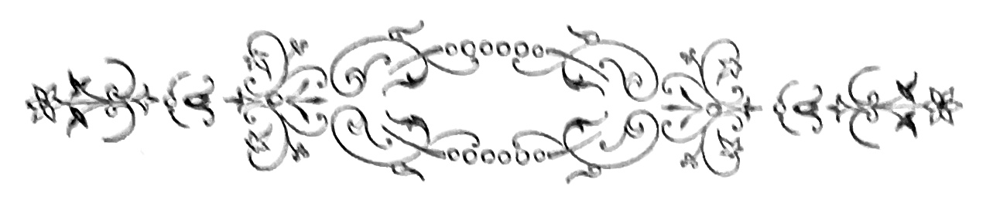

Quando Jorge bateu, a Albertina acabava de se levantar da mesa. Era uma rapariga alta e fina, com o typo meudinho e arrebitado, que dá á mulher o ar canaille da ribalta. A sua elegancia formulava a ultima novidade dos armazens de modas, tinha o chic do dia, a côr e a graça da ultima revista de Paris. Vestida com uma simples saia, um reles chale e uma cuia torta, teria passado indifferente até á policia civil, que é quem na capital roe nos ultimos detritos da femea, que o amor escalavrou por essas alcovas e restaurantes nocturnos. Sem o espartilho cuirasse que lhe dava o rhythmo postiço e flexuoso do busto, sem as meias escarlates[Pg 324] luzentes de abelhas de oiro e esticadas acima do joelho, sem os sapatos de decote largo onde uma roseta de setim se enroscava com volutas de serpe negra, sem o nankim das pestanas, a veloutine da garganta, o carmim da bocca e a unha crescida dos fados electrisantes, essa boneca que tinha o ar de parir o utero á força de comprimir as ancas, daria a simples femea lymphatica, com folies de cœur e hysterismos alambicados, ninho de tuberculos do peito e uma genuina incapacidade para os misteres da sua condição e da sua classe.
Seria uma preguiçosa, uma gulosa, uma estupida, incapaz da maternidade, incapaz da abnegação, incapaz da lucta pelos que amasse, da permanencia no dever como n’um tabernaculo inviolavel, e da resignação, tão heroica e tão santa, de certas mulheres pobrissimas, na sua labuta tormentosa e quotidiana.
Aquella vida do palco era a unica que ella teria podido seguir sem contrariar os seus instinctos e satisfazendo todas as suas vaidades.
Em criança tivera uma educação apurada e completa—diziam os paes. Fallava as linguas, cantava, tocava, e implantára no pequenino craneo a paixão do luxo e a paixão do namoro—duas lanternas que ao longe pareciam illuminar-lhe as phantasias do futuro. D’uma vez que a trouxeram a Lisboa e a levaram ao theatro, um subitaneo clarão se lhe fez dentro—tornára nitida a aspiração vaga em que ardia nas suas insomnias de virgem[Pg 325] provinciana, descobrira a vereda que havia muito, as suas tendencias tacteavam, como um cego em busca de uma porta para tomar folego. Tinha sido na Trindade, n’uma noite de première. As decorações da scena com os seus cambiantes tenros, as suas florescencias singulares, as cascatas de perolas cahidas na limpidez ideal dos lagos cortados a palmouras de cysnes, as transmutações, os adereços, os vestuarios dos principes e das princezas, dos pagens imberbes e das bailarinas aladas, surgindo em attitudes lascivas das cascas de ostra giganteas, esquecidas na gruta marinha da penedia, galvanisaram-lhe os nervos e o coração, arrebatando-a do seu ninho de senhora nubente para a phantastica allucinação das liberrimas existencias onde se vive em azul, se cingem as carnes em photospheras de pedras, e se faz roçagar no mosaico hilariante das alcatifas, as longas caudas dos vestidos de quarenta libras, amarrotados hoje e ámanhã benevolamente esquecidos a Fanchette, nossa confidente e nossa criada de quarto. Ah! como seria bom cantar alli, quasi nua, com os pequenos pés inquietos calçados na chinelinha de Cendrillon ou nas botas altas do principe Jasmim, os cabellos polvilhados de loiro, as mãos cobertas de rubis e a garganta titilante no fremito de um trillo ou na petulancia de uma aria, escarlate de provocações!... E as paixões desencadeadas com o impeto das procellas andinas, as supplicas virginaes dos adolescentes loiros que lhe devessem o primeiro grito do sexo espicaçado,[Pg 326] as apoplexias dos banqueiros e as surdas invejas das mulheres mordidas pela estranha aureola do seu imperio!... Não dormiu n’essa noite. Era cerrar os olhos e encher-se-lhe logo a cabeça de bailados, córos, transformações e esplendores, cuidando estar diante da multidão, phrenetica ante a nudez dos bustos e abrasada pelo calor do ambiente. O expluir das ovações como a embalava n’uma embriaguez funesta, que lhe fazia latejar as fontes; e em circulos de diabolicas walsas vinham-lhe as reminiscencias da vida de terra pequena, tão insipidas de episodios e tão aridas de commoções, em que a sua mocidade deslisára até alli, como em calmaria podre. Operou-se n’ella então uma brusca metamorphose, uma rebellião feroz contra a pequena roda em que vivia. A tranquilla casa burgueza dos paes, cheia de um conforto simples e de um aconchego honrado, fez-se-lhe odiosa e triste. Entrou a embirrar com os moveis, com os velhos criados, com o jardim de canteiros oblongos e cheios das magnificas roseiras que o papá cultivava, e tinham a reputação das mais bellas da terra. As suas maneiras eram agora seccas, as suas respostas sacudidas e imperiosas. Soffria distracções profundas, e respirava a espaços por grandes suspiros de cansaço. Aquella tristeza sem explicação inquietou os paes e as tias. Que era? Que não era? Depois, a phase de explosão chegou, periodo singular de contrastes, ora alegre, ora colerico, ora sarcastico, em que nada parava, as musicas, o guarda-roupa, os criados, a[Pg 327] reputação e o toilette das ricas e pretenciosas herdeiras suas visinhas. Tudo achava banal e indigno da sua attencão.
Uma crueza de palavras entrou a expluir-lhe na bocca; achava os homens pelintras e as mulheres idiotas, e reclamou um dia asperamente do primo Jorge as cartas que lhe escrevera, dizia—para mangar com elle. E como estranharam, ella bateu o pé, tremula de raiva, gritando que nunca seria esposa de um homem com tamanho nó de guela.
Um dia desappareceu de casa para não voltar lá mais—e d’alli a um mez os cartazes annunciavam o seu debute.
Seis mezes que se não viam. Como o tempo passa, bom Deus! Havia tres que ella debutára, e tinham-se passado tantas coisas, tantas!... Quando elle entrou, Albertina sentiu um fremito pela espinha dorsal ao encaral-o. Estava mais vigoroso e mais bonito, correcto no seu veston de grandes botões, sapatos de bicos curvos e a calça azul ferrete cahindo amplamente sobre as polainas côr de perola. Era alto, nunca lhe parecera tão alto, realmente. E o vermelho dos beiços dava-lhe um ar sadio que a frescura dos dentes justificava. A vida de Lisboa refundira completamente aquelle provinciano timido, pacato e sincero, apaixonado pela caça,[Pg 328] leitor dos maus romances e cheio de uns acanhamentos que realmente...
Ella soubera da nova residencia de Jorge, e uma tarde, quando subia o Chiado vestida na sua pelliça e baixando a cabeça ás barretadas dos folhetinistas que por alli se davam ares principescos, tinha dado com elle, cara a cara.
Fingiu não o vêr. Tinham-se-lhe esgarçado já as primeiras illusões faiscantes da vida nova em que entrára; sem querer até, experimentava ás vezes n’aquella solidão em que se via, mesmo no calor da celebridade que se arrogára, o quer que era de remorso, tristeza impregnada de torpor, um secreto medo da morte e a ternura para os tristes velhos que quasi aniquilára com os desvarios d’aquella vida deshonesta. Ria-se d’estas pieguices depois. Realmente, uma rapariga como ella era, a pensar em coisas de tão ridicula sentimentalidade!... Um dia escreveu-lhe; queria ser perdoada, amada outra vez com aquelle amor tão sincero e tão simples, de homem forte e cheio de mansidão benevola dos sãos. O egoismo da gente com quem tratava, fizera-lhe sentir a necessidade de ter como defeza um amigo leal. Estimal-o-hia simplesmente, vertendo-lhe no seio as pequenas amarguras da sua vida caprichosa. Amal-o não, talvez não. Além de que, Jorge podia lá amar uma mulher de theatro, que ia cear ao José Augusto com actores e jornalistas, dava beijos nas faces oleosas dos empresarios, e era forçada a pagar generosidades de joias com[Pg 329] generosidades de alcova... Amal-o não, ai não! Conhecia-lhe bem a linha de caracter, escrupulosa e séria. Sentira a adoração d’aquelle homem, ardente e balbuciante, com uma especie de mysticismo estranho. Que dedicação e que lealdade! Ah! tivesse ella conservado a sua linha casta de filha unica, reclusa na paz da casa paterna, e seria agora a esposa d’aquelle rapaz de hombros redondos e epiderme fina, sob que um sangue generoso em reticulos circulava. Que vida teriam feito juntos ás noites, de serão, sob a luz do mesmo globo e em torno da mesma banca de trabalho, os pequenitos adormecidos n’um canto de sophá, cahidos os reposteiros e uma paz celeste abrindo as azas sobre o dulcissimo grupo das duas cabeças sonhadoras! Que de asneiras se fazem na vida, bom Deus! Inda se elle a quizesse como amante... Áquella idéa, uns restos de pudor afogueavam-na, erguia-se phrenetica amarrotando as bordaduras da robe, uma vontade amarga de morrer.
Encararam-se por um instante, ella com um sorriso contraindo, elle de imperturbavel seriedade e muito pallido. Quando Albertina lhe tocou na mão sentiu-a abandonada, como a que se dá aos indifferentes. Seis mezes antes, que differença!...
—Senta-te aqui, disse ella.
E passado um instante:
—E meu pai, e a mamã?
Jorge encolheu os hombros.
—Que tens tu com essa gente?
[Pg 330]
—É verdade, esquecia-me, tornou ella baixinho, com um estrangulamento de lagrimas. Eram sete horas, e não havia espectaculo n’essa noite. O gabinete tinha uma claridade velada, que esbatida do globo fosco do candieiro, amaciava os aspectos n’uma penumbra vaga de entrevista. Com as janellas cerradas—era no inverno—os perfumes dos enormes bouquets suffocavam, tepidos e langorosos. Nas jardineiras, em pinhas de pequeninos vasos branco e ouro, as begonias espalmavam as suas folhas decorativas e gordas, bronze raiado de escarlate, e cobertas de um delicioso crochet. Cahiam pesadamente das galerias os reposteiros amarellos, destacando no fundo claro das paredes. Pelos fauteuils, na ottomana e sobre as etagères douradas esqueciam-se as partituras em voga e os papeis, trasladados pela grossa letra enfadonha dos copistas. N’um angulo de marmore, jazia a cinza do charuto de um outro, que estivera antes e se fôra. Jorge pôz-se a mirar em torno. Era luxuoso aquillo, cheirando a femea. Defronte da ottomana e por uma porta aberta, via-se um canto de toilette na penumbra: fórmas albas de cortinados e rendas, uma luzerna de espelho, e ao canto a psyché de marmore branco, em forma de concha. Quem pagava aquillo tudo? dizia Jorge para si.
—Mas falla, pelo amor de Deus! disse ella puxando-lhe o braço e forçando-o a sentar-se. E febrilmente, com voz um pouco tremula:
—Foi uma desgraça, bem sei. Tinha porém de[Pg 331] ser e não ha remedio já. É o destino, que queres? Fui bem má comtigo. Uma mulher como eu, era indigna de um homem como tu. Sabia lá fazer-me do teu tamanho!... Atirou-lhe os braços ao pescoço:
—Mas falla, falla!... dizia entre beijos.
Jorge repelliu-a devagar, com esforço. Pensava, nem sabia em que estava a pensar. Estava magnifica, a priminha—era tudo.
—Ha seis mezes não usarias d’essa frieza commigo, murmurou ella, deixando-lhe a cabeça no hombro.
—Eras honesta.
—És cruel, tambem.
—Ouve, exclamou Jorge violentamente, tomando-a pelos pulsos—para que te pintas? Para que?
—Eu?
—Tu. Nos olhos, na bocca, nos hombros. E esta casa, quem paga? E este luxo? Não respondas. Paga quem entra, bem se vê.
—Oh Jorge! gritou ella em soluços. E um pouco dobrada, deixava escancarar com abandono provocante, a fenêtre do roupão de velludo, orlada de rendasinhas sobrepostas.
—É claro, bem claro, dizia elle com uma scintilla de cão cioso na vista.—E mais baixo, n’um tom de reprehensão amiga:
—Foi para isto que deixaste Leiria, a nossa casa, o tio Arsenio e as familias das nossas relações, não? Pensas que poderás viver sempre cantando,[Pg 332] tendo celebridade e reclames nos jornaes?
—E porque não? dizia ella ingenuamente.
—Olha que é uma vida de encher olho, não tem duvida. Foi então para enriquecer uma cocotte, que teu pai trabalhou quarenta annos sem descanço, não vendo outra coisa senão a filha, e não se importando com outra coisa que não fosse um teu capricho? Educaram-te nas virtudes burguezas, que na mulher preparam a mãi, simplesmente para que um bello dia fugisses, roubando a casa dos teus?
—Estás doido?
—Seria melhor que o estivesse. E agora? Em que ponto ficam as nossas relações, não me dirás?
Ella quiz attrahil-o a si:
—No ponto em que as interrompemos em Leiria. Porque não?
O primo Jorge riu com uma casquinada brutal.
—Tu estás tola, priminha. Eu namorar-te? Tem graça, palavra.
E com ares de cynico:
—As mulheres do theatro não se namoram.
Albertina estava attonita do que ouvia.
—Então? disse ella sem saber, ao acaso.
—É simples, ia dizendo Jorge. Primeiro cercam-se, como as cidades sem viveres. Depois compram-se. Entendeste?
Ella ergueu-se com os labios brancos e as mãos crispadas. Estendeu-lhe seccamente a mão.
—Adeus.
[Pg 333]
Voltou-lhe as costas com um ar de rainha e entrou na alcova.
Jorge não se perturbou lá muito com aquella despedida formal, e deixou-se ficar socegadamente ao canto do sophá, fumando o seu charuto. Só quando ouviu os soluços da prima se resolveu a entrar devagarinho na alcova. Havia um cheiro de Ylang-Ylang e pó d’arroz de Lubin; fórmas brancas cahiam na penumbra, de cassas apanhadas e fauteuils muito baixos, de casimira perola. Os pés afogavam-se n’uma pelle de urso, macia e branca, com garras douradas. Primo Jorge respirava alto, caminhando ás escuras, entontecido de perfumes, um baque nas fontes. E muito baixo:
—Albertina! disse elle. Voejavam-lhe diante dos olhos, abelhas de oiro, em circulos febris. Os seus dedos tocaram n’uns cabellos, depois um bocado de pelle setinosa. Ergueu-lhe carinhosamente a cabeça pelo queixo, ajoelhára-lhe aos pés, apoiando-lhe os braços nos joelhos. E n’um tom de voz, em que havia o uivo do desejo refreado, dizia-lhe:
—Pateta! Ouve.
E aos beijos, com palavras entrecortadas:
—Como d’antes, minha filha, como d’antes...
Retesados, os seus braços enlaçavam-na pelo busto, com uma ancia que fazia medo.
D’alli a nada, Albertina terminava com voz plangente o romance do ultimo semestre da sua vida. Era pura como outr’ora, apesar de tudo, jurava[Pg 334] ella, expondo pelo quebramento da postura na ottomana, o onduloso desenho dos quadris e a linha elastica do collo todo abotoado nas costas, cingido n’um corpete de velludo bronze e aberto no seio em fenêtre, d’onde espumava a gargantilha, n’uma alvura de nymphêa.
Se elle soubesse!... No theatro e na cidade sentia-se fluctuar n’um abandono glacial. A adulação e os bouquets com que lhe atapetavam o caminho, causavam-lhe a nostalgia da sua pequena cidade natal. Quem se interessava agora por ella, quem? Ás vezes, olhando a gente que passava nas ruas, acotovelando-se com pressa de chegar cedo, e não querendo saber dos que paravam no caminho, sentia um medo funebre invadil-a toda. Se morresse, quem lhe fecharia piedosamente os olhos e a acompanharia ao cemiterio? Que olhasse pelas janellas d’aquelle segundo andar a cidade, viva em baixo e a róda—transeuntes cacheticos e ruas tenebrosas, mesmo á claridade do gaz. Que triste era tudo! O primo Jorge deixava-a fallar á vontade, aninhado junto d’ella, como sob a tepidez de uma aza de cysne, e tendo uma das mãos em viagem touriste pelas colinas, de que o decote triangular patenteava o sopé, de uma amenidade inteiramente grega.
—E que mais, que mais? dizia elle, gaguejando.
Albertina mirava-o com esses olhos velados de reptil, que exercem em certas organisações nervosas invencivel fascinação. A curva do queixo era[Pg 335] redondinha e branca, e subia n’um espraiamento suave até ao lobulo escarlate da orelha, onde um diamante faiscava como pupilla ciumenta. Parecia bonita sob aquella excitação, com os olhos fendidos a nankim, as olheiras ensombradas a bistre, e verniz labial do mais caro. Todo debruçado, o primo Jorge inhalava os perfumes tepidos da sua carne, olhando-lhe, nas pennugens da face encarada de perfil, os corpusculos suspensos da veloutine que a alabastrisava. Aquella absorpção lethargica e a excitabilidade excessiva que lhe viera, deram-lhe um quebramento dorsal, uma lassidão de musculos e o desejo incoherente de se abandonar n’um espreguiçamento eterno, sobre a flaccidez eburnea das espádoas. Sentia um peso de palpebras langoroso e febril, que não era o somno.
—Que horas são?
—Oito.
Eram dez e meia dadas. Albertina fallava baixinho, como receando acordar um baby, e a sua voz de estranha doçura, vinha, filtrada por um secreto medo, anesthesial-o como esse insidioso gaz hilariante que traz a morte entre risos.
—Amava-o, tinha-o sempre amado como em criança. Por nenhum homem mais sentia aquella attracção, aquella confiança e a intima alegria de lhe fallar sem receio. Porque fugira ella de casa e se afastára da profunda ventura de ser d’elle, mediante os latins de um padre? Mas não se separariam nunca mais, não era verdade? Nunca mais![Pg 336] Seriam como um irmão com uma irmã, ella dizendo-lhe a sua vida sem omittir o episodio mais vulgar, elle contando-lhe tambem au jour le jour as suas esperanças e os seus desalentos. E seria ella quem lhe faria tudo, quem o trataria se estivesse doente, quem lhe daria conselhos e lhe engommaria as camisas, obscuramente, sinceramente, sem o menor resquicio de peccado entre os dois. Os perfumes que pelo decote vinham do seio d’ella embriagavam-no; sentia-se penetrado por aquelles olhos de salamandra, como velados por uma nictitante subtil. Havia dois mezes que tinha entrado na chamada grande vida, vida realmente bem pequena, que consiste em um sujeito estragar o estomago nos hoteis, dizer asneiras n’uma tabacaria, n’um café ou no camarim d’um actor, e arranjar pelo attrito das solas duras e das convivencias safadas, ao mesmo tempo uma collecção de callos e um museu de vicios pelintras.
Estava no primeiro andar do Alliance, quarto e saleta com porta independente, frequentava os theatros e batia em tipoia pelo Chiado ás quatro da tarde, mostrando no assento dianteiro os bicos dos enormes sapatos de polimento e a sêda côr de perola das meias esticadas. De resto, fazia um gasto decente no elemento hespanhola, sem indagar se lhe vinha directamente das Caldas ou da agencia de criadas. E á noite, descendo o Chiado com a gola do carrik levantada, sentia-se appetecido pelas senhoras pallidas que iam pelo braço dos maridos[Pg 337] cacheticos ou condescendentes, com o adulterio nos olhos. O seu ar de camponio de bom sangue fazia impressão: era desejado. E como tinha dinheiro...
Extincta a phase nevrotica com que é uso iniciar-se um bourgeois gentilhomme na roda galante da juventude oiro e azul, o primo Jorge entrou a vêr um pouco n’esse como encandeamento em que se deslumbrára. Mesmo entre vadios é forçoso ter posição. Já hoje se começa a penetrar um pouco pela vida intima de cada qual. A Jorge bastaria o ser rico ou parecel-o—uma amante sempre dá outro ar, outro tom e outra consideração. Foi quando recebeu a carta de Albertina. Que diabo! Já lhe tinha feito a côrte, de mais a mais. Eram tres da manhã quando se despediram.
Ella, envolta n’um grande penteador de cauda, tremia de frio, offerecendo-lhe a testa ao ultimo beijo, pés nús sobre a felpa cariciosa e fofa do tapete. Fallavam muito baixo, com singulares fulgores na pupilla e uma meiguice de termos, que lhes vinha do orgasmo nervoso em que estavam.
—Mas és lindissima assim, dizia-lhe Jorge, cingindo-a pela cinta e beijando-a na bocca.
Albertina tinha um riso delicioso, gulosamente recortado pela dentadura, de gata irascivel. E mordaz:
—E aquella tua tirada de ha pouco... disse ella surprehendendo-o vencido, e batendo-lhe na face[Pg 338] com o ar petulante, que tantos applausos lhe rendia no palco.
—Moralista! dizia zombeteira. Todos o mesmo.
Cantavam gallos pela cidade, quando elle sahiu. Desenhados em negro, ora no clarão baço dos lampeões batidos pela ventania do inverno, ora alongados na penumbra das ruas e lembrando arganassas estropeadas, os varredores desciam de vassoura ao hombro, batendo gallegamente os tamancos. Primo Jorge ia contente, cerebro lucido, um bom charuto na bocca.
Ao entrar no quarto do Alliance, não se conteve que não dissesse:
—O que ella sabe, senhores, o que ella sabe!—Despia o carrik de pello fulvo.—Esplendida! E que artista...
Viu sobre a mesa uma carta. Era da mãi de Albertina dizendo ao sobrinho que estava viuva, e supplicando-lhe instasse com a filha, para ella abandonar a vida má que emprehendera. Encontral-a-hia de braços abertos, cheia de perdão no seu luto, e prompta a adoral-a como outr’ora. O primo Jorge riu-se. Estava um pouco bebedo, e passára sempre por isto que se chama—um bom rapaz.
—Está tola, a velhota, disse elle.
E queimando a carta:
—Afinal se não fôr eu, é outro. Ao menos fica tudo em familia.
[Pg 339]
E d’alli por diante acompanhou a prima todas as noites ao theatro, e ficou com ella por amante.
Acrescentando, com ares devassos:
—Até apparecer coisa melhor.
[Pg 341]
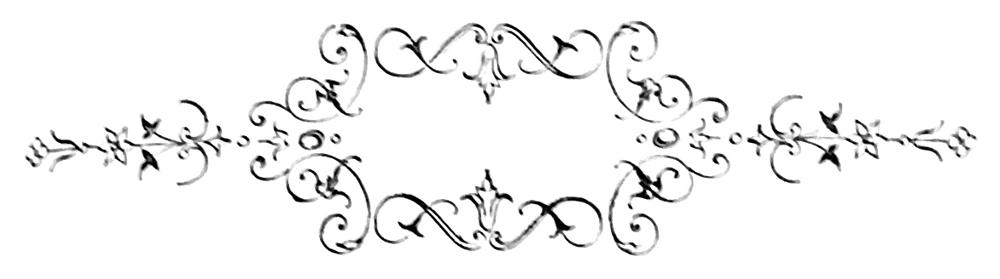
Á borda do mar ficava o mosteiro, erguido em peanha de granitos erriçados de arestas e cobertos na base, de tufos de algas verdenegras. Nascera no dia que um dos nossos velhos reis alcançára de infieis um triumpho, conseguindo arrojal-os bem para lá das fronteiras. Com o tempo, aquella casa tosca de origem, guerreiramente dentada de setteiras profundas, entrou a merecer por suas virtudes a protecção de prelados e infantas. Os cavalleiros que partiam para as conquistas, os principes que voltavam das batalhas carregados de despojos, as infantas que iam em Hespanha e na Austria, ligar a sua vida á vida aventureira dos grandes capitães e senhores, antes de deixarem a patria,[Pg 342] ou ao chegar a ella, entravam a profunda arcaria algida do templo, a depôr no tabernaculo o penhor da sua fé, do seu reconhecimento ou da sua saudade. Nada mais severo que semelhante edificação, por cada raça augmentada e refundida, nas fórmas architectonicas do tempo.
Penetrava-se na igreja por um portal esguio e baixo em ogiva, posto no cimo de uma escadaria de balaustres curvos, onde se engalfinhavam monstros exoticos no marmore das efflorescencias polluidas da idade. Sobre o portal e á altura do côro, tres rosaceas de vidros córados, deixavam jorrar no santuario a purpura sanguinolenta do sol; por cima, era o coruchéo limoso, entre as duas flechas das torres negras, encimadas de cataventos rangentes. Á altura da rosacea central, um poste sustentava os dez fios conductores do telegrapho—e dava uma commoção indefinida vêr assim ligados, como dois reophoros de pilha voltaica, aquelles dois pólos de mundos diversos e separados por dezenas e dezenas de seculos—a casa dos monges e o zinco transmissor da electricidade. Dentro do templo, parte gothico, parte barbaro, e no fundo das capellas sombrias em que perpetuamente arfava a luz soturna dos lampadarios de bronze, viam-se deitadas em sarcophagos de volutas multiplices, figuras de bispos e eremitas, cavalleiros e santos, toscas esculpturas terrificas, de capacete ao lado e espada aos pés, em cujas lapides se podia colligir e lêr, como n’uma velha chronica fiel, a historia completa[Pg 343] da nação. Os santos eram ainda mais toscos que as estatuas dos mortos. Tinham as fórmas hirtas, a expressão feroz e os barbaros perfis attonitos, d’esses idolos que ainda hoje se encontram mutilados nas ruinas dos pagodes hindustanicos, sob palmeiraes colossos.
As Virgens revestidas de brocados, scintillantes de incrustações de oiro e pedras e coroadas por diademas do mais singular detalhe, olhavam dos nichos com olhos de vidro, estendendo as mãos ferozes e grossas, n’um chuveiro de ameaças.
Em oração, os martyres chagados abriam n’um spasmo as frontes selvagens, flagellando corpos de brutal nudez. Viam-se cahindo das paredes, poentos e aluidos pela humidade, paineis de milagres em que Deus era exaltado como um sêr feroz e sujeito a caprichos de benevolencia, para este ou para aquelle, sepultando uns sob as ruinas das casas, roubando a outros as colheitas, fulminando os filhos, matando de fome os paes, e não cedendo nunca da sua raiva pharaonica, senão á força de procissões e sacrificios. N’aquelles milagres pendentes em galeria das paredes da igreja, uma geração de envilecidos e tristes desfilava, vergada á oppressão de senhores, a guerras impiedosas, a fomes, a pestes e terramotos. Alguns tinham alli vindo deixar os cabellos e os vestidos. Muitos, que haviam enfermado de uma perna ou de um seio, offereciam, experimentando melhoras, a imagem em cera ou em prata d’essa perna ou d’esse seio. Mostravam-se[Pg 344] n’um alpendre da cerca, rumas de lemes, velas e mastaréos, destroços de barcas e ferros de arados, dos miseraveis surprehendidos em perigo de morte que assim tinham comprado a clemencia dos santos do mosteiro. Nas aldêas visinhas, ainda agora se narrava com fervor mystico e secreto medo, a serie de prodigios e milagres succedidos na igreja, em tempos calamitosos.
Por uma fome do anno de 1573 havia apparecido no santuario um braço de fogo sustendo um feixe de espigas. Um physico que ousára escarnecer de Deus, fôra morto por um corisco ficando negro na mesma hora, nas escadas do altar-mór. E o milagre do pai e do filho, e o das duas cabeças do enforcado...
Em tempos d’el-rei João III nosso senhor, o mosteiro fôra entregue aos jesuitas então no maximo esplendor do seu poderio e fortuna. Era alli que mais de preferencia se recolhiam os santos padres de Jesus.
A contemplação do oceano cantando a sua eterna legenda, a linha caustica entre céo e mar, a solidão e a poesia do sitio, convidavam aquelles homens negros, que a meditação preenchia, como um liquido preenche um vaso. A cerca perdeu n’esse tempo uma parte da sua nudez—viram-se os limoeiros e as madre-silvas vestir os muros, jorrar agua das carrancas dos tanques, e os pomares arredondarem as suas pinhas de verde envernizado. Permittiu-se ao povo que visitasse a horta, os claustros[Pg 345] e as grutas de devoção particular. Á hora da missa a turba enchia o mosteiro avida e devota; as confissões feitas com fervor, mas sem as ameaças do inferno que os antigos monges vociferavam, attrahiam sympathicamente os penitentes. E Deus appareceu á terra sob uma face de perdão, que quasi se desconhecia.
Cem annos depois, apesar de se guardarem com a maior fidelidade, as santas reliquias e milagres do mosteiro, as vetustas tradições estavam esquecidas entre o povo, e poucos se lembravam de ter ouvido aos avós a narrativa das duas cabeças do enforcado, do pai e do filho, e da morte do physico-mór.
Mas eis que o marquez expulsa os jesuitas, cujo poder e argucia arcavam com os seus.
Do portico escancarado vê-se sahir uma procissão de padres negros e fronte pallida, de cruz á frente. As santas mulheres ajoelham na passagem para lhes beijar os vestidos e receber a ultima benção. De novo o mosteiro fica deserto, sem o caracter hospitaleiro de uma casa de conselho e oração consoladora. Os negros phantasmas dos monges ascetas, lividos e frios, prégando abstinencia e flagicios volvem a percorrer os claustros lugubres e a rezar nas capellas, em que os olhos dos idolos ameaçam o mundo e proclamam a aniquilação dos povos. Uma treva enlucta os espiritos e fluctua de emtorno ás muralhas. Em baixo, o escarneo da vaga que alue pelas cavernas o alicerce de rochas do templo, é[Pg 346] como um rir de diabo aos pés de um Deus inanimado! De noite, a lua que lança flechas pallidas pelas setteiras profundas para dentro do mosteiro, alumia estranhos conclaves de espectros. O vento segreda nos nichos e á roda dos mausoléos, e baixinho parece orar aos pés do santuario. A chuva infiltra-se nas abobadas e humedece os cimentos. D’entre as junturas das pedras irrompem gramineas e zambujaes. Ninguem vai vêr o mosteiro e o portico está fechado. E aquella mole de pedra, emburelada em musgos e erguida á beira do mar, lembra um suicida ajoelhado fazendo a ultima oração.
No verão de 1880, o conde F. meu amigo, lembrou-me que poderiamos fazer na sua propriedade uma estação agradavel. Tinham acabado n’ella um chalet elegantissimo em tijolo vermelho, com tectos de cortiça apainelada, á beira-mar. O parque de eucalyptus, enorme e cruzado de aleas, que uma arêa negra polvilhava, offerecia já troncos de grande espessura e belleza, soberbos e direitos, sacudindo aos ventos salgados da costa os seus molhos de folhas em cutelo. Para o interior a vinha era tão exuberante que subia pelos troncos das arvores, os pomares alastravam-se turgidos de fructos n’uma distancia de milhas, e nas collinas que demarcavam o dominio, immobilisava-se o verde funebre dos pinhaes,[Pg 347] cujos filamentos pareciam cabellos verdes de antigos deuses aricos. Na matta, a caça abundava, coelhos, rapozas, perdizes e gallinholas. Para obtermos a melhor pesca, bastava que debruçados na amura de rochedos, lançassemos as redes á agua. O calor em Lisboa apertava; imagine-se o que seria no Alemtejo, na casa de meus paes! Decididamente valia a pena ir com F., valia decididamente a pena. E partimos. Antes de penetrar na quinta dei com o mosteiro, em que nunca ouvira fallar. Veio-me naturalmente a curiosidade de o vêr por detalhe, e passar uma noite até, com as sombras legendarias e romanescas que tamanho medo faziam ás aldêas circumvisinhas.
Por baixo do edificio, o mar tinha escavado profundissimas cavernas que as algas mais finas tapisavam traiçoeiramente. Estalactites conicas desciam da abobada a encontrar estalagmites, em que os molluscos arrastavam mosaicos de incrustações excentricas. Por entre as columnatas o fragor da ressaca, nas noites de temporal, era de instrumentação titanica, e reboava no templo como a evocação biblica do Valle de Josaphat.
As grutas prolongavam-se nas trevas em todas as direcções, e iamos de gatas, escorregando nas babugens que a maré deixava na dentadura das penedias. D’uma vez o archote apagou-se-nos, e o phantastico palacio do mar não tinha termo—galerias sobre galerias, columnas truncadas e janellas abertas sobre a treva fetida e sepulchral!
[Pg 348]
Visitadas as cryptas, penetrámos no mosteiro. Tão pesada e ampla construcção fez-me vêr que a base perdia pouco a pouco a solidez, á medida que por baixo a onda ia limando o granito. Aqui e além até, as abobadas fendiam surrateiramente; em cada inverno chuvoso, se succediam os desabamentos parciaes, e o lagedo dos claustros abaúlava-se abrindo boccas nas junturas, de que uma respiração putrida parecia exhalar-se. Tinhamos chegado á quinta nos fins de maio, e em julho ainda lá estavamos. Mas fatigados já, o conde especialmente, que o retinham alli negocios de dinheiro, por que dizia sentir o mais authentico desprezo. Visitado o mosteiro, caçadas todas as perdizes, gallinholas e betardas do sitio, ferido nos viveiros naturaes da costa um bom golpe de pesca, as nossas duas imaginações impuzeram-se o trabalho de descobrir diversão, que nos garantisse a estada na quinta até meados de agosto—tempo de Cascaes e do jogo forte.
Uma manhã ergui-me antes do dia e fui acordar o conde.
—Achei, venho participar-t’o.
—O que achaste tu a esta hora?
—Uma distracção, c’os diabos!
—Da natureza das outras, aposto. Modificaste o feitio dos papagaios, hein?
—Ora adeus! disse eu rindo.
—Então dize lá.
—Sabes que me dou um pouco á telegraphia?
[Pg 349]
—Não tens lucrado muito com isso, não.
—Vaes vêr que se lucra sempre em saber as coisas. Vou mandar vir o meu transmissor aperfeiçoado e fios conductores.
—E estabeleces um telegrapho entre o chalet e a casa da Palmira. Estás tolo, com toda a certeza.
—Mau! Ouve.
—Bem! Dize.
—Ligo o transmissor por meio de fios, aos dez fios telegraphicos que se apoiam na rosacea do mosteiro. E recebemos os telegrammas fresquinhos e sem pagar nada. Hein?
—Mas, disse o conde encantado. É preciso que vamos habitar o mosteiro.
—E porque não?
Elle deu um salto na cama.
—Mas é esplendido!
—De certo.
—E póde-se alarmar o paiz.
—Não vejo como.
—Nem eu, c’os diabos, mas póde-se alarmar.
—Bem.
—E é como se os telegrammas nos fossem enviados directamente, como se nos obedecessem a agencia Havas, os gabinetes da Europa, as grandes capitaes, o Oriente, e o diabo que te leve, que nos leve e leve todo o mundo!
—Eia!
—E podemos incendiar o orbe.
[Pg 350]
—Pelo telegrapho? que idéa fazes do telegrapho?
—Eu, nenhuma. Não morde?
—Conhecendo as pessoas, não.
—Tanto melhor! E quando teremos os apparelhos?
—Ámanhã.
—Telegramma que passe, hein?...
—Não escapa!
—E gratis, gratuites, sem pagar nada, hein?
—Clarissimo!
—Dá cá um chôcho pela idéa.
—Prefiro um calix de Madeira.
No outro dia, o transmissor chegou com o rolo de fios, e mettemo’-nos á obra. Ás cinco da tarde recebemos o primeiro telegramma.
«S. Petersburgo, 8, ás 11 horas da manhã.—Uma bomba explosiva rebentou junto do czar, quando este se preparava para montar a cavallo. A policia procede em investigações.—Havas».
—Este diabo escapa sempre. É extraordinario.
—Ahi vem outro.
—Vou jurar que é bomba, que ainda d’esta vez não alcançou o invulneravel.
—Nada. «Paris 8, á 1 hora. Chegou a embaixada Birman e partiu o snr. Grevy».
—Todos para casa do diabo.
Estavamos no côro de marmore branco, com baixos-relevos representando martyrios de santos.[Pg 351] Das paineluras negras, monges e virgens perdiam-se na penumbra da abobada, deslocada pelo templo com uma vastidão de crepes. As estatuas dos monges e cavalleiros pareciam colossaes, de immoveis nos mausoléos, essa austeridade das figuras de Miguel Angelo, no tumulo dos Medicis.
—É triste isto! disse eu commovido.
A perspectiva do mar, roxo da banda do nascente, tinha irritações animaes até á linha rubra do occaso—dorso de cetaceo ensanguentado pelo arpéo do sol moribundo. A vista, que percorrendo a immensidade liquida sem repousar n’um ponto, voltava com um desalento de ave ferida, trazia a idéa da morte e a saudade de uma existencia menos crua, n’esses dithyrambicos impérios em que as cabeças se corôam de flôres.
De repente, na absorpção em que tinhamos cahido, pareceu-me que um fremito percorrera o balaustre onde me encostava. E cada vez mais distantes, foram-se succedendo estalidos seccos.
—Não ouviste? disse eu ao conde.
Elle não tinha ouvido. O que?
—Parece que isto tremeu.
—É que te escutavas. E como estás com medo...
Pozemo’-nos a rir.
—Sabes que mais? Vamos passar a noite ao chalet.
—Cobarde!
—Tanto melhor! E se esta dança nos cahisse em cima?
[Pg 352]
—Oh diabo! Podia ser que não ficassemos vivos, não te parece?
—Quasi.
—Então vamos. Primeiro a tua saude.
—Obrigado. Queres que eu tenha medo por nós dois.
—Mas os telegrammas?
—Ámanhã continuaremos na exploração.
—Olha bem para mim. Isto é exploração ou roubo, hein?
—Seja roubo. Anda.
—Então dá ás coisas os verdadeiros nomes, irra!
Descemos. Aquelles estalidos tinham-me dado calefrios, palavra de honra.
—Como tu vens enfiado! dizia F. troçando.
—Como tu vens amarello!
—Qual de nós teve maior susto?
—Foste tu; é boa!
—Foste tu; pois quem?
—E se ficasses na derrocada, ó conde?
—Não tinha pena, palavra.
—Bem, não fallemos mais em tal.
—Mas ámanhã continuamos com os telegrammas?
—De certo.
—E elles que chegam como garraios!
No dia seguinte, era meio dia quando acabamos d’almoçar. O conde bebia como um saxonio, para honrar a memoria do irmão de seu tio, dizia,[Pg 353] honrado commerciante londrino do Caes do Sodré.
Em plena luz e sob a pressão de quatro garraforias ninguem tem medo. Vamos aos telegrammas?
Deitámos caminho do mosteiro, e entoando o God save the queen apparecemos ante o portal gothico do templo. F. gritou-me zombeteiramente:
—Adiante! Era elle quem tinha medo.
Subi ao côro. Na fita de papel, sempre em movimento e desenrolando-se com imperturbavel presteza, no cylindro de aço annexo ao apparelho, o punção do receptor tinha escripto, horas antes, este telegramma:
«Paris 9, ás 10 horas da manhã.—Terminou o prazo de 24 horas concedido aos jesuitas de Paris, para sahirem das casas que occupavam e fecharem os cursos publicos que regiam. Hoje ás 11 horas, a policia fará despejar todos os estabelecimentos da Companhia de Jesus. Receiam-se disturbios. O prazo de 15 dias foi cedido aos estabelecimentos da mesma Ordem, em actividade em toda a França.»
—A padralhada vai ficar fula! gritou F. O que dirá padre Kurpi, respeitavel e escanhoado director espiritual de minha tia baroneza? Eh! que vai tudo razo!
—Uma hora. Isto enfastia. Vamos ás ostras.
—Não vejo inconveniente, disse o conde com um jogo de hombros. Vamos lá.
[Pg 354]
—Se passar algum telegramma, o punção deixa na fita escripto o que houver.
Descemos aos rochedos e das rochas á arêa. A maré enchia, e uma agua crystallina e tepida, do sol no zenith, acariciava lubricamente as barbaças das caryatides d’alga que á bocca da gruta faziam carantonhas.
—Já fizeste a digestão? inquiriu F.
—Já e tu? E o banho está tão patife!...
—N’esse caso atiremo’-nos á agua.
—Vá feito.
Em cinco minutos, as nossas cabeças sahiam á flôr do oceano como as d’esses tritões alegres, que nas estampas rodeiam os carros em concha dos deuses marinhos. Nadavamos a distancia em frente da caverna, que vista d’aquelle ponto tinha as mais singulares parecenças com uma bocca de reptil descommunal.
—Repara, dizia eu apontando. Aquella fita de arêa clara que forra a entrada, é como um beiço estendido. Depois, logo as primeiras pedras aguçadas compõem a porção incisiva e canina da dentadura. Olha para o fundo. Vês as estalactites conicas que descem do tecto? São os dentes do crocodillo com fome. Olha mais para o fundo, aquella arcada incompleta—é a guela. Lá tens a uvula, o céo da bocca retalhado de sulcos negros. Agora para cima da bocca, aquella buracaria em triangulo. Primeiro temos as narinas, ferozes e dilatadas. Nas horas de borrasca a agua esguicha por alli,[Pg 355] como dos respiros de uma balêa. E os olhos, tão profundos e sem orbita! Depois a cabeça, toucada do barrete gothico do mosteiro.
—É original! dizia F. reparando.
—É terrivel, juntei eu.
Continuámos a nadar. Um zumbido de vida exuberante sahia da agua. De cabeça estendida, eu olhava a caverna. Parecia-me ter notado um movimento lateral de maxillas, na estranha bocca do inferno. O monstro triturava. Diabo!
Ri-me d’alli a pouco do poder da minha imaginação, irritada ante aquelle scenario de titans.
A faiscação do astro vestia o cetaceo do mar n’uma couraça de relampagos, e uma rêde de oiro amoldava-se á ondulação do monstro respirando. Mas então notei que as estalactites oscillavam, e as fauces do antro se uniam n’uma estrangulação de raiva. D’essa garganta formidavel de agonisante, um oceano arremessou contra nós montanhas de agua negra, fervilhando em espuma sulphydrica.
A violencia do jacto foi tamanha que ambos nós, eu e o conde, fomos morder a arêa do fundo, distantes da caverna como estavamos. Das entranhas da terra sahiram rugidos como se o mundo fizesse derrocada—vimos mexer o convento, abaterem-se as flechas das torres, desabar a abobada com fracasso indescriptivel—a vaga atirou-se raivando de encontro aos destroços, como um mollosso aos peitos de um vencido. E meia hora depois, no sitio do mosteiro assentava a pyramide torva dos destroços,[Pg 356] sobre que as gaivotas aos gritos descreviam as suas espiras fatidicas.
Chegado á praia e envergado o fato, o meu primeiro cuidado foi vêr as horas.
—Tres e meia! A derrocada tinha portanto sido ás tres, no dia 9 de junho de 1880.
O conde chegou a casa sem poder fallar. Nunca assistira a espectaculo mais grandioso. Nem o incendio do Banco.
Dias depois, um criado da quinta veio trazer-nos intacto o receptor que pudera salvar nas ruinas, e um bocado de papel onde estava escripto a punção, o seguinte telegramma:
«Paris 9, ás 3 da tarde. Completou-se em Paris a expulsão dos jesuitas. O povo assistiu sem protesto ao cumprimento dos decretos da Republica. Reina socego».
Pois que o povo era indifferente, a pedra quizera protestar derruindo, contra essa lei que afugentava implacavel, as tristes ovelhas do Senhor!
[Pg 357]
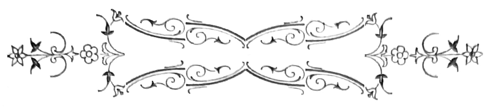
Na tarde anterior dirigira-me ao montado, cahia a noite. Uma contemplação profunda fazia-se em torno e o campo adormecia. Sobre as arvores, o céo concavo tinha laivos rosa, como sorrisos tristes de boccas que exhalam o ultimo adeus. Longe, por entre os caules seculares dos azinhaes e carvalheiras, uns acharoados de incendio ardiam em apotheoses fulgidas, sobre que os braços do arvoredo desenhavam em negro fórmas de estranhos esqueletos. Cahiam a prumo, d’uma banda e outra, fórmas de granitos aridos mostrando nos reconcavos e na profundeza lobrega dos barrancos, os primeiros phantasmas da noite com os seus capuzes de sombra derrubados na fronte, e um escorregamento de passadas[Pg 358] mysteriosas—como de ronda sinistra que desemboca na quietidão d’uma viella, no silencio da noite velha. Ao centro do abysmo, a vereda serpenteava, corcovando a sua fita saibrenta por entre agglomerações bruscas de basalto e grés vermelho, d’onde os matagaes irrompiam como hirsutos cabellos d’uma cabeça decepada. Por sob a vegetação aggressiva dos espinheiros e zambujaes, uma linha d’agua corria, fazendo murmurios timidos de segredos trazidos de fraga em fraga—e essa queixa contínua e chorosa das gotas cahindo manso, acrescentava uma nota saliente á symphonia em surdina dos vegetaes adormecidos e dos ultimos ninhos em rumor. O montado começava d’alli a subir pelo irregular das collinas. Não podia enganar-me na marcha. Tinham-me dito—vaes pela vereda, chegas ao cotovêlo da rocha, á esquerda, sobes a encosta.
—É a ultima azinheira, tronco direito e vermelho, com a cortiça descascada. Leva corda para subires. Olhas para cima, aproximas-te sem fazer ruido, ouve bem—sem fazer ruido! Dás com o ninho logo. Quando a noite se fecha, a aguia chega, azas abertas, vôo circular e gritinhos alegres de boa ménagère que volta, com o dia ganho e um reptil no bico curvo, para os pequeninos esfaimados.
Eu decorára todo este itinerario, promettendo não esquecer a menor cautela, iria devagarinho, muito devagarinho, sem chapéo, descalço mesmo, olhando para cima e em direitura á azinheira de tronco vermelho e nú de cortiça. Tinha então doze[Pg 359] annos, era rubro e selvagem, de grenha fulva, os dentes pequeninos e ralos, muito brancos, que erriçavam de gumes o meu riso escarlate e feroz—de korrigan vingativo. Achavam-me o orgulho de um rei e a pouca educação de um herdeiro presumptivo. Era de poucas palavras, vinham-me ao sol alegrias colossaes que transbordavam de mim como o rufo de um tambor extravasa da caixa de ar; todos os meus musculos amplos e duros na contracção, contornados nas linhas altivas de um athleta imberbe, amavam a lucta e se tonificavam na carreira. Passára até alli n’uma herdade, entre boiadas de que uma mansidão poderosa se abala glorificando a força, á rabeira dos arados, plena liberdade monteza, onde o homem regula as pancadas do seu coração pelo palpitar tranquillo da grande natureza que desabrocha em evohés hilariantes. Manhã nada já eu estava a pé, sentado á banca da cozinha com os ganhões da herdade, diante da açorda patriarchal que o alho impregna de odores vermifugos. Vestia como elles a camisola de lã, o largo chapéo de borla e os grossos sapatos cardados do agricultor, pião na algibeira, uma cicatriz transversal na testa, de pedradas antigas. Era imperioso e adorado; de resto abusava, dizia sempre—quero porque quero! Quando eu dormia, minha mãi ia beijar-me, e d’uma vez acordando sob um d’esses beijos, que são como nymphêas albas cahidas no marmore das epidermes frias, voltei-me e disse-lhe enraivecido:
[Pg 360]
—Os homens não se beijam, apre!
Queimava em podendo, as bonecas de minha irmã, gostando de a vêr chorar e de a fazer soffrer para me rir depois.
—Bem feito! Bem feito!
D’uma vez bateram-me. Em quanto eu berrava, o gallo cantando, fazia apotheose da postura recente de uma gallinha amarella, que desposára. Fui-me a elle e torci-lhe o pescoço.
—Para não mangares commigo. Toma!
A eira, diante do monte da herdade, era em plano inclinado, dura e polida, sem hervas. Deitava-me no cimo e vinha rolando até baixo. Nunca conseguiam trazer-me limpo—que tinha um odio insoffrido pelos fatos novos e pelos peitos engommados, considerando a gravata um traste inutil, de que me servia para amarrar chocalhos ao pescoço das ovelhas. Só annos depois acreditei que o mundo que eu não conhecia, o outro, fazia d’essa tira de sêda uma fronteira e perigosa—por muito infestada pelo contrabando.
N’esse dia, mal deram cinco horas e me apanhei fóra da escóla, deitei caminho do montado. Tinha á cintura uma corda de linho com azelha, para subir á arvore, e no bolso uma navalha de podar com gume de fouce. Todas as precauções foram por mim empregadas. Ao dobrar da rocha, descalcei os sapatos e tirei o chapéo. Metti a navalha no peito e desenrolei da cintura a corda. Depois, resolutamente dirigi-me á azinheira. Lá estava o ninho,[Pg 361] era enorme e construido sobre tres pernadas robustas—como sobre os tres dentes de uma forquilha. Eu nunca vira coisa igual, a fallar sinceramente. Tinha o feitio oval de um berço e ficava tão alto, tão alto que fazia vertigens. Era preciso subir até lá. Atirei a laçada á primeira bifurcação do tronco, icei-me.
Depois, escarranchado na pernada mais solida joguei com o laço ás ramarias superiores e fui subindo. Á medida que me elevava, a ascensão entrava a difficultar-se: as folhas em tufos compactos prendiam-me os cabellos, os ramos oscillavam sob o peso do meu corpo, e de quando em quando soavam estalidos ameaçadores. Mas via já bem o ninho d’aguia. Primeiro havia um alicerce de quatro ou cinco ramos de sobro, cruzados; depois um leito de folhas seccas e pequenas hastes; sobre o leito, folhas macias de trevos, de tamuges e fenos—e forrando delicadamente o estojo, uma colcha de pennugens brancas que a aguia arrancava do peito, nos seus transportes de mãi. Com insano trabalho cheguei-lhe ao pé. Pulava-me o coração no peito, como um pinto no ovo de que nasceu, e qual não foi a minha alegria ao vêr aconchegadas no ninho, uma de encontro á outra, adormecidas e tremendo de frio, duas aguiasinhas implumes, disformes ainda mas de vigorosas proporções! Cerrára-se de todo a noite. Um claro luar com reflexos metallicos atravessava as vaporisações do arvoredo penetrando-as de uma poeira lucida de atomos scintillantes. Nas[Pg 362] faias da ribeira, os rouxinoes faziam jogos floraes, arremessando-se os sonetos mais rhythmicos; o veio crystallino dos regatos ia contando ás folhagens humidas dos balseiros e canaviaes, uma lenda antiga de fadas azues e thesouros maurescos, narrativa muito em segredo, entre murmurios de beijos que ao longe mansamente se perdiam.
Dava trindades o sino da aldêa—e as aspirações pairavam n’aquelle calado ar, em que as borboletas reaes saltitavam traçando sinas de mulheres predestinadas. A lua na tela do céo esmaiado, lembrava com as suas ranhuras, a mascara da Comedia no panno de uma opera-comica, que a luz da ribalta illumina. Ergui os olhos—acabava de ouvir um grito. Vi a aguia pairar um momento por sobre a minha cabeça, de azas abertas, cujas remiges em cutelo sifflavam como as vélas de um moinho em actividade. Depois aquelle vulto negro desceu perpendicularmente, raivoso da minha audacia e estendendo o bico de gumes curvos, para me ferir. Agarrado á corda dei um salto abandonando o ninho, e fiquei suspenso da arvore um instante, a dez metros do chão pedregoso e batendo os dentes de terror. Que fazer? A corda por curta, não chegava ao chão. Deixar-me cahir era morrer. De repente porém, a enorme pernada deu um estalido secco, houve um attrito de folhas e lentamente vim baixando. Quando pousei no chão, com os dois filhos da aguia no peito da camisola e a navalha nos dentes, senti um prazer sem limites. Tinha destruido[Pg 363] uma felicidade e praticado a façanha de subir á azinheira, sem outro auxilio mais que o de uma pequena corda nodosa e fina. Levaria os implumes para a herdade e creal-os-hia com carne e sangue fresco, de cordeiro. E elles cresceriam, alcançando as poderosas fórmas dos paes—bico adunco e corneo, a terrivel garra contractil, symetria elegante nas azas, que um jogo muscular movimenta com inexplicavel destreza. E pertencer-me-hiam, estariam na gaiola por minha vontade, comeriam se eu quizesse. Esta idéa de ter alguem sob a minha obediencia encheu-me de orgulho. Podia fazer mal sem ter medo das queixas que arrancasse. E vinham-me tendencias para opprimir, para espicaçar, para expôr á tortura. Tambem meu pai me batia! Que soffressem! Na azinheira, a aguia ia de ramo em ramo, soltando a cada investigação inutil, o seu grito melancolico. Corria as arvores proximas, voejava quasi á flôr do terreno, batendo com as azas nos tojaes da selva, e indo em todos os sentidos como allucinada. Depois abriu as azas horisontalmente com um pulo, susteve-se nas pennas como n’um pára-quedas, e com firmeza cortou o ar obliquamente, subindo á região das nuvens. De quando em quando, na calada do campo morto, o seu grito de mãi roubada ouvia-se na escuridade—como o silvo de um barco em perigo que pede soccorro.
[Pg 364]
A minha paixão d’aquella noite foram os filhos da aguia.
Persistia na idéa de creal-os—de os fazer gente, dizia eu. Tinham os olhos quasi fechados, com uma orla amarella e a nictitante espessa, meio descida. O pescoço nú offerecia um desenho esguio, andavam de rojo, dando pequenos gritos em busca da pennugem quente da mãi. Metti-lhes á força miolos de pão pelo bico, que elles bolsaram escancarando a guéla com carantonhas de uma graça infinita. Em seguida servi-lhes agua, mas recusavam tudo, os biltres, e se os deixava um momento punham-se a girar de cabeça alta, á procura do aconchego que não sentiam. Minha irmã que apesar do mysterio em que eu envolvia as minhas operações, conseguira espreitar o que eu fazia, trouxe-me então a idéa de metter as aguiasinhas debaixo da gallinha que na capoeira chocava os ovos que fôra pondo.
—Ella pensa que são já pintainhos, e as aguias vão crescendo, crescendo... E dás-me a mais pequenina, sim?
—Dá!... uma figa.
Quando nos mandaram deitar ás oito horas, tudo estava feito—a gallinha consentira em adoptar os dois orphãos e a coisa ia bem! Não pude dormir em toda a noite com a idéa nos pequenos. Se[Pg 365] a gallinha os picasse, se os deixasse cahir do cesto!... Os gatos lançar-se-hiam furiosos contra esses dois desamparados e devoral-os-hiam, rosnando.—Applicava o ouvido: se ouvisse chiar saltava logo da cama. Quanto tempo levariam a crescer? Um mez ou dois—estavamos a quatorze. E contava pelos dedos—era tanto tempo ainda! Mandaria fazer um carro, que os filhos da aguia puxariam. E com que inveja ficariam os rapazes da escóla, vendo-me arrebatado pelos volateis, como esses deuses que representava o Manual Encyclopedico! No dia seguinte, ergui-me cedissimo, havia estrellas ainda. E mesmo descalço fui, pé ante pé, até á capoeira, para investigar do que havia. Os moços na eira, faziam já girar os bois na retraçagem dos calcadouros, e ouvia-se na altura o angelus vibrado pela cotovia. Acocorei-me devagarinho ao pé do cesto, estendendo as duas mãos ao longo da palha.
A gallinha dera signal, e cheia de colera, as pennas alvoroçadas, precipitou-se contra mim á bicada, implacavelmente, até me fazer sangue. Ás apalpadellas percorria a cama de palha em que os ovos se aninhavam; achára apenas uma das aguiasinhas. Diabo!...
Então, sem medo já que dessem por mim, corri a abrir a lucarna, e o dia entrou, humedecido pela neblina cheirosa da manhã. Estava apenas uma aguia, era certo!... Dei um berro de novilho marcado a ferro candente, que resoou por toda a casa.[Pg 366] Queria a outra aguia por força, por força, por força! Queria-a, então? Queria a porque queria! Era minha, tinha-a eu achado, então? E como ninguem dava resposta entrei ao pontapé a tudo, ebrio de uma raiva sanguinea. E n’um formidavel choro rolava-me pelo ladrilho todo nú. Todo o meu grande desejo era que me attendessem e viessem todos surprehendidos, saber o que havia. A voz de minha mãi chamava pelas criadas; entrei a sentir nos quartos ruidos bruscos de sapatos que se arrastam e saias que se enfiam, á pressa. Já gritava menos, conseguira o meu fim, tinha incommodado e mettido susto a todos de casa. Era bastante! Agora, iriam todos procurar a minha aguia, haviam de m’a encontrar por força, ou arranjar-me outra novasinha em folha, como aquella. Apre!
Quando de repente me chegou o grito da mãi roubada, grito brusco e quasi surdo, como se o coasse uma larynge extincta. Toda a noite o ouvira, ora perto ora distante, e sempre com uma nota de ira impotente e supplicação desprezada, na tenebrosa calada do matagal. Fui para a lucarna instinctivamente attrahido, á escuta. Era um grito intermittente, primeiro muito fraco e repetido, como de alguem a gemer—gri! gri! gri!—; após, subitamente, essa voz dilatava-se, enrouquecia, fazendo quasi um bramido. Uma mulher não expressaria melhor a angustia, o desespero e a morte. Córava o oriente como uma epiderme sadia traduzindo a commoção d’um beijo; nas moradas dos ninhos, entre[Pg 367] decorações de folhagens e caricias de poetica doçura, as familias de passaros, de melros, de pintasilgos, rolas e poupas, chilreavam felizes e singelas, deslumbradas na irradiação do céo.
Só ella, a aguia, ia chamando embalde pelos seus, através a vastidão egoista do ether, em que a vibração luminosa ondulava, e apunhalada no seu unico amor como essas crueis imperatrizes, que Deus castiga no unico ponto vulneravel da sua alma.
Com os olhos alongados, via-a rastejar á flôr do sólo, pelas chapadas e penhascos, extenuada e rouca, despregando as azas obliquas, de enormes remiges em cutelo, como tectos de lares despovoados pela assolação da morte.
—Coitadinha! dizia eu commovido. Coitadinha!...
Então fiquei entorpecido n’um constrangimento profundo e singular, que nunca tinha experimentado. Sentia na guéla o embaraço inexprimivel, que é nas crianças o prologo do choro, do grande choro soluçado e inconsolavel, sob que a alma germina em bons impulsos e leaes dedicações, como na terra se abrem as flôres primaveraes, sob o influxo das primeiras chuvas.
Antes que viessem surprehender-me corri a vestir-me, e resoluto, os olhos cheios de lagrimas e a corda á cintura, voltei a buscar depois a aguiasinha. Minha irmã chamou-me, soluçava.
—Olha, morreu!... disse-me toda afflicta, mostrando-me o cadaver da outra aguia, que durante[Pg 368] a noite, com mil precauções tinha ido roubar ao cesto.
—Por isso achei falta, gritei colerico, batendo o pé. E aos urros, crescendo contra ella de punhos cerrados, dizia-lhe golfando improperios:
—Maldita! Má! Peste! Nosso Senhor ha-de castigar-te, deixa estar.
Ai de mim! Na capoeira, a gallinha raivosa, reconhecendo o outro engeitado á luz da manhã, acabava de o matar á bicada, lançando-o fóra do cesto.
Então desatei a chorar. Nunca fôra tão desgraçado, nunca!... Nem quando me davam açoites com o chinelo, o que estava debaixo da cama de meu pai, a rir-se de mim pelo buraco ignobil da tomba. E agora, que fazer?
Metti no seio da camisola os dois engeitadinhos mortos, e a correr atravessei a eira, sem dar bons dias a ninguem. O dia começava. Rasgando as escuridões em que se envolvera, o panorama sahia das nebrinas dissipadas a golpes de sol aqui e além, nas cristas dos outeiros. Desci a correr a ladeira do monte, pendores suaves d’onde o olhar abrangia para todos os lados, perspectivas do mais bello matiz, montados, restolhos de searas, regatos orlados de choupos e faias, mais para além, hortejos alegres onde chiavam noras e se espiralava o fumo dos casaes, vinhedos sem fim bordando sinuosidades bucolicas, brancas ermidas pousadas nas montanhas, e perdendo-se na serenidade esfumosa do horisonte,[Pg 369] povoações que na luz iam fazendo mais e mais nitidos os seus delineamentos. A paizagem tinha agora uma nitidez de gravura. As aldêas sorriam para o noivado da natureza em festa, em quanto d’uma banda e outra, grandes massas de arvoredo abriam destaques surprehendentes.
Iam tranquillamente pelos terrenos ceifados, os carneiros dos rebanhos, alongando o pescoço, a fofa corpulencia tufada da lã patente em camas de espiraesinhas miudas.
Alguns velhos guias experientes e graves, de focinho erguido, a grossa cornadura em anneis de diametros crescentes, toda enrolada como o arripio da cabelleira de um dandy, chocalho pendente por corrêas de couro crú, a orelha inquieta, olhavam vivamente o largo, bebendo os sons e procurando-lhes a origem solicitos, como quem tem sobre si a responsabilidade da tribu e o futuro dos pequeninos. Acima da redondeza das ancas de alguns, cabritinhos fulvos, de grandes orelhas horisontaes, uma meiguice candida na vista, erguiam-se a prumo furando caminho, as maxillas entreabertas, por onde se escapava um queixume tenuissimo—mé! mé!—alguma coisa como os rudimentos da cartilha do rebanho. Varios preguiçosos, estacados a meio da corrente mergulhavam o focinho na agua, bebendo. Poucos tinham já passado, e cortavam a dente as gramineas alastradas nas barranceiras. O velho cão descança, n’uma postura séria de patriarcha, em quanto nas meias tintas dos planos secundarios,[Pg 370] o pastor de manta ao hombro e polainas encarquilhando na grossa tromba dos sapatos cardados, tinha o seu ar pasmado de montanhez, olhando a catarata de ouro fundido que o sol jorrava do nascente, n’uma apotheose de causticas vivas—olhar em que se estagnava a silenciosa doçura triste dos olivaes cinzentos e se reflectia a concepção pantheista de um Deus amantissimo, que fecunda os trigos das searas, preside ás crias e vem de noite, mansamente, com o seu capuz de estrellas derrubado para diante, lançar a benção ao gado que dorme, inoculando no sonho do pastor o esmalte de um sorriso de ceifeira, vermelho como as cerejas humidas de junho.
Correndo através do montado cheguei á ribeira, que pude salvar n’um pulo de lobo, e sem me deter entrei a trepar a pedregosa encosta, na direitura do ninho. Faziam-se alli accumulações selvaticas de tojeiros e silvados, cabeças de rochedos pardacentos, espinhaes de luxuriante amplitude, que tolhiam o passo a quem ia. E aquelle recanto plutonico e brusco desenhava-se n’uma como penumbra de floresta, que de cima cahia filtrada pelos amontoados da folhagem. Deixára de ouvir a aguia, e era pungente o socego d’aquella região, equiparado ao orpheon gigantesco de volateis, que na planicie entoava o poema symphonico da manhã. Por duas ou tres vezes ergui a voz para insufflar a vida nos echos do desfiladeiro. De rocha em rocha quando muito, o echo repetia a ultima syllaba, n’um murmurio[Pg 371] timido como rezado á roda de um feretro, e morria.
Pela montanha, troncos penitentes e negros, orando de braços abertos. Nos pegos da ribeira, as reticulações verdenegras dos limos deixando evolar a putrilagem das febres más. Silencio abrazado, pesando.
Quando cheguei ao ninho arquejava. E antes de erguer a vista sobre elle, detive-me um instante, olhando á roda com um terror sombrio que o remorso envenenava. Se a aguia désse commigo podia matar-me á bicada. E teria razão—ai de mim!
Estava sósinho. Não se via d’alli o monte já. De repente, casualmente, sem mesmo querer, dei com a aguia que de cima do ninho abria as azas, e sobre mim estendia o seu pescoço avido. Fiquei tremendo ante a raiva silenciosa que paralysava a terrivel rainha. Ella ia de certo formar vôo e cahir sobre mim, para dilacerar-me com as suas garras de tres gumes implacaveis de uma vingança cruel.
Olhamo’-nos por tempo. As azas da aguia abriam os seus leques enormes de varetas curvas. A immobilisação porém continuava e o pescoço permanecia cahido á borda do ninho. Veio-me a idéa de que podia estar morta. Atirei-lhe com uma pedra—a mesma indifferença.
Sem querer saber de mais, desenrolei a corda e atirei-a á primeira pernada da arvore. Quando attingi a altura do ninho, pude olhar bem de perto a aguia agonisante, que um fremito vago percorria.[Pg 372] Era poderosa e magnifica, de enormes azas pardacentas, cujas fortes remiges se aguçavam como punhaes, na ponta. Estava de bruços sobre o ninho, como se quizera aquecer o peito de encontro aos froixeis alvinitentes em que os filhinhos tinham visto a primeira luz. A cabeça um pouco chata descahia adiante n’um bico de bordos dentados, e sobre a iris de oiro, a nictitante ia descahindo na sombra da agonia, como um apagador sobre a luz do cirio paschal.
A aguia morreu n’esse dia, á mesma hora em que as outras aves voltavam cantando aos ninhos, para dormir com a prole. Por muito tempo, cruzando o montado atraz dos rebanhos de meu pai, pude vêr nos cimos da azinheira gigante, suspenso o berço-tumulo, a que o esqueleto da aguia fazia guarda, dia e noite, de azas estendidas, branquejando na sombria folhagem da arvore. E vinham-me então remorsos, que fôra eu o assassino d’aquella dynastia real!
Vai completar-se um anno que a tua filha desceu á cova, ó minha mãi! E vendo-te curvada no teu luto, pobre mulher envelhecida de lagrimas, sublime por toda uma vida de abnegação sem exemplo, para mim fico pensando, que deve ser cruel o Deus que tu adoras, se nunca teve remorsos de haver roubado tambem—o Ninho d’aguia.
1881—Villa de Frades.
[Pg 373]
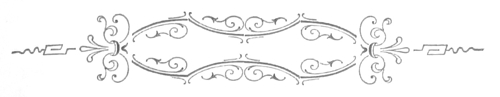
Quando o ultimo orango deu origem ao primeiro homem, e esse homem, chegando á virilidade pôde desfrutar a grandeza da indomavel força de seu pai, domada pela bondade hilariante da sua luminosa intelligencia, fez um dia a si proprio esta pergunta:
—Em que diffiro eu d’aquelle carrancudo sêr, que não falla senão por guinchos e só por contracções grotescas se exprime, que para a alegria tem um grito e um urro para a cólera, que vê morrer os filhos e fugir-lhe a esposa, sem que o invada este desconsolado entorpecimento que eu sinto se não remedeio[Pg 374] o mal, e se para o que me cerca não encontro explicação?
Elle caminha aos saltos, coberto de pellos e ululante de vinganças, trepando pela nodosidade dos caules e enchendo do seu terror feroz as grutas e os maciços das florestas palpitantes de ninhos, pisando sem remorsos as corollas mais purpureas e os calices mais olorantes, e não vendo na vastidão opulenta e na chromatica irradiante d’esse mundo alado ou d’esse mundo vegetal, mais que a rêde em que descuidosamente os seus inimigos vem cahir e onde elle faz as suas victimas!
É das differenças superficiaes de estructura—de eu estar nú e elle vestido de pellos, de elle ter cauda e eu não, dos seus pés terem o feitio das suas mãos prehensis, em quanto as minhas plantas se espalmam pela asperidão das marchas a que as submetto—é das differenças apparentes de organismo, que nascem estas discordancias de natureza—n’elle a seccura, a ferocidade, o egoismo e a inconsequencia—em mim o sagrado terror da responsabilidade, o alcance de vistas que me perturba, a previsão sagaz que me aconselha, e esta commoção sem origem que se entorna no meu corpo, e me tortura ou me enthusiasma, conforme provém de uma necessidade satisfeita, ou conforme provém de um contratempo inesperado?
E como se interrogava em voz alta, no meio dos castanheiros que as trepadeiras vestiam em amplexos concupiscentes nas suas couraças de folhas,[Pg 375] viu surgir dos rochedos negros em que pousava, o velho deus das selvas, alta figura cingida, de cachos e coroada de flôres, com barbas de musgos e vasta cabelleira de relvas verdejantes.
—Abre a cabeça de teu filho, disse o deus.
O homem tomou o machado de silex, chamou seu filho, e fazendo-o ajoelhar fendeu-lhe o craneo de um só golpe.
—Essa caixa de osso que partiste, é como a casca lenhosa de certos fructos tropicaes de que te alimentas. Partida a casca, esses fructos revelam a polpa delicada, de extraordinario tecido e exquisito sabor.
—Guarda esse fructo, disse o deus.—E após, com imperio:
—Abre a cabeça de teu pai! ordenou-lhe. O homem encontrou na toca do grande baobab o velho orango que lhe dera o sêr, acocorado e tropego, roendo talos. Deu-lhe as boas noites, pediu-lhe a benção como de costume, e quando o orango lhe estendia a mão lanugenta, sentiu na fronte o gume do machado que lhe separava o craneo em duas metades.
—Extrahe-lhe o fructo, tornou o deus, e o homem obedeceu.
—Bem, disse o outro.
E apontando cada um dos cerebros desnudados:
—Este é o cerebro de teu filho, este o de teu pai. Vês que é maior o do pequeno que o do velho, não vês? Agora segue com a tua unha estes arabescos[Pg 376] mysteriosos que sulcam a polpa arrancada ao pequeno. Elles desenham o quer que seja de legenda em hieroglyphicos: é a buena-dicha da especie humana. São as circumvoluções, que mal se esboçam no cerebro do orango e que os teus levarão mais e mais profunda e profusamente impressas. Até teu pai o cerebro era alguma coisa tosca como o granito; de ti por diante elle lapida-se, depura-se e modifica-se—é a pedra preciosa, caustica na sombra e tenebrosa na luz, dotada de fulgor proprio e propensa a illuminar ao longe os tenebrosos recessos dos instinctos que herdaste e tens de transmittir suavisados e aptos á utilidade, pela cultura a que tu mesmo os forçarás. Corta-os ambos em pedaços e examina-os bem. São da mesma materia, teem identica fórma e parecem do mesmo valor. Mas um é o ferro bruto que o mineiro distilla do filão recondito, o outro é o ferro dotado de propriedades magneticas. Pódes chamar áquelle, carvão negro e torvo, se tiveres olhado n’este o diamante lapidado, que scintilla pelos engastes das tuas orbitas como se ardesse vívido na corôa de um rei.
—Comprehendo! disse o homem pensativo.
—Olha melhor esse miolo dos dois fructos descascados. Cada polpa se me afigura formada de lobulos ou espheroides. É como um continente dividido em nações pelos grandes rios, ou um paiz repartido em districtos, pelas grandes estradas reaes. Cada districto é a potencia que rege alguma determinada[Pg 377] funcção do corpo—são as bossas. Ha a bossa da memoria, a bossa da intelligencia, a bossa da luxuria, a da gula...
E apontando cada proeminencia, o deus chamava-as pelos seus nomes. Algumas que eram salientes na criança, ou mal se esboçavam no orango ou positivamente não existiam[5]. Em compensação o cerebro do bruto tinha n’outras, um desenvolvimento colossal a respeito do pequeno. O deus fazia-as comparar miudamente, uma a uma.
[5] Faz notar Gratiolet, que as circumvoluções dos mais rudes primates são como o schema das circumvoluções do cerebro humano.
—Todas as que presidem á direcção de necessidades animaes, instinctos ou appetites, são consideraveis em teu pai, dizia elle ao homem. Todas as que se referem ao intellecto são de surprehendente grandeza em teu filho. Eis por que buscas alguma coisa mais na vida que a replexão do teu estomago se tens fome, que a ingestão de agua corrente se tens sêde, que o repouso se tens somno, e o coito brutal se a virilidade do teu sexo faz explosão ante a femea que passa, serva obediente da tua crueldade ou docil instrumento da tua lascivia! D’esse instincto, que a natureza instituiu para povoar os seus continentes e os seus mares, encher de rumor[Pg 378] as florestas e de cardumes as aguas, instincto todo grosseiro nos que te são inferiores, tiraste tu os effeitos mais dôces, as symphonias mais limpidas, os mais castos threnos e as mais scintillantes volatas. Chamaste-lhe o amor, e crystallisando o amor transfizeste-o na adoração. Á femea escrava quebraste as algemas, não consentindo que os seus pés sangrassem, como os teus rudes pés de luctador, nos abrolhos da selva e nos espinhos da maledicencia. Da tua rude cabana fizeste um templo, da tua fé um lampadario, uma cupula da tua religião e da mulher o teu deus. No santuario do teu amor, puzeste o deus, e da cupula do templo o lampadario encheu de esplendores mysticos a tua familia e a tua alma. Pela adoração domaste a tua força, aprendendo a ser delicado para os fracos, altivo para os soberbos, cruel para os maus, justiceiro, generoso e valente! Estas qualidades deve-las á tua intelligencia, fluido singular que emana d’este lobulo—e apontava—e te destacou dos teus antepassados. Por essa faculdade, dominarás os elementos e os animaes, serás rei e senhor, porque o teu braço obedecerá sempre á tua cabeça. Cada geração receberá da anterior um patrimonio de idéas adquirido, entregando religiosamente á que lhe succeder, acrescentado pelos seus esforços, esse patrimonio sagrado e inviolavel. A tua ambição será satisfeita, descança.
—E serei eterno? disse o homem, tremendo áquella idéa.
—Na historia.
[Pg 379]
—Na vida! Que me importará a historia? Se poderei viver assim sempre, dominando mares e povos, e experimentando cá dentro esta plenitude de seiva que extravasa do meu corpo, e se desentranha em colossaes alegrias?
—Não! disse o deus com voz profunda. Morrerás!
—De que me serve então tudo isto? exclamou elle contrahindo a face serena, que uma graça infinita deificava. E erguendo os braços desesperado cahiu a chorar a mesquinhez da sua condição. O velho deus sorria.
—E qual a bossa, que no cerebro de meu filho corresponde a este horrivel veneno que a tua palavra me faz beber?
O deus apontou-lh’a, dizendo:
—Esse veneno chama-se a Dôr e nunca envenenou teu pai.
—Faze-me então voltar á nativa bruteza dos meus, disse o homem. Prefiro a inconsciencia rude do orango, a essa intelligencia que illuminando-me a vida me faz d’ella um ergastulo, e onde não poderei fazer um passo, bom ou mau que seja, sem que este tribunal interior, incorruptivel e soberano, me detenha se vou com pressa, ou bruscamente me acorde se adormeci, para me julgar do que eu fizer e para me castigar a toda a hora.
A voz do deus bradou:
—Jámais!
[Pg 380]
E desde então esse animal vaidoso, julgado o mais perfeito e o mais livre dos sêres vivos, tornou-se no miseravel escravo que eternamente geme sob o chicote do seu verdugo—esse verdugo que se chama: o Pensamento.
FIALHO D’ALMEIDA
CONTOS
PARTE II
A cidade do vicio
NO PRELO
[Pg 384]